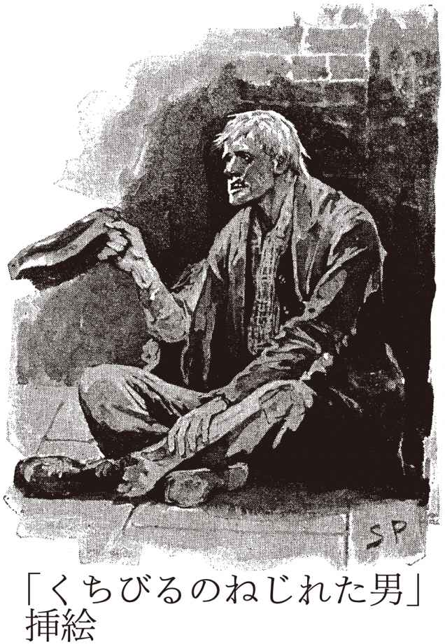

| シャーロック・ホームズの冒険 【新訳版】 シャーロック・ホームズ・シリーズ (創元推理文庫) | |
| アーサー・コナン・ドイル | |
| (2010) | |
この本は縦書きでレイアウトされています。
また、ご覧になる環境により、表示の差が認められることがあります。
本作品を電子書籍版に収録するにあたり、一部の漢字が簡略体で表記されている場合があります。
シャーロック・ホームズの冒険
アーサー・コナン・ドイル
ミステリ史上最大にして最高の名探偵シャーロック・ホームズの推理と活躍を、忠実なる助手ワトスンが綴るシリーズ第１短編集。ホームズの緻密な計画がひとりの女性によって破られる「ボヘミアの醜聞」、赤毛の男を求める奇妙な団体の意図をホームズが鮮やかに解き明かす「赤毛組合」、妻の眼前で夫が消え去った不思議な事件「くちびるのねじれた男」、閉ざされた部屋での怪死事件に秘められたおそるべき真相「まだらの紐」など、いずれも忘れ難き12の名品を収録する。
東京創元社
シャーロック・ホームズの冒険
アーサー・コナン・ドイル
深町眞理子 訳
THE ADVENTURES OF SHERLOCK HOLMES
by
Sir Arthur Conan Doyle
1892
シャーロック・ホームズの冒険
本書を、
エディンバラ市メルヴィル・クレセント二番地なる、わが恩師、医学博士ジョーゼフ・ベル先生にささげる。
ボヘミアの醜聞
Ⅰ
シャーロック・ホームズにとって、彼女はいつの場合も〝あの女性〟である。それ以外の呼びかたで、彼女のことを口にすることはめったにない。彼の目から見た彼女は、女性という性全体を圧倒し、ほかの女性すべての影を薄くさせてしまっているのである。だが、そうかといって、ホームズがその女性、アイリーン・アドラーにたいし、恋に似た気持ちを持っているというわけではない。どんな感情も──なかでもそういう恋愛感情などといったものはとりわけそうだが──彼のように冷静かつ厳密、そのくせみごとにバランスのとれた精神構造の主にとっては、たんにおぞましいものでしかないのだ。私の思うに、彼こそはかつてこの世に出現した、最高に完成された推理ならびに観察マシーンにほかなるまいが、悲しいかな、こと愛情問題となると、とんでもなく場ちがいな存在になりさがってしまう。ひとの細やかな感情について語ろうとしても、揶揄や嘲笑をまじえないかぎり、それを口にのぼせることができない。元来、ひとの感情というものは、観察家にとってはおおいに尊重すべきものだ──人間の動機や行動をつきとめようとするとき、それらをおおった謎のベールを取り去るのに、それが卓抜な効能を発揮してくれる。ところが、熟練した推理家にとっては、かかる夾雑物を自らのデリケートな、精緻に調整された気質のなかに混入させることは、すなわち、精神力を散漫にさせるひとつの要因であって、ひいては、その精神活動から得られた結果のすべてを疑わしいものにしてしまうらしい。ホームズのような気性の主が、なんであれ心のなかに強い感情を持つということ、それは、精密機械のなかにはいりこんだ砂粒とか、彼自身という高性能のレンズに生じたひびなどにもまして、精神の集中を妨げるものにほかならないのだ。にもかかわらず、そんな彼にも、ここにただひとり、忘れえぬ女性がいた。そしてその女性こそ、一般には身元不詳のいかがわしい女として記憶されている、いまは亡きアイリーン・アドラーなのである。
当時、私は、ほとんどホームズとは会わなくなっていた。結婚したことで、独身のホームズとはなんとなく疎遠になっていたのだ。妻を持って、幸福そのものだったし、はじめて一家を構えた男として、日々身辺に生じる細々した問題に対処するだけで手いっぱい、ほかには関心が向かなかったせいもあるが、そのかんホームズのほうはといえば、生得のボヘミアン的気質から、あらゆる社交上の煩いを避け、あいかわらずベイカー街の下宿にこもって、古い書物の山に埋もれ、かと思えば、週ごとにコカインと客気とのあいだを往復する──つまり、麻薬に耽溺するのと、持ち前の沸々たる意欲に駆りたてられるのと、その両方をくりかえしているのだった。以前に変わらず、犯罪の研究には深く打ちこんでいて、そのありあまる能力と、なみなみならぬ観察力とをつぎこみ、警察が手をひいた迷宮入り事件の手がかりを追ったり、事件の底にひそむ謎を解き明かしたりしていた。こうしたホームズの動静については、ときおり私の耳にも風のうわさが聞こえてくる。トレポフ殺人事件に関して、遠くウクライナのオデッサに招聘されたとか、わが海軍基地のあるセイロン島のトリンコマリーで、アトキンスン兄弟にからむ奇々怪々な悲劇を解決したとか。さらには、オランダ王室からの依頼で、ことのほか慎重を要するある使命を、みごと成功裏にやりとげてみせたとか。とはいえ、こうしたホームズの活躍ぶりも、こちらは一般の読者並みに、日々の新聞紙上でその一端を垣間見るしかなく、かつての友人であり、仕事のうえでの伴侶でもあった男について、それ以上のことはかいもく知らぬに等しい状況なのだった。
ある夜──忘れもせぬ一八八八年三月二十日のことだが──たまたま私は往診の帰りに（というのも、そのころはまたもとの市井の開業医にもどっていたので）、なつかしいベイカー街を通りかかった。見慣れた下宿の玄関先にさしかかったとき、おそらくそれが私の心のなかでは、妻に求婚していた時代のことや、あの陰惨な『緋色の研究』事件の記憶などと、分かちがたく結びついているためだろう、なぜかとつぜんホームズと再会してみたくてたまらなくなってきた。再会して、彼がその類まれなる能力をどのように活用しているか、ぜひともこの目で確かめてみたい。彼の部屋には煌々と明かりがともっていて、そのうえ、こうして見あげているあいだにも、その長身の、痩せた姿が、黒いシルエットとなってブラインドの向こうを横切るのが、二度までも見てとれた。頭を深く前にたれ、手は後ろで組んで、せかせかと精力的に室内を歩きまわっている。彼の気質なり習性なりを私ほどによく知りつくしているものにとっては、その姿勢と動きを見れば、もはやじゅうぶん。また仕事に取り組んでいるのだ。麻薬の生みだす夢想を吹っ切って立ちあがり、なにか新しい事件の臭跡を熱心に追っている。私は呼び鈴を鳴らし、ほどなく、かつては一部が私のものでもあった部屋へ案内された。
ホームズの応対は、大仰な歓迎とまではいかなかった。そういうことはめったにない。とはいえ、私がきたのを喜んでくれているのはわかった。ほとんど無言のまま、それでも目には親しみぶかさをたたえて、私に肘かけ椅子のひとつを手真似ですすめてくれたうえ、葉巻入れをほうってよこし、さらに、酒瓶を並べたケースと、片隅の炭酸水サイフォンを指し示した。それから、暖炉の前に立つと、独特の内省的な目つきで私を上から下までながめまわした。
「結婚したのがきみにはよかったようだな」と言う。「ざっと見たところ、前に会ったときから、七ポンド半は肥ってるだろう、ワトスン」
「七ポンドだよ」私は答えた。
「そうかな、もうすこし多いような気がするんだが。まあ、ほんのわずかだけどね。それに、また開業したようだな。医者の仕事にもどるつもりだとは、聞いた覚えがなかったが」
「だったら、どうしてわかったんだ？」
「見て、推理したのさ。ついでに言えば、最近、ひどい雨に降られて、ずぶ濡れになったってことや、きみのうちにとんでもなく無器用で、そそっかしいメイドがいるってこともね」
「おいおい、ホームズ」私は言った。「驚かすのもたいがいにしてほしいね。ほんの三、四世紀か前だったら、確実に火あぶりの刑にされてたところだぞ。たしかに、こないだの木曜日に田舎へ出かけて、歩いて帰る途中、ずぶ濡れになった。しかし、そのとき着ていた服はすっかり着替えてるんだし、それでなぜきみに、そんな推理ができるのかわからない。もうひとつ、メイドのメアリー・ジェーンのことだが、お説のとおり、どうにも救いがたい無器用娘で、妻はすでに暇を出すと申しわたしている。だがそれにしても、どうしてきみにそんなことまで見抜けるのか、やはり合点がいかないな」
ホームズはくつくつ笑って、ほっそりと長い手を神経質そうにこすりあわせた。
「いたって簡単なことさ。見たところ、きみの左の靴の内側、ちょうど暖炉の火明かりに照らしだされてるあたりだが、そこの革に、くっきりしたひっかき傷が六本、ほぼ平行に走っている。明らかに、だれかおそろしく不注意な人間が、靴底のふちにこびりついた泥を掻き落とそうとして、つけた傷だ。このことから、二重の推論がひきだせる。ひとつは、きみがひどい悪天候の日に外出したこと、そしてもうひとつ、きみのうちには、主人の靴に傷をつけて平然としてるような、ロンドンの家事使用人階級のうちでもとりわけ困ったのがいるということ。ついでに、きみが開業したことについてだが、ここにひとりの紳士がヨードホルムのにおいをぷんぷんさせ、右手の人差し指には殺菌用の硝酸銀の黒いしみをつけ、おまけに、シルクハットの片側を、さもここに聴診器が忍ばせてありますといわんばかりに大きくふくらませた、そんないでたちではいってくるのを見て、それがよくはやっている医者だと見抜けないようなら、ぼくはよほどのぼんくらだということになる」
私はつい笑わずにはいられなかった。こうやって彼の口から推理の筋道を順序だてて聞かされてみると、きまってそんな気持ちになる。だから言った。「きみの説明を聞くと、いつもばかばかしいほど単純に思えて、自分でも簡単にやれそうな気がするんだが、そのくせ、きみの推考の一段階ごとにひっかかって、きみの口から論証の過程をひとつひとつ説明してもらうまでは、まるきり五里霧中だ。はばかりながらぼくの目だって、きみの目に劣らず、よく見えてるはずなんだがな」
「そりゃそうだろうさ」そう言いながら、ホームズは煙草に火をつけ、どさりと肘かけ椅子に身を投げかけた。「きみはたしかに見てはいる。だが観察はしない。見るのと観察するのとでは、大ちがいなんだ。たとえばの話、この家の玄関からこの部屋まであがってくる階段、きみは何度も見ているだろう？」
「ああ、たびたび見ている」
「たびたびとは、何回くらい？」
「そうさな、何百回となく」
「じゃあ訊くが、階段は何段ある？」
「何段か、だと？ 知るものか」
「そらね！ きみは観察していないんだ。そのくせ、見るだけは見ている。そこなのさ、ぼくの言いたいのは。ついでに言うと、ぼく自身は階段が十七段あると知っている。見るのと観察するのとを、ふたつながらやっているからだ。というところで話は変わるが、きみはこういった問題に関心があるようだし、かつてのぼくのささやかな体験のひとつふたつを、なかなかおもしろい記録に残してくれたこともある。だから、こういうものにも興味があるんじゃないかと思うんだが」そう言ってホームズが投げてよこしたのは、それまでテーブルの上にひろげてあった、一枚の厚手の淡紅色の便箋だった。「さっきの配達で届いたばかりだ。読みあげてみてくれないか」
手紙には日付けがなく、差出人の署名も、また住所もなかった。
今夕、八時十五分前に、さるきわめて重大な問題についてご相談いたしたく、ある人間が参上つかまつります。貴殿が先ごろ、ヨーロッパのさる王室にたいしてなされたご尽力のほどは、その重大性をいかに強調してもしきれぬ由々しき大問題をも、安心して託すに足る人物で貴殿があられることを証明しております。その点につきましては、われわれもこれまでにあらゆる方面から聞き及んでいるところであります。ぜひとも所定の時刻にご在宅くださるよう、また、訪問者が覆面を着用しておりましても、どうかご容赦たまわりますよう、ひらにお願い申しあげます。
「ふうん、ずいぶん謎めいた手紙だな」私は思うところを口にした。「で、きみはどう思うんだ？」
「まだデータがそろっていない。判断の根拠となるデータもなしに、やみくもに理論を立てるのは、愚の骨頂だよ。それをやると、事実にそって理論を立てるのではなく、つい事実のほうを理論に合わせてねじまげるようになる。だが、ここはひとまず、この手紙そのものを問題にしよう。きみならこれからどういう推論をひきだすかね？」
私はまずじっくりと手紙の筆跡をながめ、ついで、それが書かれている紙の質を調べた。
「これを書いたのは、おそらく、相当に裕福な人物だろう」いつもの友人の手法を真似てみようと努めながら、私は所見を述べた。「この種の上質紙は、一綴り半クラウン以下では手にはいらない。それに、紙質が妙に強靭で、ごわごわした感じだね」
「〝妙に〟──まさしく言いえて妙だよ」ホームズは言った。「これはね、そもそもイギリス製の紙じゃない。明かりに透かしてみたまえ」
言われたとおりにしてみると、透かしが浮きあがってきた。まず大文字のＥのそばに、小文字のｇ、それから大文字のＰ、大文字のＧとつづいて、そのそばに小文字のｔ。
「なにを示していると思う？」ホームズが問いかけてきた。
「当然、製紙業者の名前だろう。というか、名前の頭文字の組み合わせだな」
「はずれだ。小文字のｔを添えた大文字のＧ、これはドイツ語の〝Gesellschaft〟の略で、〝会社〟ということだ。英語の〝Co.〟にあたる慣用的な縮約形だね。Ｐはもちろんドイツ語の〝Papier〟、紙のことさ。あとはEgだが、ちょっと『ヨーロッパ地名辞典』をのぞいてみよう」ホームズは本棚から茶色の分厚い書物をとりおろした。「Eglow、Eglonitz──ああ、これだこれだ、Egria。ドイツ語圏にある国──ボヘミア──の地方都市で、カールスバートからもさほど遠くない。〝ヴァレンシュタインの終焉の地（１）として知られ、また、ガラス工場および製紙工場の多いことでも知られる〟か。はは、どう思う、これからなにかひきだせるかね？」目がきらめき、彼はくわえた煙草から、いかにも得意げにもくもくと紫煙を吹きあげた。
「要するに、この紙はボヘミア製だということだろう？」
「正解。ついでに、この手紙の主がドイツ人だということもわかる。気がついたかい、この文章の奇妙な構文──〝その点につきましては、当方もこれまでにあらゆる方面から聞き及んでいるところであります（This account of you we have from all quarters received.）〟。フランス人とかロシア人だったら、けっしてこういう書きかたはしない。こんなふうに動詞をないがしろにして、receiveを最後に持ってくるというのは、ドイツ人に決まってる。というわけで、残る問題は、このドイツ人──ボヘミア製の便箋を使い、顔をさらしたくないために覆面をするというこの御仁──が、いったいなにをもとめているのかということだけだ。しかしまあ、もしぼくにして誤りなくんば、どうやらそのご当人があらわれたようだから、そうした疑問もすぐに氷解するだろう」
ホームズがそう言っているあいだにも、高らかな馬の蹄の音、そして車輪が歩道の縁石にこすれる音が響き、それにつづいて、呼び鈴が鋭く鳴りわたった。ホームズがひゅっと口笛を吹いた。
「蹄の音からすると、二頭立てだな」そう言って、窓から外を見ながらつづける。「ああ、やっぱりそうだ。しゃれた小型の四輪箱馬車に、りっぱな馬が二頭。あれなら一頭百五十ギニーはするだろう。ねえワトスン、この事件、ほかになにもなくても、金だけはたっぷりうなっていそうだぞ」
「ぼくはもう失礼したほうがいいだろうね、ホームズ」
「ばかを言いたまえ、ドクター。そこにでんとすわっているがいい。ぼくだって、筆記者のボズウェルがついていてくれなくちゃ、てんでお手あげだよ。それに、この事件はどうやらおもしろくなりそうだ。見のがしたら、きっと後悔するぞ」
「しかし、依頼人のほうが──」
「そっちは気にしなくたっていい。これにはきみの助力が必要になるかもしれないし、ぼくにとって必要なら、依頼人にとってもおなじこと。そら、ご入来だ。きみはそこの肘かけ椅子にかけて、せいぜいぼくらの話を傾聴していてくれたまえ」
重々しくゆったりと階段をのぼってきた足音が、廊下を近づいてくるや、ドアのすぐ外で止まった。それから、ドアを無遠慮に、権高にたたく音がした。
「どうぞ！」ホームズが答えた。
はいってきたのは、身長六フィート六インチはくだるまいという大柄な男で、ヘラクレスもかくやと思われる厚い胸板と、たくましい四肢をそなえていた。身につけているのは、贅を凝らした、イギリスでなら悪趣味とも見なされるだろう豪奢なもの。ダブルの上着の前身頃と両袖の袖口は、ぐるりと分厚いアストラカンの毛皮で飾られ、肩にはおった濃紺のマントには、燃えるような緋色の絹の裏地、そしてそのマントを喉もとで留めているブローチを飾るのは、光り輝く緑柱石の一つ石。ふくらはぎのなかばまで達するブーツは、上辺の折り返し部分を豪華な褐色の毛皮で縁どられ、それが、この人物の風体全体からにおってくる印象──粗野な富の存在という印象──に、完璧な仕上げをほどこしていた。手にはつばの広い帽子、そして顔の上半分は、頬骨の下まで届く黒い仮面で隠しているが、どうやらその仮面はたったいまつけたばかりらしく、部屋にはいってきたときには、まだ手が頬のあたりまであがっていた。仮面に隠れていない顔の下半分からは、この男が強い性格の主であり、たれさがった分厚いくちびるといい、長くてまっすぐなあごといい、ほとんど強情にも通ずる強固な意志を秘めていることがうかがわれた。
「手紙は届きましたか？」と、いきなりたずねる。強いドイツ訛りの響く、太くてざらざらした声だ。「おうかがいすると予告しておいたはずだが」そう言いながら、どちらに話しかければよいものか迷っているように、私たちふたりを交互に見くらべた。
「どうかおかけください」ホームズが言った。「こちらはぼくの友人で、相棒でもあるワトスン博士です。ときどき仕事を手伝ってもらっています。さて、せっかくお越しいただいたからには、まずお名前からうかがわせていただけますか？」
「フォン・クラム伯爵と呼んでいただきたい。ボヘミアの貴族です。聞けば、こちらの紳士はご友人だということだが、きわめて重要な由々しき大問題を打ち明けてもさしつかえないと、そう思ってよいのでしょうな？ それだけの廉恥心と分別を持ちあわせておられると？ そうでないのなら、できればあなたにだけご相談したいのだが」
私は席を立ちかけたが、ホームズに手首をつかまれ、椅子に押しもどされた。「いや、ふたりにお聞かせいただくか、でなくば、このお話はなかったことにするか、です。このぼくにお話しになることは、なにによらず、この紳士にもお聞かせくださってまちがいありません」
伯爵はがっしりした肩をすくめると、「では、まずお二方にお願いしたいが」と、切りだした。「この話はこれから二年間、ぜったいに他言はしないと約束していただきたい。二年たてば、この問題も重要性を失う。だが、目下のところは、まかりまちがえばヨーロッパの歴史をすら左右しかねない、それほどの重要問題だと言っても過言ではないのです」
「お約束します」ホームズが答えた。
「わたしもお約束します」
「ついでに、この仮面のこともご容赦いただきたい」不思議な訪問客は言葉をつづけた。「わたしにこの用件を託された、さるやんごとなきご身分のおかたは、使いが訪問先に身元を知られることをお望みではないのでな。なお、ついでに白状すると、さいぜん名乗ったわたしの称号、あれもじつは本来のものではない」
「そのことなら気づいていました」ホームズはそっけなく答えた。
「なにぶん、事情が非常に微妙なものなので、いかなる手段を講じてでも、これが途方もないスキャンダルに発展したり、ヨーロッパのさる王家の名を汚したりすることのないよう、用心にも用心せねばならない。いや、あからさまに申せば、事はボヘミア国歴代の君主、オルムシュタイン家にかかわる問題なのだ」
「そのことも察しておりました」ホームズはつぶやくように言うと、肘かけ椅子に長々と身を沈め、目をとじた。
そのものうげな、だらりとした姿勢に、訪問者は明らかにとまどったらしい目をちらりと向けた。さだめしホームズのことを、ヨーロッパ随一の明敏な推理家で、かつ精力的な私立探偵である、とでも聞かされてきたのだろう。ややあって、ホームズはとじていた目をゆっくりとあけると、いらだたしげに大柄な依頼人を見やった。
「おそれながら、さっそくにも陛下のお口から、そのご相談の趣とやらをお聞かせ願えましょうか。そうすれば、こちらとしましても、すぐにもお力になれるのですが」
客ははじかれたように椅子から立ちあがると、動揺をおさえきれぬふぜいで、ひとしきり室内を行ったりきたりした。それから、観念したようすで、顔から仮面をむしりとるなり、床に投げつけた。「そうだ、いたしかたない。たしかにわたしがその王だ。なぜまたつまらぬ隠しだてをしようなどと考えたものかな？」
「そうですね、おっしゃるとおりです」ホームズが低く答えた。「陛下がここへこられて、まだ一言も話されぬうちから、訪ねてみえたのがボヘミア国歴代の君主たるカッセル＝ファルシュタイン大公、ヴィルヘルム・ゴッツライヒ・ジギスモント・フォン・オルムシュタイン陛下であることぐらい、見当がついておりましたよ」
「だが、こちらの事情も察してほしいのだ」不思議な客はそう言って、あらためて椅子に腰をおろし、その秀でた白皙のひたいに手を走らせた。「わたしがこうした問題を自らの手で処理するのに慣れておらぬこと、それをわかってほしいのだよ。とはいえ、事はいまも言うようにきわめて微妙な問題であるからして、迂闊に他人にまかせるわけにもいかぬ──まかせた相手にこちらの弱みをすっかりさらけだすことになるのだからな。そこで、思いたって、きみに相談すべく、こうしてプラハから微行でやってきた次第だ」
「なるほど。ではそのご相談とやらをうけたまわりましょう」ホームズはそう言って、ふたたび目をとじた。
「かいつまんで話すと、こういうことになる──五年ほど前、ワルシャワにしばらく長逗留をしておったおり、アイリーン・アドラーという女と知りあった。いかがわしい女だが、名はよく知られている。きみもこの名には聞き覚えがあるだろう」
「ドクター、すまないがぼくの索引帳をあたってみてくれないか」ホームズが目もあけずに、つぶやくように言った。
これまで長年にわたり、彼はさまざまな人物や事物について、それぞれ要点をメモし、索引をつけた総目録をつくってきた。だから、どこで、どんな事件や人物の名を持ちだされても、たちどころにそれらに関する情報がひきだせるのである。目下のこの件でも、あるユダヤ教の律法学者と、深海魚についての論文を書いたという海軍の参謀将校とのあいだにはさまって、問題の女性の名と経歴とを見いだすことができた。
「見せてくれ」ホームズが言う。「ほう！ 一八五八年、ニュージャージー州生まれか。コントラルト歌手──ふむ！ スカラ座に出演──ふむ！ ワルシャワ帝室オペラ劇場にてプリマドンナを務める──なるほど！ のち、オペラ界より引退──は！ 現在はロンドン在住──ほう、やっぱり！ そうしますと、陛下、察するところ陛下は、この若い女性と掛かり合いになられ、のちのち災いの種になりそうな手紙かなにかを書かれてしまった。そして、いまそれをとりもどしたいと、そうお望みなのですね？」
「いかにもそのとおりだ。しかし、なぜそれを──」
「秘密裏に結婚なさったわけではない？」
「いや、それはしていない」
「法的な書類ないし証明書のたぐいは？」
「なにも渡していない」
「では陛下、はばかりながら陛下がなにをお悩みなのか、ぼくにはわかりかねます。かりにこの女性が、恐喝その他の目的で陛下のお手紙を公にしたとしても、どうしてそれが陛下のご真筆であると証明できるのです？」
「筆跡というものがある」
「おやおや！ 筆跡なんて、いくらでも真似られます」
「わたし専用の書簡箋が使ってある」
「書簡箋は盗まれることもありえます」
「わたしの封印が押してある」
「それも偽造だと」
「わたしの写真がある」
「買ったのでしょう」
「いや、ふたりで撮った写真なのだ」
「いやはや！ それはすこぶるまずい！ じっさい無分別なことをなさいましたね」
「どうかしていたのだ──正気をなくしていたのだな」
「それにしても、よくもまあ、そんなご体面にかかわるようなことをなさったものだ」
「当時はまだ王太子でしかなかった。若気のいたりだな。いまでもやっと三十になったばかりなのだ」
「なんとしても、とりもどさねばなりませんね」
「手は尽くしてみたのだ。だがうまくいかなかった」
「金でかたをつけるしかありますまい。買いとられるのですよ」
「それが、売ろうとしないのだ」
「では、盗みだされては？」
「それもすでに五回も試みた。そのうち二度は、金で雇った賊にうちじゅうを家探しさせた。一度は、旅行ちゅうの手荷物を持ち逃げさせて、なかを調べさせた。さらに二度は、本人を待ち伏せして、追い剥ぎの真似事もさせてみた。いずれもまったく成果なしだ」
「まったく影も形もなかった、と？」
「さよう、まるきりなにも出てこなかった」
ホームズは声をあげて笑った。「なるほど、これはたしかにちょっとした難問ですね」
「わたしにとっては深刻な問題なのだぞ」ボヘミア王は非難がましく言いかえした。
「そうでしょう、そうでしょうとも。で、その女性は、写真を楯にとって、なにをしようともくろんでいるのです？」
「わたしを破滅させるつもりなのだ」
「どのようにして？」
「近々わたしは結婚することになっている」
「聞き及んでおります」
「相手はスカンジナヴィア国王の第二王女で、クロチルド・ロートマン・フォン・ザクセ＝メニンゲン姫だ。あの王室が道徳的にすこぶる厳格であることは、きみも知っているだろう。王女本人がまた、きわめて繊細な心根の主であるとかで、わたしの品行にすこしでも曇りが生じるようなら、婚約が破棄されることは必定だ」
「で、アイリーン・アドラーは、なんと？」
「写真を先方に送ると脅してきている。あの女なら、脅しではすまさず、きっとやるだろう。そういう女だとわたしにはわかっている。きみはあの女を知らんだろうが、まさに鉄のごとき胆力の主だ。女性として、ことのほか美しい容貌を持ちながら、その強靭な精神は、どんな男にも勝る。このわたしがほかの女性を妻にめとるのを見るくらいなら、どんな手段を使ってでも、それを妨げようとかかってくるだろう──そう、どんな極端な手段を用いても」
「まだ先方に送ってしまってはいないこと、これは確かなのですね？」
「確かだ」
「どうしてそう言いきれるのです？」
「送るのは、わたしの婚約が公表された当日にする、そう言ってきているからだ。その日は来週月曜日と決まっている」
「なるほど。すると、まだ三日の余裕があるわけだ」ホームズはあくびを噛み殺しながら言った。「それならずいぶん助かります──さしあたり、すぐにもかたづけねばならない重要課題をひとつふたつかかえておりますので。ところで陛下、もちろん陛下は、当面このロンドンにご滞在なのでしょうね？」
「そのつもりだ。フォン・クラム伯爵の名で、ランガム・ホテルに逗留している」
「でしたら、調査の進捗状況については、まもなく一報をお届けすることになるでしょう」
「ぜひ頼んだぞ。居ても立ってもいられぬ心地だ」
「それで、費用については？」
「きみに白紙委任状を与える」
「全面的に？」
「はっきり言っておくが、あの写真をとりもどすためであれば、わが王国の一部を与えてもかまわぬ、それぐらいの気持ちだ」
「では、当面の経費については？」
王はマントの下からずっしりしたセーム革の袋をとりだすと、そのままそれをテーブルに置いた。
「金貨で三百ポンド、紙幣で七百ポンドある」
ホームズは手もとの用箋の一枚に手ばやく受け取りをしたためると、それを王に渡した。
「マドモワゼルのお住まいをうかがいましょうか」
「セント・ジョンズ・ウッド、サーペンタイン・アベニューのブライオニー・ロッジだ」
ホームズはそれを書きとめた。「最後にもうひとつ、問題の写真はキャビネ版ですか？」
「そうだ」
「それでは陛下、今晩はひとまずおひきとりください。遠からず吉報をお届けできると存じます。それからワトスン」と、ホームズは王家の馬車が通りを走り去ってゆくのをよそに、私にむかってつけくわえた。「きみにもこれで失礼しよう。よかったらきみ、あす、午後の三時に、あらためて訪ねてきてくれないか。このささやかな一件について、きみと意見を交換してみたいのさ」
Ⅱ
翌日、三時きっかりにベイカー街へ行ってみたが、ホームズはまだ帰宅していなかった。下宿の女主人の話では、朝の八時ちょっと過ぎに出かけたままだという。それでも私は、どれだけホームズの帰りが遅くなろうと、それまで待つつもりで、暖炉のそばに腰を落ち着けた。このころにはすでに、今回の調査の成り行きに深く興味をそそられていた。これは、かつて私がべつのところで発表したふたつの犯罪事件ほどには、あらゆる面で奇っ怪でも、無気味でもないのだが、それでも、問題の性質といい、依頼人の高貴な身分といい、これはこれで独特の魅力がそなわっている。いや、あえていえば、いま友人が進めているこの調査の結果自体はべつにしても、友人の卓越した状況把握とか、彼の鋭くかつ的確な推理などには、強く私の心をそそるなにかがあって、それゆえ私にとって、彼の系統だった調査の進めかたを研究したり、彼の迅速かつ洞察に富んだ推理法──それによって、どんな錯綜した謎をも解き明かしてゆく探偵法──を追ってみたりすることは、ひとつの喜びになっているのである。しかも私は、ホームズがいつも変わらず成功をおさめることに慣れきっている。だから、万が一にも彼が失敗する可能性もあるということなど、およそ念頭にも浮かばないのだった。
四時近くなって、やっと部屋のドアがあき、酔った馬丁らしい人物がはいってきた。赤ら顔に、乱れた髪、頬髯を伸ばし、服装は見すぼらしい。友人の驚嘆すべき変装の才には慣れているつもりの私でも、三度も見なおして、やっとそれがホームズ本人にまちがいないと確認できたほどだ。ひとつうなずいて、寝室にはいっていった彼は、五分もすると、いつものこざっぱりしたツイードの上下であらわれた。そしてポケットに両手をつっこみ、暖炉の前で長々と脚をのばすなり、いきなり笑いだして、そのまま数分間もげらげら笑いつづけた。
「いやまったく！」と、笑いにむせながら叫ぶ。それから、またも思いだしたように笑いはじめて、ついには後ろにのけぞり、ぐったり手足を投げだして、椅子にもたれかかってしまった。
「いったいなにがあったんだ？」
「いや、とにかくおかしくてね。きっときみには想像もつかないだろうな──このぼくが午前ちゅういっぱいなにをして過ごしてきたか、それが最後にはどういう顛末になったか」
「わかるものか、このぼくに。さだめし、問題のミス・アイリーン・アドラーの生活ぶりとか習慣とか、あるいは家のようすなんかをさぐってきたんだろう？」
「そのとおり。しかしだ、そのあとがいささか妙なことになった。まあ聞きたまえ。けさは八時ちょっと過ぎに、失業ちゅうの馬丁に扮装して、ここを出た。馬丁とか御者とか、馬を扱う職業の男たちのあいだには、ひとつのうるわしい友愛組織が存在していてね。そのなかにはいりこみさえすれば、知りたいことはなんでも知れるんだ。ブライオニー・ロッジは、じきに見つかった。こぢんまりとして優美な別荘ふうの二階建てで、庭は裏手にあり、かわりに建物の正面は、道路のすぐきわまでせりだしている。玄関の錠前はチャッブ式（２）。建物の右手は大きな居間で、じゅうぶんな家具が置かれ、窓は床面すれすれまで届く縦長のものだが、その窓の留め金たるや、子供でもあけられそうな、旧式の見かけ倒しのしろもの。建物の裏手側は、これといってめだつ特徴もないが、ただ、馬車置き場の屋根からすぐ手の届きそうなところに、廊下の窓がある。建物のまわりをひとめぐりして、あらゆる角度から仔細に観察してみたが、ほかにはとくに注目すべき点は見あたらなかった。
そのあと、通りをぶらぶら歩いてゆくと、思ったとおり、裏庭のいっぽうの塀にそって走る路地に、貸し馬車屋が一軒あった。馬丁連中が馬にブラシをかけるのを手伝ってやったら、手間賃に二ペンス払ってくれたうえ、黒ビールとエールのハーフアンドハーフを一杯と、刻み煙草二服をふるまってくれたから、そのあいだにミス・アドラーについて、知りたかったことはあらかた訊きだすことができた。ぼくにはなんの関心もない近所のほかの住人についても、うわさ話の五、六人分はたっぷり聞かされて、閉口したけどね」
「で、肝心のアイリーン・アドラーについてだが、なにがわかった？」
「そうだな、あの界隈の男たちはみんな、あの女に心酔しきってるようだ。女として、この地球上にあれほどの上玉はいないと、界隈の連中は口をそろえて言っている。ときどきコンサートで歌うくらいで、ひっそりした暮らしぶり。毎日五時に馬車で出かけて、七時には夕食のためにもどってくる。コンサートに出演するときを除けば、めったに外出もしないが、ひとりだけ、ちょくちょく訪ねてくる男客がいる。色が浅黒く、颯爽とした感じの二枚目で、これが日に一度は必ず顔を見せるし、ときには二度あらわれることもある。名はゴドフリー・ノートン、法曹学院イナー・テンプル所属の弁護士。どうだ、わかったろう、御者連中と親交を結んでおくと、どんなご利益があるか。サーペンタインの馬車屋から、連中はたびたびノートンを下宿まで送り届けてるから、この男のことはなんでも知りつくしてるんだ。連中から訊きだせるかぎりのことは訊きだしてしまうと、ぼくはもう一度ブライオニー・ロッジの近辺をぶらついて、これからの作戦を考えめぐらした。
このゴドフリー・ノートンという存在が、事件の重要な要因になってくることはまちがいない。彼は弁護士だ。そう聞くと、なにやらただならぬものを感じさせられるじゃないか。はたしてふたりはどういう関係なのか。彼がたびたび訪ねてくる目的はなんなのか。彼女はノートンの依頼人なのか、ただの友達なのか、それとも恋人なのか。依頼人だとしたら、彼女はノートンに例の写真を預けている可能性がある。友達か恋人なら、それはまずないだろう。この答えがどう出るかによって、今後のぼくの方針もちがってくる──このままブライオニー・ロッジに狙いをしぼるか、それとも、テンプル内のノートンの住まいに狙いを切り換えるか。微妙な問題だし、こっちの調査の範囲も、これでぐっとひろがってくるわけだ。細かい話で、きみには退屈かもしれないが、全体の状況をわかってもらうためには、ぼくがちょっとした問題にぶつかっていることを知っておいてもらう必要があるからね」
「だいじょうぶ、傾聴しているよ」私は答えた。
「さて、どうすべきかと、まだあれこれ考えあぐねているところへ、一台の二輪辻馬車がブライオニー・ロッジの玄関先に停まって、紳士がひとりとびだしてきた。とびきりの好男子で、浅黒い肌に、鷲鼻、口髭をたくわえている──どう見ても、さっき話に聞かされた、そのご当人だ。ひどく急いでいるらしく、待っててくれと御者に叫ぶなり、応対に出てきたメイドを押しのけ、いかにも〝勝手知ったる他人の家〟といったふぜいで、奥へ姿を消した。
なかにいたのは、ざっと三十分ぐらいだったろうか。居間の窓ごしに、せかせかそこらを歩きまわりながら、手をふりまわして、興奮したていでしゃべっている彼の姿が、ぼくにもちらちら見てとれた。彼女のほうは、目にはいらなかった。やがて彼は出てきたが、そのようすは、きたときよりも、さらにあわただしかった。馬車に乗りこみながら、ポケットから金の懐中時計をとりだすと、しばらく見入ったすえに、『思いきりとばしてくれ』と、大声で呼びかけた。『まずリージェント街の〈グロス・アンド・ハンキー〉の店に寄って、それから、エッジウェア・ロードの聖モニカ教会だ。二十分で行けたら、半ギニー奮発するぞ！』
馬車は走り去った。あとを追うべきかどうか、ぼくが去就に迷っているところへ、横の路地からもう一台、小ぎれいな幌つき四輪馬車が走りでてきた。見れば、御者の上着はボタンが半分しかかかっていないし、ネクタイは横っちょにひんまがって、耳の下にきている。馬具の革紐は、どれもこれも先端がバックルからとびだしている。馬車が玄関先に停まるか停まらないかのうちに、女が奥からとびだしてきて、乗りこんだ。このときちらっと目にはいっただけだが、たしかにきれいな女だったよ──あれならば男が焦がれ死にしても無理はない、そんな美貌だった。
『聖モニカ教会へお願いね、ジョン』そう叫んで、これもおなじ台詞を口にした。『二十分で行ってくれたら、半ソヴリンはずむわ』
こんな好機を見のがす手はないだろう、ワトスン。走って追いかけるか、それとも彼女の馬車の後ろにしがみつくか、そう思案するまもなく、折よく一台の辻馬車が通りをやってきた。こっちの見すぼらしいなりを見て、御者は二の足を踏んでいるようだったが、ぼくは断わられないうちに、さっさととびのった。『聖モニカ教会までやってくれ。二十分以内に着けたら、半ソヴリンはずむぞ』と、頭ごなしに言ってやったよ。時刻は十二時二十五分前。これからなにが始まろうとしているのか、それぐらいは考えるまでもなく見当がつく。
御者はとばしてくれたよ。あんなに速く走ったのははじめてだと思うが、それでも、前を行くふたりにはかなわなかった。こっちが着いたときには、二輪辻馬車も、貸し馬車屋の四輪馬車も、体から湯気をたてている馬ともども、教会の前に停まっていた。御者に約束の金を払うなり、ぼくは急いでなかにはいった。堂内にいたのは、ぼくがあとをつけてきたふたりと、ほかに、白い法衣をまとった牧師がひとりだけ。その牧師が、なにやらしきりにふたりを諭しているらしい。祭壇の前に、三人がひとかたまりになって立っている。ぼくは、たまたま教会を見かけてふらりとはいってみたというふぜいで、さりげなく側廊を前へと歩いていった。と、驚いたことに、とつぜん祭壇の前の三人がそろって顔をこっちへ向けたかと思うと、ゴドフリー・ノートンがすさまじい勢いで走り寄ってきたじゃないか。
『助かった！』裏返った声で叫ぶ。『そこのひと、あんたでいい。きてくれ！ 早く！』
『いったいなんなんで？』ぼくは問いかえした。
『いいから、きてくれ。手間はとらせない──三分だけだ。でないと、法的に無効になってしまう』
わけがわからぬままに、ぼくはなかばひきずられるように祭壇の前まで連れてゆかれ、気がついてみると、耳もとでささやかれる宣誓の言葉を復唱したり、ぼく自身はなにも知らないはずの事柄について、それらが真実である旨を保証したりしていた。要するに、事の次第をかいつまんで話せば、未婚者であるアイリーン・アドラーと、これも未婚者であるゴドフリー・ノートンとを合法的に結びつける、その手伝いをしていたというわけさ。だが、それもあっというまに終わって、つぎの瞬間には、新郎と新婦が両側からぼくに礼を述べる、正面からは牧師がにこにこ笑いかけてくる、といった仕儀になっていた。じっさい、あれほど奇妙きてれつというか、おかしな立場に立たされたのは、生まれてはじめてだよ。それを思いだして、さっきは笑いが止まらなかったのさ。どうやら、結婚許可証になにか不備があって、なんらかの立会人がいなければ、式を挙げてやるわけにはいかぬ、そう牧師が言いだしたらしい。ところがそこへ、運よくぼくがあらわれた。おかげで花婿は立会人を探しに、大あわてで街頭へとびだしてゆくはめにならずにすんだというわけだ。花嫁がお礼だと言って、ソヴリン金貨を一枚くれたから、記念に時計の鎖につけておこうと思ってる」
「なるほど。それにしても、意外な成り行きになったものだね」私は言った。「で、それからどうなったんだ？」
「それだよ、こっちの目論見にとっては、すこぶる厄介なことになったというところかな。あのようすだと、ふたりはすぐにでも新婚旅行に出かけそうな勢いだから、そうなると、こっちも早急に、かつ精力的に動きだす必要に迫られるだろう。ところが、教会を出たところで、ふたりはそのまま左右に別れた。新郎はテンプル内の住まいへ、新婦はブライオニー・ロッジへと帰ってゆくらしい。別れぎわに新婦が、『いつものように、五時には公園に行っていますから』そう言うのが聞こえた。聞こえたのはそれだけだ。ふたりの馬車はべつべつの方角へ走りだし、ぼくはぼくで、つぎなる手はずをととのえにいったという次第だ」
「手はずというと？」
「まずは、コールドビーフ、それにビールを一杯だな」そう答えて、ホームズはベルを鳴らした。「忙しくて、食事をとるのも忘れていたが、今夜はもっともっと忙しくなりそうだ。そこで相談だが、ドクター、きみに手を貸してもらいたいんだがね」
「喜んでお手伝いするよ」
「法に触れることになってもか？」
「いっこう平気さ」
「逮捕されることもありうるが、それでもか？」
「大義名分さえあればね」
「その点については、太鼓判を押すよ」
「ならば、ぼくに否やはない」
「ありがたい。きみなら頼りになると思ってたんだ」
「して、ぼくに頼みたいこととは、どんなことだい？」
「それをはっきりさせるのは、ターナー夫人が食事を持ってきてくれてからのことにしよう。ああ、きたぞ」ホームズは待ちかねたように、下宿の女主人が用意してくれた簡単な食事にとびついた。「あまり時間がないから、話は食べながらにするよ。いま、かれこれ五時だ。二時間以内に、現場に到着していなくちゃならない。ミス・アドラー──いや、マダム・ノートンか──どっちにしても彼女、七時には自宅にもどってくる。それにまにあうように、ぼくらもブライオニー・ロッジに着いている必要がある」
「で、そのあとは？」
「そのあとはぼくにまかせてもらいたい。手はずはもうととのえてある。ただ、ひとつだけ念を押しておきたいのは、きみはなにが起ころうと、ぜったいに手出しをしないということだ。いいね？」
「中立の立場でいろということか？」
「いや、いっさいなにもするなということさ。おそらく、ちょっとした不愉快な騒ぎが起きるだろうが、それにかかわっちゃいけない。騒ぎのあげく、ぼくは家のなかに運びこまれるはずだ。それから四、五分すると、居間の窓がひらく。きみにはそれまでその窓のそばで待機していてもらいたい」
「承知した」
「ぼくのようすは外からも見えるはずだから、なにも見のがさないように目を配っていてくれればいい」
「よし」
「そのうち、ぼくが片手をあげる──こんなふうにだ──そしたらきみは、これから渡すものをその窓から部屋へ投げ入れる。そして、投げ入れるのと同時に、『火事だ！』と叫ぶ。わかったかい？」
「よくわかった」
「べつにそれほど危険なものじゃないんだ」そう言ってホームズは、長い葉巻形の筒状のものをポケットからとりだした。「ごく普通の発煙筒で、配管工が管の漏れ口を探すさい、管に煙を通すのに使う。両端にキャップがついていて、これを抜くと、自動的に点火する。きみの仕事はここまでだ。火事だと一声叫びさえすれば、あとはほかのみんながひきうけて、火事だ火事だと騒ぎたててくれる。そしたらきみは持ち場を離れて、通りのはずれまで行ってくれ。十分もすれば、ぼくも合流する。さてと、これで手順はすっかりのみこんでくれたかな？」
「はじめのうちは手出しをせずにいて、それから窓に近づき、きみのようすを見まもる。合図があったら、これを投げ入れて、火事だと叫ぶ。そのあとは、通りのはずれまで撤退して、きみが合流するのを待つ」
「そのとおりだ」
「ならば、万事まかせてくれ」
「ありがたい。それではと、そろそろ時間のようだから、これから演じる新規の役のための衣裳替えといこうか」
彼は寝室に姿を消し、数分後にもどってきたときには、見るからに温和で好人物らしい、非国教会派の牧師になりきっていた。つばの広い黒の帽子に、だぶだぶズボン、白のタイ、思いやりぶかい笑み、善意の好奇心にあふれた目で、のぞきこむように見つめてくるようす、どこから見てもその人物にぴったりで、これほどの名演技に比肩しうるのは、かの名優ジョン・ヘア（３）を措いてほかにはあるまいと思われるほどだ。ホームズはたんに衣裳をとりかえるだけではない。表情から、物腰から、さらにいえば心の持ちようまでが、新たな役柄に応じて一変してしまうのである。彼が犯罪の研究家になる道を選んだとき、演劇界はすぐれた俳優を失い、学問の世界もまた、ひとりの明敏な論証家を失ったというべきだろう。
ベイカー街を出たのは六時十五分だったが、サーペンタイン・アベニューに着いてみると、刻限までにはまだ十分もの余裕があった。あたりはすでに薄暗く、ブライオニー・ロッジの面している通りには、私たちがその家の女主人の帰宅を待ちつつ行ったりきたりしているうちにも、ひとつまたひとつと街灯がともされていった。家自体は、私がホームズの簡潔な描写から想像していたとおりのものだったが、なぜかこの界隈では、人出が予想していた以上に多いようだった。いや、それどころか、閑静な住宅街の、小さな通りだというのに、これが驚くほどにぎわっている。粗末な身なりの男たちの一団が、角にたむろして煙草をふかしたり、談笑したりしているかと思えば、流しの鋏研ぎ屋が回転砥石をまわしている。近衛連隊の兵士がふたり、子守りっ子をからかっているかと思えば、葉巻をくわえてぶらぶら歩きまわっている、身なりのよい青年の姿も二、三目につく。
「考えてみるとね」ホームズが話しかけてきたのは、私たちが肩を並べて家の前を行ったりきたりしているさいちゅうだった。「この結婚によって、問題はむしろ簡単になったとも言えるかもしれない。問題の写真は、いまや諸刃の剣となった。おそらく彼女としては、それをゴドフリー・ノートン氏の目に触れさせたくはないだろう──われわれの依頼人が、写真を婚約者の王女に見られたくないのとおなじくらいにね。さて、そうなると、問題は──どこでそれを探せばいいのかという点だけになる」
「そうだね、たしかに。じゃあ、どこだと思う？」
「彼女が常時それを持ち歩いている、とはまず考えられない。なにせキャビネ版だからね。大きすぎて、女性のドレスには隠しにくいはずだ。王がひとを使って自分を待ち伏せさせ、体を検めさせる危険もあること、これも彼女は承知している。すでに二回、そういう目にあってるんだからね。とすれば、身につけていることはありえない、と断じてもいいだろう」
「だったら、ほかにどこがある？」
「銀行か、弁護士に預ける。どっちも可能性はあるが、ぼくとしては、そのどっちでもないと思いたい。女はもともと秘密主義だし、隠し事はどこまでも自分ひとりのものにしたがる。相手がだれにせよ、他人に秘密を託すとは考えにくい。自分の手もとに置いておくぶんには安心できるが、他人に預けてしまえば、裏からその人間に圧力がかかったり、政治工作が行なわれたりすることもありうる。のみならず、忘れてはならないのは、ここ数日ちゅうに、彼女はその写真を使うつもりでいるということだ。とすれば、すぐに持ちだせるところに置いていなくちゃならない。当然、自宅のどこかだろう」
「しかし、二度も家探しされてるんだよ」
「ふん！ その連中は探しかたを知らなかったのさ」
「きみならどうやって探すというんだ」
「探しはしないさ」
「ならば、どうするんだ？」
「ご本人が教えてくれるのさ」
「まさか。そんなわけはないだろう」
「教えないわけにはいかないようにしてやるんだよ。だが、そう言っているところへ、ほら、馬車の音だ。いよいよご帰館だな。じゃあ頼んだよ、ぼくの指示どおりにしてくれたまえ」
そう言ううちにも、通りの角を曲がってくる馬車の側灯が見えてきた。小型のしゃれた四輪馬車で、車輪の音も高らかに、ブライオニー・ロッジの玄関前に近づいてくる。馬車が停まりかけたとき、通りの角にいた浮浪者のひとりが、扉をあけてやって小銭にでもありつこうというのか、馬車めがけて突進してきたが、おなじ小銭狙いで駆け寄ってきたべつのひとりに押しのけられた。たちまち激しいつかみあいが始まったが、その騒ぎは、ふたりの近衛兵がいっぽうの浮浪者に加勢したことでいっそう大きくなり、そこへさらに鋏研ぎ屋までが加わって、こちらはもういっぽうの浮浪者の味方をする──ついに収拾のつかない騒ぎとなった。こぶしがとびかい、馬車から降りたった客の女性も、あっというまもなくその騒ぎに巻きこまれて、真っ赤な顔で拳固や杖をふりまわす男たちの渦中で揉みくちゃになった。ご婦人を護ろうと、牧師姿のホームズが乱闘のただなかにとびこんでいったが、あと一歩で彼女のそばにたどりつこうというところで、ふいにあっと叫び声をあげるなり、どうと地面に倒れ伏した。顔から激しく血が噴きだし、たらたらとひたいを流れ落ちた。彼が倒れるのを見るや、ふたりの近衛兵はあわてていっぽうへ逃げだし、浮浪者たちもまた一団となって、逆方向へ逃げ去った。と、いままで殴りあいには加わらず、高みの見物を決めこんでいた身なりのよい男たちが、どやどやと集まってくるや、女性に手を貸したり、怪我をした牧師を介抱したりしはじめた。アイリーン・アドラーは──やはりこの名で呼ぶことにするが──騒ぎの渦中を抜けだして、玄関前の石段を駆けあがっていたが、最上段まできたところで立ち止まると、ホールからの明かりにそのみごとな肢体をくっきりと浮きださせつつ、ふりかえって通りを見おろした。
「そのお気の毒な牧師さん、ひどい怪我をしてらっしゃいますの？」と、問いかける。
「もうだめですね」何人かの声があがる。
「いや、いや、まだ息がある」べつの声が叫ぶ。「しかし病院までは保ちそうもないな」
「勇敢なひとですよ」女の声もした。「この牧師さんがおいでにならなければ、奥さんは財布も時計もとられていたでしょう。あれはみんなぐるなんです──それも、たちの悪い一味の。あら、牧師さん、息をしてるようですよ」
「まさかこのまま往来に寝かせとくわけにもいくまい。奥さん、お宅へ運びこむわけにはいきませんか？」
「いいですとも。居間へ運んであげてくださいな。そこのソファなら、楽にできますし。さあどうぞ、こちらへ」
ゆっくりと、重々しく、ホームズの体がブライオニー・ロッジのなかへ運ばれ、表の間に寝かされた。そのあいだ、私自身は窓のそばの持ち場を離れず、そこから一部始終を見まもっていた。ランプがともされたが、ブラインドはあがったままだったので、私にも寝椅子に横になっているホームズの姿がよく見えた。はたしてその瞬間に、ホームズが自分の演じている役割にたいし、良心のとがめを感じていたかどうかはわからない。しかし私自身は、はっきり言えるが、自分が罠にかけようとしているその美しい女性をまのあたりにし、しかも、その女性が怪我人を前に、あれこれとねんごろに気を配っているのを見るにつけ、かつて覚えのないほど強い慙愧の念にかられたのだった。しかし、そうかといって、いまさらここで腰がひけて、ホームズに託された役割を放棄するようなことがあっては、友人にたいしてはなはだしい裏切りを働くことになる。だから、あえて心を鬼にして、発煙筒をアルスター外套の下からとりだした。なにはともあれ私たちは、彼女に害を加えようというのではない。むしろ、彼女がほかのだれかに害を及ぼすのを防ごうとしているだけなのだ、そう自分に言い聞かせながら。
ホームズが寝椅子の上に起きあがっていた。見ていると、なにやらしきりに息苦しそうな身ぶりをしている。メイドが窓に駆け寄ってきて、それを押しあけた。と同時に、ホームズの手があがるのが見え、私は合図にこたえて発煙筒を部屋のなかに投げこむなり、「火事だ！」と叫んだ。すると、その叫びが私の口を出るか出ないかのうちに、周囲の野次馬が──身なりのよいのも、悪いのも、紳士も、馬丁も、雇いのメイドも──いっせいに声をそろえて、「火事だ！」と叫びたてた。濃い煙がもくもくと部屋じゅうに立ちこめ、さらに窓の外にまで流れてきた。あたふたと駆けまわる人影が煙のなかにちらつき、やがてそのなかからホームズの声で、火事は誤報だとみんなをなだめているのが聞こえてきた。がやがや騒いでいる群衆のなかをすりぬけて、私は通りの角へむかって急ぎ、やがて十分後には、ありがたや、ホームズに腕をからめられ、騒動の現場から遠ざかっていた。数分間、ホームズは無言で足早に歩き、エッジウェア・ロードに通ずる、とある静かな通りへ折れたところで、やっと沈黙を破った。
「きみはじつによくやってくれたよ、ドクター。これ以上はとても望めないだろう。なにもかも申し分なしだ」
「写真は手に入れたのか？」
「ありかはつきとめた」
「どうやってつきとめたんだ？」
「ご本人が教えてくれたのさ──前にも言ったようにね」
「と言われても、ぼくにはやっぱり雲をつかむような話だ」
「べつに謎めかすつもりはないよ」ホームズは笑いながら言った。「いたって簡単なことなんだ。もちろんきみだって気づいてただろうが、あの家のまわりにたむろしてた連中、あれはみんなぼくの共犯なんだ。今夜一晩、雇っただけなんだよ」
「そんなことだろうとは思っていた」
「やがて乱闘が始まったが、そのときにはぼくはこの手のひらに、溶かした紅を隠し持っていた。とびこんでいって、倒れたふりをしながら、その手のひらを顔にたたきつけ、まんまと哀れな見世物になってみせたわけだ。古くさい手口だよ」
「それもだいたい察しがついていた」
「さて、いよいよまわりの連中が、ぼくを家のなかに運びこむ。彼女としては、断わるわけにもいかない。否も応もないだろう、あの場合？ しかも担ぎこまれたのは、はじめからぼくが目をつけていた、まさにその部屋だ。写真があるとしたら、その部屋か、彼女の寝室かのどっちかしかない。どっちなんだか、ぜひともつきとめてやるつもりだった。寝椅子に寝かされたので、息苦しいふりをして窓をあけさせ、きみにチャンスをつくってやったわけだ」
「それで、あれがどうきみの計画に役だったんだ？」
「あれこそが要の役を果たしたのさ。女というのは、わが家が火事だと知ると、本能的に、なにより大事なもののところへとんでゆく。衝き動かされるような行動だから、こればかりは自分でもおさえられない。ぼくもこれまでに一度ならず利用させてもらっている。ダーリントン家の替え玉事件でも役に立ってくれたし、アーンズワース城の事件でもおなじだ。既婚女性なら、真っ先に赤子のところへとんでゆくし、未婚の女性なら、まず宝石箱をかかえこむ。そこで、今回の女性の場合だが、家にある大事なものといえば、ぼくらの探しもとめる例の写真を措いてほかにはない、これははっきりしている。だから、まずそれを確保しにゆくだろう。きみの発してくれた火事の警報は、みごとに図に当たった。あの煙と叫び声、あれなら鉄のような神経の主をも揺さぶるのにじゅうぶんだ。彼女もまんまとひっかかってくれたよ。写真のありかは、右側の呼び鈴の紐のすぐ上、スライド式のパネルの奥のくぼみ。あっというまにそこへ駆け寄って、写真をくぼみからひっぱりだそうとするようす、それがわずかに見てとれた。いまの警報はまちがいだとぼくが叫ぶと、とりだしかけた写真をもとにもどし、床に落ちた発煙筒をちらりと見るなり、一目散に部屋をとびだしていったが、それきりぼくも姿は見ていない。こっちも起きあがると、なんとか言いつくろって、家から抜けだした。そのときその場で写真をいただこうかどうしようかと迷ったが、馬車の御者のやつがいつのまにか部屋にはいりこんできていて、なにやら胡散くさげにじろじろぼくを見ている。そこで、それはあとまわしにしたほうが無難だと判断した。ほんの些細なことでも、〝急いては事を仕損ずる〟というからね」
「じゃあ、これからどうするんだ？」私はたずねた。
「探索は事実上、終了したよ。あす、王を案内してあの家を訪問するつもりだ。きみもよかったらいっしょにきたまえ。ぼくらはあの居間で女主人を待つことになるだろうが、やがて彼女があらわれたときには、ぼくらも、また写真も、そっくり消え失せているという次第さ。写真を自分の手でとりもどすことができれば、陛下もさぞかしご満足だろう」
「すると、訪問は何時に？」
「朝の八時だ。向こうはまだ起きていないだろうから、それまでこっちは心おきなく行動できる。しかも、事は急を要するんだ──結婚したことで、これまでの生活習慣ががらりと変わってしまうことも考えられるからね。陛下にはすぐにも電報を打っておくとしよう」
話しているあいだに、私たちはベイカー街にさしかかり、下宿の前で立ち止まったところだった。ホームズがポケットのキーをさぐっているとき、通りがかりに声をかけていったものがいた──
「おやすみなさい、シャーロック・ホームズさん」
舗道にはたまたま何人かの通行人がいたが、挨拶したのは、急ぎ足に通り過ぎていったアルスター外套姿の、華奢な青年のようだった。
「はて、あの声には聞き覚えがあるぞ」ホームズがぽつりと言って、仄暗い街灯の明かりに照らされた通りの先を見やった。「さてね、いったいどこで聞いたんだったか」
Ⅲ
その晩はベイカー街に泊まった。朝になって、私たちがトーストとコーヒーの朝食をとっているところへ、ボヘミア王が急いで駆けこんできた。
「たしかに写真は手に入れたんだな？」そう叫んで、シャーロック・ホームズの両肩をつかむなり、ぎらぎらした目でホームズの顔をのぞきこむ。
「いや、まだです」
「しかし、とりもどす望みはあるのだろう？」
「それはあります」
「では、行こうではないか。とてもじっとしてはおれんのだ」
「まず馬車を用意させなくては」
「なに、わたしの馬車が外に待たせてある」
「それは助かります」
私たち三人は階下へ降り、いまふたたびブライオニー・ロッジへと出発した。
「アイリーン・アドラーは結婚しましたよ」ホームズが言った。
「結婚した？ いつ？」
「昨日です」
「ほう。だが何者なんだ、相手は？」
「ノートンといって、イギリス人の弁護士です」
「まさかその男をアイリーンが愛しているとも思えぬが」
「ぼくとしては、愛していることを願いますね」
「それはまたなにゆえに？」
「そうであれば、陛下にとって、将来の憂いが取り除かれるからですよ。あのご婦人が夫を愛しているとすれば、陛下への愛はもはや失われたと見ていいでしょう。陛下への愛情がもうないとなれば、陛下がなにをなされようと、それを妨害する理由もなくなる」
「いかにも。だがそれにしても──なんと言えばよいのか！ じっさい、アイリーンがわたしと釣りあう身分に生まれてさえおったら！ どれほどすばらしい妃になっていたことか！」それきり王はむっつり黙りこんでしまい、サーペンタイン・アベニューに着くまで、その沈黙が破られることはなかった。
ブライオニー・ロッジの入り口のドアはひらいていて、石段をあがりきったところに、ひとりの年配の女性が立っていた。私たちが馬車を降りるのを、彼女はそこに立ったまま冷笑的な目でながめていた。
「シャーロック・ホームズ様ですね？」と、その女が声をかけてきた。
「シャーロック・ホームズはぼくだが」私の連れは答えて、いぶかしげな、どこかうろたえている面持ちで、その女を見かえした。
「ああ、やっぱり！ 奥様からうかがっておりましたよ、ホームズ様がお越しになるだろうって。奥様ならもうご出立になりました──けさ、チャリング・クロス発五時十五分の列車で、旦那様とごいっしょに、ヨーロッパへね」
「なんと！」ホームズはよろよろと後ろへさがった。驚きと、屈辱感とで、顔面蒼白になっている。「すると、すでにイギリスを離れたと言うのか？」
「二度とおもどりにはなりません」
「では、書類はどうなるのだ」王がかすれた声で言った。「万事休したということか？」
「とにかく調べてみましょう」ホームズがそのメイドを押しのけて居間へ駆けこんでゆき、王と私もそのあとにつづいた。部屋のいたるところに家具が散乱していた。棚板ははずされ、引き出しは抜きだされ、女主人が出立前にあわただしく収納物をかきあつめたことを物語っている。ホームズはまっしぐらに呼び鈴の紐の下へ駆けてゆくと、小さなスライド式のパネルをずらし、手をつっこんで、一枚の写真と、添えられている手紙とをひっぱりだした。写真はイブニングドレス姿のアイリーン・アドラーを写したもので、手紙には、「シャーロック・ホームズ様御許に。ご訪問にそなえて、置き手紙といたします」との上書きがしてあった。友人が手紙の封を破り、私たち三人は、ともにそれに目を通した。日付けは前夜の十二時、文面は以下のとおりだった──
親愛なるシャーロック・ホームズ様──まことにみごとなお手並みでした。私もすっかりだまされておりました。火事だという警報のあとまで、なにひとつ疑ってはいなかったのです。ところがそのあと、うっかり自分から手のうちをさらけだしてしまったことに気づくと、さすがに考えはじめました。あなた様のことは、すでに何カ月も前から聞かされておりました。もしも王様がだれかに問題の解決を依頼なさるとしたら、それはあなた様を措いてほかにはない、そう警告もされておりましたし、あなた様のご住所も教えられていたのです。なのに、まんまとあなた様の術中にはまって、そちらのお知りになりたいことを、自分の手で明かしてしまいました。なんだかおかしいと思いはじめてからも、まだあのようにおやさしくてご親切なお年寄りの牧師様に、疑惑の目を向けることなど思いもよりませんでした。とは申せ、あなた様もご存じのように、私も一度は俳優の修業をしたことのある身。男装するぐらいは造作もありません。それによって得られる行動の自由、これもたびたび利用させてもらっています。そこですぐに御者のジョンをあなた様の見張りにさしむけ、自分は二階へ駆けあがって、日ごろ散歩服と呼んでいる服に着替えて降りてきますと、ちょうどあなた様がお帰りになるところでした。
そこで、そのままあなた様のあとをつけてお宅の前まで行き、自分がたしかに高名なシャーロック・ホームズ様の関心の的になっているということを確かめた次第です。それから、少々ぶしつけかとは存じましたが、あなた様におやすみの挨拶をさせていただき、その足で夫と相談するため、テンプルへ向かいました。
相談の結果、かくもおそるべき強敵に追われているとなれば、ここはなによりも逃げるに如かず、ということで意見が一致しました。そういうわけですので、明日、あなた様が訪ねておいでになっても、鳥は巣から飛び去っているでしょう。くだんの写真のことでしたら、もはやこの件で宸襟を悩ませたてまつることはない、そうご依頼人にお伝えください。現在の私は、あのかたよりも良き伴侶を得て、たがいに愛し、愛されています。王様は、かつて非道に扱った女の妨害を受けることなどもはや気になさらず、思うように今後の道を進まれるのがよいと存じます。写真は私の自衛の手段としてのみ保存しておくことにいたします。これからのち、王様が万一なんらかの行動に出ようとなさることがありましても、写真があるかぎり、それがこちらの身を護る武器になってくれます。かわりに写真を一枚置いてゆきますので、王様がお望みなら、さしあげてくださいませ。それでは、シャーロック・ホームズ様、ご機嫌よう。心よりあなた様を尊敬する、
アイリーン・ノートン（旧姓アドラー）より
三人してこの書簡を読みおえるや、ボヘミア王が嘆声をもらした。「なんという女だ──ああ、なんという女なのだ！ 言ったとおりだろう、じつに利発で、しっかりした女だと。まさしく申し分のない妃になっていただろうに。わたしと釣り合いがとれなかったのが、なんとしても心残りだ」
「たしかに、ぼくの見たかぎりでも、陛下とあの女性とでは、〝月とすっぽん〟とお見受けいたします」ホームズが冷ややかに言ってのけた。「ともあれ、陛下のご満足のゆくように問題を解決できませんでしたこと、深くお詫び申しあげます」
「いやいや、とんでもない」ボヘミア王は言った。「これ以上は望めないほどみごとな解決であった。あの女がいったんこうと言えば、けっしてそれに違背するはずがないことは、このわたしがよく承知しておる。写真はもはや焼き捨てたも同然だ」
「そうおっしゃっていただいて、ぼくも安堵いたしました」
「きみには大きな借りができたな。謝礼はいかようにもするから、なんでも望みのものを言ってくれ。なんなら、この指輪を──」言いさして、王は指から蛇をかたどったエメラルドの指輪を抜きとり、手のひらにのせてさしだした。
「いや、これよりもぼくにとって、もっと価値のあるものを陛下はお持ちです」ホームズは言った。
「遠慮なく言うがよい」
「この写真です」
王は驚き顔でまじまじとホームズを見つめた。
「アイリーンの写真をか？ むろん、いっこうにさしつかえない──それがきみの望みとあらばな」
「かたじけのう存じます、陛下。では、これでもうこの件が問題になることはないと存じますので、これにて失礼させていただきます。ご機嫌よろしゅう」一礼するなり、ホームズはボヘミア王のさしだす手には見向きもせず、私をしたがえてさっさとベイカー街へ引き揚げたのだった。
さて、以上がボヘミア王家を揺るがした一大スキャンダルの顛末であり、わが友シャーロック・ホームズの周到な計画が、ひとりの女性の機知の前に破れ去った、その一部始終である。かつて彼は、女性の知恵をばかにし、しばしば揶揄の種にしていたものだが、それも最近はあまり聞かれなくなった。そして彼がアイリーン・アドラーのことを口にするとき、またはその写真のことに触れるとき、つねに彼女には〝あの女性〟なる敬称が冠せられるのである。
赤毛組合
昨年秋のある日、友人シャーロック・ホームズ氏を訪ねたところ、彼はひとりの客と熱心に話しこんでいた。どっしりとして幅のある体格の、年配の赤ら顔の男で、燃えるように赤い髪をしている。邪魔をしたことを詫びて、そのままひきさがろうとすると、いきなりホームズが私を部屋にひっぱりこみ、後ろでドアをしめてしまった。
「またとないところへきてくれたよ、ワトスン君」と、親しみのこもった口調で言う。
「いま忙しいんじゃないのか？」
「たしかに忙しい。おおいに忙しい」
「だったら、隣室ででも待たせてもらうよ」
「遠慮しなくてもいい。ウィルスンさん、この紳士はね、ぼくの相棒かつ協力者で、これまで手がけてきた事件のうちでも、いちばんうまく解決に持っていけた事件の多くに手を貸してくれています。あなたの持ってこられたこの件でも、きっとおおいに役だってくれると信じているんですがね」
がっしりと肉づきのよいその紳士は、なかば椅子から腰を浮かせると、ぴょこんと頭をさげながら、小さな、腫れぼったい目で、いくぶん胡散くさそうに私を一瞥した。
「そこの長椅子にかけたまえ」ホームズが言って、自分も肘かけ椅子にもどると、両手の指先を山形につきあわせた。なにかを慎重に判断しようとするときの、いつもの癖である。「ねえワトスン、きみも、日常生活の単調なくりかえしやしきたりからはずれた、奇抜で風変わりな出来事を愛するという点では、ぼくにひけをとらないはずだ。そういうものへの好みがあればこそ、これまでぼくのささやかな冒険を熱心に書きとめてきてくれたんだろうし、さらにそれを──あえて言えば──ほんのちょっと飾りたてることもしてくれたんだと思う」
「なにしろきみの扱う事件は、ぼくにとってはとびきりおもしろいものばかりだからね」私は答えた。
「ついこないだぼくの言ったこと、覚えているだろう──例のメアリー・サザランド嬢の持ちこんできたごく単純な事件、あれにとりかかる直前のことだ。物事に一風変わった効果とか、異常な組み合わせなどをもとめるならば、実生活そのものにこそ、もとめるべきである。それはいつの場合も、どんな想像力の働きよりも奔放なんだから、とね」
「はばかりながらぼくとしては、そのお説には疑義を呈しておいたつもりだが」
「そうだったね、ドクター。しかしだ、それでもきみは、結局はぼくの主張に同調せざるを得ないのさ。さもないと、ぼくがきみの前に事実をつぎからつぎへと積みあげて、ついにはその重みできみの論理を破綻させ、こっちが正しいと認めさせることになるからだよ。ところで、ここにおいでのジェイベズ・ウィルスンさんだが、けさ、こうしてわざわざ訪ねてみえて、ある話を始められた。これが、まったくもって奇っ怪至極な話で、こんなのはここしばらく聞いたためしがない。これまでにも何度か言ってきたことだが、世のなかでなにより不思議な、なにより異常な出来事というのは、往々にして、大がかりな犯罪というより、むしろ小さな、しかも場合によっては、はたしてほんとうに犯罪が行なわれたのかどうかも疑わしい、そんな犯罪に結びついていることが多い。いまうかがったかぎりでは、今回のこの件が犯罪の事例にあたるかどうかはまだわからないが、事件の経過そのものが、かつてぼくの耳にしたなかでも、もっとも奇妙なものであることはまちがいない。まことにお手数ですが、ウィルスンさん、いまのお話をもう一度はじめから聞かせていただけませんか。友人のワトスン博士ははじめのほうを聞いていませんし、それだけでなくぼくとしても、お話がひときわ異様な性質のものであるだけに、ぜひともあなたの口からあらゆる点を仔細にうかがっておきたいと思うわけです。いつもですと、事件の経過についてほんのちょっとしたことをうかがうだけで、記憶しているかつての似たような多数の事件とひきくらべて、だいたいの目安がつくものなのですが、この件に関しては、すべての事実がぼくの知るかぎりにおいて、すこぶる珍しいものだと言わざるを得ないのですよ」
そう言われて、恰幅のよい依頼人はちょっと得意そうに胸を張り、かさばった厚手の上着の内ポケットから、薄汚れて皺くちゃになった新聞をとりだした。それを膝の上にひろげ、頭を前につきだすような姿勢で、広告欄に目を走らせている男のようすを、私はかたわらでじっくりとながめ、いつもの友人の流儀に倣って、男の身なりや外見から、なにか読みとれるものがないかどうか、探してみようとした。
とはいえ、こうして観察したかぎりでは、たいした収穫はなかった。どこから見ても、ごく平凡な、どこにでもいそうなイギリスの商人である。肥りぎみで、もったいぶった、鈍重な感じの人物。少々膝のふくらんだ、グレイのシェパードチェックのズボンに、あまり清潔とは言いかねる黒のフロックコートを、ボタンを留めずに着ている。くすんだ色あいのチョッキのポケットからは、太いアルバート型の時計鎖をたらし、それには飾りのつもりか、四角い孔のあいた小さな金属片をぶらさげている。すりきれたシルクハットと、皺の寄ったビロードの襟つきの、色褪せた茶色の外套とが、かたわらの椅子に置いてある。どこからどうながめてみても、とりたててなんの特徴もない男で、目につくのはただその燃えたつ赤毛と、顔に浮かんだいかにも悔しげな、不満そうな表情ばかり。
私がなにをしているか、シャーロック・ホームズはその慧眼でめざとく見てとり、こちらの問いかけるようなまなざしにこたえて、かすかにほほえみつつ、かぶりをふってみせた。「いや、だめだね──わかるのはごく明白な事実だけだ。たとえば、かつて肉体労働をしておられたこととか、嗅ぎ煙草をたしなまれること、フリーメーソンに所属しておられること、中国への渡航歴があること、あとは、近ごろ相当量の書き物をしておられること、それぐらいかな」
ジェイベズ・ウィルスン氏は、ぎくっとして椅子から腰を浮かせ、人差し指で新聞の紙面をおさえたまま、目ではまじまじと私の相棒を見つめた。
「いったい全体、なんでそんなことまでわかるんですか、ホームズさん！ たとえばの話、むかしわたしが肉体労働をしてたなんてことが、どうしてわかったんです？ いや、おっしゃるとおり、そのこと自体はたしかに事実です。ある船に大工として乗り組んだことで、わたしは世のなかへの第一歩を踏みだしたんですから」
「あなたの手が物語っているのですよ、ウィルスンさん。右手が左手よりひとまわり大きい。つまり、右手を使う仕事が長かったので、そのぶん、筋肉がより発達しているのです」
「なるほど。じゃあ嗅ぎ煙草のことは？ フリーメーソンのことは？」
「なぜわかったのかをここでいちいち説明しては、あなたの知性を軽んずることになるでしょう。とりわけ、所属されている組織の厳格な規定にそむいて、それ、そのように、曲がり尺とコンパスの記章を胸につけておいでなのですから」
「あっ、いかん、このことは忘れていた。しかしそれにしても、書き物のことは？」
「右の袖口が五インチほどの幅で、ひどくてかてか光っていますし、逆に左袖の、デスクに肘をついたときにこすれる箇所には、すべりをよくする当て布がついている。こうした点を見れば、ほかに考えようはないでしょう」
「では、中国のことは？」
「右の手首のすぐ上に、魚の入れ墨をされていますが、そういうのは、中国でなきゃできないものです。これでもぼくは、入れ墨について少々研究したことがありましてね、その分野の文献に寄稿したこともあります。そんなふうに、魚の鱗を繊細なピンクのぼかしに染めあげる技法は、まさしく中国独特のものですよ。それに加えて、あなたのその時計鎖にさがった中国のコイン。これだけ証拠があれば、問題はなおさら簡単になります」
ジェイベズ・ウィルスン氏は大声で笑った。「なんだ、そんなことだったのか！ そうとわかるまでは、なにか妙な手品でも使ったのかと思ってた。けど、聞いてみると、ぜんぜん驚くようなことじゃないんですな」
「ねえワトスン」と、ホームズが言った。「近ごろぼくは、なまじ説明なんかするのはまちがってるって、そうさとりだしたところなんだ。諺にも言うじゃないか──〝なべて未知なるものこそ偉大なれ〟って。なのにぼくはばか正直が過ぎて、おかげでせっかくのささやかな評判も、いずれうたかたの露と消えることになるだろう。それでウィルスンさん、問題の広告はまだ見つかりませんか？」
「いや、ようやく見つかったところです」ウィルスン氏は答えて、太く赤い指で広告欄のなかほどをさしてみせた。「これです。これがすべての始まりだったんです。ひとつ読んでみてください」
私はさしだされた新聞を受け取り、読みあげた。文面は以下のとおり──
赤毛組合の組合員同志へ──アメリカ合衆国ペンシルヴァニア州レバノン市の故イジーキア・ホプキンズ氏の遺志にのっとり、当組合に欠員が一名生じたことを報告する。組合員は、純然たる名目上の奉仕にたいして、週給四ポンドを受け取る資格を与えられる。心身健全にして、年齢二十一歳以上の赤毛の男子は、ことごとくわが組合の一員たる資格を有する。われと思わん同志は、月曜日の午前十一時、フリート街ポープス・コート七番地の当組合事務所ダンカン・ロスまで、本人がじきじき出願されたし。
「いったい全体、これはどういうことなんだろう」私が思わず声をあげたのは、この奇妙な告知を二度くりかえして読んでからのことだった。
ホームズはくっくと笑うと、機嫌のよいときにきまってそうするように、椅子にかけたまま小刻みに体を揺すった。「いささか変わっていることは確かだな。さてと、それではウィルスンさん、あらためて最初からお話をうかがいましょうか──あなた自身のことから、ご家族のこと、この広告があなたの身にもたらした影響、なんでもです。それはそうとドクター、きみはとりあえずこの新聞の名と日付けとをメモしておいてくれないか」
「《モーニング・クロニクル》、一八九〇年四月二十七日付けだ。ちょうど二カ月前だね」
「結構。ではウィルスンさん、どうぞ」
「ええと、シャーロック・ホームズさん、さっきもお話ししかけていたとおり」と、ジェイベズ・ウィルスンはひたいを拭って話しだした。「わたしはシティーに近いコーバーグ・スクエアで、小さな質屋を営んどります。たいして手びろくやっているわけでもなく、まして近年はそれも思わしくなくて、食べてゆくのがやっとといった状況です。かつては店員をふたりかかえる余裕もあったんですが、いまではひとりだけで、そのひとり分の給料だって、わたし自身がほかに働き口でも見つけなければ、まかないきれなかったかもしれない。ですが、その本人が、給料は半額でもいい、商売を覚えるためだから、そう言って、きてくれてるようなわけでして」
「名はなんというんです？──そのよくできた青年の名は？」ホームズがたずねた。
「名はヴィンセント・スポールディング、青年というほど若くもありません。年齢が見きわめにくいタイプなんです。ですが店員としては、あれ以上に気のきくのはいませんですね、ホームズさん。あれならいくらでもいい職について、うちで払ってる給料の二倍も稼げるんじゃないかと思うんですが、まあとにかく、本人がそれで満足してるんだし、こっちからわざわざよけいな入れ知恵をしてやることもありませんからね」
「いや、まったくです！ してみるとあなたは、相場の半額の給料できてくれる店員を見つけて、すこぶる運がよかったわけだ。きょうび、ひとを雇うのに、そんな得がたい経験はめったにできるものじゃない。思うに、そういう店員の存在自体、あなたのこの新聞広告に負けないくらい珍しいんじゃありませんか？」
「いや、あいつにもそれなりに欠点はありますよ」ウィルスン氏は言った。「あんなに写真を撮ることに熱中する男ってのも、ちょっと例がありませんや。やたらにぱちぱち写しまくるばかりで、そんな時間があったらなにか有意義な勉強でもすればいいと思うようなときでも、穴にもぐる兎よろしく、寸暇を盗んで地下室へ降りちゃ、そこで現像に打ちこんでる。まあそれが最大の欠点と言えば言えますが、全体として見れば、よくできた働き者です。けっして悪いやつじゃありません」
「まだお宅にいるんでしょうね？」
「おります。その店員と、あとは十四になる小女がいて、これに簡単な料理や掃除をやらせとります。この三人だけですね、うちにいるのは。わたしは家内に先だたれまして、以来、家族というものは持ったことがない。いまは三人でひっそり暮らしとります。まあたいした贅沢はできませんが、日々、雨露をしのいで、つけを払ってゆくくらいのことはできますので。
その安穏な暮らしがおかしくなったもとというのが、この広告なんです。いまお見せした、まさにこの新聞、これをスポールディングが手にして、店の帳場にいたわたしのところへやってきたのが、ちょうど八週間前のきょうでした。で、言うんです──
『ねえウィルスンの旦那、あたしの髪が赤かったらなあって、つくづくそう思いますよ』
『なぜそう思うんだね？』わたしはたずねる。
『なぜって、これで見ると、また赤毛組合に欠員がひとり生じたっていうじゃないですか。この組合にはいれれば、だれでもちょっとした金持ちになれるんです。それに、聞いたところによると、組合じゃ欠員を埋める人数にいつも不足していて、管財委員たちが金の使い途に困ってるくらいなんだとか。この髪の色を変えることさえできりゃ、結構な儲け口があたしを待ってるっていうのにねえ』
『なんだって？ そりゃまたどういうことなんだ』わたしはたずねましたよ。おわかりでしょうがホームズさん、わたしはもともとかなりの出無精でして、それに商売柄、お客がうちへきてくれるのを待つだけで、こっちから外へ出かけていくことはない。だから、ときによっちゃ何週間も、うちから一歩も出ずに過ごすことだってあるくらいで、おのずと世間の事情にはうとくなる。それで、ニュースとなると、つい耳をそばだてるわけですよ。
『じゃあ、赤毛組合のうわさを聞いたこともないんですか？』スポールディングは目を丸くして訊きかえします。
『ない』
『おやおや、そいつは驚きだ。旦那こそこの欠員に応募する資格がおおありなんですがねえ』
『応募すると、なにかいいことでもあるのか？』訊いてみましたよ。
『いや、年にせいぜい二百ポンドぐらいのものですがね。しかし、仕事は楽だし、本職の片手間にやれる程度のものですから』
というわけで、お察しのとおり、これはわたしには耳寄りな話でした。なんせ、ここ数年、商売のほうがはかばかしくなくて、ここで余分に二百ポンドも稼げるとなれば、おおいに心が動くわけです。
『その話、詳しく聞かせてくれないか』わたしは頼みました。
『お安いご用です』そう言ってスポールディングが見せてくれたのが、この広告でした。『ごらんのとおり、組合に欠員がひとり生じたと書いてある。委細を問いあわせたければ、ここに連絡先も載っていますしね。あたしの知るかぎりでは、アメリカの百万長者でイジーキア・ホプキンズというひとが、この組合を設立したらしい。なんでも、ずいぶん変わり者だったようで、自分が赤毛だったところから、世のなかの赤毛の男性みんなに、なみなみならぬ共感をいだいていた。そこで、亡くなったときに、巨額の遺産を管財人に信託し、その利子を、自分とおなじ色の髪をした男性に、簡単な職を提供するために用いる、との遺言を遺したんだとか。うわさに聞くかぎりじゃ、支給される金はたっぷり、仕事はちょっぴり、といった感じだそうですよ』
『しかし、そういうことなら、応募してくる赤毛の男はわんさといるだろう』
『いや、それが思ったほど多くはないんです』スポールディングは答えました。『つまりね、実際に応募できるのは、ロンドン在住の、それも成人男性にかぎられる。このアメリカ人、若いころ、ロンドンを振り出しに身を立てたんで、むかしなじみのこの街に、なんとか恩返しをしたいんだそうで。それともうひとつ、おなじ赤毛でも、薄い赤とか、逆に暗い赤とか、とにかく純粋の、明るい、燃えたつように真っ赤な髪でなければ、応募しても無駄だという話も聞きます。とにかくね、ウィルスンの旦那、旦那がもし応募する気になれば、それこそどんぴしゃりなんです。といっても、たかだか二百ポンドばかりのために、旦那がわざわざお出かけになるほどの値打ちはない、そう言ってしまえば、それまでですが』
そんなわけでです、ねえお二方、ごらんのとおりわたしの髪は、正真正銘、本物の濃い赤ですから、かりにこの点で競争することにでもなれば、まあだれにも負けないという自信はあります。ヴィンセント・スポールディングは、どうもこの組合のことについてはかなり詳しいようなので、あるいは役に立つかと思い、きょうはもう店じまいにしよう、いっしょにきてくれと頼みました。休みがとれるので、やっこさんも大乗り気でしたよ。というわけで、店は臨時休業にし、ふたりしてその広告に載っている住所に出かけていったわけです。
いや、まあ、あんな光景は二度と見たくありませんよ、ホームズさん。北から南から、東から西から、ありとあらゆる赤みがかった髪の持ち主が、広告に応じてぞろぞろとシティーに集まってきている。フリート街は赤毛の男たちでぎっしり埋まってるし、ポープス・コートはまた、一面にオレンジ売りの手押し車そこのけ。それにしても、たったひとつの広告に、これほどの人数が市内全体から集まってくるなんて、思いもよらなかったですよ。赤毛もそれぞれ色あいがちがっててね──藁の色、レモン色、オレンジ色、煉瓦色、アイリッシュセッターの毛色から、レバーみたいな赤褐色、はては粘土色にいたるまで。でもね、スポールディングが言うように、本物の燃えるように鮮やかな赤というのは、そうたくさんはいなかった。はじめはわたし、あまりに大勢の連中が順番を待ってるのに恐れをなして、そのままひきかえしかけたんですが、スポールディングがうんと言わない。どういうふうにやってのけたのか、そのへんこっちには見当もつきませんが、とにかくあいつ、人込みのなかで押したり引いたりこづいたり、どうにか道を切りひらいて、事務所に通ずる階段の下までたどりついた。階段には、二重の流れができとりましたよ──期待に燃えてあがっていくのと、失望して降りてくるのと。それでもわたしたちはどうにかその列に割りこんで、しばらくすると、ついに事務所のなかまではいりこんでしまった」
「なるほど、すこぶるおもしろい体験をなさったわけだ」ホームズがそう言ったのは、依頼人が一息入れて、嗅ぎ煙草をたっぷりひとつまみ嗅ぎ、記憶を新たにしたときだった。「どうかつづけてください──お話はじつに興味ぶかい」
「事務所のなかには、木の椅子が二脚ばかりと、樅材のテーブルのほかにはなにもなく、そのテーブルにむかってすわっているのが、わたしよりももっと赤い髪をした小柄な男でした。応募者が進みでると、男はそのひとりひとりと二言三言、言葉をかわし、それからやおらその相手になにやかや難癖をつけて、失格にしてしまう。ここで補充人員として採用されるのは、なまやさしいことではなさそうでした。ところが、わたしたちの番がくると、男はにわかに態度を変えて、ほかの応募者よりもずっと愛想よくわたしを迎え、内緒の話ができるように、わたしたちの後ろでドアもしめてしまいました。
『こちらはジェイベズ・ウィルスンさんです。組合の欠員募集に応募したいと望んでおいでです』口添えしてくれたのは、いっしょにきたスポールディングでした。
『これはこれは、ぴったりですな、このかたなら』小男が答えます。『必要な条件はすべてそなえておいでのようだ。これほどみごとな赤毛は、わたしもまだ見た覚えがない』一歩さがって、小首をかしげ、しげしげとわたしを見つめてくるので、こちらもいささかきまりわるくなったほどでしたよ。と、ふいに男が進みでるなり、わたしの手を握りしめ、温かい口調で、おめでとう、合格ですよ、と声をかけてきたじゃありませんか。
『これ以上ためらうのは、あなたにたいして失礼というものだ』そう言います。『しかし、念には念を入れろということもあるから』言うなり男は両手でわたしの髪をわしづかみにし、こちらが痛さに悲鳴をあげるまで、強くひっぱりました。『ほう、涙がにじんでいますな』そう言って、男は手をゆるめます。『これなら問題ないでしょう。それにしても、用心はしないとね──過去に二度、かつらでだまされてるし、一度は染めた髪にやられてますから。靴直しが糸に塗る蝋を使った例さえあった、そう言ったら、さだめしあんたも人間の浅ましさにうんざりするでしょう』それから男は窓ぎわへ行くと、声をはりあげて、欠員はもう埋まったと叫びました。下ではいっせいに不満のうめきがあがりましたが、それでも、集まった連中はやがてぞろぞろと四方へ散ってゆき、赤毛の男で残ったのは、わたしと、そのマネージャーだけになりました。
『ダンカン・ロスといいます』と、男は名乗りました。『じつはわたし自身、かの気高い慈善家の遺された基金から、年金を受け取っている受給者でしてね。ところであんた、妻帯はされていますかな？ ご家族はおありで？』
いや、家族はいない、とわたしは答えました。
とたんに相手が浮かない顔になりましてね。
『おやおや、それは困った』と、なにやら深刻そうに言います。『非常にまずいですな、そいつは！ そううかがって、がっかりしましたよ。というのも、わが基金は、赤毛の人間の福祉をはかるだけでなく、おなじ赤毛をふやし、子孫の繁栄をはかることをも目的としているからなんで。あんたが独身者であるとは、なんとも不運なことです』
そう聞いて、わたしも浮かない顔になりましたよ、ホームズさん。やっぱり不合格なのかと思って、がっかりしたわけです。ところが、しばらく考えたすえにその男は、まあよかろう、と言いだしました。
『これがほかのひとの場合なら、その欠陥は致命的なものなんですがね。しかし、あんたのようにみごとな髪の持ち主が相手なら、ちと規則を曲げるのもやむをえますまい。で、いつからこの新しい任務についていただけますかな？』
『それがですね、じつはちと厄介なんです。というのは、べつに商売があるもんでして』わたしは答えました。
『いや、そのことなら心配いりませんよ、ウィルスンの旦那！』口をはさんだのは、ヴィンセント・スポールディングでした。『店ならあたしにまかせてください。ちゃんと仕切ってみせますから』
『勤務時間はどれくらいです？』わたしはたずねました。
『十時から二時までです』
ところでホームズさん、質屋の店が忙しいのは、たいがいは夕方以降で、それもとくに給料日前の木曜と金曜が立てこみます。ですから、昼のうちに一稼ぎできるというのは、わたしには願ってもないことなんで。それに、店員のスポールディングがよくできた男で、なにが出来しようとまかせておける、これもひとつの安心材料でした。
『ならば、こちらに否やはありません』わたしは答えました。『それで、給金のほうは？』
『週に四ポンドです』
『で、仕事というのは？』
『まったく名ばかりのものです』
『名ばかりといっても、そこのところをもうすこし詳しく』
『さよう、勤務時間ちゅうは、事務所を離れてもらっては困る。すくなくとも、この建物からは出ないようにする。万一これに違反したときは、あんたの地位は、以後永久に奪われることになる。この点は、きわめてはっきりと遺言に規定されていましてな。時間ちゅうに一歩でも事務所を離れること、これはとりもなおさずその条件を満たさないことになる』
『日にたった四時間のことでしょう？ それくらいの時間、なにもわざわざ外出しようとは思いませんや』わたしは言いました。
『言い訳はいっさい通用しませんぞ』ダンカン・ロス氏が言います。『たとえ病気だろうと、大事な用事だろうと、ほかのなんだろうと、だめなものはだめです。規則どおり事務所にいるか、でなくば職を失うか、そのどっちかです』
『それで、仕事の内容は？』
『『大英百科事典』を筆写することです。そこの戸棚に、その第一巻がはいっています。インクとペン、それに吸い取り紙は、自前で調達してもらいますが、テーブルと椅子は、こちらで用意しておきます。では、さっそくあすからきてもらえますな？』
『必ずまいります』わたしは答えました。
『それでは、ジェイベズ・ウィルスンさん、本日はこれにて。最後にもう一度、あんたがこの重要な地位を獲得された幸運に、おめでとうを言わせてもらいますよ』ロスは一礼してわたしを送りだし、わたしはスポールディングと連れだって帰りましたが、自分の途方もない幸運にすっかり浮きうきして、道々なにを言ったらよいか、なにをしたらよいのかもわからん、といったありさまでしたよ。
まあそういったわけで、その日は一日じゅうそのことばかり考えて過ごしたんですが、日が暮れるころになると、またぞろ弱気の虫が頭をもたげてきた。あれこれ考えてみて、これはどう見てもとんでもない悪戯か、詐欺のたぐいにちがいない、まあ目的はさっぱり見当もつかないけれど、きっとそうにちがいないと、そう自分を納得させたわけです。だれであれ、そんな途方もない遺言を遺したり、『大英百科事典』を筆写するなんて単純きわまりない仕事に、それほどの大金を支払ったりするとは、とうてい信じられない。わたしを元気づけようと、ヴィンセント・スポールディングは説得にこれ努めましたが、寝床にはいるころには、わたしはすっかりあきらめる気持ちになっていました。それでも、朝になると、とにかくようすを見るだけでも見てこようと思いたち、安いインクを一瓶と鵞ペン一本、それにフールスキャップを七枚買いととのえて、ポープス・コートへ出かけていったというわけです。
いや、驚きました。小躍りもしましたよ。なにもかも、きのうの取り決めどおり、遺漏はありません。テーブルは用意されてるし、ダンカン・ロス氏もきあわせて、わたしが支障なく仕事にかかれるかどうか、目を配ってる。とりあえずＡの項目から始めるようにと指示して、それからどこかへ出ていきましたが、その後もちょくちょく顔を出して、仕事が順調に進んでるかどうかを確かめる。そして二時になると、きょうのところはここまででいい、そう言って、わたしの筆耕仕事がはかどったことを褒めてくれたうえ、わたしが事務所を出るのを待って、ドアに錠をおろしました。
それからずっと、こういう日がつづきましたよ、ホームズさん。そして土曜日になると、ロス氏がやってきて、一週間分の賃金を四枚のソヴリン金貨で払ってくれました。つぎの週もまたおなじことがつづき、そのまたつぎの週もそのくりかえしです。毎朝十時に事務所に出て、午後二時には退出する。そのうち徐々に、ダンカン・ロス氏が事務所にくるのは朝の一回だけになり、それからまたしばらくすると、ぜんぜん姿を見せなくなった。それでもわたしはもちろん、一瞬たりとも部屋から出るつもりなんかなかったですね。いつロス氏がやってくるかわからないし、そのうえ仕事は割りがよくて、わたしには願ってもないものですから、むざむざこれを失うような危険は冒したくなかったわけです。
こんな調子で、八週間がたちました。筆写はAbbotsから、Archery、Architecture、Armour、さらにAtticaと進んで、この調子でがんばれば、近々Ｂの項目にはいれるかも、などと皮算用してました。用紙代もばかにはなりませんでしたし、筆写した紙を積みあげると、ひとつの棚がほぼふさがってしまうくらいでした。ところがそこで、いっさいがとつぜんおじゃんになっちまったんです」
「おじゃんになった？」
「そうです。それも、ついけさのことでして、いつものように十時に事務所に出ると、入り口には鍵がかかっていて、ドアのパネルのまんなかに、小さな四角いボール紙が画鋲で留めてありました。ほら、これです。まあご自分の目でごらんになってみてください」
彼が目の前に掲げてみせたのは、ほぼ書簡箋ほどの大きさの、白いボール紙の一片だった。それにはこんな文字が並んでいた──
〈赤毛組合は解散とするものなり。 一八九〇年十月九日〉
この簡潔な告知と、その向こうにのぞいている情けなさそうな顔とを見くらべているうちに、シャーロック・ホームズも私も、ここまでの話を滑稽と感じる気持ちが強くなってきて、他のすべての配慮を圧倒しさり、ついには、ふたりそろってげらげら笑いだしてしまった。
「いったいなにがおかしいんですか？」依頼人がいきりたって言った。燃えたつ髪の根もとまで、顔を真っ赤にさせている。「わたしを笑うばかりで、もっとましなことがなにひとつできないんだったら、よござんす、よそへ行きますから」
「まあまあ」ホームズがなだめて、腰を浮かせかけた客をもとの椅子に押しもどした。「ぼくだって、こんな事件はめったに手ばなせるものじゃない。じつに風変わりな、いっそ痛快なくらいの事件ですからね。とはいうものの、失礼ながら言わせてもらえるなら、一面、いささか滑稽なところがあるのも否めない。そこでうかがいたいんですが、そのカードがドアに掲示してあるのを見つけて、あなたはどうされました？」
「むろん、たまげましたよ。どうするもこうするもありません。とりあえず、おなじ建物のなかのほかの事務所をあたってみましたが、だれもこのことについてはなにひとつ知らない。しかたなく、最後はとうとう建物の家主で、一階に住んでる会計士のところへ行き、赤毛組合はいったいどうなったのか知らないかと訊いてみたんですが、その家主が言うには、そんな団体のことなど聞いたこともない、と。では、ダンカン・ロス氏というのはどういう人物なのかと訊いたところ、これもまた、そんな名前は初耳だと言う。
『そんなばかな。ほら、あの四号室の紳士ですよ』わたしは言ってやった。
『というと、あの赤毛のひとですか？』
『そうです』
『しかしあのひとなら』相手は言います。『名前はウィリアム・モリスですよ。事務弁護士で、あの部屋は、新しい事務所が使えるようになるまで、当座しのぎに利用していただけ。きのう、引っ越していきましたよ』
『どこへ行ったら会えるかわかりませんか？』
『それなら、新しい事務所へ行ってみたらどうです。住所は聞いています。ほら、これ──キング・エドワード街十七番地。セントポール寺院の近くですな』
さっそくそっちへまわりましたよ、ホームズさん。ところが、教えられた住所へ行ってみると、そこは膝当てをつくる工場になっていて、そこでもまた、ウィリアム・モリスにしろ、ダンカン・ロスにしろ、そういう人物のことはだれも聞いたことがないと言うんです」
「で、それからどうしました？」ホームズがうながした。
「すごすごとサックス＝コーバーグ・スクエアにもどって、スポールディングに相談しましたよ。ですが、あいつにもこれという知恵は浮かばなかった。待っていれば、そのうち手紙でもくるでしょう、なんて言うだけで。しかしわたしとしては、それだけじゃ困るんです、ホームズさん。あんな割りのいい働き口をなくしかけてるってのに、ただ手をつかねてるのなんて、まっぴらだ。それで、かねがねあなたが困ってる人間の相談にのって、いいアドバイスをくれるという評判を聞いてたのを思いだして、さっそくこうして駆けつけてきたわけです」
「それは賢明でした」ホームズは言った。「とにかくこれはすこぶるつきの珍しい事件で、ぼくとしても、おおいに食指が動きます。いままで話してくださったところを総合してみると、これにははじめの印象よりも、もっと重大なものがからんでいる可能性がありますからね」
「むろん重大ですとも！」ジェイベズ・ウィルスン氏は力みかえって言った。「なんせ、週に四ポンドもの収入がふいになりかけてるんですから」
「しかし、あなた個人としては、その風変わりな組合に文句を言う筋合いはないんじゃないですか？」ホームズは言った。「いや、それどころか、ぼくの思うに、すでに三十ポンド余りの金額を手にされている──Ａで始まる百科事典の全項目について、該博な知識を得られた事実はべつにしてもね。つまり、なにひとつ損はしていないということですよ」
「まあね。ですが、それはそれとして、わたしとしては連中のことをもっと知りたい。いったい何者なのか、なにが目的でこんな悪ふざけを──悪ふざけだとすれば、ですが──このわたしに仕掛けてきたのか。冗談にしては、金がかかりすぎてますよ──なんせ、すでに三十二ポンドも使ってるんですからね」
「ともあれ、あなたにかわって、そういう点をはっきりさせてみましょう。そこでです、ウィルスンさん、その前に二つ三つお訊きしておきたいことがあるんですがね。最初にあなたにその広告のことを教えた店員ですが──いつから店にきているのですか？」
「その一カ月ほど前からです」
「どういうつてでやってきたのですか？」
「広告に応じてきました」
「応じてきたのは、その男ひとりだけでしたか？」
「いや、十人以上はきました」
「どういうわけでその男を選んだのですか？」
「使えそうな男だし、おまけに安くきてくれるというので」
「たしか、相場の半額でしたね？」
「はあ」
「ところで、どんな男なんです、そのヴィンセント・スポールディングというのは？」
「小柄ですが、体つきはたくましく、万事にきびきびしています。三十は越えてますが、ひげはないですね。現像液でもはねたのか、ひたいに白い火傷のあとがあります」
そう聞いて、ホームズはいきなりすわりなおした。すくなからず興奮している。
「やっぱりそうだったか。もしや、耳にピアスの孔があるのに気づかれませんでしたか？」
「そういえば、あります。子供のころ、ロマの連中にあけられた耳輪の孔だとか」
「ふむ！」ホームズはうなって、またしばらく深い思案にふけった。「それで、まだお宅にいるのですね？」
「おりますとも。さっき店で別れてきたばかりです」
「あなたが不在でも、店の営業はとどこおりなくつづけられているわけですね？」
「なんの問題もないですよ。だいたい、午前ちゅうはたいして客もありませんし」
「いまはこんなところでじゅうぶんでしょう。ではウィルスンさん、一両日ちゅうには、この件についての見解をお聞かせできると思います。きょうは土曜日ですから、来週の月曜までには解決がつくはずですよ」
依頼人が立ち去ると、ホームズは私に話しかけてきた。
「どうだいワトスン、きみはいままでの話からなにかわかったか？」
「いや、さっぱりだ」私は正直に答えた。「およそ謎めいた事件だと言うしかない」
「一般論として言えば」と、ホームズはつづけた。「見かけが奇っ怪な事件に見えれば見えるほど、本質的には単純なものなんだ。ほんとうに不可解な謎は、ありふれた、なんの特徴もない事件のなかにこそあるんだよ──ちょうど、平凡な顔だちほど見分けがつけにくいようにね。とはいえ、この一件は、さっそくにも解明にのりだしたほうがよさそうだ」
「じゃあ、まずなにから始める？」私はたずねた。
「まずは煙草さ」ホームズは答えた。「これはたっぷりパイプ三服分はかかる問題だからね。だからきみ、すまないがあと五十分ほどは話しかけないでいてくれないか」椅子のなかで丸くなり、膝を鷹のような鼻に接する高さまでひきあげた彼は、目をとじ、黒いクレイパイプを怪鳥の嘴さながらに突きださせた姿勢で、動かなくなった。きっと眠りこんでしまったのだろう、そう見てとった私も、つられてついこくりこくりしはじめたのだが、そのうちホームズが、急になにか心を決めたといったようすで、ぱっと椅子から立ちあがるなり、パイプをぴしゃりとマントルピースの上に置いた。
「きょうの午後、セント・ジェームズ・ホールでサラサーテの演奏会があるんだ。どうだいワトスン、きみの患者さんは、二、三時間きみが留守にするのを大目に見てくれそうかね？」
「きょうはたまたまなんの予定もないんだ。患者といっても、時間が完全につぶれるほど詰めかけてくるわけじゃないしね」
「だったら、さっそく帽子をかぶって、いっしょにきたまえ。まずシティーに寄るから、昼食なら途中でとれる。プログラムを見ると、ドイツ音楽がかなり含まれてるが、ぼくはどちらかというと、イタリア音楽やフランス音楽よりも、こっちのほうが趣味に合ってる。ドイツ音楽は内省的だが、ぼくもいまは内省的になりたい気分なんでね。さあ行こう！」
私たちはまず地下鉄でオールダーズゲートまで行った。そこからちょっと歩いたところが、サックス＝コーバーグ・スクエア、朝がた聞かされた奇怪な事件の現場である。狭苦しく、ちっぽけな、落ちぶれながらも必死に見栄を張っているといった感じの場所で、すすぼけた二階建ての、煉瓦造りの家並みが、柵をめぐらせた小さな空き地を四方からとりかこんでいる。空き地には、雑草ばかりがめだつ芝生がひろがり、点在する色褪せた月桂樹の茂みがいくつか、煙霧のただよう、いかにも吸ったら体に悪そうな空気を相手に、苦闘をつづけている。角の建物に、金色の球が三つと、白い文字で〈ジェイベズ・ウィルスン〉としるした褐色の看板とが掲げられ、わが赤毛の依頼人が質店を営んでいるのは、この家だと知れる。シャーロック・ホームズは、その店の前で立ち止まると、首をかしげ、細めたまぶたのあいだから目をきらりと光らせて、周囲をひとわたり見まわした。それから、鋭い目をじっと家並みにそそぎつつ、ゆっくりと通りを角まで歩いてゆき、またひきかえしてきた。最後に質店の前にもどると、持っていた杖で二、三度、勢いよく足もとの敷石をたたいてみてから、店のドアに歩み寄って、ノックした。ドアは即座にひらいて、きれいにひげを剃った、見るからに目端の利きそうな若い男があらわれ、どうぞおはいりくださいと言った。
「いや、せっかくだが」ホームズが言った。「ちょっと道を訊きたいだけだから。ここからストランドへは、どう行ったらいいだろう」
「三番めの角を右、四つめを左です」打てば響くように店員はそう答え、そのままドアをしめた。
「切れる男だな、あれは」ホームズは歩み去りながらそう論評した。「ぼくの見たところ、あいつはこのロンドンで四番めに頭の切れる男だし、大胆不敵という点では、おそらく、二と言って三とはくだらないだろう。あいつのことなら、以前から多少は知ってるんだ」
私も言った。「今度の赤毛組合の怪事件には、ウィルスン氏のところのあの店員が深くかかわっていること、これは火を見るよりも明らかだね。すると、道を訊いたのは、たんにあの男を見るためだったというわけか」
「あの男を見るためじゃないよ」
「だったら、なにを？」
「あいつのズボンの膝をさ」
「それで、なにかわかったのか？」
「予想していたとおりのことがわかった」
「敷石をたたいたりしたのは、どういうわけだ？」
「いいかいドクター、いまは観察すべきときであって、しゃべってるときじゃないんだ。いまのわれわれは、敵地に乗りこんだスパイなんだからね。ともあれ、サックス＝コーバーグ・スクエアについて、いちおうのことはわかった。つぎは、この裏側がどうなってるのかを調べてみよう」
うらぶれたサックス＝コーバーグ・スクエアから、角をひとつ曲がったとたんに、それまでとは一枚の絵の裏と表ほどにもかけはなれた大通りに出た。シティーと市の北部ならびに西部を結ぶ大動脈、そのひとつがこの通りなのである。その大動脈を、いまおびただしい物品の流れが、出るのとはいるのと、二本の潮流となってぎっしりと埋め、いっぽう歩道には、せわしない歩行者が蟻の群れさながら、真っ黒にうずまいている。目の前に建ち並ぶ瀟洒な店々や、堂々とした企業の表構えなどを見るにつけ、それらがいま立ち去ってきたばかりのあの寂れて色褪せた広場と、じつは背中合わせになっているのだと実感することはむずかしい。
「さてと」ホームズが通りの角に立ち、街並みを見わたしながら言った。「ここの建物の配置だが、これをよく覚えておこう。ロンドンという街について、正確な知識を持っておくというのが、ぼくの趣味のひとつなのさ。うん、モーティマーの店があるな。それから煙草屋、小さな新聞販売店、シティー・アンド・サバーバン銀行のコーバーグ支店、ベジタリアン向けのレストラン、そしてマクファーレン馬車製作所の倉庫。これでブロックがとぎれて、つぎのブロックになる。というところで、ドクター、仕事はこれで終わったから、しばしの骨休めといこう。サンドイッチとコーヒー、そのあとはいよいよバイオリンの国へ。そこは甘美さと繊細さと、そして調和とが支配する国──赤毛の依頼人が難題を持ちこんできて、われわれを悩ますこともない」
ホームズは熱烈な音楽愛好家であり、本人もすぐれた演奏家であるばかりでなく、作曲家としてもなみなみならぬ力量をそなえている。その午後いっぱい、彼はこのうえない幸福感につつまれて特等席にすわり、音楽に合わせて、細く長い指をそっと動かしていた。顔にはやさしい笑みが浮かび、そのものうげな、夢見るような目つきは、いつもの探偵ホームズ──いつもの冷徹にして明敏かつ敏捷、考えられるかぎりの最高の探偵ホームズ──のそれとは、およそ似ても似つかぬものだった。彼のなみすぐれた気性のなかには、二種類の異なる個性が存在していて、そのふたつが交互に自己を主張する。たとえばの話、私はたびたび思うのだが、彼の極度の細心さと観察眼の鋭さは、ときおり彼を支配する詩的で、瞑想的な気分の反動ではないだろうか。この個性という振り子は、つねに彼を極度の無気力状態から、逆にすべてを焼きつくすほどのエネルギーのかたまりへと振り動かす。私にはよくわかるのだが、彼が何日もつづけて肘かけ椅子から動かず、漫然と即興曲をつくったり、ドイツ字体で書かれた古版本を読みふけったりしているときほど、じつは恐ろしい、畏怖すべき存在であるときはないのだ。そのあとで、にわかに勃然たる追跡欲が彼をとらえ、そのすぐれた推理能力は、ほとんど神業の域にまで達することになるのだが、あいにく、そうした彼のやりかたに慣れていないものたちには、そのへんの機微がわからず、あげく、彼の知識は常人のそれではないとして、不信の目を向けたりする結果になる。その午後、セント・ジェームズ・ホールで、完全に音楽に没入しているホームズのようすを見ながら私が感じたこと、それは、これから彼が追いつめようとしている相手にとっては、そろそろ年貢の納めどきが近づいているということだった。
ホールを出ると、ホームズは言った。「ところでドクター、さだめしこのあとはまっすぐうちへ帰るんだろうね？」
「ああ、こっちはそれでいいが」
「ぼくのほうは、ちょっと時間のかかる用事が待ってる。このコーバーグ・スクエアの一件、これは重大だからね」
「なぜ重大なんだ？」
「だいそれた犯罪をもくろんでるやつがいるからさ。それを食いとめるのには、いまからでも遅くはないはずだ。ただ、きょうが土曜日だということで、それがいささか事情を複雑にしている。今夜、きみの手を借りることになるかもしれない」
「何時から？」
「十時ならじゅうぶんまにあうだろう」
「ならば十時にベイカー街へ行くよ」
「じゃあ頼んだぞ。それからね、ドクター、ちょっと危険なことになるかもしれないから、きみの軍用拳銃をポケットに忍ばせてきてくれるとありがたい」手をふって、くるりと背を向けるなり、たちまち彼の姿は雑踏のなかに消えた。
私とて、けっして自分が他人よりも鈍いとは思っていないが、シャーロック・ホームズを相手にしていると、たえず自分の愚鈍さを痛感させられて、打ちひしがれることになる。今度の一件でも、彼の聞いただけのことは聞き、見ただけのことは見てきたはずなのだが、それでいて、向こうはこれまでに起きたことだけでなく、これから起ころうとしていることまでもお見通しらしいこと、これはいまの言葉からもうかがい知れるというのに、こちらはあいかわらず五里霧中、すべてが混沌として、奇っ怪な様相を見せつけられるばかりだ。ケンジントンの自宅まで馬車を走らせて帰る道すがら、私は事件のすべての側面をじっくり検討しなおしてみた。『大英百科事典』を筆写させられたという、赤毛の依頼人の尋常ならぬ物語に始まり、サックス＝コーバーグ・スクエアでの現地調査のこと、さらにはホームズが別れぎわに発した不吉な台詞にいたるまで。いったい今夜の冒険とはどういう性質のものなのか。なぜ武装して行かねばならないのか。目的地はどこなのか。してまたそこでなにをする予定なのか。ホームズの言葉の端々から、あのつるりとした顔の質店の店員が、油断のならない相手だということはわかっているのだが──なんであれ途方もない悪巧みを仕掛けかねない男だと。しかし、こうした謎をなんとか解き明かそうとしてみても、結局は断念して、夜になって万事が明らかになるまで、そのままにしておくしかなかった。
九時十五分、私は家を出て、ハイド・パークを抜け、さらにオクスフォード街経由でベイカー街へ向かった。玄関先には二台の二輪辻馬車が停まっていて、廊下を奥へ進むうちに、二階から話し声が聞こえてきた。部屋にはいってみると、ホームズはふたりの男と熱心に話しこんでいる。ひとりは、私も顔見知りの刑事、ピーター・ジョーンズだが、もうひとりは、長身痩躯の、陰気な顔つきの男で、ばかにぴかぴか光るシルクハットを持ち、こちらがつい気おされがちになるほど、堂々とした、見栄えのするフロックコートを一着に及んでいる。
「やあ、これで全員そろったな」ホームズが言って、厚地ウールの短いコートのボタンを襟もとまでかけると、ラックから太い乗馬用の鞭をとりおろした。「ワトスン、ロンドン警視庁のジョーンズ君とは知り合いだったね？ こちらはメリウェザーさんだ。今夜の冒険に同行してくださる」
「ではまたごいっしょに獲物を追うわけですな、ワトスン先生」と、ジョーンズがもったいぶった調子で言った。「ここにおいでのホームズさんは、獲物を狩りだすことにかけちゃ、天下一品だ。足りないのは、そいつを追いつめて仕留めてくれる、腕のいい犬だけってわけで」
「追いつめたあげくが、つかまえたのはぜんぜん見当ちがいな獲物だった、などということにならなければいいんだが」メリウェザー氏が陰気に口をはさんだ。
「なに、このホームズさんであれば、相当の信頼をおいてもだいじょうぶですよ」刑事が尊大ぶって言った。「このかたにはこのかたなりの、独自のやりかたってものがありましてね。それは──まあはばかりながら言わせてもらえば──いくらか理論倒れで、現実離れしたきらいがないでもないんだが、しかし、探偵としての素質はあります。これまでにも一度か二度、たとえばショルトー殺しと〈アグラの財宝〉の事件なんかでは、もうすこしで警察の鼻を明かすところまでいった、そう言っても過言じゃありません」
「なるほど、ジョーンズ君、あんたがそう言うのなら、まあだいじょうぶだろう」新顔の男は神妙にそう言った。「それでも、ラバーブリッジの会に出られなかったのは、かえすがえすも残念だ。土曜の夜にラバーブリッジをしそこねるなどというのは、二十七年来、これがはじめてだからね」
「まあ見ておいでなさい」と、シャーロック・ホームズが言った。「今夜のあなたは、いまだかつて経験したことのない、大きな賭けをすることになりますから。しかもこの勝負は、ブリッジなどよりもはるかにエキサイティングなゲームになる。あなたにとっては、メリウェザーさん、賭け金がざっと三万ポンドにものぼる大勝負、そしてジョーンズ君、きみにとっては、かねがね捕らえてやりたいと念願している、その男の身柄がかかっている」
「ジョン・クレイという男はですね、メリウェザーさん、殺人者にして盗賊、贋金づくりにして贋金使いと、そりゃもうたいへんなワルなんです。まだ若いんですが、それでも斯界の第一人者。わたしとしては、ロンドンじゅうのどんな犯罪者より、この男をこそなんとかお縄にしてやりたい。これでなかなかの人物でしてね、このジョン・クレイという若造は。祖父は王族の公爵、本人もイートンからオクスフォードを出ています。手先が器用なうえに、頭も切れる男でして、なにか起きるたびに、そこここでやつの臭跡に出くわしはするんですが、ご本尊はけっして尻尾をつかませない。今週、スコットランドで押し込み強盗を働いたかと思えば、来週にははるかコーンウォールあたりで、孤児院建設の基金と称して、金集めをやってるというぐあい。わたしももう何年も前からこいつを追っかけまわしてるんですが、いまもって、ちらっともご尊顔を拝せないという始末です」
「その相手に、今夜こそきみをひきあわせてあげられると思うよ。ぼく自身、あのジョン・クレイ氏とは二、三、因縁があるし、犯罪の世界の第一人者だというきみのお説にも、まったく同感だ。だがそれはそれとして、もう十時を過ぎた。行動を起こす刻限だ。あなたがたおふたりは、前の馬車に乗ってください。ぼくはワトスンと二台めの馬車で追っかけますから」
しばらく馬車に揺られてゆくあいだ、ホームズはあまり口をきこうとせず、座席の背にもたれて、午後の演奏会で聞いた曲の一節を軽くハミングしているだけだった。ガス灯に照らされた迷路のような街並みを、どこまでも延々と走りつづけるうちに、ようやく馬車はファリンドン街に出た。
「さあ、もうじきだ」と、友人が言った。「あのメリウェザーというご仁はね、ある銀行の頭取で、個人的な利害関係から、この問題にかかわってるんだ。ジョーンズも、ついでだから加えてやったほうがいいかと思ってね。悪いやつじゃないんだが、あいにく本職のほうではまったくのぼんくら。それでも、ひとつだけれっきとした長所をそなえている。ブルドッグみたいに勇敢で、ウミザリガニみたいにしつこい。いったん刺だらけのかぎづめでぶらさがったら最後、ぜったいに離れないからね。さあ着いたぞ、前のふたりがぼくらを待っている」
着いたのは、午前ちゅうにもきた、あのにぎやかな大通りだった。馬車を帰したあと、私たちはメリウェザー氏の案内で、とある狭い路地を抜け、彼のあけてくれた横手の通用口からなかにはいった。はいったその先には、短い通路がのび、つきあたりは、どっしりした鉄の門扉がふさいでいる。この門扉もあけられ、さらに進んで、石の螺旋階段を降りると、その先はまた、いかめしい門になっている。メリウェザー氏はいったん立ち止まって、角灯に灯をともすと、ふたたび私たちを案内して、その奥の暗い、土のにおいのする通路を進み、最後に第三の門扉をあけて、巨大な地下洞窟か穴蔵のような部屋へはいっていった。周囲どちらを見ても、梱包された木箱や、重そうな箱がぎっしり積みあげられている。
「これなら、上からの攻撃にはじゅうぶん堪えられそうですね」ホームズが角灯を掲げて、周囲を見まわしながら言った。
「いや、下からこられたって、だいじょうぶです」メリウェザー氏がそう言い、床の敷石をステッキでたたいてみせたが、とたんに、「おやっ」と顔をあげて、「おかしいな、うつろな音がする！」とつぶやいた。
「困りますね、もうちょっと静かにしてもらわないと」ホームズがきびしくたしなめた。「すんでにこの計画の成否が問われるところでしたよ。どうかあなたはそこらへんの箱にでもすわって、いっさい手出しはしないでいていただきたい」
しかつめらしくとりすましたメリウェザー氏は、いたく体面を傷つけられたといった面持ちで、木箱のひとつに腰をおろし、かたやホームズは、床に膝をつくと、角灯と拡大鏡を手に、床石の隙間を仔細に点検しはじめた。だがそれもほんのいっときのこと、すぐに満足したのか、また立ちあがると、拡大鏡をポケットにしまった。
「すくなくともまだ一時間はある」だれにともなく言う。「連中だって、かの善良な質屋氏が無事に寝入ってくれるまでは、あえて動きだすわけにもいくまいからね。しかし、寝入ったと見れば、一刻も無駄にはすまい。早く仕事をすませれば、それだけ逃走の時間も稼げるんだから。いいかね、ドクター、いまぼくらのいるところは──むろんきみにももう察しがついているだろうが──さるロンドン有数の大銀行の、シティー支店の地下だ。メリウェザーさんは、この銀行の頭取でいらっしゃる。だから、どうしてわがロンドンでも指折りの大胆な犯罪者が、いまこの地下室にすくなからぬ関心を向けているのか、そのわけは氏の口から説明してもらえるだろう」
「狙いはここのフランス金貨なのです」頭取は小声で言った。「それを狙って、なんらかの襲撃計画があるかもしれない、とはすでに当行も何度か警告を受けているのですが」
「フランス金貨ですって？」
「ええ。数カ月前、資金源を強化するという計画があり、そのためにフランス銀行からナポレオン金貨で三万枚分を借り入れました。ところが、いまだにその梱包を解く機会がなく、金がまだ当行の地下室に眠っている、このことが市中に漏れてしまった。いまこうしてわたしがすわっている、この箱ひとつでも、二千枚のナポレオン金貨が鉛箔で保護されておさまっています。通常のわが行の一支店あたりの金準備額よりも、いまここにある額のほうがはるかにうわまわる、そういう事態となって、重役会のほうでも対応に苦慮しているところなのです」
「それは当然でしょうね」ホームズが言った。「では、いよいよわれわれのささやかな計画を詰めておきましょう。一時間以内に、事は大詰めを迎えるとぼくは予想しています。それまでは、メリウェザーさん、その角灯を遮光板でおおっておく必要があります」
「すると、真っ暗ななかですわっていろと？」
「やむをえません。ここにトランプを一組、用意してきましたし、人数もちょうどふたりずつ一組ですから、お望みのブリッジの勝負がここでやれるかもしれませんよ。とはいえ、敵の準備もかなり進んでいるようですから、やはり明かりをつけておくのは危険でしょう。というところで、まずは各自の持ち場を決めておかねば。敵は無謀な連中ですし、かりにこちらが先手を打ったとしても、用心しないと、怪我をさせられます。ぼくはこの木箱の後ろに隠れますから、あなたがたもそのへんの箱を楯にしてください。いざとなって、ぼくが連中に光をあてたら、すかさずとびかかる。万一、向こうが撃ってきたら、ワトスン、きみも遠慮はいらない。容赦なく撃ってくれ」
私はたずさえてきたリボルバーの撃鉄を起こし、それを木のケースの上に置くと、そのケースのかげに身をひそめた。ホームズが手もとの角灯のスライド式の蓋をしめると、あたりは真の闇となった──後にも先にも、あれほど深い闇は体験したことがない。金属の焼けるにおいがしているので、角灯の灯はまだともされたままなのがわかる。ここぞとなれば、たちまちぱっと明るくなるはずだ。とはいえ、神経を張りつめ、高まる気分にうずうずしている私としては、そのとつぜん襲ってきた暗闇にも、地下室の冷たくじめじめした空気のなかにも、なにやら重苦しくのしかかってくるものがあるのを感じずにはいられないのだった。
「逃げ道はひとつしかない」ホームズがささやきかけてきた。「建物のなかを抜けて、裏からサックス＝コーバーグ・スクエアへ出る道だ。ジョーンズ、そのあたり、手配に抜かりはないだろうね？」
「入り口に、警部のほか、巡査をふたり配置してあります」
「ならば、退路はすべて断ったわけだ。あとは、音をたてずに静かに待つだけだな」
それからのひとときの、なんと長かったことか！ あとで一同の話をつきあわせてわかったのだが、時間はわずかに一時間と十五分。それが私には、もうほとんど夜は過ぎて、外には夜明けがきているのではないかとさえ思われた。身動きするのも控えているので、全身が疲れてこわばり、それでいて神経だけは、緊張のために極限まで張りつめている。聴覚も異常に鋭敏になっていて、仲間たちの静かな呼吸音が聞きとれるだけでなく、大柄なジョーンズが息を吸う、深く、荒い息づかいと、銀行頭取が息を吐く、かぼそく、吐息に似た息づかいとが、それぞれ聞きわけられるほどだ。私のいる位置からは、目の前のケースごしに、前方の床を見おろすことができたが、いまとつぜんそこに、一筋の光がぴかっとひらめくのが目をとらえた。
はじめは、敷石の上で青白い火花が散ったようにしか見えなかった。それがしだいに長くのびて、一筋の黄色い線条となり、やがて、まったくなんの前ぶれもなく、音すらたてず、そこにひとつの亀裂が生じたかと見るや、下から一本の手があらわれた。白い、ほとんど女性のものとも見える手──それが、そこに生じた小さな光のプールの中心をまさぐっている。一分かそこら、その手は床石の下から突きでたまま、指先をくねらせていたが、やがて、あらわれたときと同様、唐突にひっこめられ、あとはまたもとどおりの暗闇にもどった。残ったのは、床石の亀裂を示す、ただ一片の青白い火花のみ。
とはいえ、手が見えなくなったのも、ほんのつかのまだった。いきなり、ぎしぎし、めりめりとすさまじい音がして、白くて幅の広い床石の一枚が持ちあげられ、ひっくりかえされて、そこにぽっかり口をあけた四角い穴から、角灯の煌々たる明かりが流れこんできた。と、穴のふちからのぞいたのは、くっきりした目鼻だちの、少年のような男の顔。その顔はひとわたり鋭い目であたりをうかがい、それから、穴の左右に両手をかけて、体をひきあげた。まず肩の高さまでがあらわれ、つぎに胴までが出て、最後は片膝が穴のふちにかかった。と思ったときには、早くも男は穴のふちに立って、下からくる仲間をひっぱりあげていた。これもまた、はじめの男とおなじ、小柄でしなやかな体つき、青白い顔に、ひときわ濃い赤の乱髪。
「よし、問題なしだ」最初の男が言った。「鑿と袋は持ってきたな。あっ、しまった！ とびおりろ、アーチー、とびおりろったら。つかまれば縛り首だぞ！」
シャーロック・ホームズはすでに持ち場からとびだして、侵入者の襟首をつかんでいた。もうひとりの男は穴にとびおりたが、ジョーンズがその上着の裾をつかみ、布地がびりっと避ける音が私の耳にも届いた。リボルバーの銃身が明かりを受けてぎらっと光ったが、ホームズの乗馬用の鞭がしたたか男の手首にふりおろされ、拳銃はがちゃっと音をたてながら床石の上にころがった。
「抵抗は無駄だよ、ジョン・クレイ君」ホームズがものやわらかに言った。「もうのがれる途はない」
「そうらしいな」相手もおそろしいほど冷静に応じた。「せめて相棒だけでも助かってよかった──もっとも、あいつの上着の裾は助からなかったようだが」
「だめだよ、出口には三人の警官が待ち構えてる」ホームズが言った。
「おやおや、そうかい。すると、水も漏らさぬ手配がしてあったわけだ。褒めてやるぜ」
「きみもね」ホームズがやりかえした。「赤毛組合をでっちあげたきみのあの着想、じつに斬新で、効果的だった」
「相棒とはじきに会わせてやるからな」ジョーンズが言った。「あいつの逃げ足の速さときたら、このおれも顔負けだ。さあ、おとなしくその手を出せ。手錠をはめてやる」
「おっと、悪いがその薄汚い手で、おれさまの体にさわらないでほしいね」手錠をかけられながらも、逮捕された男は減らず口をたたいた。「きさまは知らんかもしれんが、おれさまの体には王家の血が流れてるんだ。ついでに、おれにものを言うときには、〝殿下〟とか、〝おそれいりますが〟とか、敬語を使ってもらうのも悪くはない」
「はいはい、承知いたしました」ジョーンズが目を丸くしながらも、くっくと笑って言いかえした。「それでは殿下、恐縮には存じまするが、どうぞ上階へお通りください。お馬車を用意して、殿下を警察署までお送り申しあげますので」
「ご苦労」ジョン・クレイは泰然としてそう言うと、片足を後ろにひき、片腕は体を巻きこむように曲げるという大仰なしぐさで一礼し、刑事に付き添われて静々と出ていった。
彼らのあとから連れだって地下室を出ながら、メリウェザー氏が言った。「いや、おそれいりました、ホームズさん。じっさい、あなたのお働きには、当行としてどうお礼を申しあげ、どうお報いすればよいのやらわかりません。あなたは、いまだかつてない大胆不敵な銀行襲撃計画を暴きだし、それを完膚なきまでにたたきつぶされたのです」
「ジョン・クレイ氏とのあいだには、ぼく自身としても、いずれは清算せねばならぬ借りがひとつふたつあったのです」ホームズは言った。「今回の調査には、多少の経費がかかっていますが、これはそちらの銀行で負担していただけるでしょう。しかし、それ以上のことについては、すでにじゅうぶん報われています──多くの点で得がたい経験をさせてもらいましたし、赤毛組合というじつにすばらしい、珍重すべき話も聞くことができましたから」
「そうなんだよ、ワトスン君」ホームズが説明を始めたのは、明けがた近く、ベイカー街にもどって、ウイスキーソーダのグラスを前に、腰を落ち着けたときだった。「はじめからはっきりしていたのは、例の赤毛組合の広告とか、『大英百科事典』を筆写する仕事とか、こういういささか眉唾くさい事業展開には、たったひとつの目的しかありえないということだった。要するに、あのあまり賢いとは言えない質店の主人を、毎日、ある一定時間、家から追っぱらうということさ。ずいぶんまわりくどいやりかたではあったが、あれ以上の手段を思いつくというのも、じつのところむずかしい。あれがクレイの天才的な頭脳のなかにめばえたそのきっかけ、それは言うまでもなく、相棒の髪の色だったろうね。標的をおびきだすための餌代に、週に四ポンドの費用がかかったが、たとえいくらかかろうと、何万ポンドという大金狙いの大博奕に出てるんだから、それっぽっちはべつになんでもない。まず広告を出す。ワルの片割れが臨時の事務所を借り、もうひとりのワルが、広告に応募するように主人をそそのかす。これで首尾よく、週日は毎朝、確実に主人に店を留守にさせるお膳だてがととのったわけだ。店員が相場の半額の給料できてくれた、そう聞いたときから、ぼくはぴんときたのさ──そいつにはなにか、ぜひともその地位を確保したいという、強力な動機があるのにちがいない、とね」
「しかし、どうやってその動機をつきとめたんだ？」
「家に女でもいれば、けちな恋愛沙汰ぐらいにしか思わなかったろう。だがそれは今度の場合、問題外だ。商売は小さなものだし、家のなかにも、あれだけ手の込んだ準備をしたり、結構な経費をかけたりするほど値打ちのありそうなものなど、なにひとつない。すると、狙っているのはなにか店以外のところにあるものだ。いったいそれはなんだろう。ここでふと思いだしたのが、その店員が写真に凝っていて、なにかといえば、こそこそ地下室へ姿を消す、という話だ。地下室か！ それこそこの複雑にからまりあった謎の行きつくところにちがいない。そこでさらにこの店員について質問を重ねるうちに、わかってきたのは、ぼくの取り組まなきゃならない相手が、ロンドン一冷静沈着、しかも大胆このうえない犯罪者だということだった。そういう犯罪者が、地下室でなにかをたくらんでいる──毎日、何時間もかけて、しかもそれが何カ月もつづく、そんななにかをだ。いったいそれはなんだろう。あらためて考えてみた。どう頭をしぼってみても、地下室からどこかよその建物にむかって、トンネルを掘り進んでいる、というぐらいのことしか思いつけない。
ここまでは、きみといっしょに現場を見にいったときには、もう考えていたんだ。ステッキで舗道の敷石をたたいてみたりして、きみを驚かせたろう？ じつは確かめていたのさ──地下道が店の正面側へむかって掘られているのか、それとも裏へむけて掘られているのか。正面側ではなかった。そこではじめて呼び鈴を鳴らしたわけだが、はたせるかな、問題の店員が応対に出てきた。あいつとのあいだには、かつて何度か小競り合いもあったんだが、実際に顔を合わせたことは一度もない。あのときも、顔はろくに見なかった。見たかったのは、あいつの膝なんだ。そこがひどくすりきれて、皺くちゃで、汚れもひどかったのは、きっときみも気づいたことだろう。長時間の土掘り作業を物語る証拠さ。残る問題はただひとつ、彼らがなにを狙って掘っているのかということだけだが、角を曲がってみて、依頼人の質店と背中合わせの位置に、シティー・アンド・サバーバン銀行があるのを見たときには、これで謎はすっかり解けたと、快哉を叫んだよ。演奏会のあと、きみはまっすぐ帰宅したが、ぼくはスコットランドヤードへまわり、さらに銀行の頭取を訪ねた。結果はきみも見たとおりだ」
「もうひとつ、連中がゆうべ仕事をするということは、どうしてわかったんだい？」私はたずねた。
「つまりね、彼らが赤毛組合の事務所をとじたということは、もうジェイベズ・ウィルスン氏がずっと在宅していても、彼らにとって支障ではなくなったということじゃないか。言いかえれば、トンネルが完成したということさ。それでも、トンネルはすぐにも使用することが肝要だ。時間がたてば、発見されるおそれも出てくるし、肝心の金貨がよそへ移されることも考えられる。土曜日ならば、逃亡するのに二日の余裕があるから、ほかの日よりも都合がいい。こうした理由をあれこれ考えあわせてみて、ゆうべ、決行に踏みきると予想したわけだ」
「いやあ、じつに鮮やかな推理だ」私は心の底から感嘆して、大声で賛辞を浴びせた。「長く連なった推理の連鎖、だがそれでいて、連環のひとつひとつが、真実の響きを伝えてくる」
「まあ退屈しのぎにはなったがね」ホームズがあくびまじりに言った。「おやおや、その退屈が早くもぶりかえしてきたぞ！ 思うにぼくの一生というものは、平々凡々たる生きかたからのがれようとする闘いの、そのはてしなき連続じゃないのかな。その闘いでぼくを助けてくれるのが、こうしたささやかな事件なのさ」
「そしてきみは人類の恩人だ」私は言った。
ホームズは軽く肩をすくめた。「そう、まあ、結局のところ、いくらかは役に立っているかもな」そしてつづけた。「〝ひとはむなしく──芸術こそすべてだ〟──ギュスターヴ・フローベールが、ジョルジュ・サンドに書き送った言葉だよ」
花婿の正体
「ねえ、きみ」シャーロック・ホームズが言いだしたのは、ベイカー街の彼の下宿で、暖炉の火を前にして向かいあっているときだった。「人生というのは、およそひとの心が思いつけるようなどんなものよりも、はるかに不思議なものだね。実際には日常のごくありふれた事柄でしかないものにも、われわれの想像ではとても追いつかない部分がある。たとえばの話、もしいまぼくらが手をつないであの窓から抜けだし、この大都会の上空に浮かびながら、家々の屋根をそっととりはずして、その下でくりひろげられている奇怪な出来事をのぞきこむことができたとしたら、そこに見られる奇妙な偶然の一致とか、さまざまなたくらみ、たがいの意図の食いちがい、あるいは、何世代にもわたって連綿と進行してきて、最後にはとんでもなく度はずれた結果に結びつくという、びっくりするような物事のつながり、そういったものが織りなす人生模様たるや、月並みな筋や、見え透いた結末なんかでできあがった小説など、およそ陳腐な、無意味なものに見せてしまうにちがいない」
「そうかな、ぼくは必ずしも納得できないが」私は異を唱えた。「日々の新聞でとりあげられる事件なんか見ても、たいがいはなんの趣もない、低俗なものばかりだ。いっぽう、警察の調書となると、これは極限までリアリズムを追求しているわけだけれども、これも結果はといえば、はっきり言って、おもしろみもなければ、芸術性にも欠ける」
「リアリスティックな効果を出すには、ある程度の取捨選択が必要なんだ」ホームズは言いかえした。「これが警察の調書には欠けている。おそらくは、治安判事の決まり文句のほうに重点を置いて、事件の細部をおろそかにしてしまっているせいだろう。じつは、ここにこそ事件全体を見るうえでは、肝心かなめの要素が含まれているんだけどね。確かなのは、ごくありふれた出来事ほど、不自然なものはないということさ」
私はほほえんで、かぶりをふった。「きみがそう考えるのはよくわかるけどね。言うまでもなく、きみはあまねく三つの大陸の、困惑しきってなすすべを知らないひとびとにたいし、非公式に助言を与えたり、力を貸してやったりする立場なんだから、いろいろと奇怪で風変わりな出来事に出あってきたのも当然さ。しかしね、たとえばこれだが──」と、床に落ちていた新聞を拾いあげて、「ひとつ実地にテストしてみようじゃないか。最初に目につく見出しがこれだ──『妻を虐待する夫』。一段の半分もこの記事で埋まっているが、読まなくたって、内容はたいがい想像がつく。ご多分にもれず、ほかに女がいて、酒飲みで、妻に暴力を加え、おかげで妻は生傷が絶えず、それに同情する姉妹か下宿のおかみさんが味方についていると、まあそういったところだろう。よっぽどいいかげんな作家だって、ここまで杜撰な筋書きは考えつかないよ」
「なるほど。しかしね、せっかく持ちだしてくれたその例だが、きみの主張にはあいにくそぐわないんだ」ホームズは新聞を手にとり、ざっと紙面に目を走らせながら言った。「この記事はダンダス夫妻の別居事件をとりあげたものだが、たまたまぼくはその事件に関連して、二、三の小さな問題を解決してやったことがあるのさ。夫は絶対禁酒主義者だし、ほかに女もいなかった。裁判沙汰になった原因というのは、夫が長年の習慣として、食事を終えるごとに入れ歯をはずし、それを妻のほうへほうりだすようになったから、というんだが、これなんか、なまじの小説家では、とうてい思いつきそうにない行為じゃないか。さあ、ドクター、嗅ぎ煙草でも一服やって、いさぎよく負けを認めることだね──きみが自ら持ちだしたその例で、ぼくに一本とられたってことをさ」
ホームズがさしだしてよこしたのは、古金色の嗅ぎ煙草入れだった。蓋の中央に、大きなアメジストがはめこんである。そのきらびやかさは、普段のホームズの地味で質素な暮らしぶりとくらべると、およそ対照的だったから、私もつい一言、そのことを口に出さずにはいられなかった。
「ああ、これか」彼は言った。「そういえば、きみとはここ何週間か会っていなかったんだっけ。これはね、例のアイリーン・アドラーの写真の件でぼくが知恵を貸した、その礼として、ボヘミア王から贈られたささやかな記念品だよ」
「じゃあその指輪は？」重ねてそう問いかけながら、私はホームズの指に輝いている、見るもまばゆいブリリアントカットの宝石をちらりと見やった。
「こっちはオランダの王室からもらったものだ。もっとも、この王室の一件でぼくの果たした役割というのは、非常に微妙、かつ複雑ないきさつのからんだものだから、相手がたとえこれまでのぼくのささやかな仕事のいくつかを記録してくれているきみであっても、おいそれと打ち明けるわけにはいかないんだけどね」
「仕事といえば、現在なにか手がけている事件でもあるのか？」私は興味をそそられて、そうたずねてみた。
「十件余り、あることはあるんだが、どれもたいしておもしろいものじゃない。むろん、重要な問題ではあるんだが、あいにく、おもしろみが欠けている。実際、これまでの経験から言って、調査の過程でこちらの観察力を働かせる余地があり、原因と結果とをすばやく分析することもできて、調査していて魅力を感じさせられる事件というのは、たいがいは些細な事件のほうなんだ。大きな犯罪ほど、仕組みは単純なものに見えがちだが、それというのも、概して犯罪が大きくなればなるほど、それだけ動機が明白になってくるからなのさ。いまかかえている事件のなかでは、マルセイユ筋から紹介されてきた一件だけが、やや込み入っていると思えるものの、あとはどうにも興味をそそられない。とはいうもののだ、いまこう言っているうちにも、なにかもうすこし気のきいたものがとびこんできそうだよ。だって、ほら、ぼくがひどい眼鏡ちがいをしていないかぎり、あれはぼくのところへくる依頼人にちがいないからね」
彼はいつのまにか椅子を立ち、いまはかきわけたブラインドの隙間から、どんより曇って、色彩感に乏しい、ロンドンの街路を見おろしていた。彼の肩ごしにのぞいてみると、通りの向かい側の舗道に、ひとりの大柄な女性が立っているのが見えた。首にはずっしりと重そうな毛皮の襟巻き、つばの広い帽子には、大きくカールした赤い羽根を飾り、その帽子を〈デヴォンシャー公爵夫人（１）〉よろしく、あだっぽくはすに傾けてかぶっている。この美々しいかぶりものの下から、おどおどした、ためらいがちな目つきでこちらの窓を見あげながら、体をしきりに前後に揺すり、手では手袋のボタンをもてあそんでいたが、それがとつぜん、土手からとびこむ泳者さながら、前のめりに、つんのめるような勢いで通りを横断しはじめ、やがて私たちの耳にも、玄関の呼び鈴がけたたましく鳴りわたるのが聞こえてきた。
「ああいう症状なら前にも見たことがある」ホームズが暖炉のなかに吸いさしの煙草を投げ捨てながら言った。「路上でためらっているのは、きまって恋愛問題だ。相談にのってもらいたいのだが、事がデリケートなもので、それが相手に通じるかどうか、自信が持てないんだろう。ただし、おなじ恋愛問題でも、それなりに区別はできる。男にひどい目にあわされた女性なら、いまさらここで迷ったりはしない。その場合は、呼び鈴の紐がちぎれるという結果になるのが普通だ。してみると、いまきたあの娘さんの場合は、恋愛問題であることは確かだが、それでも男に腹をたてているというよりも、むしろ当惑しているか、悲しんでいるかのどっちかだろう。だがまあいずれにしろ、ご本人がきたようだから、その疑問もおのずと解けるはずだ」
ホームズが言いも終わらぬうちに、ドアを軽くたたく音がして、詰め襟の服を着たボーイがはいってくると、メアリー・サザランド嬢の来訪を告げた。ボーイの小柄な黒服姿のすぐ後ろから、ちっぽけな水先船に先導された満帆の商船よろしく、ぬっとばかりにあらわれたのは、問題の大柄な女客である。シャーロック・ホームズは、彼としては注目にあたいする愛想のよさで、にこやかにその客を迎え入れ、扉をしめると、軽く会釈しながら彼女を肘かけ椅子に案内し、そのうえで独特の注意ぶかい、そのくせ放心したような目つきで、じっくり彼女を観察しはじめた。
「ずいぶん根を詰めてタイプの仕事をなさるようですが」と、いきなり言う。「近眼では疲れるのではありませんか？」
「はじめのうちは、たしかに疲れました。でも、いまでは、手もとを見ないでもぜんぶの文字の位置がわかりますから」客は答えかけたが、そこでふいにホームズの質問の持つ深い意味に気づいたのか、はっとしてすわりなおすなり、そのまんまるな、ひとのよさそうな顔に、恐れと驚きの表情を浮かべ、彼を見あげた。「わたくしのこと、どこかでお聞きになったんですのね、ホームズさん。そうでなくて、どうしてそんなことまでおわかりになりますの？」
「いや、ご心配なく」ホームズは笑いながら答えた。「物事を知るというのがぼくの仕事ですから。たぶん、ほかのだれもが見落とすようなことでも、仔細に見てとるという訓練ができているんでしょう。でなければ、あなただって、わざわざぼくの助言をもとめにいらしたりはしないはずです」
「ええ、そうですわね。こうしておうかがいしたのは、エサリッジの奥様からあなたの評判をお聞きしたからなんです。あのかたのご主人が行方不明になられて、警察も、ほかのひとたちも、だれもが亡くなったものとしてあきらめかけたとき、ホームズさんがいとも簡単に見つけだしてくださった、って。お願いですわ、ホームズさん、わたくしにもどうかお力をお貸しくださいまし。わたくし、けっしてお金持ちではありませんけど、タイプの仕事でのささやかな収入のほかに、年に百ポンドほどの自由に使えるお金がありますので、ホズマー・エンジェルさんがどうなってしまったのかをつきとめていただけたら、それをすっかりさしあげてもよいと思っておりますの」
「それにしても、そんなにあわてて相談にこられたのは、どうしたわけからです？」ホームズは両手の指先をつきあわせ、視線を天井へ向けながらたずねた。
またしても、メアリー・サザランド嬢の思いなしか間延びのした顔に、驚きの色がひろがった。「ええ、たしかに急いでうちをとびだしてきましたわ。だって、腹に据えかねたんですもの。ウィンディバンクさんが──って、父のことですけど──あんまり事をのんきに受けとめすぎてるみたいなので。警察に届けるでもなければ、こちらへ相談にうかがうでもない。まったくなにひとつしようとせず、ただ手をつかねて、言うことといえば、なに、だいじょうぶ、べつに大事が起きたわけじゃない、って、そればかり。それでわたくしもついかっとなって、身支度もそこそこに、こうして駆けつけてまいった次第ですの」
「おとうさん、とおっしゃいましたか？」ホームズが言った。「姓がちがうようですが、すると、義理のおとうさん？」
「ええ、そうです。継父ですけれど、父と呼んでいますの。これもちょっとへんなんですけどね──なにせ、年はわたくしと五歳と二カ月しかちがいませんので」
「で、おかあさんはまだご健在？」
「ええ、元気でぴんぴんしていますわ。じつを申しますとね、ホームズさん、母が父の死後まもなく、しかも十五近くも年下の男性と再婚したときには、わたくしもあまりいい気持ちはしませんでした。父は生前、トテナム・コート・ロードで、配管工事の店を営んで、かなり隆盛にやっておりました。父の死後も、母が職長のハーディーさんの力を借りて、そのまま事業をつづけていたのですけれど、そこへウィンディバンクさんがあらわれて、母に店を手ばなさせてしまいました。ウィンディバンクさんって、ワインの巡回セールスマンだとかで、とてもやり手なんです。店は暖簾代と経営権込みで四千七百ポンドになりましたけど、かりに父が生きていれば、とてもそんな値段で手ばなすことはなかったでしょう」
こうしただらだらした、とりとめのない話の進めかたに、さぞかしホームズはいらいらしているだろうと思いのほか、実際には驚くほどの集中ぶりで耳を傾けていた。
「あなたの自由になるというそのお金ですが」と、問いかける。「それはその事業の売却金のほうからきているのですか？」
「いえ、そうじゃありません。それとはぜんぜんべつで、オークランドに行っていたネッド伯父の遺してくれたものなんです。ニュージーランド公債で、利回りは四分五厘。額面は二千五百ポンドですけど、わたくしが手をつけられるのは、利息の分だけなんです」
「なかなか興味ぶかいお話ですね」ホームズは言った。「そうすると、年に百ポンドという大枚の利子収入があるうえ、べつにご自分の稼ぎもあるわけですから、さだめしちょっとした旅行をなさるとか、いろいろと楽しみにふけって過ごしておられることでしょう。普通、年に六十ポンドもあれば、独身の女性ならずいぶんゆとりのある生活ができますからね」
「それよりずっとすくなくてもやっていけますわ、ホームズさん。ただ、おわかりでしょうけど、実家で暮らしているかぎりは、母たちの負担になりたくないので、家を出るまで、ということで、利息の分は母たちに使ってもらっているんです。もちろん、さしあたりいまは、というだけのことですけど。そのお金は四半期ごとにウィンディバンクさんがひきだしてきて、母に渡していますけど、わたくしはわたくしでタイプの仕事の収入だけで、じゅうぶんやっていけます。一枚打てば二ペンスになりますし、それを日によって十五枚から二十枚もこなしておりますから」
「あなたの境遇はたいへんよくわかりました」ホームズは言った。「ところで、こちらはワトスン博士といって、ぼくの親友ですから、ここでお話しになることは、なんによらず、このひとの前でも気兼ねなくお話しください。では、いよいよあなたとホズマー・エンジェルさんとの関係になりますが、それについて、なにもかも包み隠さず話していただけますか？」
サザランド嬢はそう言われてぽっと頬を赤らめると、そわそわと上着の縁飾りをもてあそんだ。「はじめてお会いしたのは、ガス工事業者の主催する舞踏会でした。父の生前は、いつも招待券を送ってくれていて、その後も忘れずに母宛てに券が送られてきます。ウィンディバンクさんは、わたくしたち母娘が出かけるのに反対しました。これにかぎらず、ほかのどんな集まりにも行かせたがらないんです。日曜学校の慰労会程度のものでも、わたくしが行きたがると、かんかんになって怒ります。でも、この舞踏会ばかりは、わたくしもひきさがりませんでした。だいたい、あのひとにどんな権利があって、わたくしを行かせまいとするなんてことができるんですの？ そんな会にくるのは、おまえたちが知りあうのにふさわしくない連中だ、なんて言うんですけど、みなさん父の親しいお友達だったかたばかりなんですよ。おまえには着ていくものがあるまい、とも言いましたけど、わたくし、めったに箪笥から出したこともない、深紅色のビロードのドレスを持っていますの。結局、いくら口を酸っぱくして説いても甲斐がないとわかると、あのひと、会社の出張と称して、フランスへ行ってしまいました。そのあと、母とわたくしはむかしうちの店の職長だったハーディーさんも誘って、舞踏会に出かけたんですけど、その席で、ホズマー・エンジェルさんと知りあったわけなんです」
「なるほど」ホームズは言った。「ではウィンディバンクさんは、やがてフランスから帰国して、あなたがたが舞踏会へ出かけたと聞いたときには、さぞかし腹をたてられたことでしょうね？」
「それが、じつは、とても機嫌よく聞いてくれましたの。肩をすくめて笑いながら、女というのはどうせやりたいようにやるんだから、はたでなにを言っても無駄だとか、そんなようなことを言ったのを覚えています」
「ほほう。それであなたはそのガス工事業者の舞踏会へ行き、ホズマー・エンジェル氏と名乗る紳士と知りあった、と」
「ええ、そうなんです。その晩が初対面で、その翌日には、わたくしたちが無事に帰宅したかどうかと気づかって、うちへ訪ねてみえました。それからあともわたくしたち──いえ、つまり、わたくしが、ですけど──二度ほどあのかたに誘われて、散歩に出かけました。でもそのあとは、父が帰ってまいりましたので、もうホズマー・エンジェルさんには訪ねてきていただけなくなりました」
「なぜです？」
「ええ、それはつまり、父がそういうことを嫌うからなんです。できることなら、来客はいっさい断わりたいという主義ですし、女は内輪の家庭のなかでだけ楽しんでいればいいって、これは耳にたこができるほど聞かされています。でも、もしそうなら、女はまず自分の家庭というものを持たなくちゃならないけど、それをこのわたくしはまだ持ったことがないのよって、そうわたくし、いつも母に言ってやりますの」
「しかし、肝心のホズマー・エンジェルさんのほうはどうなんです？ なんとかしてあなたに会おうとする努力はしなかった？」
「ええ、それが──父がまた一週間したらフランスへ行くのがわかっていましたので、ホズマーは手紙をくれて、父が出発してしまうまでは、おたがい会わないでいるほうがいいだろうって、そう言ってきました。そのあいだは、手紙をやりとりすればいいわけですし、実際、彼のほうからは、毎日、便りがありました。朝がた郵便受けから手紙をとってくるのはわたくしの役目でしたから、父に知られる心配はなかったんです」
「そのころにはもう婚約なさっていたんですか？」
「ええ、そうですわ、ホームズさん。最初にふたりで散歩に出たときに、そういう話になりましたの。ホズマーは──いえ、エンジェルさんは──レドンホール街のある会社で出納係をしてらして──それで──」
「なんという会社です？」
「それが困ったことに、わたくしも聞いておりませんの、ホームズさん」
「では、住まいはどこです？」
「会社に寝泊まりしているんだとか」
「それで、その会社の所番地もおわかりにならない？」
「ええ──レドンホール街にあるということ以外は」
「だったら、手紙の宛て先はどうしていたんです？」
「レドンホール郵便局の局留めにしておりました。彼が言うには、会社に女文字の手紙がきたりすると、同僚のみんなから冷やかされるからだとか。ですからわたくし、じゃああなたとおなじにタイプライターで打ちましょうか、そう申しでたんですけど、それも気が進まないみたいで。つまり、手書きの手紙ならほんとうにわたくしからきたと実感できるけれど、タイプライターで打った手紙では、たえずわたくしとのあいだを機械でへだてられているような気がするから、って。これでおわかりでしょうけど、ホームズさん、それほどあのひとはわたくしを愛してくれていますし、こんな小さなことにも気を配ってくれてるんですわ」
「それはじつに示唆に富むお話ですね」ホームズは言った。「これはぼくのかねてからの持論ですが、些細な物事こそ、なにより重要な点なのです。そこで、どんな小さなことでも結構ですが、ホズマー・エンジェルさんについて、ほかになにか覚えている点はありませんか？」
「とてもはにかみ屋さんでしたわ、ホームズさん。わたくしと散歩に出るのにも、めだつのがいやだから、昼間よりも暗くなってからのほうがいいと言って。とても内気で、物静かなんです。声がまたやさしいんですのよ。なんでも、子供のころに、化膿性の扁桃腺炎と、リンパ腺の腫れる病気をわずらったそうで、以来、喉が弱くなって、口ごもるように、ささやくようにしかしゃべれなくなったとか。身なりはいつもきちんとしていて、小ぎれいな、気どりのない服装をしてましたけど、あいにく、わたくしとおなじに目が悪くて、日ざしを避けるために色つきの眼鏡をかけていました」
「なるほど。それで、あなたの義理のおとうさん、ウィンディバンクさんがふたたびフランスへ発たれたあと、どうなりましたか？」
「ホズマー・エンジェルさんがまた訪ねてみえて、父がもどらないうちに、結婚式を挙げてしまおうとおっしゃいました。なにやらひどくご執心で、わたくしも聖書に手を置いて誓わされましたわ──たとえこの先なにが起ころうと、けっして心変わりはしないって。母はそれについてこう申しました──彼がわたくしに誓いをたてさせたのは、しごく正当なことだし、それが彼の愛情の深さをあらわしている、とも。母はとにかく最初からホズマーのことを贔屓にしてましたし、ときにはわたくし以上にあのひとに熱をあげてるように見えることさえありました。そのうち、一週間以内に結婚式を挙げるとかいう相談をふたりが始めましたので、わたくし、おとうさんのことはどうするのかと訊きかけたんですけど、ふたりとも、父のことは気にするには及ばない、あとで話せばすむことだからと言うだけで、母はそれに加えて、そのへんは自分から父にうまくとりなすから、とも申します。でもホームズさん、わたくしはどうももうひとつ気が進みませんでした。父とはほんの五歳しか年がちがわないのですから、その父にわたくしから結婚の許可をもとめるというのも、ちょっとへんな感じではあるんですけれど、それでもわたくしとしては、かげでこそこそ事を進めるのはいやでしたから、ボルドーに滞在ちゅうの父に宛てて、手紙を書いたんです。そこに父の勤め先の会社のフランス支店があるんですけど、その手紙、結婚式当日の朝になって、もどってきてしまいました」
「では、おとうさんの手には渡らなかったと？」
「そうなんです。それが届く直前に、イギリスへむけて発ってしまったあとでした」
「おやおや！ それは生憎でした。で、挙式はこの金曜日と決まっていたわけですね？ 式は教会で挙げられる予定だった？」
「ええ。といっても、ごく内輪の式ですけど。キングズクロス駅に近い聖セーヴィア教会で式を挙げて、そのあと、セント・パンクラス・ホテルで、一同そろって朝食をとる予定でした。その日はホズマーが二人乗りの二輪馬車で迎えにきてくれましたけど、こちらは母といっしょですから、その馬車はわたくしたちに譲って、自分はたまたま近くにいた四輪辻馬車──といっても、通りにはそれ一台しかいなかったんですけど──それに乗りこみました。教会へはわたくしたち母娘のほうが先に着き、つづいてきた四輪辻馬車から彼が降りてくるのを待ったんですけど、いっこうに姿を見せません。とうとう御者が御者席から降りて、後ろの箱をのぞいてくれましたが、だれも乗っていないじゃありませんか！ 御者はこの目でホズマーが乗りこむのを見たのだから、いったいどこへ消えてしまったのか、てんで見当もつかないと申します。それがこの金曜日のことで、その日以来、ホズマーからはまったくなんの音沙汰もなく、彼がその後どうなってしまったのか、それについては手がかりひとつつかめないありさまなのでございます」
「ぼくに言わせれば、ずいぶんと屈辱的な目にあわされたようですね」ホームズが言った。
「いえいえ、それはちがいます！ ホズマーはそれはやさしくて、思いやりのあるひとですから、わたくしを置き去りにするような真似をするはずがありません。思えばあの朝、彼がくりかえし強調していたのは、たとえなにが起ころうと、心変わりはしないでくれということ。この先どんな思いがけないことが起きて、離ればなれになるようなことがあっても、この自分に貞節の誓いをたてたことを忘れないでいてほしい、いつかは必ず迎えにきて、その誓約の履行をもとめるつもりだから、そうも言っていました。挙式の朝に言うにしては、なんだかへんに聞こえるんですけど、その後に起こったことを考えあわせると、なにか意味があったようにも思えてくるんです」
「たしかにそのようですね。すると、あなたとしては、彼の身になにか思いがけない災厄がふりかかったのにちがいないと、そうお考えだということになる」
「そのとおりですわ。ホズマー自身も、なんらかの危険を予感していたんだと思います。そうでなければ、あんなことを言うはずがありませんもの。そしてとうとう、その予感どおりのことが起きてしまった、と」
「とはいえ、はたしてどういうことが起こりえたか、それについてはまるきり見当もつかないとおっしゃる？」
「ええ」
「あとひとつ訊かせてください。いったいあなたのおかあさんは、今度のことをどう受けとめておいでなのですか？」
「すっかり腹をたてていて、そのことは二度と口に出さないでほしい、そう言っています」
「では、おとうさんは？ おとうさんには打ち明けたのですか？」
「ええ。でも父はわたくしとおなじで、きっとなにかがあったんだろうから、待っていれば、そのうち必ずホズマーから連絡があるはずだ、そう考えているようです。父も言っていますけど、わざわざわたくしを教会の前まで連れていって、そこで置き去りにしたところで、だれがどんな得をするというんでしょう。かりにわたくしからお金を借りているとか、結婚すればわたくしの財産が自由になるとか、そういうことなら、まだ理由にもなるでしょうけど、ホズマーはお金についてはとても淡白で、わたくしの財産にはこれっぽっちも関心を示したことなどありません。でも、それならいったいなにがあったのでしょう？ どうしてわたくしに手紙の一本もよこさないんでしょう？ 考えれば考えるほど、気が狂いそうになりますわ！ 夜だって、とつおいつ考えあぐねて、ほとんどまんじりともできませんの」マフのなかから小さなハンカチをとりだすと、彼女はそれで顔をおおって、さめざめと泣きはじめた。
「わかりました。その点はぼくがつきとめてあげましょう」ホームズが立ちあがりながら言った。「必ずやはっきりした結果を出せると信じています。これからは、問題はすっかりぼくにまかせて、あなたはもうこれ以上、そのことを思いわずらうのはおやめなさい。なによりも、ホズマー・エンジェルさんのことはこれきり忘れること。もはやあなたの人生とはかかわりのないひととして、思い出もそっくり消し去ってしまうのがいいでしょう」
「では、もうあのかたとは二度と会えないとおっしゃるんですの？」
「お気の毒ですが」
「でも、それならあのひとの身の上にはいったいなにが起きたんだと？」
「その点もぼくにまかせてください。まずは、エンジェル氏の人相風体を詳しくお訊きしたいですね。それと、彼からきた手紙で、しばらく貸していただけるものがあれば、それも」
「土曜日の《クロニクル》に、尋ね人の広告を出しましたの」サザランド嬢は言った。「これがその切り抜きです。手紙は四通、持参いたしました」
「これはかたじけない。ところで、ご住所をうかがえますか？」
「カンバーウェルのライアン・プレース、三十一番地です」
「エンジェルさんのご住所はご存じない、と。では、おとうさんのお勤め先はどこです？」
「ウェストハウス・アンド・マーバンク商会の巡回セールスマンですわ。クラレットの輸入を手がけている大きな会社で、フェンチャーチ街にあります」
「ありがとう。ご相談の趣はたいへんよくわかりました。切り抜きと手紙はこちらでお預かりしますから、あなたはさいぜんぼくのさしあげた助言、それを忘れないようになさい。この一件は、このまま謎として置いておき、これ以上はそれに煩わされないように心がける、と」
「ご親切にありがとうございます、ホームズさん。でもわたくし、ホズマーにはどこまでも貞節を尽くしたいと存じますの。いずれ帰ってきたら、彼もわたくしが変わらずに待っていたのを知ってくれるでしょう」
大仰に飾りたてた帽子と、知性に欠ける間延びした顔──だがそれでいて、その女客のいちずにひとを信じる気持ちには、なにか気高いものがあって、私たちは粛然と襟を正したい心地にさせられたのだった。切り抜きと手紙の束をテーブルに置いた彼女は、なにかご用がありましたら、またいつでもまいりますからと約束して、立ち去っていった。
それから数分間、シャーロック・ホームズはなおも両の指先をつきあわせ、脚を長々とのばして、視線を天井に向けたまま、無言ですわりこんでいた。それから、いつもの思索の友である古い、脂で汚れたクレイパイプをラックからとりおろすと、火をつけて、濃く青い煙の輪を吹きあげつつ、顔には底深い倦怠の色を浮かべて、深々と椅子の背にもたれた。
「あの娘さん、じつに興味ぶかい研究対象になるよ」と、おもむろに言う。「彼女の持ちこんできた事件よりも、むしろ依頼人当人のほうに興味が湧く──事件そのものは、まあどちらかというと、陳腐なものだからね。そこにある索引帳をめくってみれば、似たようなのがいくらでも見つかる。七七年にアンドーヴァーでもあったし、オランダのハーグでも、去年、よく似た事件が起きている。要するに古くさい手口なんだが、それでも、きょうのやつには二、三、目新しい点もないではなかった。だが、なんといってもいちばん示唆に富んでいるのは、あの依頼人ご本人なのさ」
「きみはずいぶんとあの娘さんについて、ぼくの目には見えなかったことまで読みとったようだね」
「見えなかったんじゃなくて、気づかなかったんだよ、ワトスン。どこを見るべきかを知らないから、大事なところをみんな見落としてしまう。袖口を見ることがどれだけ重要か、親指の爪がどれほど多くを教えてくれるか、あるいは、靴紐からどれだけすばらしい結論がひきだせるか、そのへんはいくら強調してもしきれないくらいさ。そこで訊くんだが、きみはあの依頼人の外見から、なにかつかんだことでもあるかい？ 聞かせてくれたまえ」
「そうだな、スレート色の、つばの広い麦藁の帽子に、煉瓦色の羽根飾りをつけていた。上着は黒で、黒のビーズの縫い取りがあり、縁飾りには小さな黒玉が使ってあった。その下のドレスは褐色、コーヒー色よりもいくらか濃い色で、襟もとと袖口には、深紅のビロードが少々ついている。手袋はグレイがかった色で、右の人差し指の先がすりきれている。靴は見なかったな。ほかに目についたことというと、小さくて丸い、ぶらぶらするイヤリングをしていたことと、全体に庶民的で、気楽そうで、のんびりした雰囲気があり、暮らし向きは悪くなさそうだということぐらいかな」
シャーロック・ホームズは軽く拍手する真似をして、くっくと笑った。
「いやはや、驚いたね、ワトスン、長足の進歩だよ。いや、じつにみごとなものだ。大事な点をすっかり見のがしているのは事実だが、観察のこつはつかんだようだし、なにより色彩に敏感なのはいい。言っておきたいのは、全体の印象にとらわれず、細部にこそ注意を集中すべきだということ。ぼくは女性を見るとき、まず袖口に注目する。男なら、ズボンの膝のほうがいいかもしれない。きみも気づいたように、依頼人は袖口にビロードの布を張っていたが、これはどんな材質より、いちばん跡がつきやすい。手首のすぐ上の、タイピストが腕をデスクにもたせかける箇所には、二本の筋がくっきり残っていた。手回し式のミシンでも、似たような跡はつくが、この場合は左腕だけで、しかも親指とは反対側、小指の側につく。今回の依頼人のように、幅広く跡が残ることはない。ついでに顔をよく見ると、鼻の両脇に、鼻眼鏡でできたくぼみが残っていた。そこで、近眼でタイプを打つだろうと言ってみたんだが、案の定、ずいぶん驚いていたみたいだったね」
「ぼくだって驚いたよ」
「しかし、あんなのはだれが見たってまちがえようがない。それよりもぼくが驚き、かつ興味をそそられたのは、視線を下へ移していって、彼女の履いている靴を見たときだ。一見、左右がそろっているようだが、じつはまったくべつの靴。片方は爪先の革にちょっとした飾りがついているが、もう片方には飾りがなく、しかもボタンは五つのうち、下のふたつしか留めていないのに、もういっぽうは、ひとつめと三つめと五つめと、三つだけボタンが留めてある。さて、ここにひとりの若い女性がいて、ほかの点ではきちんとした身だしなみをしているのに、靴だけは左右べつべつのを履き、ボタンも半分しか留めないままで家を出てきたとすれば、彼女が大あわてでとびだしてきたと見てとるのに、たいした推理力は必要なかろうじゃないか」
「そうか。ほかにもまだあるかね？」毎度のことだが、友人の切れ味鋭い推理にいたく感心して、私は膝をのりだしつつたずねた。
「まあこれはほんのついでだが、彼女はすっかり身支度を終えてしまってから、出かけるまぎわに手紙かメモを書いたことがわかる。右手の手袋の人差し指の先が破れていたこと、これはきみも見たとおりだが、その手袋も指の先も、ともに紫色のインクで汚れていたことには気づかなかったようだね。急いで書こうとして、ペン先をインク壺に深くひたしすぎたんだろう。しかもそれはけさのことにちがいない。そうでなければ、指先の汚れは消えているはずだ。このへんのことは、いわば初歩的な推理ではあるんだが、こうして見ると、どれもなかなかおもしろいとは言える。とはいえ、ここはひとつ、本来の論点に立ちかえるとしよう。すまないがワトスン、広告に出ているホズマー・エンジェル氏の人相書き、読みあげてみてくれないか」
私は小さな切り抜きを明かりにかざした。〈尋ね人〉と、まず冒頭にあり、つづいて、〝ホズマー・エンジェルと名乗る紳士、十四日朝から消息を絶つ。身長約五フィート七インチ、骨格たくましく、やや黄ばんだ肌色、髪は黒く、頭頂に小さく薄い部分あり、濃く黒い頬髯および口髭。色つきの眼鏡を使用し、言語やや不明瞭。失踪当時の服装は、絹縁つきの黒のフロックコート、黒のチョッキ、金のアルバート型の時計鎖、グレイのハリスツイードのズボン、両サイドがゴム布製の深靴、上に褐色のスパッツを着用。レドンホール街の某商会に勤務せると聞く。右の人物に関し、情報をお持ちのかたは、うんぬん──〟。
「そこまででいいよ」ホームズが言った。「つぎは手紙のほうだが」と、ざっとそれらに目を通しながら、言葉をつづけて、「どれもおよそ月並みなものだ。エンジェル氏なる人物についての手がかりなど、まったく与えてくれない。一カ所、バルザックを引用しているのが目につくぐらいのものだが、じつは、それ以外にひとつ顕著な特徴がある。これを指摘すれば、きみもきっと驚くと思うよ」
「タイプライターで打たれているね」と、私。
「それだけじゃない、なんと署名までがタイプ文字なのさ。見たまえ、いちばん下に、〝ホズマー・エンジェル〟と、小さくきちんと打たれているだろう。さらに、日付けはあるが、レターヘッドとなるはずの差出人の住所はない──たんにレドンホール街とあるだけで、曖昧そのものだ。この差出人の署名の問題、これは非常に意味ぶかい──いや、事実、決定的と言ってもいい証拠だよ」
「なににたいしての証拠だね？」
「おやおや、まさかきみ、これが事件に関してどれだけ強力な意味を持っているか、まだわからないと言うんじゃあるまいね？」
「わからないな、恥ずかしながら。考えられるとしたら、万一、婚約不履行かなにかで訴えられた場合、これは自分の署名じゃないと言いのがれるためとか、それぐらいかな」
「いや、そこがポイントじゃないんだ。とにかく、これからぼくは手紙を二通書くことにするが、それでこの事件も一件落着となるだろう。手紙の一通はシティーのある会社へ、もう一通は、依頼人の継父であるウィンディバンク氏に、明晩六時にこの事務所へお越し願いたい旨をしたためる。こういうことは、男同士で話をつけるのがいちばんよさそうだからね。というところで、ドクター、これらの手紙に返事がくるまでは、さしあたりなにもやれることはないんだから、それまではこのささやかな問題も、暫時、棚上げということにしようじゃないか」
私は数々の理由があって、この友人の明快な推理能力と、なみすぐれた行動力には深い信頼を寄せているから、いま解決をもとめられているこの不可解な事件でも、彼がこのように悠然と、自信たっぷりに構えているからには、それなりに確固たる根拠があってそうしているのだろう、と見なさざるを得なかった。私の知るかぎりにおいて、ホームズがしくじった例はこれまでに一度だけ。例のボヘミア王と、アイリーン・アドラーの写真の一件だが、それはそれとして、あの無気味な『四つの署名』事件や、『緋色の研究』にまつわる奇々怪々な経緯、それらを思いだしてみるとき、かりにこの友人にも解きほぐせない謎がありうるとしたら、それはよくよく奇っ怪な、紛糾しきった事件に相違ない、そう思わされるのだった。
それからまもなく、なおも真っ黒になったクレイパイプをふかしつづけているホームズを残して、私はそこを辞去したが、いずれあすの夜、再訪するときには、メアリー・サザランド嬢の消えた花婿の正体に結びつくはずの手がかりすべてが、そっくりホームズの手中に握られているだろうことを信じて疑わなかった。
たまたまそのときは、私も重症の患者をひとりかかえていて、翌日は夕刻までその病人につききりだった。六時近くなって、ようやく手があいたので、とりあえず二輪辻馬車にとびのり、ベイカー街に急いだが、それでも、ひょっとして後れをとって、このちょっとした事件の大詰めには立ち会えないのではないかと、気が気でなかった。だが、着いてみると、シャーロック・ホームズは、ひとりお気に入りの肘かけ椅子のなかで、細く長い体を丸めてうとうとしていた。そこらじゅうに試験管や薬品の瓶が林立し、おまけに、ぴりっと鼻を刺す異臭がただよっているところからして、終日、彼の愛してやまない化学実験に没頭していたことは明らかだった。
「やあ。それで、解けたのかね？」部屋にはいるなり、私はたずねた。
「ああ、解けたよ。酸化バリウムの硫酸水素塩だった」
「いや、そうじゃなく、怪事件のほうさ」私は躍起になって叫びたてた。
「ああ、あれか！ ぼくはまた、ずっと調べていた塩のことかと思った。あいにく事件のほうは、きのうも言ったように、二、三の細部におもしろい点があるだけで、およそ怪事件なんてものじゃない。ただひとつだけ難を言えば、その張本人たる悪党に鉄槌をくだしてやれる法律、そういう法律が存在しないことぐらいかな」
「じゃあ、その悪党というのは、いったいだれなんだ。それに、そいつはなにが目的で、あのサザランド嬢を挙式直前にほうりだしたりしたんだ？」
私が言いも終わらぬうち、そしてホームズがそれに答えようと口をひらきかけた、まさにその瞬間に、廊下に重い足音が響いて、ドアがノックされる音がした。
「依頼人の継父だ──ジェームズ・ウィンディバンク氏だよ」ホームズが言った。「手紙の返事があって、六時にこっちへくると言ってきた。どうぞ！」
はいってきたのは、年は三十がらみ、中背のがっちりした体格の男で、黄ばんだ、冴えない肌色の顔をきれいに剃り、ものやわらかな、媚びるような物腰とは裏腹に、灰色の目は驚くほど鋭く、射るような光を帯びていた。一瞬、その目で私たちふたりをさぐるように見くらべてから、てかてか光ったシルクハットをサイドボードに置き、軽く会釈しながら、手近の椅子ににじり寄って、すわった。
「こんばんは、ジェームズ・ウィンディバンクさん」ホームズが言った。「このタイプで打った手紙は、あなたがくださったものですね？──六時にお越しになるという趣旨だが」
「そうです。ちょっと遅れたようですが、なにぶんこちらも勤めのある身で。それにしても、今回のことでは、娘がお手数をおかけしたようで、まことに申し訳ありません。わたしとしては、こういう内輪の恥は世間にさらさないほうがよいという考えなものですから、娘がこちらへおうかがいしたのも、わたしの意向に逆らってのことなのです。それが、なにぶんあのとおりの娘でして──お気づきになったでしょうが、人一倍衝動的で、興奮しやすい。いったんなにかを思いつめると、はたでなんと言おうが、なかなかおさえが利きません。もちろん、あなたは警察関係のかたではありませんから、わたしとしてもさほど気にするわけではないのですが、それにしても、こうした家庭内のいざこざが外部に漏れるのは、あまり愉快なことではない。だいいち、これはよけいな出費というものですよ──あなたにこのホズマー・エンジェルなる人物の行方をつきとめることなんて、できっこないんですから」
「いやいや、どういたしまして」ホームズは穏やかに言った。「ぼくにはれっきとした理由があって、そのホズマー・エンジェル氏を発見してみせられると確信しているんです」
ウィンディバンク氏はそう聞いてぎくりとし、手に持った手袋をとりおとした。「ほう、それはいいニュースです」
「不思議なものでしてね」ホームズは話しだした。「タイプライターはひとの筆跡とおなじように、個々にはっきりした特徴をそなえているんです。まっさらの新品でないかぎり、二台としてまったく同一の文字を打ちだす機械はありません。ある文字がほかの文字よりもすりへっていたり、あるいは文字の片側だけがとくにすりへっていたりする。そこでです、ウィンディバンクさん、あなたからいただいたこの手紙を見ると、〝ｅ〟の字はどれも上の部分がすこしかすれていますし、〝ｒ〟の字は尻尾がいくらか欠けている。そのほかにも十四カ所、同様の特徴が見られますが、いま言ったふたつが、とくにきわだっています」
「会社から出す手紙は、みんなこのタイプライターを使って打ちますから、まあすこしは傷んでいることもあるでしょうな」小さな、よく光る目で鋭くホームズを見つめながら、客はそう答えた。
「ではウィンディバンクさん、つぎにお目にかけるのは、きわめて興味ぶかい考察にあたいするものです」ホームズは話をつづけた。「いずれまた近いうちに、タイプライターおよび、その犯罪との関連について、ちょっとした論文を書くつもりでいますがね。かねてからこの問題にはいささかの関心を寄せてきたのです。さて、ここに四通の手紙がありますが、いずれも行方不明の紳士によって書かれたとされるものです。ぜんぶタイプライターで打たれています。ところが、どれを見ても、〝ｅ〟の字がすこしかすれていて、〝ｒ〟は尻尾がない。しかもそれだけじゃなく、拡大鏡を使って仔細に見ればわかるように、いましがたぼくが申しあげたほかの十四カ所の特徴も、やはりおなじようにここに出てくるのです」
ウィンディバンク氏は、はじかれたように椅子から立ちあがると、帽子を手にとった。「ホームズさん、そんなわけのわからんたわごとで、時間をつぶしてるひまなんかないんです。その人物をつかまえられるとおっしゃるなら、どうぞつかまえてください。そして首尾よくつかまえられたら、その旨お知らせいただきたいものですな」
「いいですとも」ホームズは言うと、つかつかとドアに歩み寄って、キーをまわした。「じゃあお知らせしますよ、このとおりつかまえました！」
「なんだと？ どこにいる？」ウィンディバンク氏はくちびるまで真っ青になり、罠にかかった鼠よろしく、きょろきょろ周囲を見まわしながらわめいた。
「いや、無駄だよ──もうその手は利かない」ホームズはものやわらかに言ってのけた。「逃げ道は断たれたのさ、ウィンディバンクさん。じつに見え透いた犯罪だったし、しかも言うに事欠いて、そんな単純な事件がこのぼくには解決できっこない、とは、ずいぶんなご挨拶じゃないか。さあ、いいかげんに観念して、そこにすわりたまえ。ゆっくりその点について話しあうとしようか」
客は手近の椅子にどっかりすわりこんだ。顔は死人のように青ざめ、ひたいには玉の汗が光っている。「こ──告発はできないぞ」と、口ごもりながら言う。
「残念ながら、おっしゃるとおりらしいな、ウィンディバンク。しかしそれにしても、これはここだけの話だが、いままでぼくの経験したなかでも、これほど残酷で、身勝手で、むごいやりくちにお目にかかったのは、はじめてだ。これからぼくが事の次第を、事件の経過にそってざっと話してみるから、どこかまちがっているところがあったら、指摘してくれたまえ」
ウィンディバンクは椅子のなかで身を縮こめていた。首を深くたれ、完全に打ちひしがれたといったようすだ。ホームズは足をあげて、その足をマントルピースの角につっぱると、両手はポケットに入れたまま、椅子の背に深々ともたれ、私たちに聞かせるというよりも、むしろ独り言でも言うような調子で話しはじめた。
「その男は、財産めあてに、自分よりもずっと年上の女と結婚した。義理の娘も同居していたが、その娘がいっしょにいるかぎりは、娘の収入も男が自由に使える立場にあった。彼らのような階層の人間にとっては、これはかなりの金額だったから、その金がはいらないとなると、経済的な影響は非常に大きい。失わないように努力するだけの値打ちはじゅうぶんにあった。当の娘はといえば、善良で、気だてもいいが、反面、彼女なりに愛情こまやかで、情熱的なところもある。となると、もともと器量よしで、わずかとはいえ個人的な収入もあるのだから、そういつまでも世間がひとりでほうっておくはずがない。だが言うまでもなく、彼女の結婚は年に百ポンドの損失を意味する。そこで、娘を結婚させないために、継父はどんな策を講じたか。はじめは、ごく見え透いた手を打った──娘を外出させないようにしたり、同年配の友達との交際を禁じてみたり。だがすぐに、こうしたやりかたがいつまでもつづけられるものではないことがわかってきた。娘はだんだん反抗的になり、自分の権利を主張しはじめて、ついには、ある舞踏会にどうしても行くと言い張るまでになる。ここで、抜け目のない継父は、つぎなる一計を案じた──元来が、目端は利いても、情は薄い男だが、いかにもこういう人物の考えつきそうなことさ。妻には因果を含めたうえで、協力もさせて、自分は別人になりすましたんだ。持ち前の鋭い目つきは、色つきの眼鏡で隠し、顔は口髭や、もじゃもじゃの頬髯でおおいかくす。声はひそめて、なにやらいわくありげなひそひそ声にする。仕上げには、娘の視力が弱いことまで計算に入れて、ホズマー・エンジェル氏として彼女の前にあらわれ、自ら彼女に恋を仕掛けることで、ほかの恋人があらわれる可能性を排除したわけだ」
「はじめはほんの冗談のつもりだったんだ」ウィンディバンクはうめくように言った。「娘があれほど熱をあげてくるとは、妻にもわたしにも、およそ予想外のことだった」
「まあそうだろうね。だがいずれにせよ、娘はすっかり夢中になったし、おまけに、継父はフランスにいるとばかり思いこんでいるから、男を疑う気持ちなど、露ほども頭をよぎりはしない。りっぱな紳士からいんぎんに扱われて、有頂天になっているうえに、そばではまた母親が、口をきわめて男を褒めそやすから、娘の気持ちはふくらむいっぽうだ。やがて、エンジェル氏は娘を訪ねてくるようになった。ここで狙いどおりの効果を挙げるためには、押せるところまで押しておくのが必要である、これは火を見るよりも明らかなことさ。こうして何度か逢瀬を重ね、婚約にまで漕ぎつけて、これでようやく娘がほかの男に心変わりする可能性の芽を摘んだ。とはいえ、一人二役の大博奕が、そういつまでもつづけられるものでもない。出張と称して、たびたびフランスへ出かけるのも、しだいに重荷になってきた。そろそろなにかドラマティックな手段で、この芝居にきっぱり決着をつけるべきときだ──それで娘の心に強烈な印象を残し、長く消えぬ思い出を刻みつけてやれば、まだこの先しばらくは、ほかの男に心を動かすこともないだろう。というわけで、聖書にかけて貞節を誓わせるというあざとい手段をとったばかりか、挙式当日の朝には、ことによると自分の身に何事か起きるかもしれないとにおわせることまでした。そうすることで、サザランド嬢がなお一筋にホズマー・エンジェルのことを思いつめ、しかも、男の消息がかいもく知れぬところから、この先すくなくとも十年は、ほかの男の求婚にも耳を貸さずにいてくれること、それを期待したわけだ。当日は、教会の入り口までは娘を連れていったものの、それから先へ行くわけにはいかないから、四輪辻馬車のいっぽうのドアから乗りこんで、もういっぽうのドアから抜けだすという古くさい手口で、まんまと姿をくらました。まあ筋書きはざっとこういうところだったと思うんだが、どうだね、ウィンディバンクさん！」
ホームズが話しているあいだに、客はいくらか落ち着きをとりもどしていたが、ここで、その青ざめた顔に不敵な冷笑を浮かべて、むっくり椅子から身を起こした。
「そうかもしれないし、そうでないかもしれないな、ホームズさん」と言う。「だが、それはそれとして、あんたがそれほど頭が切れるんなら、いまここで法を犯しているのはあんたのほうであって、おれじゃないってことぐらいわかっているはずだ。おれは最初から法に触れるようなことはなにもしていない。だがあんたのほうは、そうしてそのドアに鍵をかっておくかぎり、不法監禁と脅迫の罪に問われてもしかたがないんだぞ」
「おっしゃるとおり、法律ではそういうきみをどうすることもできない」ホームズはドアの錠をはずし、扉を大きくあけはなちながら言った。「しかし、重罰にあたいするといえば、きみほどそれにふさわしい人間もあるまい。かりにあの娘さんに男の兄弟か友人でもいれば、そのきみの背中に思いきり鞭打ちを食らわせて然るべきところさ。まったくいまいましい！」と、男の顔に皮肉なせせらわらいを認めて、かっと頬を紅潮させながら言葉をつづけ、「おおそうだ、ちょうど手もとに乗馬用の鞭がある。これは依頼人から頼まれた仕事のうちには含まれていないが、ひとつこの鞭できみにふさわしい罰を──」たったの二歩で、すばやくホームズは鞭のほうに歩み寄ったが、その手が鞭をつかむより早く、階段をばたばたと駆けおりる足音、つづいて玄関のドアがどすんとしまる音がして、そこで窓から外をながめてみると、ジェームズ・ウィンディバンク氏が雲を霞と逃げ去ってゆく姿が見てとれた。
「血も涙もない悪党めが！」ホームズは笑いながらそう言うと、あらためてもとの椅子にどさりとすわりなおした。「ああいうのは、いずれつぎからつぎへと犯罪に手を染めてゆき、最後には、だいそれた罪を犯して、絞首刑になるというくちだよ。まあいずれにせよ、今度のこの事件、必ずしもつまらない、索漠たる経過に終始した、というわけでもなかったな」
「ぼくは必ずしもきみの推理の全段階がのみこめた、というわけでもないんだが」
「おや、そうかい？ そも最初から、このホズマー・エンジェル氏なる人物の風変わりな行動が、なんらかの強い意図のもとになされていたこと、これは自明の理じゃないか。それに、この事件によって確実に得をするのはだれかとなると、これもわれわれの知るかぎり、継父を措いてほかにはないこと、明々白々な事実だ。また、ふたりの男が同時にいることはけっしてなく、いっぽうが姿を見せるときには、もういっぽうはきまって姿を消している、このこともすこぶる示唆的だった。おなじく、色つきの眼鏡とか、奇妙な声、これらも変装を暗示するし、濃いもじゃもじゃの頬髯も同様。こうした疑念が確信に変わったのは、手紙の署名までタイプで打つというこの男の特異な習性を知ったときだった。これはもちろん、自分の筆跡が娘にはよく知られていて、わずかな特徴からも、それと見破られるからに決まっている。それぞれ別個のこうしたいくつかの事実と、ほかの数々の小さな事実とをひとまとめにしてながめてみれば、それらが指し示すところは、おのずから一方向に収束するのさ」
「じゃあ、どうやってそれを立証したんだね？」
「いったんこの男だと目星をつけてしまえば、その裏付けをつかむのぐらい、造作もないことさ。男の勤めている会社はぼくも知っていた。尋ね人の広告に出ている男の人相書きから、変装の道具と見られるもの──たとえば頬髯、色眼鏡、声なんかだ──それらをすっかり取り除いたうえで、あらためてそれを会社に送り、この人相書きに符合する人物が巡回セールスマンのなかにいないかどうかを問いあわせた。そのときには、すでにタイプ文字の特徴には気づいていたから、ウィンディバンク本人にも、会社気付で手紙を出して、ここへきてくれるように頼んだわけだ。案の定、向こうからの返事はタイプライターで打たれていて、そこにはおなじ、小さいながらも特徴的な文字癖がはっきりあらわれていた。おなじ便で、フェンチャーチ街のウェストハウス・アンド・マーバンク商会からも返事があり、お問い合わせの人相に符合する人物は、あらゆる点から見て、当社の社員ジェームズ・ウィンディバンクに相違ない、と言ってきた。拠って件の如し！」
「じゃあ、サザランド嬢のほうは？」
「かりに話したところで信じないだろうね。ペルシアの古い諺にもあるとおりさ──〝虎子を得んとするものに災いあり、女より幻想を奪わんとするものにも災いあり〟って。ハーフィズの言葉には、ホラティウスのそれにも劣らぬ含蓄があるし、おまけにこの詩人は世間をよく知っているよ」
（１）ゲインズボロによるデヴォンシャー公爵夫人ジョージアナ・キャヴェンディッシュの肖像画。ジョージアナ（一七五七─一八〇六）は初代スペンサー侯爵の息女として生まれ、幼時からその美貌で知られた女性。公爵家に嫁してからも、ジョンソン博士をはじめとする当時の文人と交際し、社交界の華として嬌名を謳われた。
ボスコム谷の惨劇
ある朝、妻と朝食をしたためているところへ、メイドが一通の電報を持ってきた。差出人はシャーロック・ホームズ、電文はつぎのようなものだった──
二日バカリ時間ガトレナイカ？ ぼすこむ谷ノ事件ニ関シ、いんぐらんど西部カラ招聘ヲ受ケタ。同行願エレバ幸甚至極。空気モ景色モ最高。十一時十五分ぱでぃんとん駅ヲ発ツ。
「どうなさるおつもり？」妻がテーブルごしに問いかけてきた。「お出かけになるの？」
「さて、どうしたものかな。いまのところ、予約の患者もかなり立てこんでるしね」
「あら、それならばアンストラザーさんが代診を務めてくださるわよ。最近ちょっとお顔の色が冴えないわ。出かけてみれば、いい気分転換にもなるはずだし。それにシャーロック・ホームズさんとのお仕事なら、いつだって大喜びで協力してらしたじゃありませんか」
「そりゃそうだよ」私は答えた。「いまぼくがこうしていられるのも、ホームズの事件のひとつにかかわったればこそ、なんだから、それを忘れちゃ義理を欠くというものだ。しかし、もし出かけるとなると、時間の余裕は三十分しかない。大急ぎで支度をしないとね」
かつてのアフガニスタンでの軍隊経験は、すくなくともひとつだけは私にご利益をもたらしてくれていた。いつでも即応で旅支度がととのえられるということである。身の回りの品といっても、ごくわずか、まとめるのに手間はかからない。三十分と言った、それよりももっと短い時間で、早くも旅行鞄をかかえて辻馬車ちゅうのひととなり、パディントン駅へと急いでいた。シャーロック・ホームズは、駅のプラットホームを行ったりきたりしていた。いつものグレイの裾長の旅行外套と、頭にぴったりした布の帽子といういでたちのせいか、長身痩躯が普段以上に痩せぎすに、ひょろりとして見える。
「やあワトスン、ありがたい、よくきてくれた」と言う。「心から信頼できる友人がそばにいてくれるかどうかで、ぼくの気持ちには天と地ほどのひらきが出てくる。現地の警察だって、てんで役に立たないか、先入観に目が曇らされてるかのどっちかだしね。きみ、一足先に行って、隅のほうの座席をふたつとっといてくれたまえ。ぼくが切符を買ってくる」
私たちの乗りこんだ車室は、ホームズの持ってきた大量の新聞が散乱しているのを除けば、ふたりだけの占有状態だった。彼はそれらの新聞をがさがさかきまわしては読みあさり、あいまにはメモをとったり、なにやら思案にふけったりしていたが、やがて列車がレディングを過ぎると、いきなりそれらぜんぶを大きく一束に丸めて、網棚にほうりあげてしまった。
「事件のことはなにか聞いているかい？」と、問いかけてくる。
「いや、なにも。ここ数日、ずっと忙しくて、新聞を見ていないんだ」
「まあロンドンの新聞には、いまでもあまり詳しいことは出ていないけどね。だから詳細が知りたくて、最近の新聞を残らず読みとおしてみたところなんだが、その結果から言うと、これは、きわめて複雑怪奇だが、本質的には単純、という範疇に属する事件のようだ」
「それ、いささか矛盾しているように聞こえるが」
「いや、文字どおり、いま言ったとおりの意味なんだ。事件に異常なところがあれば、必ずといっていいほど、それ自体がひとつの手がかりになってくれる。これという特徴がなく、ありふれた事件であればあるだけ、かえって真相をつかむことが困難になるのさ。とはいえ、今度のこの事件では、多くの点で、殺された男の息子というのが、早い段階から、すこぶる疑わしいと見られてきたようだ」
「すると、殺人事件なんだね？」
「ああ、他殺と見られている。だがぼくとしては、自分で実地に調べてみるまでは、何事も断定はしたくないという立場だ。ともあれ、きみは事件のことをなにも知らないそうだから、これまでにぼくがつかんでいる範囲で、ごく簡単に事情を説明してあげよう。
ボスコム谷というのは、ヘレフォードシャーのロスという町から程遠からぬ、田舎の一地方だ。谷一帯のいちばんの大地主は、名をジョン・ターナーといって、かつてオーストラリアで一身代を築き、先年、この故郷に腰を落ち着けたと言われている人物だ。所有する農園のひとつに、ハザリー・ファームと呼ばれているのがあって、ここをチャールズ・マッカーシーという、やはりオーストラリア帰りの人物に貸している。ふたりはかつてオーストラリアの旧植民地で知りあった仲なので、ともに帰国したいま、たがいにできるだけ近いところに落ち着こうと考えたとしても、べつに不自然ではない。財力のうえでは、明らかにターナーのほうが上だったから、マッカーシーが彼の土地の借地人となったわけだが、その後も双方は親しく行き来していたというから、立場は以前と変わらず、まったく対等だったようだ。マッカーシーには息子がひとり、当年とって十八歳になるのがいて、いっぽうターナーのほうにも、おない年の独り娘がいるが、細君とはふたりとも死別している。両家とも、地域社会のなかでの交際は避け、内輪でひっそりひきこもって暮らしているようだが、それでも、マッカーシー親子のほうは、そろって銃猟その他の男の趣味を愛好し、近在の競馬大会などにも、しばしば顔を出していた。マッカーシー家には、使用人がふたり──下男とメイドがひとりずつ──いるが、ターナー家のほうは、かなりの大所帯で、使用人はすくなくとも五、六人はいる。以上がぼくの知りえたこの両家のだいたいの状況だ。つぎはいよいよ事件のあらましを説明しよう。
七月三日──つまりこの月曜のことだが──マッカーシーは午後の三時ごろ、ハザリー・ファームの自宅を出て、ボスコム池のほうへ歩いていった。これは、ボスコム谷を流れている川がひろがって、ちょっとした溜め池になったものだ。その日の午前ちゅうは、下男を連れてロスの町へ出かけていたが、そのさい、帰りは急がなくては、三時にひとと会う大事な約束があるから、そう下男にもらしたらしい。そしてその約束を果たしにいったきり、二度と帰らなかったということになる。
ハザリー・ファームの農園住宅からボスコム池までは、距離ほぼ四分の一マイル、そしてその道中で、ふたりの人間が彼を見かけている。ひとりは老女だが、新聞には名前は出ていない。もうひとりは、ウィリアム・クラウダーといって、ターナー氏の雇い人である猟場管理人だ。このふたりはどちらも、マッカーシーさんはひとりで歩いていたと証言しているが、猟場番のほうはそれにつけくわえて、マッカーシーさんが通るのを見てからほんの数分後に、息子さんのジェームズ・マッカーシーが、銃を小脇にかかえ、おなじ方角へ歩いてゆくのを見た、とも述べている。そのときは、まだ父親の姿が先のほうに見えていたほどだといい、したがって、証人の信ずるかぎりにおいて、息子は父親のあとを追っていったということになる。ただしそのことについては、夜になって事件が起きたことを知らされるまで、すっかり忘れていたそうだ。
猟場番のウィリアム・クラウダーがマッカーシー親子を見送ったそのあとにも、ふたりはもう一度、目撃されている。ボスコム池の周辺は、水ぎわにまばらな草むらや葦原がひろがっているだけで、あとは深い森にかこまれているんだが、たまたまこのとき、その森で花を摘んでいたのが、ペーシェンス・モランといって、十四になるボスコム谷荘園の土地管理人の娘だ。この娘が言うには、自分が森にいるとき、池のすぐそばの森のはずれに、マッカーシーさんと息子さんのふたりがいるのを見かけたが、ふたりは激しく言い争っているようだったという。マッカーシーさんがすごい剣幕で息子さんをどなりつけるのが聞こえたし、息子さんがいまにも殴りかかろうとするように、こぶしをふりあげるのも見た。その険悪な雰囲気に、娘はすっかりふるえあがり、急いで自宅に逃げ帰ると、母親に、マッカーシー親子がボスコム池のほとりで喧嘩をしていて、いまにも取っ組みあいになりそうだった、と告げた。ところが、娘がそう言いも終わらぬうちに、息子のほうのマッカーシーがあたふたと管理人一家の住む番小屋に駆けてきて、父親が森のなかで死んでいるので、手を貸してほしいと訴えた。ひどく取り乱していて、銃も持たず、帽子もかぶらず、おまけに右の手から袖口にかけて、鮮血でべっとり汚れているありさま。管理人一家が息子のあとについていってみると、父親が池のほとりの草むらに倒れて死んでいる。頭部をなにか重い鈍器でくりかえし殴られたらしい。遺体から数歩離れた草の上に、息子の持っていたはずの銃がころがっていて、頭部の傷は形状その他、その銃の台尻でつけられたものと見ると、ちょうどぴったりだ。こうした状況から、息子はまもなく逮捕され、火曜日の検死審問では、〝謀殺〟の評決が出た。そして水曜日には、ロスの町の治安判事の取り調べを受け、その結果、事件は次回の巡回裁判に付されることになったわけだ。まあざっとこういったところが、検死官および警察裁判所の調べによって判明した、事件にまつわる主要事実だよ」
「これ以上に明々白々な事件なんて、まず考えられないじゃないか」私は感想を述べた。「状況証拠が犯人を指し示す場合がかりにもあるとすれば、これなんか、その典型だろう」
「ところが、その状況証拠なるものこそ曲者なのさ」ホームズは思案げに答えた。「それはひとつところをまっすぐ指し示しているかに見える。しかるに、視点をほんのすこしずらしてみると、そのおなじ証拠が、まったくおなじ揺るぎのなさで、それとは正反対のなにかを指し示しているとわかるんだ。とはいうものの、正直に言うと、この事件ではすべてがその息子にとって非常に不利に働いているのは事実だし、また実際にその息子が犯人である可能性もじゅうぶんにある。ところが、近隣には、彼の無実を信じているものが何人もいてね。なかでもその筆頭が、隣りに住む地主の独り娘、ターナー嬢なんだが、これが先頭に立って、スコットランドヤードのレストレードに働きかけた──レストレードは、ほら、覚えているだろう、『緋色の研究』の事件のときに、きみも知りあった、あの警部さ──これに頼みこんで、息子の無実を証明してもらおうとしたんだが、あいにくこのレストレードももてあましたらしく、ぼくに応援を頼んできた。というわけで、ふたりの中年紳士が、自宅でゆっくり朝食を消化しているはずのこの時間に、こうして時速五十マイルで西へ突っ走っている、という次第なのさ」
「しかし、どんなものだろう」私は言った。「それだけ明白な事実がそろっていては、捜査の見なおしと言っても、なかなかむずかしいだろうし、だいいち、きみにとってもほとんど得るところのない事件だと思うが」
「いや、明白な事実と言うが、じつはこれほどあてにならないものはないんだよ」ホームズは笑いながら答えた。「それに、実際に現場に立ってみれば、ひょっとしてなにかべつの明白な新事実にぶつかるかもしれない──あのレストレード氏には、あいにくまるきり明白ではなかった、そんななにかにね。きみはぼくという人間をよく知っているから、こんな話をしても自慢話とは思うまいが、ぼくはあのレストレードにはとうてい使いこなせない、いや、それどころか、理解すらできないだろう手段でもって、彼のお説を裏づけてもやれるし、逆にたたきつぶしてもやれるんだ。たとえばの話、ほんの卑近な例だが、ぼくにはきみの寝室の窓が右側にあることがはっきりわかっている。なのに、この程度のわかりきった事実にさえ、かのレストレード氏がはたして気づくかどうかとなると、すこぶる疑問だね」
「しかし、いったいどうしてそんなことが──！」
「いいかいワトスン、きみの人柄なら、ぼくにはよくわかっている。万事に軍隊でのきちょうめんな習慣が身にしみついていることもだ。毎朝ひげを剃るのもその習慣のひとつだが、いまの季節なら、明かりをつけずに自然光で剃る。ところが、その剃りかたが顔の左側へ行くほどぞんざいになって、あごの下あたりにいたっては、まったくお座なりだ。これは明らかに左側のほうが、右側よりも光線が乏しいことを物語っている。きみほどきちょうめんな男なら、おなじ明るさのもとで鏡を見ていながら、そんな杜撰な剃りかたで満足するはずがない。というわけで、以上は観察と推理というぼくのやりかたの、そのほんの一例として持ちだしただけだが、ともあれ、これこそがぼくの流儀の真髄というもので、いま依頼されているこの事件に関しても、それが役に立ってくれる可能性はじゅうぶんにあるのさ。たとえば、検死審問で判明した事実のなかにも、些細なものだが、考慮にあたいする点が二つ三つあるしね」
「というと、どんな点だね？」
「どうやら、被疑者は現場ですぐに逮捕されたわけではなく、いったんハザリー・ファームの自宅へもどってから、あらためて連行されたものらしい。地元警察の刑事から逮捕する旨を告げられると、被疑者いわく、そう聞いてもべつに驚きません、当然の報いです、と。こういう発言が被疑者から出たということは、当然のように、それまで検死陪審の心の片隅に残っていたかもしれない疑念までも、残らず拭い去る結果になった」
「それじゃ自白したのも同然じゃないか」私は思わず叫んだ。
「ところがそうじゃない。そう言ったそのすぐあとに、殺人については身に覚えがない、そう被疑者は抗弁しているからだ」
「しかし、これだけはっきりした事実が積み重なったあげくのことだろう？ ごく控えめに言っても、すこぶる疑わしい発言じゃないか」
「いや、それがじつはその逆でね」と、ホームズ。「いま現在、雲の切れ間からさす唯一の光明がそれなんだ。どれほど無邪気な若者でも、そんなことを言えば、自分の立場には非常に不利になるということ、それがわからないほどのばかでもあるまい。逮捕すると聞かされて、驚いたふりをするとか、わざと憤慨してみせるとか、そんな真似をするようなら、かえってぼくには疑わしく思える。だってそうだろう──現下のような状況のもとで、驚いたり憤慨したりするのはいかにもわざとらしいし、逆にうがって言うなら、心にやましいところのある人物こそ、そうしてみせるのがなによりの得策、とでも心得るかもしれない。被疑者が率直に自分にとって不利な状況を認めたという事実は、彼が底抜けのお人好しであるか、でなければ、よほど自制心の強い、しっかりした若者であるという証拠なのさ。当然の報いだという発言にしても、そのとき目の前に父親の遺体が横たわっていたという事実、さらに、まさしくそのおなじ日に、彼が父親にたいして子としての立場を忘れ、激しく言い争ってみたり、あるいは──この点では土地管理人の娘の証言がきわめて重要になってくるわけだが──いまにも殴りかかりそうに手をふりあげたりしたという事実、これらを考えあわせるなら、必ずしも不自然とは思えない。この発言にあらわれている後悔や自責の念、それらはうしろめたさよりも、むしろ、健全な精神を持ちあわせている証左にほかならない、そうぼくには思われるのさ」
納得できず、私は首を横にふって、さらに言った。「これまでだって、それよりはるかに薄弱な証拠のために、大勢の人間が絞首台に立たされてきたんだよ」
「いかにもそうだ。実際、無実の罪で絞首刑にされたものが、どれだけ大勢いることか」
「ところで、その若者本人は、事件についてどう釈明しているんだね？」
「それがね、あいにく、彼の無実を信じたいものにとっては、あまり力づけられる内容とも言えないようなんだ。ただ、ひとつふたつ、参考になりそうな点もないではない。ぜんぶここに出ているから、きみ、自分で読んでみたまえ」
ホームズは新聞の束からヘレフォードシャーの地方紙を一部抜きだすと、該当するページを上に出し、不運なその若者の陳述を報じる記事を指し示した。私は車室の隅にゆったり腰を落ち着け、入念にそれに目を通した。記事は以下のとおりだった──
つぎに、被害者の独り息子であるジェームズ・マッカーシー氏が証人席に呼びだされ、つぎのごとく証言した──わたくしは三日ばかりブリストルへ出かけていて、この前の月曜日、三日の午前ちゅうに帰宅したばかりでした。そのとき、父は不在でしたが、メイドから、父は馬丁のジョン・コッブを伴い、馬車でロスへ出かけたと聞かされました。わたくしが帰宅してしばらくすると、庭で父の馬車の音がしましたので、窓からのぞいてみたところ、父が馬車を降りて、足早に庭から出てゆくのが見えました。ですが、どちらの方角へ向かったのかはわかりません。そのあと、わたくしも銃を用意して、ボスコム池の向こうにある兎の群棲地に行こうと、池のほうへぶらぶら歩いてゆきました。途中、猟場番のウィリアム・クラウダーに出あったのは、彼の証言しているとおりですが、わたくしが父のあとを追っていったというのは、彼の思いちがいです。父がわたくしの先を歩いているなんて、思いもよりませんでした。それが、池から百ヤードほどの地点まできたとき、とつぜん、「クーイー！」と叫ぶ声がしました。これは、父とわたくしとのあいだで、いつも合図として使っている呼び声ですから、わたくしは急いで前方へ駆けてゆき、父が池のほとりに立っているのを見つけました。ところがわたくしを見ると、父はひどく驚いたようすで、こんなところでなにをしている、と頭ごなしに叱りつけます。二言三言、応酬しているうちに、おたがいだんだん興奮してきて、とくに父は人一倍、気性の荒いほうですので、ほとんどつかみあいにまでなりかかりました。父がひどく気を高ぶらせていて、とてもなだめられそうもないとわかったので、この時点でわたくしはその場を離れ、ハザリー・ファームのほうへひきかえそうとしました。ところが、わずか百五十ヤードほどきたかこないかのところで、後方でぞっとするような悲鳴が聞こえ、あわててとってかえしたところ、父が頭にひどい怪我をして、虫の息で地べたに横たわっています。わたくしは銃をほうりだし、父を抱きかかえましたが、それからまもなく、父はこときれてしまいました。しばらくぼんやり父のそばにひざまずいていましたが、そのうちようやく気をとりなおして、いちばん近いターナー家の土地管理人の住む番小屋へ、助けをもとめに走りました。はじめに父のそばへ駆けもどったときには、あたりにはだれひとりおりませんでしたし、どうして父があのような恐ろしい目にあったのか、わたくしには見当もつきません。たしかに父は、ちょっと冷酷で、ひとを寄せつけないところもあり、だれからも好かれていたというわけではありませんが、それでも、わたくしの知るかぎり、怨敵というほどの敵はいなかったはずです。わたくしの知っているのは、これだけです。
検死官──お父上は、息をひきとるまぎわに、なにか言い残しませんでしたか？
証人──二言三言、なにかつぶやいていましたが、聞きとれたのは、鼠がどうしたとか、なにかそんなようなことだけです。
検死官──それをどのように受け取りましたか？
証人──さっぱり意味がわかりませんでした。うわごとだろうと思っただけです。
検死官──その直前にお父上と言い争ったということですが、それはなにをめぐっての言い争いだったのですか？
証人──それについてはお答えしたくありません。
検死官──ぜひ話してもらいたいのですがね。
証人──こればっかりは、お答えできません。ただし、その後に起きた出来事とは、なんのかかわりもないとだけは申しあげられます。
検死官──かかわりがあるかないかは、法が判断します。それにしても、ここであらためて指摘するまでもありませんが、証人が答えを拒むことは、いずれ提訴されるであろう裁判において、証人の不利益となる可能性があるのですよ。
証人──それでもやはり、お答えいたしかねます。
検死官──証人の聞いた〝クーイー〟という叫び声ですが、それは証人とお父上とのあいだで、合図として普段から使っていたのですね？
証人──そのとおりです。
検死官──それでは訊きますが、お父上がその合図を発したのが、証人の顔を見るよりも前だった、いや、証人がブリストルからもどったことすら知らないうちだったという、この事実についてはどう説明しますか？
証人（いたく困惑して）──さあ、わかりません。
陪審員Ａ──証人が悲鳴を聞いて、とってかえし、お父上が致命傷を負って倒れているのを発見したときですが、そのとき周囲でなにか怪しいものを見ませんでしたか？
証人──いえ、とくにこれというほどのものは。
検死官──それはどういう意味ですか？
証人──池のほとりへ駆けもどったときには、すっかり混乱して、取り乱していて、父のこと以外は考えられなかったんです。それでも、父のそばへ駆け寄ったさい、左のほうになにかが落ちていたという漠然とした記憶があります。なんとなく、色は灰色で、外套か、肩から斜めにかける格子縞の布か、そのような感じでした。父のそばから立ちあがったあと、周囲を見まわしたんですが、そのときにはもうありませんでした。
検死官──証人が助けをもとめに走るのより前に、もうなくなっていたということですか？
証人──はあ、もうなくなっていました。
検死官──それがなんだったかはわからないのですね？
証人──わかりません。ただ、なにかがあったという感じだけです。
検死官──遺体からはどれくらいの距離でしたか？
証人──十ヤードかそこらです。
検死官──で、池の水ぎわからだと、どれくらい？
証人──そちらもおなじぐらいです。
検死官──では、それが持ち去られたとすると、それは証人がそこからほんの十ヤードばかりのところにいた、そのあいだのことだったということになりますね？
証人──はあ。ただわたくしは、そちらに背を向けていましたから。
以上で証人の尋問は終わった。
「なるほど」私はもう一度その記事にざっと目を走らせてから、言った。「検死官のこの締めくくりの発言は、マッカーシーという若者にたいして、かなり辛辣なものだね。さらに、父親が息子の顔を見ないうちから合図を送ったという事実とか、息子が父親との話の内容を明らかにするのを拒否したこととか、いまわのきわの父親の奇怪な言葉の意味とか、そういうことについても陪審員の注意を喚起しているが、これはまあ当然だろう。こういったことはすべて、検死官も言っているように、この若者にとってはすこぶる不利な点ばかりだね」
ホームズは喉の奥で低く笑うと、クッションの利いた座席の上で大きく伸びをした。「きみも、この検死官も、ふたりそろってご苦労さまなことだ。わざわざこの若者にとってすこぶる有利な点だけを拾いだしてくれている。だってそうだろう──きみたちはこの若者を想像力のありすぎる人間と見なしてみたり、かと思えば一転して、なさすぎる人間と見なしてみたり、それじゃてんで上げたり下げたりじゃないか。父親との口論の原因について、陪審員の同情を誘うような話を思いつけなかったのは、想像力がなさすぎるということだし、父親がいまわのきわに鼠うんぬんと口走ったとか、服だか布切れだかが見えたとか見えなくなったとか、そんな途方もない話を彼自身の内なる意識の底からひねりだしたとすれば、それは想像力がありすぎるということになる。というわけだからね、ぼくはこの事件に取り組むにあたって、彼の陳述はことごとく真実だという見地から出発するつもりだ。そうすれば、その仮説がどこに結びつくか、いずれそれも見えてくるだろう。さてと、これからはしばらく、わが愛蔵のポケット版『ペトラルカ（１）』の世界にひたることにして、事件のことは、現場に着くまで、ひとまず打ち切りとしよう。昼食はスウィンドンでとることになるが、そこまではあと二十分というところかな」
美しいストラウドの渓谷を抜け、きらきら光っている広いセヴァーン河を渡って、ついに目的のこぢんまりした愛すべき田舎町、ロスに到着したのは、かれこれ四時になろうというころだった。駅のプラットホームでは、痩せて、鼬のような顔つきの、なにやらこそこそした、陰険な感じの男がひとり、私たちを待っていた。周囲の田園風景に合わせたつもりか、薄茶のダスターコートをまとい、革の脛当てまでつけるといういでたちだったが、それでもこれがスコットランドヤードのレストレード警部であることは、私にもすぐにわかった。迎えの馬車に彼と相乗りして、私たちはすでに部屋が用意されているという〈ヘレフォード・アームズ〉へ向かった。
「べつに馬車を一台、用意させてあります」そうレストレードが言いだしたのは、宿に落ち着いて、お茶を飲んでいるときだった。「活動的なあなたのことですから、なにはともあれ犯罪現場を見ておきたい、そうお考えになるだろうと思いましてね」
「それは恐縮、まことにかたじけない」と、ホームズが答える。「まあそのことなら、もっぱら気圧の動き如何にかかっているんだが」
レストレードは驚き顔をした。「それはまた意外な。どういうことです？」とたずねる。
「気圧計の指数はどうなっている？ うん、二十九か。無風、空には一片の雲もなし。煙草はケースいっぱい持ってきているから、それも吸ってやらなきゃならないし、ソファだって、いつもの田舎のホテルのひどいやつにくらべれば、抜群の心地よさだ。とすれば、あえて今夜のうちに馬車でくりだすこともないんじゃないかな」
レストレードは笑った。手に負えぬ子供をなだめすかすような笑いかただ。「ほほう、さてはすでに新聞あたりから、それなりの結論を出してこられましたな。そもそもこれは、最初からわかりきった事件だし、しかも、仔細に調べてみればみるほど、いっそうわかりきった結論に結びつく。とはいえ、女性には逆らえませんしね──とくにあれほどはっきりした、積極的な女性には。その女性があなたのことを聞きつけて、ぜひともあなたのご意見を聞いてみたいと言い張る──こちらは口を酸っぱくして、いくらホームズさんでも、すでにわたしが調べた以上の証拠が出てくるはずはない、そう説いて聞かせてるんですが。おや、そう言ってるところへ、うわさをすればなんとやら！ いま乗りつけてきたのが、そのご本人の馬車ですよ」
彼がそう言ったか言わないうちに、早くも部屋にとびこんできたのは、私にしてもはじめて見るような、世にもまれな玲瓏玉のごとき乙女である。菫色の目はきらきら輝き、くちびるはうっすらとひらき、頬はピンクに上気して、おさえきれぬ興奮と、目先の不安とで、日ごろの慎みもどこかへ置き忘れたかのようだ。
「ああ、シャーロック・ホームズ様！」そう叫んで、私たちふたりをちらと見くらべたが、すぐに女性の直観からか、私の連れのほうに目星をつけた。「お出かけくださって、ほんとにありがとうございます。それだけ申しあげたくて、馬車をとばしてまいりましたの。ジェームズがあんなだいそれたことをするわけがないこと、あたくしはよく存じております。ほんとにそうなんです。ですからホームズ様にも、まずそのことをわかっていただくところから始めていただきたい、そう思っております。その点だけは、けっしてお疑いになりませんように。あたくしたち、幼いころからずっと親しくしてきましたし、ジェームズの欠点だって、あたくし以上によく知っているものはおりません。でもあのひとって、それは心のやさしい、それこそ蠅一匹殺せないひとなんです。あのひとをよく知るものにとっては、こういった嫌疑を受けること自体、およそばかげているとしか思えませんわ」
「その点をはっきりさせたいと思っているのですよ、ターナーさん」シャーロック・ホームズは答えた。「ぼくも及ばずながら全力を尽くしますので、どうかおまかせください」
「でも、供述書はお読みになったのでしょう？ もうなんらかの結論は出していらっしゃいますの？ どこかに抜け道とか不備な点とか、そんなものは見つかりませんでした？ ホームズ様ご自身の目でごらんになって、ジェームズは無実だとはお思いになりません？」
「その可能性はじゅうぶんにあると思っています」
「そらごらんなさい！」ターナー嬢は頭を後ろにのけぞらせて、意気揚々とそう言うと、いどむようにレストレードをかえりみた。「お聞きのとおりですわ！ ホームズ様は見込みがあるとおっしゃってくださってます」
レストレードは肩をすくめた。「はばかりながら言わせてもらえば、このホームズ氏はすこし結論を急ぎすぎておいでではないかと思うのですがね」
「でも、それこそが正しいんですわ。ええ、そうですとも！ ホームズ様のお考えこそが正しいんです。ジェームズはけっしてあんなことはしていません。それに、おとうさまとの口論のことでも、ジェームズが検死官のかたにその内容を明かそうとしなかったのは、それがこのあたくしに関係したことだったからにちがいないと、そうあたくし、思っていますの」
「あなたに関係しているというと、それはどういう点で？」ホームズがたずねた。
「こうなれば、なにもかもお話ししますわ。ジェームズはあたくしのことで、おとうさまとのあいだに行きちがいがあったんです。マッカーシーさんは、ジェームズとあたくしが結婚することを強く望んでおいででした。ジェームズとは、兄と妹のようにずっと愛しあってきましたけど、彼はまだ若いし、世間もあまり知りません。それで──それで──まあ当然ですけど、いまはまだその気になれなかったわけです。そのため、おとうさまとのあいだにいさかいが起きて、先日のも、やはりそこから起きた口論だったと思うんです」
「では、あなたのお父上はどうなのです？」ホームズが問いかけた。「やはりその縁組には賛成しておられたのですか？」
「いえ、逆ですわ、父も反対でした。はっきり言って、マッカーシーさんだけだったんです、それを望んでおいでだったのは」ターナー嬢の若々しい顔に、ぱっと血の色が散った。ホームズがちらりと鋭い目を向けて、さぐるようにその顔をうかがったからだった。
それから彼は言った。「よくおっしゃってくださいました。そこで、お父上ですが、あすおうかがいすれば、お会いいただけるでしょうか」
「それはたぶん、お医者様のお許しが出ないと思います」
「お医者の？」
「あら、ご存じありませんでした？ 父は数年前から健康がすぐれませんでしたけど、今度のことでひどく打ちのめされて、寝こんでしまったんです。ウィローズ先生のおっしゃるには、父の体はすっかり駄目になっていて、神経もぼろぼろといった状態なのだとか。なにしろ、父がヴィクトリア州の旧植民地で知り合いだったかたのうち、ご健在だったのはマッカーシーさんただおひとりだったんですから」
「ほう！ ヴィクトリア州でのお知り合い！ これは見のがせない事実ですね」
「ええ、あちらの鉱山で」
「なるほど、金鉱ですか。ターナーさんが身代を築かれたという土地ですね」
「ええ、そのとおりです」
「ありがとう、ターナーさん。おかげでたいそう参考になりましたよ」
「あした、なにか新しい事実でもわかりましたら、すぐにお聞かせくださいますわね？ もちろん、ジェームズに会いに拘置所へお出かけになるのでしょう？ お願いですわ、ホームズさん、あのひとにお会いになりましたら、あたくしだけはあなたを信じていると、そうお伝え願えませんでしょうか」
「承知しました、伝えますよ、ターナーさん」
「じゃああたくし、このへんでおいとまいたします。父が重体ですので、長く留守にするわけにはまいりませんの。失礼しますわ。なにとぞあなたのお仕事に神様のご加護がありますように」きたときとおなじように、まるで飛びたつような勢いでターナー嬢は部屋を出てゆき、やがて私たちの耳にも、彼女の馬車が通りを走り去るのが聞こえてきた。
しばしの沈黙ののちに、レストレードがいかめしく言った。「いやはや、ホームズさん、あなたは恥を知るべきですよ。どうせ失望させる結果になるとわかってるのに、なんだってあんな、えらく気を持たせるような言いかたをしたんです？ わたしだって、とくに細かな気遣いができるほうじゃないが、それでもあれは、どう考えてもむごいというものです」
「じゃあ言うがね」ホームズは答えた。「ぼくはぼくなりのやりかたで、ジェームズ・マッカーシーをみごと冤罪から救ってやれると、そう思っているからなのさ。ところできみ、拘置所内でその若者に面会できる許可証、とってくれたかね？」
「はあ、とりましたよ。ただし、面会できるのは、あなたとわたしだけです」
「だったら、今夜は出かけないというさっきの決心、考えなおすとしようか。今夜のうちに汽車でヘレフォードまで行って、その男に面会するだけの時間、まだあるだろうね？」
「たっぷりあります」
「じゃあ、そうすることにしよう。すまないがワトスン、残された身にはずいぶん長く感じられるだろうが、どうせ二時間ばかりのことだからね」
私は駅まで歩いてふたりを送ってゆき、しばらくこの小さな町の通りのあちこちを散策してから、ホテルにもどった。それからは、ソファに寝そべって、黄表紙本の小説を楽しもうとしてみたのだが、あいにく、いま私たちが取り組んでいる深遠な謎にくらべると、どうにも浅薄なその筋だてに、つい注意が散漫になり、気がつくと小説のほうを忘れて、現実の事件のほうに心が向いているありさま。ついにあきらめて、本を部屋の向こうまでほうりなげると、その日の出来事をはじめから思いかえし、検討することに専念してみようとした。かりに、かの不幸な若者の述べていることが、百パーセント絶対の真実であるとしたら、彼が父親と別れてから、悲鳴を聞いて、あわててもとの、池のほとりの草地へと駆けこんでゆくまで、たったそれだけのあいだに、いったいどのような痛ましい出来事が──どのような思いがけない、尋常ならざる災厄が──起こりえただろう。なんであれそれは、なにか途方もない、身の毛もよだつ出来事だったはずだ。はたしてどのような？ ことによると、被害者の受けた傷の状態が、私の医者としての本能に、何事かを語りかけてくれるかもしれない。ベルを鳴らして、地元の週刊紙を持ってこさせた。検死審問の模様が、逐語的に記述されている。審問での監察医の宣誓証言によれば、遺体の左顱頂骨の後方三分の一と、おなじく後頭骨の左半分とが、重い鈍器による打撃で粉砕されているという。私は自分の頭でその位置を確かめてみた。この部位への打撃なら、どう考えても後方から加えられたものにちがいない。これはわずかながら被疑者にとって有利な事実と見ることができる。というのも、親子で言い争っているとき、ふたりは正面から向かいあっていたのだから。しかし、だからといってこれが、さほど有力な証拠になるわけでもない。殴打されたときには、父親が後ろを向いていたということもありうるのだ。それでも、いちおうホームズの耳に入れておくぐらいの値打ちはあるだろう。それからもうひとつ、〝鼠〟という奇妙ないまわのきわの言葉。これはいったいなにを意味するだろう。うわごとではありえない。とつぜん頭部に打撃を加えられ、虫の息になっている人間が、譫妄状態に陥ることは通常ないからだ。だからこれはうわごとというよりも、自分がこういう目にあった事情とかいきさつ、それをなんとかして伝えようとしたものと見るほうがいい。だがそうだとすると、それははたしてなにを意味するだろう。なんとか納得のいく解釈はないものかと、あれこれ知恵をしぼってみた。さらに、マッカーシー青年が見たという、例の灰色の布の問題もある。それが事実なら、殺人者は逃げるはずみに、身につけていたなにかを現場に落としたということになる。おそらくは外套だろうが、そうと気づいて、大胆にも現場に舞いもどり、被害者の息子がわずか十ヤードほど向こうで、背を見せてひざまずいているほんの一瞬の隙に、それを持ち去った。いやはや、なにもかも謎めいていて、およそありそうにもないことだらけだ！ マッカーシー青年を犯人と決めつけるレストレードの見解も、こうして見ると、あながちこじつけとばかりは思えなくなってくるが、さりとてこの私は、シャーロック・ホームズの洞察力に絶対的な信をおく身、この先さらなる新事実が出てくるものとして、それらがマッカーシー青年の無実を信ずるホームズの信念を、一段と補強するものであってくれればよいが、そう願わずにはいられぬのだった。
シャーロック・ホームズがもどってきたのは、夜もふけてからだった。レストレードは町でべつに宿をとっているので、ホテルへもどってきたのはホームズひとりだった。
「気圧計の指数は、ずっと高いままだよ」と、腰をおろしながらいきなり言う。「現場で実地に地面の状態を調べてみるまでは、雨が降らないでいてくれることが大事だからね。だがその反面、その種の精密を要する仕事には、こちらが長旅の疲れでへとへとになっているというのも、あまり感心しない。ところで、さっきマッカーシーの息子に会ってきたよ」
「それで、なにか収穫はあったのか？」
「いや、ぜんぜん」
「参考になりそうなことは聞かせてもらえなかった？」
「そう、まるっきり。はじめは彼が真犯人を知っていて、その男だか女だかをかばおうとしているのかと思ってたんだが、いまでは、やはりそうじゃない、本人もほかのみんなと同様、ただ途方に暮れているだけだと納得できた。もともとあまり頭の切れるタイプじゃなさそうだが、顔だちは悪くないし、考えかたもしっかりしている」
「趣味がいいとは思えないけどね」私は論評した。「なにしろ、あのターナー嬢みたいな魅力的なお嬢さんを前にして、結婚をためらっているというのが事実だとすればだ」
「いや、それについては、いささか気の毒な事情があるのさ。むろんあの若者だって、ターナー嬢には夢中だし、文字どおり気も狂わんばかりに愛していると言ってもいいんだが、あいにく二年ばかり前、まだほんの小僧っ子で、彼女のこともあまりよく知らなかったころ──というのも、彼女は五年ほど寄宿学校に行っていたのでね──愚かにもブリストルの紅灯の巷で酒場女のひとりにひっかかって、あげくに登記所で結婚までしてしまったんだ。そのことは、だれもこれっぽっちも気づいていないんだが、それにしても、自分が心の底から熱望していながら、実際にはかなわぬ望みだと思いあきらめているそのことを、なぜやらないのだと事あるごとに責めたてられるその苦しさ、察するに余りあるよ。最後に父親と衝突したときも、またぞろターナー嬢に求婚しろとせっつかれて、つい親にむかって手をあげてしまったわけだが、それもその苦しさに逆上したせいなのさ。しかもそのいっぽう、まだ独力で生計をたてていけるだけの力はないし、父はあらゆる面で厳格いっぽうの男、真相がばれでもすれば、その場で勘当もされかねない。それやこれやで、三日間ブリストルへ行っていたというのも、その酒場女に会うためだったんだが、父親はもちろん、そんなことは夢にも知らない。いいかい、ここが肝心なところなんだ。しっかり心に留めておいてくれたまえ。ただし、災い転じて福となす、とはよく言ったものでね。問題のその酒場女、新聞で彼がのっぴきならない立場に立たされていて、悪くすると縛り首にもなりかねないと知るや、たちまち彼を見かぎった。手紙をよこして、自分にはバミューダ海軍工廠にれっきとした夫がいるから、これまでの縁はなかったものと考えてくれ、そう言ってきたんだそうだ。これはマッカーシー青年がさんざん味わってきた苦労のなかでも、ささやかながら吉報のかけらと言っていいだろうね」
「それにしても、もし彼が無実だとすると、やったのはだれなんだろう」
「ああそれか！ だれだと思う？ ぼくとしては、ここでとくにふたつの点にきみの注意をうながしたい。その一、被害者は池のほとりでだれかと会う約束をしていた。そのだれかが、息子であることはありえない。だって息子は留守だったし、いつ帰るのかは被害者も知らなかったからだ。その二、被害者は〝クーイー！〟と呼ぶのを聞かれているが、それは息子が帰宅したのを知るよりも前だった。ふたつとも、事件を決定的に左右する大事なポイントだよ。さてと、きみさえよければ、この話はここまでにして、あとはジョージ・メレディスの話でもしようか。細かなポイントを検討するのは、あすになってからでもいい」
ホームズの予言したとおり、その晩も雨は降らず、あくる朝は雲ひとつない快晴となった。九時にレストレードが馬車で迎えにき、私たちはハザリー・ファームから、さらにボスコム池へと出発した。
「けさは重大なニュースがあります」レストレードが言った。「聞くところによると、お屋敷のターナー氏の病状が悪化して、もはや回復の見込みはないようだとか」
「もうかなりの年なんだろうね？」ホームズがたずねた。
「六十前後でしょう。ですが、外地での生活がだいぶ体にこたえていたらしく、しばらく前から、健康が思わしくなかったのだそうです。そこへ持ってきて、今度のこの事件で、いわば弱り目に祟り目。マッカーシーとは古い友人同士だし、おまけに、マッカーシーにとっては、ターナー氏こそ大恩人だったと言ってもいい──たしか、ハザリー・ファームも無料で貸与していたとか聞きますからね」
「ほう、それはそれは！ 事実だとしたら、興味ぶかいね」と、ホームズ。
「事実ですとも！ ほかにもいろいろ援助していて、数えあげたらきりがないそうです。この近在では、マッカーシーへのターナーの温情のほどは、知らぬものなどないという話で」
「なるほど！ しかしね、だとすると、ちょっと妙だとは思わないか？ マッカーシーにはとくにこれという財産もなさそうだし、しかもターナーにはそれほどの恩義を受けている。なのにそのマッカーシーが、自分の息子をターナーの娘と──いずれはターナーの遺産相続人となるはずの娘と──夫婦にさせようと、しきりに画策するなんて。しかもそれが、なにやらばかに思いあがった態度で、こちらが結婚を申しこみさえすれば、あとは一も二もなく話がまとまるとでもいわんばかり。おまけに、ターナー本人はこの縁談には反対だったというんだから、ますますもっておかしな話じゃないか。まあここまでのところは、当の娘さんからも聞かされたことだが、きみ、このことからなにか推論がひきだせないかね？」
「結局、話はいつもの推理と推論に落ち着くわけですか」レストレードが私に片目をつぶってみせながら言った。「あいにくですがねホームズさん、わたしは事実と取り組むだけでせいいっぱいなんです。空理空論を追っかけてるひまはないんですよ」
「おっしゃるとおりだね」ホームズはとりすまして言った。「たしかにきみは、事実と取り組むだけでせいいっぱいにちがいない」
レストレードも、いささかむっとした面持ちで応酬する。「いずれにしてもね、わたしはひとつだけですが、確固たる事実をつかんでいるんです──その事実を、ホームズさん、あなたはなかなか把握できないでおられるようですが」
「というと？」
「要するに、マッカーシー父を死にいたらしめたのは、マッカーシー息子にほかならないということですよ。それ以外の、これとは相容れない理論はすべて、ただの夢物語にすぎない」
「しかしね、月の光でも、濃霧に巻かれるのよりは明るいとも言えるぞ」ホームズは笑いながら言った。「だがまあそれはそれとして、もしぼくのはなはだしい眼鏡ちがいでなければ、左手に見えるあれ、あれがハザリー・ファームにちがいない」
「そうです、あれがそうですよ」見るからに広々とした、住み心地のよさそうなその建物は、二階建てのスレート葺きで、灰色の壁面のそこここには、黄色の苔がまだら状に大きくかたまって生えている。だがいまは、窓にはブラインドがおろされ、煙突には煙も立たず、家全体がなにやら打ちひしがれた感じで、さながら今回の悲劇がいまだに重くのしかかっているかに見える。玄関で案内を請うと、メイドがあらわれ、ホームズの頼みに応じて、二足のブーツを出してみせた──主人が亡くなったときに履いていたものと、もう一足は息子のものだが、こちらは当日履いていたものではない。これらをそれぞれ七、八カ所もの異なる位置から、おそろしく入念に採寸すると、つぎにホームズは裏庭へ案内してくれるように頼み、そこからさらに私たち一行は、曲がりくねった小道づたいに、ボスコム池へと向かった。
このように、なにかの手がかりを追うことに熱中しているとき、シャーロック・ホームズはひとが変わったようになる。ベイカー街の物静かな思索者ないし理論家としてのホームズしか知らないものには、これがその当人だとはとても思えないだろう。頬は紅潮して、表情は翳りを帯びる。眉はひそめられて、二筋のくっきりした黒い線となり、いっぽう両眼はその眉の下から、炯々たる鋼のような輝きを放つ。顔は前へつきだされ、肩は丸められ、くちびるはきっと引き結ばれて、筋ばった長い首には、太く縒った縄さながらに血管が浮きだす。ひたすら獲物を追いもとめる純粋な動物的欲望からか、鼻孔は大きくふくらんで見えるし、そのかん頭のほうは、完全に目前の問題に集中しているので、はたからなにか問いかけたり話しかけたりしても、たんに黙殺されるか、あるいはせいぜいいらだたしげな、吐き捨てるような答えを返されるかするだけだ。いまも、牧草地を抜ける道をほとんど小走りに、無言のまま突き進み、さらにその先の森をつっきって、ボスコム池へと向かった。このへんの土地はたいがいそうだが、ここもじめじめした湿地帯で、あたり一面、小道にも、道の左右を縁どる短い草むらにも、泥靴の跡がべたべた残っている。その道を、ホームズはときに足を速め、ときにぴたりと立ち止まり、また一度は小さく迂回して、牧草地のなかまで踏みこむなどしながら、どんどん進んでいった。レストレードと私はそのあとからついていったが、警部がしごく無関心な、冷笑的な態度をくずさぬのにたいし、私は友人の一挙手一投足が、ひとつの確固たる目的のもとになされているのを確信していたから、深い興味をもってそれを見まもった。
ボスコム池そのものは、直径五十ヤードばかり、周囲を葦の茂みにかこまれた小さな溜め池だった。位置は、ハザリー・ファームと、地主のターナー氏の私有の猟場とのあいだの、ちょうど境界にあたる。池の向こう岸にひろがる森の上には、いくつかの赤い尖塔が見てとれるが、それが富裕な地主の屋敷地のありかを示している。池のこちら側、つまりハザリー側では、森が一段と深くなっているが、その森の端と、池を縁どる葦原とのあいだに、歩いて二十歩ほどの幅の、湿った草地が一筋、帯状にうねうねとのびている。レストレードがそこで遺体の発見された正確な地点を指して教えてくれたが、そこはまさしく足もとの地面がひどく湿っているせいか、被害者が倒れたときにできた体の跡が、私にも読みとれるほどまざまざと残っている。だがホームズにとっては、その食いつくような顔つきや、鋭いまなざしから察するに、それ以外にももっと多くの痕跡が踏みにじられた草の上には残っていて、彼に読みとられるのを待っているらしい。臭跡を嗅ぎつけた猟犬よろしく、あたりをめまぐるしく駆けまわっていた彼は、しばらくしてやっと、私のそばのレストレードのほうをふりむいた。
「池にはいったようだが、いったいなんのためだったんだね？」と、たずねる。
「レーキで底をさらってみたんですよ。凶器とか、なにかほかの手がかりでも落ちていないかと思いましてね。しかし、どうしてそんなことが──」
「ちっ、ちっ！ いちいち説明しているひまなんかあるもんか。きみのその左足、ちょっと内側に曲がったその足跡が、いたるところに残ってるじゃないか。目の見えないモグラにだって見つけられるくらいだよ──しかもそれが、ほれ、このとおり、葦原のなかへ消えていっている。いやはや、だれもがバッファローの群れよろしく大挙してやってきて、どかどかこのへんを踏み荒らしてくれている。その前にこのぼくがやってきていれば、事はどんなにか簡単だったろうに。見たまえ、これは番小屋の一家が駆けつけてきたときの跡だ。遺体の周囲、六ないし八フィートの範囲で、痕跡をすっかり踏み消してしまっている。しかし、ここに三つだけだが、べつの跡もある──それぞれ独立しているが、おなじ足の跡だ」拡大鏡をとりだすと、ホームズはより詳細に点検するために、防水外套をひろげて、そこに腹這いになった。そうしながらも、私たちにというよりも、むしろ独り言のようにつぶやきつづけている。「ああ、これはマッカーシーの息子の足跡だ。二度ここを通っているが、一度は走っている。それだけ靴底の跡が深く、そのくせ踵の跡はほとんど見えないくらいに薄い。これは彼の供述と一致するね。父親が倒れているのを見て、そばに走り寄ったんだ。それからこっちには、父親がしきりに行ったりきたりしていた跡も残っている。おや、これはなんだ？ そうか、銃の台尻──息子が父のお説教を聞かされているあいだ、銃を地面についていた跡だ。じゃあ、こっちのは？ は、は！ そのものずばりだな。抜き足差し足忍び足！ 爪先が角ばっていて、かなり変わった型のブーツ！ きて、去って、またきている──むろん、落とした服をとりにもどってきたときのものだ。では、これらはどの方角からきたのか」ホームズはしきりにそのへんを走りまわり、ときに足跡を見失ったり、また見いだしたりしながら、先へ先へとそれをたどっていったあげくに、最後は森のなか深くまではいりこんで、とある大きな橅の木陰にたどりついた──この周辺一帯では、最大の巨木である。この巨木の向こう側まで、ホームズは追ってきた足跡をたどってゆくと、そこでもう一度、満足げな小さな叫びをもらして、地べたに腹這いになった。そのまましばらく、そこから動かず、散り敷いた落ち葉や枯れ枝をかきわけてみたり、私にはごみとしか思えないものをかきあつめて、用意してきた封筒にしまってみたり、拡大鏡で地面ばかりでなく、そばの大木の幹までも、手の届くかぎり上のほうまで入念に検分してみたりした。木陰にひろがる苔のなかに、一個のぎざぎざにとがった石がころがっていたが、これも丹念に点検したうえで、確保した。それから、とある小道づたいに、森のなかをさらに先へと進んでいったが、やがて道は街道に行きあたり、そこですべての痕跡はとぎれていた。
「こうして実地にあたってみると、ますます事件のおもしろみが増してきたね」普段の彼に返りながら、ホームズはそう言った。「ところで、右手に見えるあの灰色の家、あれがたぶん番小屋だろう。ちょっと立ち寄って、モランと話してみるか。ついでに、短い手紙も一通、書くかもしれないが、それがすんだら、引き揚げて、昼食にしよう。お二方は馬車で待っていてくれたまえ。長くは待たせない」
十分ほどで、彼がもどってきたので、私たちはあらためて馬車に乗りこみ、ロスへひきかえした。さいぜん森で拾った石を、ホームズはまだ持っていた。
「レストレード、おもしろいものを見せよう」そう言って、それをさしだしてみせる。「これが殺人の凶器だよ」
「なんの跡もないじゃないですか」
「そうさ、跡なんかない」
「だったら、どうしてそれが凶器だとわかるんです？」
「この石の下には草が生えていた。だから、これがそこにあったのは、ほんの数日のあいだだということになる。どこから持ってこられたものか、それを知る手がかりはない。それでも、傷の形状とはぴったり一致する。ほかには凶器になりそうなものはなにひとつないんだ」
「では殺害犯人はだれだと？」
「まず、背が高くて、左利き、右脚をいくらかひきずっていて、履き物は底の厚い狩猟用ブーツ、着衣は灰色の外套、インド産の葉巻を、シガーホルダーを使って吸い、ポケットにはなまくらなペンナイフを持っている。ほかにもまだいくつか特徴はあるが、当面の捜査には、こんなところでじゅうぶんだろう」
レストレードは声をあげて笑った。「あいにくですがね、まだ納得したとは申せませんな。仮説としてはなかなか結構ですが、われわれが相手にしなきゃならんのは、頭のかたいイギリスの陪審員なんですよ」
「まあいい、いまにわかるさ」ホームズは落ち着きはらって答えた。「これからは、そっちはそっちのやりかたで進めればいい。ぼくはぼくのやりかたで進めさせてもらうから。午後はちょっと忙しくなるが、そのあとは、たぶん夕方の汽車でロンドンに帰ることになるだろう」
「じゃあ、事件に区切りをつけずに？」
「いや、区切りはつけたさ」
「しかし、事件の謎のほうは？」
「それも解決した」
「だったら、犯人はだれだというんです」
「いま説明してあげただろう──その紳士だよ」
「ですから、いったいだれなんです？」
「それだけわかっているんだから、見つけだすのは造作もないはずだ。このあたりの住人の数など、たかが知れてるだろうからね」
レストレードは肩をすくめた。「これでもわたしは実際的な人間でしてね。まさかそんな、左利きで、片足が不自由な紳士、ただそれだけの手がかりで、広い田舎をやみくもに駆けずりまわるわけにはいかないんです。そんな真似をしてごらんなさい、スコットランドヤードでいい笑いものになってしまいますよ」
「それならそれでいい」ホームズは穏やかに言った。「とにかく、チャンスはあげたんだ。そら、きみの宿だよ。さよなら。出立前に、きみに置き手紙をしていくから」
レストレードをその逗留先に落として、私たちはホテルにもどった。すでに昼食が部屋のテーブルに用意してあった。ホームズは食事ちゅうずっと黙りこんで、考えにふけっていたが、その顔は、なにかむずかしい立場に置かれているように、苦しげにゆがんでいた。
やがて、食卓の上がかたづけられ、クロスも取り去られてしまうと、ホームズはおもむろに切りだした。「ねえ、ワトスン、ちょっとその椅子にすわって、しばらくぼくの話を聞いてくれないか。どうしたらいいものか、いささか迷っているんだが、きみのアドバイスは、とても参考になるからね。まあ葉巻でもやりながら、聞いていてくれたまえ」
「いいとも」
「さて、そこでだ、この事件を考えてみると、マッカーシー青年の話のなかに、ふたつのポイントがあるのがわかる。ぼくらはふたりともすぐにその点に気づいたが、ぼくの目には、それが彼に有利なものとして映り、逆にきみの目には、彼に不利なものとして映った。ポイントのひとつは、彼の供述によるならば、父親が息子の顔を見るよりも先に、〝クーイー！〟と叫んだという事実だ。そしてもうひとつは、〝鼠〟という奇妙ないまわのきわの言葉。覚えているだろうが、父親はほかにも二、三の言葉を口にしている。ただ、息子の聞きとれたのが〝鼠〟だけだったわけだ。そういう次第で、ぼくらはこのふたつのポイントから調査を進めることになるんだが、そのためにはまず、この若者の述べていることが、すべて絶対の真実であるとの仮定に立たなくてはならない」
「しかし、それならその〝クーイー！〟という合図のことは、どう解釈すればいい？」
「言うまでもない。明らかに、息子にむけての合図だったのではないということさ。父親の知るかぎりにおいて、息子は不在だった。ブリストルへ出かけていたんだ。それがたまたま合図の聞こえるところにいたというのは、たんなる偶然にすぎない。〝クーイー！〟の合図は、だれにせよ父親がそこで会う約束をしていた、その相手の注意をひくために発したものだ。とはいうものの、〝クーイー〟というのはまぎれもなくオーストラリア由来の言葉で、オーストラリア人同士のあいだでだけ合図として使われる。そうして見ると、マッカーシーがボスコム池のほとりで会うはずだった相手は、かつてオーストラリアで知り合いだっただれか、という推理が成りたつわけだ」
「じゃあ、〝鼠〟のことはどうなる？」
シャーロック・ホームズはポケットから一枚の折り畳んだ紙をとりだし、テーブルにひろげた。「ヴィクトリア州の旧植民地の地図だ。ゆうべ、ブリストルから電報で取り寄せたものだがね」そう言って、片手でその地図の一部を隠すと、「これはなんと読める」とたずねた。
「ARAT（一匹の鼠）」と、私。
「じゃあ、これは？」ホームズは手をどけた。
「BALLARAT」
「そのとおり。父親がいまわのきわにつぶやいたのは、じつはこれだったのさ。それが息子には最後の二音節しか聞きとれなかった。つまり、そのとき被害者は加害者の名を告げようとしていた。バララットのだれそれ、とね」
「すごいじゃないか！」私は叫んだ。
「わかりきったことさ。さて、これで捜査の範囲がずいぶんせばまった。つぎに、第三のポイント、灰色の外套を所有しているという点だが、これも、息子の供述どおりだとすれば、やはり決定的な証拠となる。要するに、当初は雲をつかむような話でしかなかったものが、いまや、バララットからきたオーストラリア人で、灰色の外套を着た人物、というはっきりした概念がつかめるまでになったわけだ」
「なるほど」
「しかもその人物は、この土地の地理に詳しい──これも確かだな。なぜって、現場の池へ行くのには、ハザリー・ファームか、ターナーの所有地か、そのどちらかを通るしかないわけだが、どっちもよそものがぶらっとはいりこめるような場所じゃないからね」
「いかにも」
「そこで、本日の現地調査となったわけさ。地面のようすをじっくり調べて、ささやかではあるが、それでも犯人の特徴をはっきり示している点をいくつかつきとめ、それをあの石頭のレストレードに教えてやったんだが」
「それにしても、どうやってそれらの点をつきとめたんだね？」
「ぼくのやりかたはわかっているだろう。すべては些細な点を観察することから始まっているのさ」
「背丈のことは、歩幅からおよその目星をつけたんだろう、これはわかる。ブーツのことも、おそらく靴跡からおのずと推測がつくんだろうね？」
「そうだよ。珍しい型だったしね」
「しかし、足が不自由だということは？」
「右足の跡が、つねに左足のそれよりも浅く、明瞭でない。体重の右足へのかかりかたが、それだけすくないんだ。なぜか。なぜなら右足が悪いから──足が不自由だからなんだよ」
「ならば、左利きというのは？」
「きみ自身、検死審問での監察医の証言から、頭部の傷の状態に注目しているじゃないか。打撃は被害者のすぐ背後から加えられ、しかも左側に集中している。こういう傷を与えられるとしたら、それは左利きの人物以外に考えられないだろう？ その人物は、親子が言い争っているあいだ、あの大木のかげに身を隠していた。そこで煙草まで吸っている。その場所でぼくは葉巻の灰を見つけたが、煙草の灰に関するぼく独自の知識をもってすると、それはインド産の葉巻と断定できる。きみも知ってのとおり、この問題には、ぼくもいささかの関心があってね。百四十種類のそれぞれ異なるパイプ煙草、葉巻、紙巻き煙草の灰について、ささやかな論文もものしてるんだ。その場所で灰を見つけたので、つづけて周辺の苔のあたりを探してみると、その人物が投げ捨てた吸いさしも見つかった。まさしくインド葉巻で、製造したのはロッテルダムの工場、というものだ」
「じゃあ、シガーホルダーを使ったというのは？」
「吸いさしに噛みつぶした跡がなかった。だから、ホルダーを使ったにちがいない。また、先端はカットされていて、歯で噛み切ったものではないが、切り口はあまりすぱっと切れてはいないから、使ったのは鋭利ではないペンナイフと見た」
「ホームズ、それだけわかってれば、そいつの周囲に網を張りめぐらしたのも同然、もはやのがれられっこないし、おかげで無実の人間が命を救われたわけだ──いわばきみのその手で絞首縄を断ち切ったみたいにね。鮮やかなお手並みだよ。そこまで聞けば、やっとぼくにも、それらすべてのポイントが指し示す人物が見えてきた。犯人は──」
「ジョン・ターナー様です」と、ホテルの給仕が声高に言いながら、私たちの居室のドアをあけて、ひとりの客を案内してきた。
はいってきたのは、一風変わった、だが印象的な人物だった。ゆっくりと足をひきずって歩くさまや、肩を丸めた前かがみの姿勢からは、老いて、衰えきった感じを受けるのだが、反面、皺深く、ごつごつした、きびしい顔だちとか、桁はずれに大きな手足などを見ると、この人物がじつはなみなみならぬ体力と、強い性格を有していることがうかがえる。もじゃもじゃの口髭、銀髪まじりの頭髪、目の上にかぶさるようにつきでた眉、それらもまたその風貌に、ある種の威厳と力強さを添えているのだが、それでいて、顔色は灰白色、くちびるの端や鼻孔のはたには、うっすらと青黒いくままで浮いている。一目見ただけで、なんらかの慢性的な、命にかかわる病をかかえていることが私には見てとれた。
「どうぞそこのソファにおかけください」ホームズがていねいに言った。「こちらの伝言はお受け取りになりましたね？」
「はあ、番小屋に住む土地管理人が持参しました。ひとの口がうるさいので、この宿で会ってほしいとのことだったが」
「ぼくがお屋敷にうかがえば、またいろいろと取り沙汰するものが出てくるだろうと思いましてね」
「で、どういうわけでこのわしに会いたいと言われる？」男はそう言って私の連れに目を向けたが、その疲れたような目には絶望の色が浮かんでいて、自らの質問への答えはすでに心得ている、とでも言いたげだった。
「そうです」と、ホームズも相手の言葉より、むしろその目にたいして答えた。「そのとおりですよ。ぼくにはマッカーシーのことならなにもかもわかっています」
老人は両手で顔をおおった。「ああ、神よ許したまえ！」と、声をふりしぼって言う。「わしとしては、あの若いのを苦しめるつもりなど毛頭なかったのだ。誓って言うが、巡回裁判であの息子に不利な判決が出ることでもあれば、すぐに名乗って出るつもりでいた」
「そううかがって、安堵いたしました」ホームズがおごそかに言った。
「本来なら、とうにそうしていた。ただ、娘のことを考えると、そこまで踏みきれなかったのだ。娘はさだめし胸のつぶれる思いをするにちがいない──わしが逮捕されたと聞けば、その瞬間に、心が張り裂けてしまうだろう」
「そういうことにはならないと思いますよ」ホームズが言った。
「というと？」
「ぼくは警察のものではありません。こうしてぼくがここにいるのも、じつはお嬢さんの要請によるものでしてね。つまりぼくはお嬢さんのために行動しているのです。しかし、それはそれとして、マッカーシー青年の冤罪は、やはり晴らさねばなりません」
「わしはまもなく死ぬ身だ」と、ターナー老人はつづけた。「長らく糖尿病をわずらっていて、医者からも、あと一カ月、保つかどうかと言われている。とはいえ、おなじ死ぬのでも、やはり刑務所のなかでより、わが家の屋根の下で死にたい」
ホームズは立ちあがると、ペンと一束の紙を前に、テーブルにむかってすわった。「ともあれ、いっさいを包み隠しなくお話しください。ぼくがそれを書きとめます。あとであなたにサインしていただき、証人はここにいるワトスンが務める。そうしておけば、いざというとき、それがマッカーシー青年を救うために役だてられます。もとより、絶対的に必要な場合以外には、それをおおやけにすることはしないとお約束します」
「それもいいだろう」老人は言った。「どうせわしが巡回裁判まで生きていられるかどうかの問題だから、わしとしてはそれでかまわない。それでもやはり、アリスをなるべくショックから救ってやりたいのが本心ではあるんだが。さて、ではいよいよ、いっさいをあんたに打ち明けるとしよう。実行に移すまでには、長い年月がかかったことだが、話すとなると、たいして長い話でもない。
死んだマッカーシーという男、あんたはご存じなかったはずだが、あれは人間の皮をかぶった悪魔だった。これはうそいつわりのない事実だ。あんたもああいう手合いにはかかわらぬよう、くれぐれも用心なさるがいい。この二十年間、あいつの軛はこのわしをとらえて離さず、わしの半生は、そのためにめちゃめちゃにされた。まずは、あいつがどうしてそのような力を持つにいたったのか、それからお話ししよう。
六〇年代の初め、オーストラリアの金鉱地でのことだ。わしもまだ若造だったし、若造なりに血の気も多く、向こう見ずで、矢でも鉄砲でも持ってこいという勢いだった。悪い仲間にはいって、大酒を食らい、割り当てられた採鉱地でも、いっこう芽が出ずに、とうとうそこをおっぽりだして、奥地に逃げた。言いかえれば、山賊になって、こっちの言葉で言うと、追い剥ぎ稼業にたずさわるようになったわけだ。仲間は六人、そろってやりたいほうだい、勝手気ままに暮らし、ときおり大牧場を襲ったり、金鉱地へ向かう幌馬車を停めてみたり、さんざん悪事を働いた。〈バララットのブラックジャック〉というのが、当時のわしの通り名でな。わしを含めた一味の〈バララット・ギャング〉と聞けば、いまでもおぞけをふるうものが現地にはいるはずだ。
ある日のこと、バララットからメルボルンに向かう金塊輸送隊が通りかかった。それをわしらは待ち伏せして、襲撃したわけだ。相手かたには護送の騎馬警官が六人、味方も六人、勢力は互角だったが、こっちは最初の一斉射撃で、敵のうち四人を馬上から撃ち落とした。もっとも、こっちもなんとか狙ったお宝をぶんどるまでに、三人が殺られたがね。そのあいだわしは御者の頭にピストルをつきつけていたんだが、その御者というのがつまり、あのマッカーシーだったんだ。そのときその場であいつを射殺しておけばよかったものを、なぜかわしは助けてやった。向こうはまるでわしの顔をよく見覚えておこうとするように、小さな、陰険な目で、まじまじとこっちを見ていたというのにな。ともあれわしらは、奪った金塊を持って逃亡し、一躍金持ちになって、すこしも疑われることなしに、イギリス本国へ引き揚げてきた。こっちに着いたところで、わしはそれまでの仲間たちと別れ、これからは静かで落ち着いた、堅気の生活をしようと心に決めた。そこで、たまたま売りに出ていたこの土地を買いとり、潤沢な資金にものをいわせて、いくらかなりと善行を積み、その金をつくったときの罪を償うことにしたのだ。結婚もしたが、この妻はやがて若死にしたものの、わしの手にあのかわいい、小さなアリスを遺してくれた。まだほんの赤ん坊だったころから、アリスの小さなあの手こそ、ほかのなににもまして、このわしを正道へと導いてくれたものだったという気がする。つづめて言えば、わしはすっかり心を入れ替えて、ひたすら過去の過ちを清算することに努めてきたわけだが、そうやってすべてが順調に動きだしたと安堵しかけたその矢先に、マッカーシーの軛にとらえられてしまったのだ。
その日はロンドンへある投資の相談に出かけたのだが、リージェント街でばったり出くわしたのが、だれあろう、あの男だった。コートらしいコートも着ず、履いている靴もぼろぼろという、見すぼらしいいでたちだった。
『ようよう、ジャック、なつかしいな』と、なれなれしげにわしの腕に手をかけて言う。『せっかくこうして会えたんだから、これからは家族同然のおつきあいを願うぜ。おれんとこは、せがれとおれのふたりだけだ。養ってもらっても、負担にはなるめえ。それでもおめえが不承知だって言うんなら──いいか、ここは知ってのとおりのりっぱな法治国家、イギリスだ。いつだっておまわりが駆けつけてきてくれるぞ』
というわけで、親子はこの西部地方へやってきた──厄介払いすることなど、とうていできっこない。どころか、わしの所有地のうちでも最良の土地に、以来ずっと、無料で住まわせてやっている。わしには一日たりと心の休まる日はなく、さりとて、きれいさっぱり忘れてしまうこともできず、どこへ行っても、ふとふりかえれば、あいつの狡猾そうなにやにや顔が、すぐ目の前にあるというありさま。しかも事態はアリスが成長するにつれ、ますます悪化してきた──わしが警察に知られることよりも、娘に知られるほうをもっと恐れているということ、それをあいつに知られてしまったからだ。それからは、どんなものであれ、あいつに要求されればくれてやらねばならず、土地でも、金でも、住まいでも、なんでも言われるままに与えてきたわけだが、それが先ごろついに、どう言われてもぜったいにやるわけにはいかない唯一のものまでも、あいつは要求してくるようになった。アリスをほしがったのだ。
あいつの息子は、あのとおり、すでにおとなだし、わしの娘もおなじだ。わしの健康がすぐれぬことも、おおかたのものは知っている。そこであいつとしては、自分の息子がこれだけの身代をそっくり相続できる立場になれば、こんなボロい話はない、と欲を出したのだろう。だが、この点でだけは、わしも一歩たりとも譲らなかった。あいつの呪われた血が、うちの血筋にはいりこむことを考えるだけで、我慢がならなかった。べつにあの息子本人が気に入らないわけじゃないが、それでもあの子のなかにはあいつの血が流れている。それだけで、もうぜったいに許せない。わしは一歩もひかなかった。マッカーシーは脅しにかかってきた。わしは、どんな悪質な手段で迫られても、これだけは譲れないとつっぱねた。結局、あの日に、双方の家の中間地点にある池のほとりで会い、話をつけることになった。
わしが池のほうへ降りてゆくと、あいつはそこで息子と話していた。そこで、葉巻をふかしながら、あいつがひとりになるのを待つことにした。ところが、聞くともなしに聞いているうちに、わしの胸の奥から、どすぐろく、忌まわしいものが、むくむくと頭をもたげてきた。なんとあいつ、わしの娘と結婚しろとさかんに息子をけしかけている。肝心の娘の気持ちなどとんとおかまいなく、まるで娘を自堕落な街の女とでも思っているみたいな、そんな口ぶり。このわし自身だけでなく、わしの最愛のものまでが、ああいうひとでなしの餌食になろうとしている、そう考えると、わしは気も狂わんばかりになった。なんとかして、この腐れ縁を断ち切ることはできないものか。わしはもうあすをも知れぬ身、この命長らえられる見込みもない。いまのところ頭は確かだし、膂力もさほど衰えてはいないというものの、それでも将来はすでにとざされている。だが、これまでに築きあげてきたわしの評判、そのうえ愛する娘！ これらをふたつながら救えるものがあるとすれば、それはあいつの忌まわしい口を封じること以外にない。だから、わしはやった。やったのだ、ホームズさん。やれと言われれば、何度だってやってみせる。なるほどむかしは大罪を犯した身だが、その後はそれを償うため、殉教者の生活を送ってきた。とはいえ、かわいい娘までが、ずっとわしをがんじがらめにしてきたのと、まったくおなじ罠にとらわれ、身動きもできなくなるなど、考えるだに堪えられない。それでわしはあいつを殴り倒した──相手がなにかけがらわしい、見るもおぞましいけだものででもあるように、これっぽっちの良心の呵責もなく打ち殺した。あいつが叫び声をあげるのを聞いて、息子が駆けもどってきたときには、すでにそばの大木のかげに身を隠していたが、ただ、逃げるはずみに現場に落とした外套をとりにもどらねばならなかったこと、これだけは誤算だった。さて、話はここまでだ、お二方。以上があのとき起きたこと、ありのままの事実そのものだ」
「結構です。ですが、あなたを裁くのはぼくの役目ではありません」ホームズがそう言ったのは、書きあげられた供述書に、老人が署名をしおえたときだった。「ただ言えるとしたら、そのときのあなたがさらされたような誘惑には、今後もけっしてさらされたくはないと、このことだけですね」
「同感だね。で、あんたは、さしあたりこれをどうするつもりでおられる？」
「あなたの健康状態にかんがみて、さしあたりどうするつもりもありません。ご自分でもすでにおわかりのように、遠からずあなたは、巡回裁判よりもはるかに上級の裁きの場で、ご自分の行為について申しひらきをなさらねばならない。この告白書はお預かりしておきます。そして万が一マッカーシー青年が有罪となるようなことがあれば、そのときはこれを提出することを余儀なくされるかもしれない。そうでなければ、今後二度と、これがひとの目に触れることはないでしょう。そしてあなたの秘密は、今後、あなたの生死にかかわらず、ここにいる三人のあいだだけのこととしておきます」
「では、これにてお別れしよう」老人は重々しく言った。「あんたのおかげで、わしは安らかに眠れる。いずれあんたがたにも死は訪れるだろうが、そのとき、この老人にもたらされた安らかな死を思いだされるならば、あんたがたの死の床にも、おのずと安らぎがもたらされるだろう」その大柄な体を大きくふるわせ、よろめかせながら、老人はおぼつかない足どりでゆっくりと部屋を出ていった。
長い沈黙がつづいたあと、ホームズがおもむろに言った。「やれやれ！ なにゆえ運命はわれわれ哀れな寄る辺なき虫けらどもに、かくもむごい悪戯を仕掛けるのだろうね？ こういう気の毒な話を聞かされると、きまってぼくは、かのバクスターの言葉を思いださずにはいられない。そしてつぶやくのさ──〝神の恩寵なかりせば、かく言うシャーロック・ホームズもおなじ姿になりはてん（２）〟ってね」
ジェームズ・マッカーシーは、ホームズが弁護人に託した異議申立書の効能により、巡回裁判で無罪放免と決まった。ターナー老人は、私たちと会ったのちも七カ月ほど生き長らえていたが、いまはもう亡い。そして残された息子と娘はともに、自分たちの過去をおおっていた黒い雲のことなどなんら知ることなく、やがて幸福に結ばれることになると見られている。
五つのオレンジの種
一八八二年から九〇年にかけて、シャーロック・ホームズの扱った事件についての私の記録やノートを見ると、風変わりで興味ぶかい事件がたくさんありすぎて、取捨選択に困るほどである。とはいえ、そのなかには、すでに新聞の報道を通じて、世間一般に知れわたっているものもあれば、また、私の友人がその独特の資質をじゅうぶんに発揮できる場とならなかったため、ここであらためて語るのにはふさわしくないものもある。かと思えば、友人のすぐれた分析能力も、途中で立ち往生のはめに陥り、物語としては竜頭蛇尾に堕しそうなものがあったり、たんに謎の一部が解明できただけで、それも、友人の愛してやまぬ絶対的論理による証拠ではなく、推測や臆測にもとづいて説明するしかない、などというのがあったりもする。とはいうものの、この最後の部類に属するもののなかに、細かい点でひときわ注目にあたいするのみならず、結果がまたひどく思いがけないものとなったという例がひとつだけあるので、これに関連する二、三の点はいまだに解明されず、おそらく今後も永久に謎として残るであろうと思われるものの、それをここにご紹介したいという誘惑にかられるのである。
一八八七年という年は、多少なりとも興味ぶかい事件にあいついで遭遇し、それらすべてを私は記録に残してある。この年の一月から十二月までという見出しの下には、たとえば、あの『パラドール・チェンバーの怪事件』があるし、家具店の地下倉庫に贅沢な本拠を構えていた〈アマチュア乞食クラブ〉の事件もあり、さらには、英国船籍の帆船（１）、〈ソフィー・アンダースン〉号の失跡にからむ事件、あるいはウッファ島のグライス・パタースン一家の奇怪な冒険、さてはカンバーウェルの毒殺事件、等々がある。この最後の事件では、まだご記憶の向きもあろうが、シャーロック・ホームズが死者の時計のねじを巻いてみて、それが二時間前に巻かれていること、したがって、故人がベッドにはいってから、まだ二時間以上は経過していないことをつきとめてみせた──この推理こそ、事件の解明に非常な重要性を持つことになるのである。こういった数々の事件については、将来いつかご紹介するときがあるやもしれぬが、しかし、そのどれをとってみても、いまこれから書きしるそうとする一連の不思議な出来事ほど、奇っ怪ともいうべき異様な様相を示しているものはない。
九月も末のころで、秋分前後に特有の暴風雨が、例年以上に激しく荒れ狂っていた。一日じゅう、風が金切り声をあげて吹き荒れ、雨は荒々しく窓をたたき、そのため、このロンドンという人工都市の中心にいてさえも、心はしばしば日常の出来事を離れてさまよいだし、強大な自然の力が、檻にとじこめられた猛獣さながら、文明という鉄格子を通して人類にむかって牙をむいているのを、いまさらのように認識せずにはいられないのだった。夜になると、嵐はいっそう激しさを増し、風は煙突のなかで子供のように泣きわめいたり、すすり泣いたりした。シャーロック・ホームズは、暖炉のいっぽうの側にすわって、むっつり押し黙ったまま、これまでに扱った犯罪記録を相互参照することに余念がなかったし、私は私でその向かいにすわって、クラーク・ラッセルの傑作海洋小説のひとつを読みふけっていたが、そのうち、戸外の風の音が文中のそれとまじりあい、雨のしぶきは波音に変わって、ざ、ざーっと船べりに砕け散るかに感じられてきた。妻はたまたま伯母を訪ねて留守にしていたので、私はここ数日、古巣のベイカー街で寝泊まりしていたのである。
「おや」ふと顔をあげて、私は友人を見やった。「呼び鈴が鳴っているね。こんな晩にだれがやってきたんだろう。きみの友達じゃないのか？」
「ぼくの友達といえば、きみしかいないよ」ホームズは答えた。「べつに客を呼んだりすることもないしね」
「じゃあ、依頼人かな？」
「だとすれば、重大事件だね。よりにもよってこんな日に、しかもこんな時間になってから訪ねてくるのは、よくよくのことだ。だが、ぼくに言わせれば、あれはきっと下宿のおかみさんの昔なじみかなにかだよ」
ところが、シャーロック・ホームズのこの予想はあたっていなかった。廊下に足音がして、部屋のドアがノックされたのだ。ホームズは長い腕をのばして、それまで手もとに向けていたランプを横へ、来客のすわるはずの椅子のほうへ向けると、「どうぞ！」と、声をかけた。
はいってきたのは、まだ若い、せいぜい二十一、二と見える男で、身なりもよく、きちんと身づくろいして、全体のたたずまいも洗練され、品がよかった。手にした傘からぽたぽた水がたれ、長い防水外套も濡れて光っていて、この荒天を衝いてここまでやってきたことを示していた。ランプの明かりを受けて、不安そうに周囲を見まわしたが、その顔は青ざめ、目は憂いに沈んでいて、なにか大きな懸念に押しつぶされそうになっていることが見てとれた。
「まことに申し訳ありません」と、男は金縁の鼻眼鏡を押しあげながら言った。「ご迷惑でなければいいんですが。せっかくおくつろぎのところへ、外の嵐を持ちこんできてしまったようで」
「どうぞ、そのコートと傘をこっちへ」ホームズが言った。「このフックにかけておけば、まもなく乾きますから。南西部のほうからこられたようですね？」
「はあ、ホーシャムからまいりました」
「靴の爪先についている粘土と白亜のまじったもの、それはかなり独特のものですからね」
「じつは、ご意見をうけたまわりたいと思って、参上したのですが」
「お安いご用です」
「それと、ご助力もいただければ」
「それは必ずしも〝お安いご用〟とはいかないかもしれない」
「ホームズさんのことは存じあげています。プレンダガスト少佐からうかがいました──〈タンカヴィル・クラブ〉のスキャンダル事件のとき、ホームズさんのお力で救われたと」
「ああ、あれですか。たしか、カードでいかさまをやったと、身に覚えのない非難を受けたんでしたね」
「あなたにかかれば、解決できない問題はないと、そう言っておいででした」
「それは褒めすぎというものですよ」
「ですが、失敗されたことなどないのでしょう？」
「いや、四回しくじっています──三度は男に、一度は女性にだしぬかれました」
「それでも、成功なさった回数にくらべれば、そんなのは物の数でもないはずです」
「まあ、だいたいは成功してますがね、たしかに」
「でしたら、ぼくの場合もだいじょうぶだと思うのですが」
「ともかくも、椅子をもっと火のそばに寄せて、ご相談の趣というのを詳しく話してください」
「尋常ならぬ事件なんです」
「ここへ持ちこまれる事件で、尋常な事件などありませんよ。いわばぼくは、究極の控訴裁判所といったところですから」
「とおっしゃられても、今回、ぼくの一家に起きた一連の出来事にくらべれば、これ以上に謎めいた、不可解な事件など、まだお聞きになったためしがないんじゃないでしょうか」
「そううかがって、ますます好奇心がつのりますね」と、ホームズ。「どうか最初から順を追って、主要な事実を話してくれますか？ そのうえで、ぼくから見て最重要と思われる点を、いくつか質問させてもらいますから」
青年は椅子を暖炉にひきよせると、濡れた足を火のほうへ差し伸ばした。
「ぼく、ジョン・オープンショーと申します。ですが、ぼく自身の判断したかぎりでは、こうした一身上のことは、今回のこの忌まわしい出来事とはほとんど関係がありません。これはぼくよりも前の代から引き継がれてきた問題で、したがって、事の次第をわかっていただくためには、そもそもの始まりにさかのぼってお話しする必要があります。
まず申しあげておきますが、ぼくの祖父にはふたりの息子がありました──伯父のイライアスと、ぼくの父ジョーゼフです。父はコヴェントリーで小さな工場を経営していましたが、ちょうど自転車が発明されたころ、その事業を拡大しました。オープンショー印という耐久タイヤの専売特許権を持っていたものですから、時流に乗って商売は繁昌し、のちにはその権利を売って、楽隠居ができるくらいの資産を手に入れたわけです。
いっぽう、イライアス伯父のほうは、若いころにアメリカに渡り、フロリダで大規模な農場を経営して、かなり盛大にやっていたと聞きます。南北戦争のときには、南軍のジャクソン将軍の配下として戦い、のちにはフッド将軍の麾下にはいって、大佐にまで昇進しました。やがてリー将軍が降伏して、戦争が終結すると、伯父はふたたび自分の農場にもどり、そこでまた三年か四年、何事もなく過ごしました。ところが、一八六九年か七〇年ごろ、とつぜんこちらへもどってくると、サセックス州ホーシャムの近郊にささやかな家屋敷を構えたんです。合衆国では、かなりの身代を築いていたそうですが、それを捨ててこちらへもどってきたのは、黒人を毛嫌いしていたことと、彼らにまで参政権を与えた共和党の政策が気に食わなかったのが理由だ、とか聞きました。とにかく伯父は変わり者で、気性も荒く、気も短く、怒るとひどく口汚くなるうえに、たいへんな交際嫌いでもありました。ホーシャムの近くに何年も暮らしていながら、そのかんに町へ出かけたことは、おそらく一度もなかったでしょう。家のまわりには、広い庭のほか、畑も二つ三つありますから、よくそこで体を動かす真似事などしていましたが、いっぽうでは、何週間もつづけて部屋から一歩も出ない、などということもたびたびでした。ブランデーを浴びるように飲み、煙草もやたらふかしましたが、それでもひとづきあいは好まず、友達もつくらず、血を分けた弟にすら心をひらきませんでした。
そんな伯父でしたが、なぜかぼくのことだけは拒絶せず、むしろかわいがってくれました。はじめて会ったときには、こちらがまだ十二かそこらの子供だったせいでしょう。これが一八七八年のことで、伯父がイギリスにもどってから、八、九年たっていたと思います。伯父は父に頼みこんで、ぼくを屋敷にひきとり、伯父なりにずいぶんやさしくしてくれました。酒を飲んでいないときには、好んでぼくとバックギャモンやチェッカーの腕を競いましたし、使用人と出入りの商人にたいしては、ぼくを代理人として差配をまかせてくれましたから、十六歳になるころには、ぼくが事実上の屋敷のあるじのような立場になっていました。家じゅうのキーはぜんぶぼくが預かり、伯父のプライバシーを妨げないかぎり、どこへ行くのも、なにをするのも自由でした。それでも、これにはひとつだけ奇妙な例外があって、それというのは、がらくたを置いた屋根裏の物置だけは開かずの部屋にして、常時、鍵をかけ、ぼくにも、またほかのだれにも、一歩も立ち入らせようとしないことでした。子供らしい好奇心から、ぼくも一度だけ鍵穴からのぞいてみたことがありますが、普通そういう部屋に置かれているような大量の古トランクとか、なにかを束ねたようなもの以外には、なにひとつ見えませんでしたね。
そんなある日──一八八三年三月のことでした──大佐、つまり伯父の朝食のテーブルに、一通の外国切手を貼った手紙が置かれていました。伯父はなんでも現金払いですし、普段つきあいのある友達もいませんから、手紙がくるのは珍しいことです。『インドからだ！』そう言いながら、伯父はそれをとりあげました。『消印はポンディシェリか。何事だろう』急いで封を切ると、なかからころがりでたのは、乾燥したオレンジの種が五つ、それがぱらぱらと伯父の皿に落ちます。おかしくて、思わず笑いかけたのですが、伯父の顔を見たとたん、笑いはくちびるの上で凍りついてしまいました。伯父のくちびるはひきつり、目はとびだして、顔は土気色、わなわなふるえる手で封筒を握りしめ、その手もとを睨みつけています。『Ｋ・Ｋ・Ｋだ』悲鳴のような声で言うと、つづけて叫びました──『ああ、ちくしょう、過去の罪がついに追いついてきおった！』
『いったいなんなのです、伯父さん！』ぼくも叫びました。
『死だ』言い捨てるなり、伯父は席を立って、恐怖におののいているぼくをその場に残し、自分の部屋にひっこんでしまいました。置きっぱなしになっている封筒をとりあげてみると、中蓋の内側、糊のすぐ上のところに、Ｋという字が赤インクで三つ書きなぐってあります。あとは、その乾燥した種が五つだけ、ほかにはなにもありません。いったいなぜこんなものに、伯父をあれほど恐怖させるものがあるのか。ぼくも朝食のテーブルを離れ、二階へあがろうとしましたが、階段をあがりかけたところで、上から降りてくる伯父に出あいました。片手にあの屋根裏部屋のものにちがいない錆びたキーを持ち、残る片手には、手提げ金庫のような真鍮の箱をさげています。
『畜生めら、くるならきてみやがれ。わしはおめおめひきさがりはせんぞ』と、口汚く言います。『メアリーに言いつけて、きょうは一日じゅう、わしの部屋の暖炉に火を焚かせろ。それから、ホーシャムに使いを出して、弁護士のフォーダムにきてもらいたいと伝えてくれ』
ぼくは言われたとおりにし、やがて弁護士がやってくると、ぼくもいっしょに二階の伯父の部屋に呼ばれました。暖炉には火が赤々と燃えていて、そこで紙を燃やしたあとらしく、火床に大量の黒っぽい、ふわふわした灰が積もり、かたわらの床には、あの真鍮の箱が蓋をあけて置かれていて、なかはからっぽになっています。ふとその箱に目をやって、ぎくっとしたのですが、蓋には、朝がたテーブルで見た封筒に書かれていたのとおなじ、三つのＫを重ねた印が刻印されていました。
『ジョン、おまえに頼みがある』と、伯父は言いました。『わしの遺言書の証人になってもらいたいのだ。この家屋敷は、そこから生じる利益も損害もぜんぶひっくるめて、弟であるおまえの父に譲ることにする。だから、いずれはそのままおまえに引き継がれるはずだ。おまえが無事にこれを維持していければ、それはそれでまことに結構！ しかし、もしそれがむずかしいと考えた場合には、悪いことは言わん、おまえの最大の敵、もっとも恐るべき敵に、未練なく譲りわたしてしまえ。こんな諸刃の剣みたいなものをおまえに遺してやらねばならんのは、わしとしてもすこぶる心苦しいが、しかし、今後、事態がどのように変化するか、そのへんはまだわしにも予測できんのだ。それをのみこんだうえで、どうかフォーダム氏の指定する箇所に、おまえのサインをくれ』
ぼくが指示されたとおりにサインをすませると、弁護士はそれを持って引き揚げました。それにしても、この奇妙な出来事が、ぼくに強烈な印象を残したことはお察しのとおりです。ぼくはずっとそのことを考えつめ、あれかこれかと思案をめぐらしてはみたものの、なにひとつ答えは出ません。それがもたらした漠然とした不安感は、その後も心にこびりついて、ふりはらおうにもふりはらえませんでしたが、それから何週間かたっても、日常の平凡な明け暮れを妨げるようなことはなにひとつ起こらず、それについての不安感も、おのずと薄らいでゆきました。けれども、伯父のようすには、ひとつのはっきりした変化が見られました。酒量がますますふえたうえ、以前にもまして、ひととの接触を嫌う傾向が強くなりました。一日の大半は自室にひきこもり、なかから鍵をかけてとじこもっていますが、ときおり、酔って朦朧とした状態で部屋から出てきたかと思うと、リボルバーを手に、わしはどんな相手でも恐れはせんぞ、人間がこようが悪魔がこようが、羊みたいに囲いのなかにとじこめられてたまるか、などとわめきちらしながら、庭じゅうを暴れまわるのです。それでも、こうした狂乱の発作がおさまると、またもやあたふたと自室へ駆けこみ、もはや精根尽きはてて、われとわが心の奥にひそむ恐怖に立ち向かってゆく気力すら失せたように、扉に錠をおろし、閂までかってとじこもってしまうのです。このようなとき、伯父の顔を見ると、寒い日だというのに、たったいま洗面器から顔をあげたばかりのように、濡れて、てらてら光っている、といったこともちょくちょくありました。
さてホームズさん、長くなりますからこのへんで話を切りあげますが、ある夜のこと、例によって、またぞろ酔って暴れだした伯父が、外へとびだしていったきり、もどってこないということが起こりました。探しにいってみますと、伯父は庭のいちばん低い一角にある、小さな青みどろの浮いた池に、顔からつっこむかたちで、うつぶせに倒れていました。暴力をふるわれた形跡はありませんし、水の深さは二フィートそこそこ、しかも伯父は変人として知れわたっていましたから、検死陪審はすぐに〝自殺〟という評決を打ちだしました。ですが、伯父がどれほど死を恐れ、死と聞くだけでたじろぐほどだったか、それを知っているぼくとしては、伯父がわざわざ自分から死を選ぶなど、とうてい納得しかねることでした。それでも、事態はそのまま推移し、やがて父が伯父の家屋敷と、銀行口座に残っていた約一万四千ポンドの預金を相続したわけです」
「ちょっと待ってください」ホームズが割ってはいった。「お話は、どうやら、ぼくもまだ聞いたことのないほど興味ぶかいものになりそうです。そこでうかがいますが、伯父さんが手紙を受け取られた日、ならびに自殺と見られる死を遂げられた日、両方の日付けを教えてください」
「手紙がきたのは一八八三年の三月十日です。伯父が亡くなったのは、それから七週間後、五月二日の夜でした」
「わかりました。つづけてください」
「父がホーシャムの家屋敷を相続しますと、ぼくは父をせっついて、それまではいつも鍵がかかっていた屋根裏部屋を、隅から隅まで調べることにしました。例の真鍮の箱も見つかりましたが、中身はすべて処分されていました。ただ、蓋の内側に紙製のラベルが貼ってあり、そこにも例の〝Ｋ・Ｋ・Ｋ〟の三文字がくりかえされていたほか、その下には〝手紙、備忘録、領収書、名簿〟とも書かれています。これこそオープンショー大佐の処分した書類の内容を示すものにちがいない、そうぼくらは考えました。それ以外には、屋根裏部屋にこれといって重要性のありそうなものはなく、ただ、アメリカ在住時代の伯父の暮らしを物語る、大量の書き付けやノートの類が散乱しているきりでした。一部は戦時ちゅうのもので、伯父がりっぱに本分を尽くし、勇敢な軍人として盛名を馳せていたことがうかがわれます。ほかのは、戦後の南部諸州再建時代のもので、ほとんどは政治に関連した内容。というのも、伯父は明らかにいわゆる〝カーペットバガー（２）〟なる政治屋どもに強い反感を持ち、彼らへの抵抗運動にかかわっていたためと思われます。
さて、父がホーシャムで暮らすようになったのは八四年の初めからですが、それからしばらく、八五年の一月までは、ぼくらにとってひとまず平穏な日々がつづきました。ところが、年が明けてその四日、父と朝食のテーブルについていると、いきなり父が鋭い驚愕の叫びを発しました。見ると、片手にいま開封したばかりの封筒を握りしめ、べつの手のひらには、乾いたオレンジの種を五つのせて、その手をつきだしています。それまでは、ぼくが伯父の大佐にまつわる話を聞かせても、いつも愚にもつかない話だと笑いとばしていたのですが、いまは、伯父の場合とおなじことが自分の身にも起きたことで、ひどく困惑して、いくぶんかはおびえてもいるようです。
『なんなんだ、これは？ どういうことなんだ、ジョン？』と、口ごもりながら言います。
ぼくも心が鉛のように重くなりました。『Ｋ・Ｋ・Ｋですよ』と答えます。
父は封筒の内側を見ました。『そうらしい』声が高くなります。『まさしくおなじ文字だ。だが待てよ──その上に書いてあるこれ、これはなんだ？』
ぼくは父の肩ごしにのぞきこみ、読みあげました。〝書類を日時計の上に置け〟。
『書類とはなんだ？ 日時計とはなんのことだ？』と、父。
『日時計は、庭にある、あれでしょう。ほかにはありませんからね』ぼくは答えます。『ですが、書類というのは、伯父さんが処分した、あれにちがいありません』
『くだらん』父は消えかかろうとする勇気にしがみつきます。『ここは文明国なんだぞ。こんなたわけた話、まともに受け取ってたまるものか。どこからきたものか、わかるか？』
『ダンディーですね、スコットランドの』ぼくは消印を見て、答えます。
『どうせなにかの悪ふざけに決まっている』と、父。『日時計だの、書類だの、このわたしになんの関係があるというんだ。こんなばかげた話につきあっていられるものか』
『ぼくだったら、警察に届けますけどね』ぼくは言います。
『それで、骨折り損のうえに、笑いものにまでなれというのか。そんなのはまっぴらだ』
『だったら、ぼくがかわりに行ってきますよ』
『いかん、許さんぞ。こんなくだらんことで騒ぎたてるのはごめんだ』
父はあれでなかなかの頑固者でしたから、いくら口を酸っぱくして説いても、無駄でした。それでも、ぼくにしてみれば、不吉な予感に胸がふさがれて、居ても立ってもいられない心地です。
手紙がきてから三日めのこと、父は旧友のフリーボディー少佐を訪ねると言って、家を出ました。少佐はポーツダウン・ヒルの要塞司令官を務めておいでです。ぼくは、父が出かけるのはいいことだと思いました。家にいなければ、それだけ危険から遠ざかるような気がしたからです。ですが、この判断はまちがいでした。出かけて二日めに、少佐から電報がきて、すぐにくるように、とのことです。父がその近在におびただしく点在する、深い白亜の廃坑のひとつに転落し、頭蓋骨を粉砕されて、意識を失った状態で倒れていたというのです。ぼくは急いで駆けつけましたが、父はそれきり昏睡からさめることもなく、そのまま息をひきとりました。なんでも、夕暮れにフェアラムから滞在先にもどる途中だったようなのですが、その土地には不案内なうえ、廃坑には防護フェンスもなかったということで、検死陪審は躊躇なく〝偶発事故による死〟の評決を出しました。ぼくは、父の亡くなる前後の事情を残らず丹念に調べてみましたが、殺人を示唆するような事実はなにも出てきません。暴行を受けた形跡もなければ、足跡もない、物取りに遭遇した証拠もなければ、付近で見慣れぬ人間が目撃されたという記録もない。ですがぼくとしては、言うまでもなく、それで一件落着としてあきらめてしまう心境にはとてもなれず、父をめぐってなんらかの悪質な陰謀が仕組まれたのにちがいないと、ほとんどそれを確信するにいたった次第なのです。
このような不吉な成り行きで、やがてぼくは家屋敷を相続しました。なぜそんなものは相続を放棄してしまわなかったのか、そうおっしゃいますか？ それにはこうお答えするしかありません──これはある程度の確信をもって言えることですが、ぼくら一家の巻きこまれたこのごたごたは、ある意味で、伯父の一身上に起きたなんらかの出来事とかかわっているわけですから、たとえいまから家を処分して、よそへ移ったとしても、危険はやはりおなじように迫ってくるはずなのです。
父が不可解な死を遂げたのは、八五年の一月でしたが、それから二年と八カ月が何事もなく過ぎました。そのあいだは、ホーシャムでまずしあわせに暮らしてきましたから、このぶんなら、うちの一家にかかっていた呪いもすでに消えて、すべては伯父や父の代で終わってしまったと見ていいのかも、などといった期待がふくらみかけていました。けれども、それで安心するのはすこし気が早かったようです。というのも、きのうの朝、父にふりかかってきたのとまったくおなじかたちで、災いがぼくの頭上に落ちかかってきたのです」
ここで青年はチョッキのポケットから皺になった封筒をとりだすと、テーブルに向きなおって、そこに小さな乾燥したオレンジの種を五つ、ぱらぱらとふるいおとした。
そして話をつづけて、「これがその封筒です。消印はロンドン──東部局管内になっています。内容は、父が最後に受け取ったのとまったくおなじで、〝Ｋ・Ｋ・Ｋ〟の三文字と、〝書類を日時計の上に置け〟という指示」
「で、きみはどうしました？」ホームズが訊いた。
「なにもしていません」
「なにもしていない？」
「じつをいうと──」そう言って、青年は華奢な白い手のなかに顔をうずめた。「──ぼくはもう観念しているんです。いまの気持ちは、蛇がのたくりながら近づいてくるのを見ているときの、哀れな兎そのままです。なんらかの抵抗しがたい、容赦のない悪の手におさえこまれたきり、どんな先見の明も、予防策も、それを防ぐことはできない、そんな気がするのです」
「ちっ！ ちっ！ そりゃいけない！」シャーロック・ホームズは叫びたてた。「すぐに行動を起こすことです。さもないと、身の破滅だ。きみ自身を救うには、ただ積極的な行動あるのみ。やけになっているときじゃありません」
「警察には相談しました」
「それで？」
「ぼくの話をにやにやしながら聞くだけでしたよ。係りの警部はどうやら、最初から結論を出していたようです──手紙はぜんぶ悪ふざけだし、伯父や父の死は、陪審の評決どおり、純粋な偶発事故であって、手紙の脅しとはなんの関係もない、と」
ホームズは握りこぶしをふりまわして叫んだ。「まったく、度しがたいぼんくらどもだ！」
「それでもいちおうは巡査をひとりつけてくれました──ずっと家に張りついてることになっています」
「今夜はどうなのです──いっしょにきているのですか？」
「いえ。家を離れるなという命令ですから」
またしてもホームズは躍起になって手をふりまわした。
「なんだってきみはここへきたりしたんです」と、詰め寄らんばかりに言う。「いや、その前に、なんだってすぐにここへ駆けつけてこなかったんです？」
「知らなかったものですから。じつをいうと、きょうはじめて、プレンダガスト少佐に苦境を訴えたところ、こちらへうかがうようにとすすめてくださったんです」
「手紙がきてから、じつに二日もたっている。もっと早くに手を打つべきだったんだ。ところで、ほかにはなにも証拠はないんですか？──これまで見せてくれたもの、話してくれたこと以外に、なにか手がかりになりそうな、参考になりそうなものは？」
「じつはひとつだけあります」そう言って、ジョン・オープンショーは上着のポケットをさぐると、一枚の色褪せたブルーの紙片をとりだし、前のテーブルに置いた。「伯父が暖炉で書類を焼き捨てた日、火床の灰のなかに残っていた何枚かの小さな燃え残りの切れ端が、ちょうどこれとおなじ色だったという記憶があります。この一枚は、部屋の床に落ちているのを見つけました。たぶん、燃え残りの一片が暖炉の外までひらひら飛んで、それで焼却をまぬがれたんじゃないかと思うんです。〝種〟うんぬんとある以外は、たいして参考になることは書かれていません。ぼく個人の考えですが、なにか秘密の手記の一ページじゃないかと思われます。筆跡はまぎれもなく伯父のものです」
ホームズがランプの向きを変え、私たちはふたりしてその紙片をのぞきこんだ。端がぎざぎざになっているところから見て、たしかにノートの一ページを破りとったものらしい。〝一八六九年三月〟と頭書きがあり、その下に、以下のような謎めいた文言が並んでいた──
四日。ハドスンきたる。いつもとおなじお題目のくりかえし。
七日。マコーリー、パラモア、およびセント・オーガスティンのスウェインに種を送付する。
九日。マコーリー撤収する。
十日。ジョン・スウェイン撤収する。
十二日。パラモアを訪問。万事遺漏なし。
「やあ、ありがとう」ホームズが紙片を折り畳み、客に返しながら言った。「さて、こうと決まったら、もう一刻の躊躇もならない。ここでいまのお話の内容を検討しているひまさえないんです。これからすぐに帰宅なさい。そして行動するんです」
「なにをすればいいんでしょう」
「やるべきことはたったひとつ。それを即刻やらなくてはいけない。いま見せてくれたその紙片、それを、これもお話にあった真鍮の箱に入れる。同時に、ほかの書類は伯父がいっさい焼いてしまったから、これしか残っていないという趣旨のメモをしたため、いっしょに箱に入れる。相手が納得するように、慎重に文面を練らなきゃいけません。用意ができたら、ただちに箱を庭へ持ちだし、指示されたとおり、日時計の上に置く。わかりましたね？」
「よくわかりました」
「当面は、報復などということを考えてはいけない。その種のことはいっさい考えないこと。そっちのほうは、法の裁きを待って、かたをつけるべきことだと考えます。とにかく、敵はすでに網を張りめぐらしているのにたいし、こちらはこれからそれを張らなくちゃならない。そこで、まず真っ先に考えるべきは、あなたの身にひしひしと迫っている危険を取り除くこと。謎を解いたり、悪人どもを懲らしめたりするのは、二の次、三の次です」
「ありがとうございました」オープンショー青年は立ちあがって、コートに手を通しながら言った。「おかげさまで、新たな未来と希望を与えていただいたという気がします。何事も、いまご教示いただいたとおりにするつもりです」
「一刻の猶予もなりませんよ。それと、さしあたりはまずなによりも、自分の身の安全を考えてください。いまきみは、冗談でも悪ふざけでもない本物の、さしせまった脅威にさらされている。このことは、まぎれもない事実なのですから。お宅までどうやって帰りますか？」
「汽車で、ウォータールー駅から」
「まだ九時にはなりません。人通りもかなりあるでしょうから、まず心配はないと思います。それでも、用心して、しすぎるということはありませんからね」
「武器も持っています」
「それは重畳。ではこちらは、あすからでもこの件の調査にかかりますから」
「すると、ホーシャムにおいでいただけるのですか？」
「いや、この謎の根源はロンドンにあります。ぼくはこちらでそれをつきとめます」
「ではぼくのほうは、書類を入れた箱についての結果をお知らせかたがた、一両日ちゅうにまたうかがいます。ご助言いただいたことは、一字一句、確実に実行しますから」客は私たちふたりと握手をかわし、立ち去った。戸外では、風がいまなおうなりをあげて吹きつのり、雨が激しく窓にしぶきをたたきつけていた。いま聞かされた不思議な、荒々しい物語は、こうした荒れ狂う自然のただなかから立ちあらわれ──嵐に吹き寄せられる海草さながら、私たちのもとへただよい寄ってきて──そしてふたたび嵐に運び去られたかのようだった。
シャーロック・ホームズは、しばらく無言で頭を前にたれ、目では赤々と燃える火を見つめていた。ややあって、パイプに火をつけると、今度は体をそらして椅子の背にもたれ、青い煙の輪がからみあいながらつぎつぎに天井へ立ちのぼってゆく、そのようすを目で追った。
しばらくして、彼はようやく口をひらいた。「ねえ、ワトスン、いままでぼくらが扱ってきた事件のなかでも、これほど異様な、想像を絶した話というのは、かつてなかったという気がするよ」
「そうだな、まあ『四人の署名』の事件をべつにすれば、だが」
「そうそう、そうだね。あれはたしかにべつだ。だがそれにしても、ぼくにはこのジョン・オープンショーという青年が、あのときのショルトー一家の男たちよりも、もっと大きな危険のなかを歩んでいるような気がしてならない」
「しかし、その危険というのがどういうものか、その点についてはもうはっきりした考えが出ているのかね？」私はたずねた。
「その危険がどういう性質のものか、その点は疑問の余地などないさ」
「じゃあそれはどういうものなんだね？ そもそもＫ・Ｋ・Ｋとは何者で、なんの理由でこのオープンショーという不幸な一家をつけねらうんだ」
シャーロック・ホームズは目をつむると、椅子の腕に肘をのせて、両手の指先をつきあわせた。そして口を切った。「理想的な推理家というものは、いったんひとつの事実をあらゆる角度から示されれば、そこにいたるまでの一連の出来事をことごとく推論できるのみならず、さらにその先、それが発展して行きつく結果のすべてまでも見通せるものなんだ。かつてキュヴィエ（３）がたった一本の骨を観察するだけで、その動物の全体像を正しく言いあらわすことができたように、一連の出来事を結ぶつながりを的確に把握している観察者なら、その前後に連なる他の事実をも、おなじように正確に語れるというわけさ。今回の事件では、これまでの出来事の結果がどうなるか、それはまだつかめていない。それは推理によってのみ到達できるものだからね。五官に頼って解決をもとめる連中が、ことごとく行きづまったような難問でも、書斎にいるだけで解けることはあるんだ。とはいえ、この技術を最高度に発揮するためには、推理家が自分の知りえた事実を余すところなく活用できなくちゃならないが、じつはこのこと自体、きみも容易に想像できるように、本人がありとあらゆる知識をあらかじめそなえていることを必要とする。そしてこのことは、今日のように無料で教育が受けられ、百科事典もあまた普及しているという時代でも、どちらかというと稀有なことなんだ。もっとも、自分の仕事に役だつだろう知識を残らず身につける、これならけっして無理なことじゃないし、ぼくもそうしようと努力はしてきた。たぶん記憶ちがいじゃないと思うが、ぼくらが知りあってまもないころ、きみはぼくの知識の限界なるものを、すこぶる的確に規定してくれたことがあったね」
「そうだったね」私は笑いながら答えた。「ちょっと類例のないリストになった。たしか、哲学と、天文学、政治では、零点。植物学の知識は一定しない。地質学は、ロンドンの周囲五十マイル以内の土壌に関するかぎり、深遠。化学は知識に偏りがあり、解剖学の知識は体系的でなく、通俗文学や犯罪記録に通じていることでは、他の追随を許さず、バイオリン演奏をよくし、ボクサーで、剣術の達人で、法律に明るく、なおかつ、コカインと煙草の中毒。まあ、ざっとこんなところだったかな、ぼくの分析のおもなポイントは」
最後の〝中毒〟うんぬんのところで、ホームズはにやっと笑った。「まあとにかく、あのときも言ったことだが、いまあらためて言うとね──人間がそのちっぽけな頭脳という屋根裏部屋に詰めこむのは、いずれ使うことになる家具だけにかぎるべきなんだ。ほかのがらくたは、書斎という物置にしまいこんでおき、必要なときにとりだせばいい。というところで、今夜ここに持ちこまれた問題だが、こういう事件でこそわれわれは、蓄積した知識のすべてを動員しなくてはならない。すまないが、きみのそばにあるその棚から、『アメリカ百科事典』のＫの巻をとってくれないか。ありがとう。さて、じゃあいよいよ現在のこの問題を検討して、そこからどんな推論がひきだせるかを見るとしよう。手はじめとして、オープンショー大佐がアメリカを去ったのは、なにかきわめて強力な理由があったからだという、ごく当然とも言える仮定から出発するのがよさそうだ。人間はその年齢になると、生活習慣すべてを変えるのはなかなかむずかしい。ましてや、気候のいいフロリダを捨てて、イギリスの田舎町で孤独な暮らしを始めるにいたってはね。帰国してから、極度にひととのつきあいを避けていたというのも、彼がだれかを、またはなにかを恐れていたことをうかがわせるじゃないか。そこで、作業仮説として、彼をアメリカから追いだしたのは、だれか、またはなにかにたいする恐れであった、そう考えてみよう。では、なにを恐れていたのか。その点は、彼が、そしてのちには彼の相続人たちが受け取ったという恐ろしい手紙、それを考慮に入れて推測するしかない。きみは三通の手紙の消印に気がついたかい？」
「一通めはポンディシェリ、二通めはダンディー、最後のはロンドンのものだった」
「ロンドンの、それも東部ロンドンだ。そのことから、なにかひきだせないか？」
「どれも海港だね。差出人は船に乗っていると見た」
「おみごと。早くもひとつ手がかりができた。差出人は船に乗っているという見込み──それもじゅうぶんすぎるほどの見込み──がある、この点はまちがいないだろう。では、つぎにべつのポイントを考えてみよう。ポンディシェリのケースでは、脅迫の手紙がきてから、それが実行されるまでに、七週間という時間が経過しているのにたいし、ダンディーの場合は、それが三日か四日に縮まっている。これがなにかを示唆してはいないか？」
「それだけ長距離の旅をしてきた、と」
「だが、それなら手紙のほうだって、おなじだけ遠くからきているんだよ」
「そう言われると、もうぼくにはさっぱりだ」
「すくなくともひとつの推測はできる──彼、または彼らの乗っている船が、汽船でなく、帆船だということさ。どうやら彼らは使命を帯びて出発する前に、きまって例の特異な警告、もしくは警告のしるしを発送しているらしい。ダンディーから警告が送られた場合は、手紙のあとにすぐひきつづいて、事が行われている。もしもポンディシェリから汽船できたのなら、手紙とほとんど同時に彼らも着いていたはずだ。それが実際には、七週間の遅れがある。この七週間をぼくは、手紙を運んできた郵便船と、その差出人が乗ってきた帆船との、速度の差だと考えている」
「かもしれないな」
「かもしれない、じゃなく、ほぼ確実さ。だからわかるだろう──今回のこのケースでは、事態がどれだけ切迫しているか、なぜぼくがオープンショー青年に、用心するようにとあれほどしつこく念を押したのかが。警告が実行されるのは、いつの場合も、その差出人がここまでくるのに要した時間の、その終わりのときと決まっている。ところが今回はそれがロンドンからなんだから、したがって、一刻の猶予もならないということになるんだ」
「そりゃたいへんだ！」私は叫んだ。「しかし、それはそれとして、こんなむごい迫害を執拗にくりかえすなんて、いったいこれはなにを意味するんだろう」
「オープンショー大佐の持ちだした書類が、そのままその帆船に乗っている人間の、または複数の人間の、死命を制するほどのものだった、ということだろうね。ぼくとしては、これには複数の人間がかかわっているとにらんでいる。たったひとりでは、二件の殺人をやってのけること、それも検死陪審の目をごまかせるような手口でやってのけること、これはほとんど不可能に近い。これには数人の仲間がかかわっていて、しかも全員がよほど機略に富み、腹の据わった人物にちがいあるまい。現在、書類がだれの手にあろうと、彼らはあくまでもそれをとりもどさずにはおかない気構えでいる。こう考えてくれば、〝Ｋ・Ｋ・Ｋ〟が個人の頭文字であるという見かたは消えて、なんらかの組織の表徴にちがいないということになってくる」
「しかし、組織といっても、どんな？」
「ひょっとしてきみ──」言いかけて、シャーロック・ホームズはぐっと身をのりだすと、声をひそめた。「──ひょっとして、〈クー・クラックス・クラン〉のうわさを聞いたことはないかい？」
「いや、あいにくと」
シャーロック・ホームズは、膝の上に置いた百科事典のページをめくりはじめた。しばらくして、「ああ、ここだ」と言う。
〈クー・クラックス・クラン〉──この名称は、銃の打ち金を起こす音をもじってつけられたとされる。南北戦争後に南部諸州において、旧南軍の軍人の一部が結成したおそるべき秘密結社。結成後、またたくまに各地に支部を置くまでになり、とりわけテネシー、ルイジアナ、南北両カロライナ、ジョージア、フロリダ等の各州に勢力を拡大した。もっぱら政治目的のために力を行使し、主として黒人有権者を威嚇し、殺害し、あるいは結社の見解に反対するものたちを国外に追放する、などの活動を行なってきた。暴力活動を行なうにあたっては、それに先だって、標的とされた人物に警告を送るのをつねとしたが、これは多くの場合、なんらかのとっぴな、だが形としてはごく一般的なものという形式をとった──ある地方では、葉のついたオークの小枝、べつの地方では、メロンやオレンジの種、などである。この警告を受けたものは、即刻、これまでの言行を改める旨を公表するか、さもなければ国外に逃亡することを迫られる。警告を無視して、なおも抵抗の姿勢を示すものには、例外なく、なんらかの奇っ怪かつ予測不能な方法により、死の鉄槌がくだされることになる。組織の結束はすこぶるかたく、行動も非常に統制がとれているので、結社に逆らって、無事に生きのびられた例は、これまでまだないし、同時に、犯行それ自体から加害者がつきとめられたという例も、ほとんど記録されていない。かくして、結成後数年間にわたり、合衆国政府ならびに、南部社会の良識的な層のさまざまな努力にもかかわらず、結社の活動は隆盛をきわめたが、やがて、一八六九年にいたり、その活動はやや唐突に終結し、その後は同種の行動が散発的に発生するにとどまっている。
「これできみにもわかるだろう」ホームズが事典を脇に置きながらつづけた。「この結社がとつぜん活動をやめたのは、オープンショーが書類を持ってアメリカから姿を消した、ちょうどその時期に重なっている。おそらく因果関係があるだろうね。大佐やその身内が、どこぞの執念ぶかい一味にしつこくつけねらわれてきたのも、こうしてみると、無理はないと思える。きみにも想像がつくだろうが、大佐の持っていた名簿だの手記だのは、南部でも指折りの大物のだれかれにかかわっている可能性があるし、そうなると、それをとりもどすまでは、枕を高くして眠れないという面々も、大勢出てきて不思議はない」
「ならば、さっきわれわれが見せられたノートの切れ端は──」
「そうさ、その想像どおりだろうね。もしも記憶に誤りがなければ、文面は、たしかこんなふうだった。〝Ａ、Ｂ、Ｃに、種を送付した〟──要するに、この三人に警告を送ったということさ。そのあとに、つづけて、ＡならびにＢが撤収した、つまり国外に去ったという記述があり、最後にＣが組織の訪問を受けたとあって、たぶんＣには不吉な結末が到来しただろうことが暗示されている。どうだい、ドクター、ぼくらはことによると、このおぞましい闇になにがしかの光明をもたらせるかもしれないよ。だがそれまでは、あのオープンショー青年が助かる唯一の途ありとすれば、それはぼくがさっき指示したとおりに行動することにしか見いだせない。さて、今夜はもうこれについて、なにも話すことはないし、することもない。そのバイオリンをとってくれないか。これでせめても半時間ばかりは、外の悲惨な天候を忘れ、それよりもさらに悲惨な人の世の憂さを忘れようじゃないか」
翌朝はすっかり晴れあがり、太陽はこの大都会の上にただようおぼろなベールを通して、やわらかな光を投げかけてきた。私が降りていったときには、シャーロック・ホームズはすでに朝食のテーブルについていた。
「失礼して、先に始めさせてもらったよ」と言う。「なにしろきょうは、例のオープンショー青年の事件で、おそろしく忙しい一日になりそうだからね」
「すると、どんな手を打つつもりなんだね？」私はたずねた。
「それは最初の調査の結果如何だね。その結果によっては、やはりホーシャムに出向くことになるかもしれない」
「最初にそこへ行くんじゃないんだね？」
「ああ。はじめはシティーからだ。ちょっとそこのベルを鳴らしてくれたまえ。メイドがきみのコーヒーを持ってきてくれるはずだ」
コーヒーを待つあいだ、私はたたんだままで置いてある新聞を食卓からとりあげると、ざっと目を走らせた。その目がある見出しに釘づけになり、とたんに、胸のうちがすうっと冷えてゆく心地がした。
「ホームズ！」思わず叫んだ。「もう手遅れだ」
「ああやんぬるかな！」ホームズはカップを置きながら言った。「そんなことじゃないかと思っていたんだ。どんな状況だったんだい？」ホームズの口調は穏やかだったが、心中では強い衝撃を受けているのが傍目にも明らかだった。
「オープンショーという名が目にとまったんだ。それと、〈ウォータールー・ブリッジ近くの惨事〉という見出しがね。読んでみるよ──
昨夜、九時から十時までのあいだに、ウォータールー・ブリッジ付近を巡回ちゅうだったＨ管区所属のクック巡査が、助けをもとめる叫び声、ならびに水しぶきのあがる音を耳にした。あいにく、昨夜は悪天候のため、闇がひときわ濃く、通りがかりの数人の市民の協力があったにもかかわらず、救助の試みは完全な失敗に終わった。それでも通報はなされ、水上警察の協力も得て、最終的には遺体を引き揚げることができた。まだ年若い紳士で、身元はポケットから見つかった封筒の宛て名から、ホーシャム近郊に住むジョン・オープンショー氏と推定された。ウォータールー駅発の最終列車にまにあわせようと、先を急いでいたと見られ、そのことと、周辺が非常に暗かったこととが重なって、道を誤り、小さな河蒸気の乗船場の端から、足を踏みはずしたものと思われる。遺体には、暴力を受けた形跡はなく、故人がなんらかの不幸な事故の犠牲者であることはまちがいないと見られるが、このことは同時に、河べりに設置されているこうした乗船場の状態について、当局の注意をうながす結果ともなった。
数分間、私たちは黙りこくったまますわっていたが、ホームズのようすは、かつてなかったほど意気消沈して、激しい動揺のうちにあることをうかがわせた。
ややあって、ようやく口をひらいて言うことには、「ぼくはプライドを傷つけられたよ、ワトスン。もちろん、けちな感情ではあるんだが、それでもプライドが傷ついたことはまちがいない。こうなれば、もはやぼく自身の問題だ。ほうっておくわけにはいかない。今後はこの命あるかぎり、いつかぜったいにこの悪党一味をこの手で捕らえてみせる。あの青年はぼくの助力をもとめてきた。なのに、むざむざと死なせてしまったことを思うと──！」
いきなりはじかれたように椅子から立ちあがると、彼は青白い顔を紅潮させ、その長くほっそりした手を神経質に握りしめたり、またひらいたりしながら、興奮をおさえきれぬようすで、室内を行ったりきたりした。
「こいつらは悪魔だ──狡知に長けた悪魔にちがいない」と、こらえかねたように叫ぶ。「いったいどうやってあの青年を、そんな場所におびき寄せたんだ？ テムズの河岸通りは、けっしてウォータールー駅へ行く近道じゃない。むろん彼らの目的にとっては、ゆうべのような嵐の夜でも、ウォータールー・ブリッジは人通りが多すぎて、不都合だったからだろう。いいかい、ワトスン、長い目で見て、結局はどっちが勝つことになるかを見せつけてやろうじゃないか。ぼくはこれから出かけてくる！」
「警察へか？」
「そうじゃない。ぼく自身が警察を買って出るのさ。これでぼくが網を張りおわれば、警察も蠅の一匹かそこらはつかまえられるかもしれない。だが、それまでは無理だ」
その日は一日じゅう、私も本業の医者の仕事に忙しくて、ベイカー街にもどったのは、夜も遅くなってからだった。シャーロック・ホームズはまだ帰宅していなかった。かれこれ十時近くなって、ようやく部屋にはいってきたときには、顔も青ざめ、憔悴しきったようすで、まっすぐサイドボードに歩み寄るなり、そこに置いてあるパンをちぎって、むしゃむしゃむさぼるように食べはじめ、あいまには水をごくごく飲んで、いっしょに流しこんだ。
「よほど空腹と見えるね」私は論評した。
「飢え死にしそうだよ。食べることなんか忘れてた。朝からなにも食べていない」
「ほんとか？」
「一口もだ。そんなことを思いだすひまもなかった」
「で、調査のほうはうまくいったのか？」
「ああ」
「手がかりはつかんだんだね？」
「もうやつらはすっかりぼくの手のうちだよ。オープンショー青年のかたきをとってやれるのも、そう遠いことではないはずだ。そこでさ、ワトスン、連中の悪魔的なトレードマークを、そっくりこっちからも進上してやったらどうだろう。うん、これはうまい思いつきだぞ！」
「どういうことだい？」
彼は食器棚からオレンジをひとつとりだすと、中身を一房ごとに分けて、種をテーブルに絞りだした。そしてそのうちから五粒を選んで、手もとの封筒に押しこみ、蓋の内側に、〝Ｊ．Ｏ．になりかわって、Ｓ．Ｈ．より〟と記入すると、封をして、宛て名をしるした──〝ジョージア州サヴァナ港、帆船〈ローンスター〉号船長、ジェームズ・キャルホーン殿〟。
「いずれ船が港にはいると、これがこの男を待っているという仕掛けさ」と、くすくす笑って言う。「さだめし夜も眠れなくなるだろうよ。これを確実な運命の先触れと考えるはずだからね──オープンショーがそうだったのとおなじに」
「で、いったいだれなんだ、このキャルホーン船長というのは？」
「一味の頭目だよ。いずれほかのやつらにも報復してやるが、まずはこいつが小手調べだ」
「だったら、どうやってこの人物をつきとめたんだ？」
するとホームズはポケットから一枚の大きな紙をとりだした。一面に日付けやら名前やらが書きこんである。
「一日がかりの仕事だったよ。ロイドの船舶管理簿と、古い新聞の綴りとをつきあわせて、八三年一月から二月にかけてポンディシェリに寄港した船すべての、その後の動きを追ってみたわけだ。その二カ月のあいだにこの港にいたと報告されている船のうち、ある程度トン数の大きな船は三十六隻。この三十六隻のなかで、すぐさまぼくの目をひいたのが〈ローンスター〉号で、それというのもこれ、出航地はロンドンとなっているものの、船の名はたしか、合衆国のある州の別名のはずだからね」
「テキサス、だったかな」と、私。
「ぼくもその点はうろおぼえだったし、いまもはっきりしない。しかし、この船がもともとアメリカ船籍の船にちがいないということ、それだけはわかった」
「で、どうした？」
「つぎにダンディー港の記録を調べて、帆船〈ローンスター〉号が八五年一月にここに入港しているとわかったとき、うすうす感づいてたことが確信に変わった。そこで今度は、いま現在、ロンドン港に停泊している船の名を調べてみることにした」
「すると？」
「はたせるかな、〈ローンスター〉号が先週、入港している。さっそくアルバート・ドックに駆けつけてみると、めざす相手はついけさがた、引き潮にのって河をくだり、サヴァナ港へむけて帰航の途についたとわかった。そこで河口のグレーヴズエンドに電報で問いあわせると、船はしばらく前にそこを通過したとのこと。風は東に吹いているし、いまごろはもうグッドウィンの砂州も過ぎて、ワイト島近くまで行っているはずだ」
「それなら、どうしようもないということか？」
「いや、ちゃんと手は打ったし、すでにやつらは袋の鼠も同然さ。船の乗組員のうち、生まれながらのアメリカ人というのは、船長のほか、ふたりの航海士だけだとわかった。ほかはフィンランド人とドイツ人なんだ。もうひとつ、この三人が三人とも、ゆうべは船を降りているということもつきとめた。これは、船荷の積み込みにたずさわっていた沖仲仕から聞きこんだことだ。ともあれ、彼らの乗った帆船がサヴァナの港に着くころには、この手紙を乗せた郵便船はとうに着いているはずだし、サヴァナの警察にも、こっちから電報を打って、その船に乗っている三人の紳士は、当地での殺人容疑により、お尋ね者になっている旨を知らせてやる段どりになっているんだ」
ところが、人間の考えることというのは、どれだけうまく考えたつもりでも、必ずどこかに疎漏があるものらしい。ジョン・オープンショーを殺害したものたちは、結局、オレンジの種を受け取ることはなかった。受け取っていれば、彼ら自身にも劣らぬ狡知と果敢さをそなえたほかのだれかが、彼らをつけねらっているということを思い知らせてやれただろうに。その年の秋分前後の嵐は、ことのほか長期にわたり、しかも激しかった。〈ローンスター〉号がサヴァナに着いたというニュースを、長らく私たちはいまかいまかと待ちつづけていたが、その知らせはついにこなかった。最後にやっと聞こえてきたうわさによれば、大西洋のはるか沖合のどこかで、波間にただよっている船の船尾材が一枚、目撃されているが、それには〝Ｌ．Ｓ．〟の文字が彫りつけてあったとのことである。そして、これだけが宿命の〈ローンスター〉号の消息について、私たちが知ることのできたすべてなのだった。
くちびるのねじれた男
アイサ・ホイットニーといえば、聖ジョージ神学校の校長で神学博士の故イライアス・ホイットニーの弟にあたるが、これが重症の阿片常用者として知られていた。私の知るかぎりにおいて、彼がこの悪習に染まるようになったそもそものきっかけは、大学時代にかのド・クウィンシーの著作（１）を読んで、阿片の生みだす幻夢と不思議な感覚作用について知り、自分もこれでおなじ効果を生みだせないものかと、煙草をアヘンチンキにひたして吸ってみたことだという。不幸にして、これまでにも多くの常用者がさんざん思い知らされてきたように、この習慣は、染まるにたやすく、抜けだすのにむずかしい。彼もそれ以後、長年にわたってこの薬物の奴隷となり、周囲の友人や身内のものたちから、おぞましさと憐れみとのまじった目を向けられてきたのである。いま私の目に映る彼は、黄ばんだ、生気のない顔に、たれさがったまぶた、瞳孔は針の先でつついたほどに縮み、全身を小さく丸めて椅子にうずくまっている（２）。そのようすは、ひとりの気高い男が廃人と成り果てた、その成れの果ての姿にほかならない。
ある夜──一八八九年の六月のことだった──ふいにわが家の呼び鈴が鳴った。普通なら、そろそろあくびのひとつもして、時計を見あげようかという刻限である。私はぎくっとすわりなおし、妻は妻で、手にしていた編み物を膝に置いて、わずかに落胆した表情を見せた。
「患者さんだわ！」と言う。「また往診かしら」
私も思わずうなった。ついいましがた、くたくたに疲れて、ようやく帰宅したところだったのである。
玄関ドアがあき、二言三言せきこんだやりとりがあって、リノリウムの廊下を急ぎ足に近づいてくる足音がした。つづいて、私たちの住まいのドアがあわただしくひらかれ、黒いベールを深々とかぶった、黒っぽい服装の女性が部屋にはいってきた。
「こんなに遅くにお邪魔してごめんなさい」そう挨拶しかけたものの、そこでとつぜんその女性は自制心を失い、両手をひろげて妻に走り寄るなり、妻の首にかじりついて、顔を妻の肩にうずめて泣きじゃくりだした。「ああ、お願い！ わたし、とても困ってるの！ 力を貸していただきたいのよ」
「まあ」妻も驚いて、客のベールをあげてみた。「ケート・ホイットニーさんじゃない！ びっくりしたわ、ケート！ はいってらしたときには、どなただかぜんぜんわからなくて」
「わたし、なにも手につかなくて、途方に暮れてるの。それでまっすぐこちらへきたのよ」
いつもこうなのだ。悩みをかかえたひとびとは、灯台にひきよせられる鳥の群れよろしく、なにかというと私の妻のもとへ駆けこんでくる。
「それはそれは、よくいらしたわね。いま、ワインを水で割ってさしあげますから、ここにすわって、落ち着いて事情を話してみてちょうだい。なんなら、夫（３）には先にやすんでもらって、ふたりだけになりましょうか」
「いえ、いいの、いいの。できたらドクターにも聞いていただいて、お力をお貸しいただきたいから。アイサのことなの。二日も帰ってこないのよ。わたし、もう心配で心配で！」
この女性が夫の問題で私たち夫婦に相談を持ちかけてくるのは、けっしてこれがはじめてではない。私は医者として、妻は女学校時代からの古い友達として、悩みを打ち明けやすい相手なのだろう。いまも私たちは言葉を尽くして彼女を慰め、不安を取り除いてやろうとした。夫の居場所はわかっているのか。私たちの力で夫を連れもどすことは可能だろうか。
どうやらそのようだった。彼女がつかんでいる確実な情報によると、近ごろは発作が起きるつど、ホイットニーはシティーの東はずれの、さる阿片窟へ出かけてゆくという。それでもこれまでは、発作がつづくのは一日だけで、いつも夜には全身をひくひく痙攣させ、気息奄々といったありさまながらも、ひとまず帰宅はする。ところが今回は、すでに四十八時間も薬のとりこになったままらしく、さだめしいまごろは、ドック付近の常連たちにまじって、なおも毒煙を吸いつづけているか、または薬がさめるまで眠りつづけているかのどちらかだろう。だから、その場所、アパー・スウォンダム・レーンの〈金の延べ棒〉という店へ行けば、ホイットニーが見つかることは確かなのだが、さりとて、ケート自身になにができるだろう。内気な若い女性がたったひとりでそんな魔窟へ乗りこんでいって、周囲にごろごろしているならずものたちのなかから、夫をひきずり起こして連れだす、などという真似がどうしてできようか。
ざっとそういう次第だった。となれば、いまとるべき途はひとつしかない。私がそこまで付き添っていってやることだ。だが、あらためて考えてみれば、そもそも彼女が出かけてゆく必要すらないのではないか。私はアイサ・ホイットニーのかかりつけの医師だし、それゆえ彼には多少の影響力も持っている。ひとりで出かけたほうが、円滑に処理できるはずだ。そこで、もし彼がほんとうにいま聞いたその場所にいるのであれば、二時間以内には、必ず辻馬車に乗せて、家へ送りかえす、そうケートにかたく約束したうえで、それから十分後には、居心地のよい安楽椅子や、快適な居間を離れ、東へ向けて二輪辻馬車を走らせることになった。なんとも奇妙な役目をおおせつかったものだ、とそのときは思ったものだが、あとになって、それがさらにどれだけ奇妙な結果になるか、つくづく思い知らされることになる。
もっとも、その晩の私の冒険の第一段階は、さしたる困難に出あうこともなく終わった。アパー・スウォンダム・レーンというのは、ロンドン・ブリッジの東、テムズの北岸にずらりと並ぶ高い荷揚げ場の裏に隠れた、とある不潔な路地である。水夫相手の安物既製服や小間物を並べた店と、もっぱらジンを飲ませる安酒場、この二軒のあいだを、急な石段づたいに下へ降りたところに、洞穴を思わせる真っ暗な入り口がぽっかりひらいていて、そこがめざす阿片窟だった。馬車を待たせておいて、その石段を降りる。これまでたえまなく往来してきた酔漢どもの足に踏まれて、石段は中央がすりへっているが、そこを降りきって、戸口でまたたくランプの光を頼りに、ドアの掛け金を見つけた。なかは、細長くつづく天井の低い部屋で、褐色がかった濃い阿片の煙が濛々と立ちこめるなかに、移民船の三等船室を思わせる蚕棚が段々状に連なっている。
薄暗がりを透かし見ると、奇怪とも思えるゆがんだ姿勢で横たわった無数の人影がおぼろに見てとれた。丸めた肩、曲がった膝、がっくりのけぞらせた頭や、天井へむけてつきだされたあご。そしてそのあちこちから、新入りにむけて送られてくる暗く、生気のない視線。黒く澱んだ影の底に、小さな円い光がぽつぽつと赤く散らばり、それが明るくなったり暗くなったりをくりかえしているのは、金属製のパイプを吸う客の息づかいに伴い、火皿のなかの毒が強く燃えたり弱く燃えたりするためである。大半のものは無言で横たわっているが、なかにはぶつぶつと独り言をつぶやいているものもあり、また一部には、低く、単調な、奇妙な声で、たがいにささやきかわしているものもいる。そのやりとりは、ときに堰を切ったように激しく流れだすかと思うと、とつぜんふっととぎれて、あとはまた沈黙にもどる。どちらもたんにおのれの心のうちの思いを口にしているだけで、隣りの客がなにを言おうと、ほとんど気にかけてはいないのだ。部屋の奥のほうに、炭火の燃えている小さな金火鉢がひとつ置かれ、そのかたわらの木の三脚椅子に、痩せた、背の高い老人がひとり、両のこぶしであごを支え、その肘を膝についた姿勢で、じっと火を見つめていた。
私がはいってゆくと、黄ばんだ顔色のマレー人の店員が、パイプと一回分の薬を手に、小走りに近づいてき、あいている蚕棚のひとつに案内しようとした。
「やあ、ありがとう。だが客としてきたんじゃないんだ」私は言った。「友達を探しにきただけだから──アイサ・ホイットニー氏。いたら、話をしたいんだが」
私の右手で、はっと身動きする気配と、驚く声がした。暗がりを透かして見ると、まさしく当のホイットニーだ。青ざめ、やつれきって、髪も乱れた姿で、じっとこちらを見ている。
「驚いたな！ ワトスンじゃないか」どうやら、薬が切れたあとの反動がきて、全身の痙攣が止まらぬという悲惨な状態にあるようだ。「ちょっと教えてくれないか、ワトスン、いま何時だい？」
「十一時近いよ」
「というと、何日の？」
「金曜日、六月十日の」
「なんてこった！ 水曜日だとばかり思ってた。いや、水曜日にちがいない。なんでこの哀れな男にそんな嘘をついて、脅かそうなんてするんだ？」いきなり腕に顔をうずめると、彼はかんだかい声で泣きじゃくりだした。
「いや、嘘じゃない。まちがいなくきょうは金曜日なんだ。奥さんはこの二日間、ずっときみの帰りを待っている。すこしは恥ずかしいと思ったらどうだ！」
「思ってるさ、思ってるとも。しかしねワトスン、きみはなにか勘ちがいをしてるにちがいない。だって、ぼくがここへきたのは、つい二、三時間前で、それからパイプをほんの三服か、四服しか──ああ、もう数も忘れちまった。だけど、ともかくもこれからきみといっしょに帰るとしよう。ケートを心配させるわけにはいかないからね──あのかわいそうな小さなケートを。じゃあちょっと手を貸してくれ！ 馬車はあるか？」
「ああ。外に一台、待たせてある」
「じゃあそれで帰るとしよう。ただし、ここの勘定がまだなんだ。いくらになるか、訊いてきてくれるか、ワトスン？ ぼくはすっかり頭がばかになってる。ひとりじゃなにもできないんだ」
私は店長を探して、左右に並ぶ蚕棚のあいだの狭い通路を、せいぜい息を殺し、頭も体も麻痺させる忌まわしい薬物の煙を吸いこまぬよう、用心しながら歩いていった。さいぜんの金火鉢のそばの背の高い老人の脇を通り過ぎたとき、ふいに上着の裾がぐいとひっぱられ、低い声が、「ここを通り過ぎてから、ふりかえってみてくれ」と、ささやきかけてきた。声は低いが、言葉ははっきりしている。私は足もとに目をやった。いまの声は、どう考えてもそばの老人が発したとしか思えない。だがそれでいて、老人はいままでどおりそこにすわって、夢うつつの境をさまよっているきりだ。ひどく痩せて、おそろしく皺ぶかく、年のせいで腰も曲がった老人。手の阿片パイプは、まるで力の抜けきった指からそこまですべりおちたかのように、だらりと膝のあいだにぶらさがっている。私は二歩だけ前へ進み、そこでふりかえった。思わず口からもれそうになった驚愕の叫び、それを押し殺すのには、ありったけの意志の力を必要とした。老人は、私にだけ見えるように体の向きを変えていた。しなびていた全身がしゃきっとし、顔の皺は消え、どんよりしていた目に輝きが宿った。そして、おお、そこの火鉢のそばにすわって、驚く私ににこにこ笑いかけているのは、だれあろう、わがシャーロック・ホームズそのひとではないか。かすかな身ぶりで、そばへくるようにと私に合図するや、すぐさま顔をなかばそむけ、ほかの客のほうへ目をやったが、そのときにはすでに、いままでどおりのよぼよぼの、締まりのない口もとをした年寄りにもどっていた。
「ホームズ！」私はささやきかけた。「いったいこんなところでなにをしてるんだ！」
「なるべく声を低く」彼はささやきかえした。「耳はいいからね、ぼくは。ときに、ものは相談だが、きみのあの麻薬に酔い痴れた友達、ここからひとりで帰すわけにはいかないか？ もしそうできれば、あとでぼくからちょっと話があるんだ」
「馬車が外に待たせてある」
「だったら、それであの男を家まで送らせるといい。だいじょうぶ、ひとりでも心配はいらないよ。あのようすだと、なにか面倒を起こすほどの元気もなさそうだ。ついでに、きみも奥さんに一筆したためて、御者に託したまえ──シャーロック・ホームズとひょんなところでいっしょになった、とでも書いておけば、万事のみこめるだろう。外でしばらく待っていてくれないか。五分以内に出てゆくから」
シャーロック・ホームズになにか頼まれて、むげに断わるということは不可能に近い。いつの場合も、自信満々、断わられるとは夢にも思っていないかのように、厳然たる命令調で指図してくるからだ。それでも、なんとか待たせてある馬車にホイットニーを乗せてしまえば、私に託された使命は、事実上、果たされたことになる、そう思いなすことができたし、それよりなにより、ホームズという友といっしょに、彼の日常生活の一部である奇々怪々な冒険に加わることができるなら、私にとってこれに勝る喜びはないのだ。そこで、ほんの二、三分で妻への伝言をしたため、ホイットニーの勘定を支払い、彼を馬車のところまで連れだして、その馬車が闇のかなたへ走り去るのを見送る、そこまでを無事にやりとげた。待つまもなく、老いて弱りきった人影が阿片窟からあらわれ、私はシャーロック・ホームズと連れだって、暗い通りを歩きだした。二ブロックほどは、彼もあいかわらず腰を曲げ、おぼつかない足どりでとぼとぼ歩いていたが、やがて、すばやく周囲に視線を走らせるなり、しゃんと体を起こし、いかにもおかしそうに高らかに笑いだした。
「ねえ、ワトスン、さだめしきみのことだから、ぼくがコカインの注射やら、ほかのちょっとした悪癖の数々──まあそれについては、きみも再三医者としての見地から、ありがたいご忠告を賜わってきているが──これらに加えて、ついに阿片の吸引までやりだした、そう思ったことだろうね？」
「たしかに仰天したよ、あそこできみを見かけたときには」
「それでも、ぼくがきみを見て驚いたほどじゃあるまい」
「あそこへは友人を探しにいったんだ」
「そしてぼくは、敵を探しにいった」
「敵を？」
「そうさ。宿命的な敵のひとり、というか、ぼくの宿命的な餌食、とでも言ったほうがいいかな。てっとりばやく言うとね、ワトスン、現在ぼくは、ある非常に驚くべき事件の調査に乗りだしている。そこで、これまでにもたびたび経験してきたように、ああいった薬物常用者のとりとめのない言動から、なにか手がかりでもつかめないものかと、あそこへ出向いてみたというわけなんだ。万一あそこでぼくの正体がばれていたら、それこそ一時間と命は保たなかったろうね。というのも、以前にも一度、捜査の目的のためにあの店を利用したことがあって、経営者の悪辣な水夫あがりのインド人は、それを恨んで、いつか復讐してやるといきまいているからさ。あの建物の裏には、ポール埠頭に近いあたりに落とし戸がひとつある。もしその落とし戸に口がきけたら、月のない夜にどういうものがそこを通っていったか、さぞかしおもしろい話を聞かせてくれることだろうよ」
「なんだって！ まさか死体のことじゃあるまいね？」
「そうさ、その死体だよ、ワトスン。あの魔窟で命を落とした気の毒な連中ひとりにつき、かりに千ポンドずつもらっていたとしたら、いまごろは大金持ちになっていたろうね。河岸全体を見わたしても、あの家ほど忌まわしい死の罠は存在すまい。したがってぼくとしては、ネヴィル・シンクレアがあそこへはいっていったきり、二度と出てこないんじゃないかと気が気でないところなのさ。ところで、どこかこのへんに馬車が待っているはずなんだが！」そう言って、ホームズは二本の指を口にくわえ、鋭くひゅっと吹き鳴らした。すると、遠くのほうからもおなじ合図が聞こえ、すぐつづいて、車輪の回転する音にまじって、馬の蹄のかっ、かっという響きが伝わってきた。
暗がりの向こうから、丈の高い軽装二輪馬車（４）が一台、両サイドにとりつけられた角灯から、黄色い光を撒き散らしつつ、軽快に走りでてきた。「さあ、ワトスン」と、ホームズが私をうながした。「きみもいっしょにきてくれるだろう？」
「ぼくが行って、役に立つのなら」
「なにを言う──信頼できる友は、いつだって役に立つものさ。まして、事件を記録してくれている友となれば、なおさらのことだ。〈杉の木荘〉でぼくが使わせてもらっている部屋には、たまたまベッドもふたつあるしね」
「〈杉の木荘〉というと？」
「うん、それがシンクレア氏の屋敷なんだ。調査にあたっているあいだ、そこに泊まりこんでいるのさ」
「で、どこにあるんだね？」
「ケント州、リーの近くだ。約七マイルの道のりだね」
「それにしても、ぼくにはなにがなんだかさっぱりわからないんだが」
「そりゃそうだろう。まあおいおいにわかってくるよ。さあ、乗った乗った！ 待たせたな、ジョン、今夜はもう帰っていい。ほら、ご苦労賃の半クラウンだ。あすも十一時ごろ、このへんにいてくれるか？ よし、手綱をこっちにくれ！ じゃあな、またあした！」
ホームズが一鞭くれると、馬車は勢いよく走りだし、どこまでも延々とつづく陰気な、人影の絶えた通りを駆け抜けていった。やがて道幅が徐々にひろがったかと思うと、馬車はとある幅の広い、欄干のある橋にさしかかった。橋の下には、どすぐろい河の水がゆったりとうねりつつ流れ、橋を渡った先には、またも果てしなく建ち並ぶ煉瓦とモルタルの建物群。森閑とした通りに響くのは、巡回する警官の重く規則正しい靴音か、あるいは、どこかの家でこんな時間にまだ飲み騒いでいるものでもあるのか、高歌放吟する声がときおりきれぎれに流れてくるのみだ。どんよりした流れ雲が空をおおってゆっくりと移動し、そこここの雲の切れ目から、星が二つ、三つとおぼろげにまたたきかけてくる。ホームズはあごを深く胸にうずめ、何事か思案にとらわれているようすで、黙りこくったまま馬の手綱をあやつり、私は私でそのかたわらにすわって、彼がここまで精根を傾けているらしい事件の内容を知りたい、この新たな探索行が先行きどうなるのかを知りたい、と好奇心をつのらせつつも、彼の思考の流れを阻害することを恐れて、あえて口をひらかずにいた。数マイル走って、そろそろ郊外の別荘地帯にさしかかろうというころ、ホームズはいきなり身を起こして、肩を一揺すりすると、おもむろにパイプに火をつけた。いかにも満足げなそのようすは、いまとっている行動が最善のものだと見きわめがついた、とでも言っているようだった。
そして言うことには、「ねえ、ワトスン、きみは沈黙というすばらしい資質に恵まれているね。だからこそきみは、かけがえのない旅の道連れなんだ。実際、ぼくにとっては、話したいときに話し相手になってくれるだれかがいてくれる、これほどありがたいことはない。なにしろぼく自身の考えることといったら、あまり愉快とは言いかねることばかりだからね。いまもずっと考えていたんだ──このあと、戸口に迎えてくれるだろうあのやさしい、愛すべきご婦人に、いったいどう対応したらいいものか、って」
「きみは忘れているよ、ぼくが事件のことはなにも知らないってことを」
「そうだな。このぶんだと、リーに着くまでに、基本的事実をひととおり話すくらいの時間はありそうだ。じつはこの事件、うわべはばかばかしいほど単純に見えるが、そのくせ、どこから手をつけたらいいのか、さっぱりわからないときている。いってみれば、糸口は山ほどありそうなのに、どれもしっかりつかめない、といったところかな。ともあれ、ワトスン、これから事件の経緯を簡潔明瞭に話すことにするから、ひょっとするときみの目から見て、ぼくが暗中模索しているところに、なんらかの光明を見いだしてもらえるかもしれない」
「それならひとまず話してみてくれ」
「何年か前──正確には、一八八四年五月のことだが──リーの町にひとりの紳士があらわれた。名をネヴィル・シンクレアといって、どうやら金はたっぷり持っているらしい。大きな別荘を買いとって、庭なんかもきれいに造園するなどして、ひとまず豪勢に暮らしはじめた。そのうちだんだんに周辺の住人とも親しくなって、一八八七年には、地元のビール醸造業者の娘と結婚し、いまではふたりの子供ももうけている。定職はないようだが、二、三の会社に関係しているとかで、毎朝きまって汽車でロンドンまで通勤し、夜はまた判で押したように、キャノン・ストリート駅五時十四分発で帰ってくる。年は三十七歳、生活習慣にも節度があり、よき夫で、子供たちには愛情ぶかい父親、知り合いのだれからも好かれている。つけくわえるなら、いま現在、負債は確認しえたかぎりで八十八ポンド十シリングにのぼるが、いっぽうでは、キャピタル・アンド・カウンティーズ銀行に二百二十ポンドの預金があり、したがって、金銭的なトラブルに悩んでいたと見なす理由はない。
さて、こないだの月曜日、ネヴィル・シンクレア氏は普段よりちょっと早めにロンドンへ出かけた。出がけに、きょうは大事な用件がふたつあると言い、また、帰りには幼い息子に積み木をお土産に買って帰る、とも言い残したそうだ。ところが、これはまったくの偶然だが、そのおなじ月曜日、彼が出かけたあとまもなく、夫人に一通の電報が届き、彼女がかねてから心待ちにしていた大事な小包が届いているので、船会社アバディーン汽船のオフィスまで受け取りにきてくれ、と言ってきた。ロンドンの地理に詳しい人間ならたぶん知っているはずだが、この船会社のオフィスはフレズノ街にある。これは、今夜きみがぼくと遭遇したアパー・スウォンダム・レーン、あそこから分かれている通りだ。シンクレア夫人は昼食をすませてからシティーへ出かけ、二つ三つ買い物をしたあと、船会社のオフィスへおもむいて、小包を受け取った。そして、駅にもどるためにスウォンダム・レーンを通りかかったのが、きっかり四時三十五分だ。ここまではわかるね？」
「よくわかる」
「きみも覚えているだろうが、この月曜日はとりわけ暑い日だった。おまけに、あの界隈の雰囲気は、あまり女性の独り歩きには向かない。それもあってシンクレア夫人は、のろのろと歩きながら、辻馬車は見つからないかとしきりに周囲を見まわしていた。そうやってスウォンダム・レーンにさしかかったとき、ふいにどこからか、ああっと叫ぶような声がして、思わずそちらを見たとたん、夫人は心臓も止まるほど驚いた。あろうことか、夫が目の前の三階の窓からこちらを見おろしていて、どうやらこちらにむかって手招きしているらしい。窓はひらいていたから、夫の顔ははっきり見えたが、夫人はその顔に激しい動揺の色を見てとったと言っている。夫は気でも狂ったように夫人にむかって手をふりまわしていたが、それもつかのま、いきなりすっと窓の奥に姿を消してしまった。なんとなく、背後から抵抗しがたい力でひきもどされたような感じだったという。それでも、とっさに夫人は女性らしい観察眼で、夫のようすにひとつだけ妙な点があるのに気づいていた。黒っぽい上着は、朝がた出かけたときのままなんだが、なぜかその下にカラーもネクタイもつけてはいないのだ。
これは夫の身になにかまちがいがあったのに相違ない、そう思って、夫人は目の前の石段を駆けおりた──というのも、夫がいたその家というのは、ほかでもない、今夜きみがぼくを見つけた、あの阿片窟だったからだが──そこを駆けおりて、入り口の部屋を駆け抜け、二階へ通ずる階段へ向かおうとした。ところが、その階段の下には、これもさっき話したならずもののインド人ががんばっていて、階上へあがろうとする彼女を押しもどし、さらに用心棒のデンマーク人とふたりがかりで、彼女を外の通りまで突きだしてしまった。不安と恐怖で気もそぞろの夫人は、やみくもに通りの先へと駆けだしたが、フレズノ街に出たところで、なんたる天佑か、一団の巡査がひとりの警部に率いられて、巡回に出ようとするところに出くわした。警部と部下の巡査がふたり、夫人に付き添ってその道をとってかえし、経営者のインド人の強力な抵抗を押しきって、シンクレア氏が最後に目撃された階上の部屋へ乗りこんだ。だが、そこにはもはやシンクレア氏の影も形もなかった。いや、それどころか、フロア全体でも、やはりだれひとり見つからず、いたのはただひとり、そこをねぐらにしているらしい、見るからに醜悪な、足の不自由な物乞いだけだった。その物乞いも、経営者のインド人も、口をそろえて、きょうの午後にはほかにだれひとり、通りに面した部屋にはいなかったと断言する。それがあまりに断固とした調子なので、警部もいささか腰がひけてきて、これはやはりシンクレア夫人の見まちがいだったにちがいない、そんな気になりかけた、その矢先、とつぜん夫人があっと叫んで、テーブルの上にあった小さな樅材の箱にとびつくなり、箱の蓋を払った。箱からばらばらとこぼれおちたのは、ほかでもない、おもちゃの積み木。出がけにシンクレア氏が約束した息子への土産だ。
これが見つかったことと、そのとき物乞いの顔にありありと浮かんだ狼狽の色、このふたつから警部は、事件が容易ならぬものだと認識した。あらためてぜんぶの部屋が入念に点検されたが、その結果はことごとく、ここで忌まわしい犯罪が起きたことを示していた。通りに面した部屋は、粗末ながら居間としてしつらえられ、その奥の小さな寝室は、裏手の荷揚げ場のひとつを見わたす位置にある。この寝室の窓と、向かいの荷揚げ場とのあいだは、狭い掘割になっていて、これは引き潮のときには干あがっているが、満ち潮になると、すくなくとも四フィート半の高さまで、潮があがってくる。寝室の窓は、かなりの幅があって、下から押しあげてひらくようになっているが、その周囲を調べたところ、窓框に血の跡があり、さらに寝室の床板にも、点々と血痕が散っていた。また、正面側の部屋のカーテンのかげに、ネヴィル・シンクレア氏の衣類がそっくり押しこまれているのも見つかったが、衣類は上着を除いてぜんぶそろっていた。靴も、靴下も、帽子も、懐中時計も──なにもかもだ。衣類のどれにも、暴力を受けた痕跡は皆無だったが、それ以外に、ネヴィル・シンクレア氏がそこにいたことを示す証拠も、また皆無だった。ほかに出口は見あたらないのだから、寝室の窓から出ていったと見るしかないのだが、窓框に残る不吉な血の跡から見ても、泳いでそこから脱出できたとはとても思えない──折りあしくその時間帯には、潮位が最高だったということもあるしね。
さて、つぎはいよいよ、事件に直接かかわっていたと見られる悪党どものことだ。経営者のインド人は、いわゆる凶状持ちというのかな、札つきのワルなんだが、これがシンクレア夫人の話どおりだとすると、彼女の夫の姿が窓ぎわに見えた、そのほんの数秒後には、上へあがる階段の下に立っていたというんだから、どう考えても、従犯以上のものではありえない。本人は、シンクレア氏のことなど知らぬ存ぜぬの一点張りだし、物乞いのヒュー・ブーンについても、ただ部屋を貸しているだけで、なにをやっているのかまでは関知しない、行方不明の紳士の衣類が部屋にあった事実については、自分でもなんとも説明がつかないと、まあ全面否定に徹している。
経営者のインド人については、ざっとこんなぐあいだが、つぎに、問題のその無気味な、足の悪い物乞いについて考えてみよう。なにしろ、あの阿片窟の階上に住みついていて、ネヴィル・シンクレア氏を最後に目撃したはずの人物にほかならないんだからね。名前はヒュー・ブーン、容貌は醜怪きわまるが、これがシティーではなかなかの有名人なんだ。しがない蝋マッチの販売人をよそおっているが、これは警察の摘発をのがれるための見せかけで、本業はれっきとした物乞い。スレッドニードル街をすこし行った左側に、たぶんきみも気がついているだろうが、壁面がちょっとしたくぼみになっている箇所がある。そこがこの男のいつもの縄張りで、毎日そこにあぐらをかいてすわりこみ、膝にわずかばかりのマッチを並べているんだが、そのようすがいかにも哀れっぽいので、前の舗道に置いた垢じみた革のキャップには、小銭の雨が降りもやまず。ぼくも仕事を通じてあいつと知り合いになるなどとは思ってもみなかったが、これ以前にも、何度かあいつの稼ぎっぷりを観察したことはある。なにしろ、風貌があまりにも特異だから、道ゆくひともつい見過ごしにはできない。オレンジ色の髪はぼさぼさ、青白い顔は、生々しい傷跡でひどくゆがんでいるうえ、その傷がひきつって、上くちびるの端が上へめくれあがっている。あごはブルドッグさながらにがっちりしているし、濃い色の目は突き刺すように鋭い。この目と、赤い髪の色との対照がまた独特で、それやこれや、すべてが並みの物乞いとくらべて、ひときわめだつ存在に彼を仕立てている。しかも、物乞いにしてはなかなかの機知の持ち主で、通行人から冷やかされたり、からかわれたりすると、すぐさま当意即妙にやりかえす。まあざっとこういう男が、あの阿片窟の住人だとわれわれは知らされたわけなんだが、その男がまた、われわれの探しもとめる紳士を最後に見かけたはずの人物としても浮かびあがってきたと、そういうわけなのさ」
「しかし、体が不自由なんだろう？」私は言った。「こっちは血気盛りの男なんだ──そんな体で、しかもたったひとりで、いったいなにができるというんだ？」
「いや、体が不自由といっても、歩くときにだいぶ足をひきずるというだけで、ほかの点ではいたって強壮、栄養も悪くない。きみだって医者だからよくわかってるだろうが、体のどこかに障害があると、それを補う意味で、ほかの部分が並み以上に発達するものじゃないか」
「なるほど。じゃあ話をつづけてくれ」
「窓の血痕を見たとたんに、シンクレア夫人は失神してしまった。そこで、これ以上は彼女がいてくれても捜査の役には立たないということもあり、そのまま警察の仕立てた馬車で家まで送られて帰った。捜査の責任者になったバートン警部は、念には念を入れて現場の建物を捜索したが、事件の解明に光を投げかけてくれそうなものは、なにひとつ見つからなかった。ひとつ失敗だったのは、ブーンをその場で逮捕しなかったことだろうね。おかげでほんの四、五分にしろ、彼はひとりでほうっておかれ、そのかんにインド人と口裏を合わせる機会もあったわけなんだが、この手落ちもじきに修復されて、ブーンは捕らえられ、身辺をくまなく検査された。たしかに、シャツの右袖に多少の血痕があったのは事実だが、これについては、爪の付け根に切り傷のある薬指を見せて、血痕はここからの出血によるものだろうと説明し、さらに、しばらく前に窓ぎわにも行ったので、そこの血の跡もおなじ傷からのものにちがいないと述べた。ネヴィル・シンクレア氏については、これまで一度も会ったことのないひとだと強く主張し、氏の衣類が自分の部屋のなかにあったことも、自分だって警察と同様、不思議でならないのだと言いきった。また、夫の姿をそこの窓ぎわでたしかに見かけたというシンクレア夫人の主張に関しては、さしずめあのご婦人、頭がおかしくなったか、さもなければ夢でも見ていたかのどっちかだろうと断言した。結局のところ、自分はなにもしていないと大声でわめきちらしながらも、そのまま所轄署へ連行されてゆき、いっぽう、警部は現場に残って、潮がひいたあと、また新たな手がかりが出てくることに望みをかけた。
はたせるかな、それが出てきたわけだ──もっとも、沈泥の底からあらわれたのは、見つかるんじゃないかとなかば恐れていたものではなかった。出てきたのはネヴィル・シンクレア本人じゃなく、ネヴィル・シンクレアの上着。上着が潮がひくにつれてあらわれてきたのだ。しかも、その上着のポケットから、いったいなにが見つかったと思う？」
「見当もつかない」
「だろうね、まず想像もつかないだろう。上着のポケットというポケットに、一ペニー銅貨やら、半ペニー青銅貨やらが、ぎっしり詰めこまれていたんだ──ぜんぶで一ペニー貨が四百二十一枚、半ペニー貨が二百七十枚。当然だよ、上着が潮流に流されてしまわなかったのも。だが、人体となると、話はべつだ。建物と荷揚げ場とのあいだの潮の流れはかなり強いから、重しのついた上着は残っても、水の力で上着から押しだされた死体のほうは、そのまま河の本流まで流されてしまったとも考えられるわけだ」
「しかし、上着以外の衣類は、ぜんぶ部屋のなかから見つかっているんだろう？ 遺体は上着だけを身につけていたということなのか？」
「いや、そうじゃない。だがその点については、もっともらしい説明がつけられなくはないんだ。かりにこのブーンという男が、ネヴィル・シンクレアを窓から突き落としたとしよう。その一部始終を見ていたものは、だれひとりいない。そこでこの男はどうするか。むろん、とっさにぴんときたのは、証拠になる衣類を始末してしまわなけりゃならないということだ。彼は上着をつかんで、窓から投げ落とそうとするが、そこでまた、このままでは上着は水に浮いてしまい、底まで沈んでくれないという考えが頭にひらめく。時間は切迫している。すでに階下では、故人の細君がここまで駆けつけてこようとして、もみあっている気配がする。さもなければ、インド人の共犯者が、警察がくるぞと叫ぶ声が聞こえたかもしれない。一刻も無駄にはできないところだ。そこで彼は、物乞いの稼ぎをためこんである秘密の金庫かなにかにとびつくと、小銭を手あたりしだいにかきあつめて、重しがわりに上着のポケットに詰めこんだ。それからそれを窓の外に投げ捨て、つづいてほかの衣類も投げ捨てようとしたところへ、早くも下にあわただしい足音。どうにかまにあったのは、警察が踏みこんでくる前に、あけていた窓をしめることぐらいだった、と」
「なるほど、たしかにもっともらしく聞こえるね」
「ほかにもっといい説明も思いつかないから、とりあえずこれを作業仮説としておこう。ところでブーンは、さっきも言ったように、逮捕され、連行された。とはいえこれまでは、犯罪になるようなことはなにもしていない。長年、物乞いで稼いできたことは事実だが、個人としてはいたって地味な暮らしぶりで、およそ悪事とは関係なさそうなんだ。現在のところ、わかっているのはこれぐらいで、あとはまだまだ解決すべき疑問が山ほど残っている。たとえば、ネヴィル・シンクレアはいったい阿片窟なんかでなにをしていたのか。そこで彼の身になにが起こり、いま彼はどこにいて、ヒュー・ブーンは彼の失踪とどんな関係があるのか。なにもかも解決には程遠い。白状するが、これまでの経験のなかでも、ちょっと見にはまったく単純そうに見えながら、そのじつこれほどの難問をつきつけてくる、こんな事件は、ほかにまったく覚えがないほどだよ」
こうしてシャーロック・ホームズがこの一連の奇怪な出来事について語りつづけているあいだにも、私たちはロンドンという大都市の郊外を走り抜け、いまでは、しだいにまばらになってきた家並みもついにとぎれて、馬車は両側に生け垣のつづく田舎道を疾走していた。けれども、ちょうど彼が語りおえるころには、そこも通り抜けて、まだちらほらと窓に明かりのともる家々を横目に、散在するふたつの村のあいだを駆け抜けてゆくところだった。
「リーの町の郊外まできた」かたわらのホームズが言った。「わずかな時間に、ミドルセックスから出発して、サリー州の片隅をかすめ、ここケント州までと、イングランドの三つの州を通り過ぎてきたわけだ。向こうの木立のなかに、明かりがちらちら見えているだろう？ あれが〈杉の木荘〉さ。いまごろはあのランプのかたわらで、ひとりの女性がいまかいまかと全身を耳にして待っている──もうとっくにぼくらの馬の蹄の音は、その耳に達しているにちがいないけどね」
「だがそれにしても、今回にかぎってベイカー街で事件を処理しようとしないのは、いったいどういうわけなんだ？」私はたずねた。
「それはね、こっちへきて調べなきゃならないことが、山ほどあるからさ。シンクレア夫人は親切にも、二部屋をぼくの自由に使わせてくれているし、きみのことだって、ぼくの友人ならびに協力者として、おおいに歓迎してくれるにちがいない。それにしても、ねえワトスン、ぼくはこれから夫人と顔を合わせなきゃならないが、これがどうにもつらくてならないよ──ご亭主について、なんの吉報も持ち帰れないんだからね。さあ着いた。はい、どう、どう！」
馬車が停まったのは、広い地所にかこまれた大きな別荘ふうの建物の前だった。すぐさま厩番の少年が駆けてきて、馬の手綱を受け取り、ホームズにつづいてとびおりた私は、細い、曲がりくねった砂利敷きの車回しを、彼を追って家のほうへ歩いていった。私たちが近づいてゆくと、ドアがさっとひらかれ、その戸口に、小柄なブロンドの女性があらわれた。軽やかな絹モスリンらしいドレスをまとい、ドレスの襟まわりと手首には、ふわふわしたピンクのシフォンがあしらってある。戸口の明かりを背に、くっきり浮かびあがったそのシルエットは、片手をドアに、べつの手はもどかしげに胸もとまであげて、わずかに前かがみになっている。頭と顔は前へつきだされ、目は熱っぽく輝き、くちびるはなかばひらかれて、まるでそのままひとつの質問と化したかのような立ち姿だ。
「いかがでして？」と、呼びかけてくる。「いかがでしたの？」
そしてそこで、こちらがふたり連れなのに気づいて、あっと歓声をもらしかけたが、それも、首を横にふって、肩をすくめる私の友人のしぐさを認めて、たちまち失望のうめきに変わった。
「吉報はございませんのね？」
「残念ながら」
「では、悪い知らせは？」
「それもありません」
「ああよかった、それだけでもほっとしますわ。さあ、立ち話もなんですから、どうぞおはいりになって。長い一日で、さぞかしお疲れになったことでしょう」
「こちらはぼくの友人で、ワトスン博士です。これまでにも何度かぼくの事件で、またとない強力な味方になってくれました。今夜もまたひょんなことから出あったものですから、今回の調査にもぜひ力を貸してもらおうと、こうしてひっぱってきた次第です」
「お目にかかれてうれしゅうございます」夫人は私の手を温かく握りしめながら言った。「行きとどかないところもございましょうが、なにぶん、いきなりこんな災難に見舞われたばかりですので、それに免じて、どうかお許しくださいまし」
「奥さん、ご親切、痛み入ります」私は言った。「これでももとは軍人ですし、たとえそうでなくても、おもてなしに不満を持ついわれなどありません。ぼくがいることで、奥さんにとっても、またここにいる友人にとっても、多少なりと助けになるのでしたら、それだけでじゅうぶん満足です」
「ところで、シャーロック・ホームズ様」そう夫人が言いだしたのは、煌々と明かりのともった食堂の、すでに冷肉などの夜食が用意された食卓に、私たちを案内してからだった。「ホームズ様にぜひともふたつほどおうかがいしたいことがございますの。率直におたずねいたしますので、なにとぞ率直にお答えくださいませ」
「どうぞおっしゃってください、奥さん」
「わたくしがどう思うか、なんてことはお気になさいますな。わたくし、ヒステリーではございませんし、気絶してみせたりすることもいたしません。ただあなたさまの率直な、本心からのお答えを聞きたいだけなのでございます」
「というと、どういう点についてですか？」
「あなたさまは心の奥の奥で、ほんとうにネヴィルがまだ生きているとお考えでいらっしゃいますか？」
この問いには、シャーロック・ホームズも少々困惑したようだった。
「どうか正直におっしゃってくださいませ！」夫人は語気を強めてくりかえした。炉端の敷物の上にすっくと立ち、バスケットチェアにもたれているホームズを、鋭い目でじっと見おろしている。
「では正直にお答えしますが、奥さん、やはりそうは思っていません」
「夫は死んでいるとおっしゃる？」
「ええ」
「殺されたと？」
「そうは申しません。あるいはそういうこともあるかと」
「では、夫が死に遭遇したのは、いつのことでしょう」
「月曜日でしょうね」
「そうしますと、きょう夫からわたくしに手紙がまいりましたのは、いったいどういうことなのでしょう。ホームズ様、どうか説明してくださいませ」
シャーロック・ホームズは、電撃にでも打たれたように椅子からとびあがった。
「なんですって？」声をはりあげる。
「ええ、きょうなんですの」夫人は一枚の小さな紙をひらひらさせながら、満面の笑みで立っている。
「見せてもらえますか？」
「どうぞどうぞ」
気が逸るのか、ホームズはひったくるように夫人の手からそれをとると、テーブルの上で紙の皺を伸ばし、ランプをひきよせて、仔細に点検した。私もすでに椅子を立って、彼の肩ごしにのぞきこんでいた。封筒はひどく粗末なもので、消印はグレーヴズエンド局、日付けはまさしくきょう、いや、もう午前零時をまわっているから、きのうになるわけか。
「ひどい字だ！」ホームズがつぶやいた。「まさかこれが、ご主人の筆跡だとおっしゃるのではありますまいね？」
「ええ、ちがいます。ですけど、なかの手紙は主人の筆跡ですわ」
「つけくわえると、封筒に宛て先をしるしたのが何者であるにせよ、その人物は、わざわざ所番地をだれかにたずねる必要があった」
「どうしてそんなことがおわかりになりますの？」
「宛て名のうち、奥さんの名前だけはインクが完全に黒い──自然に乾いたという証拠です。しかるに、所番地のほうはインクの色が薄く、吸い取り紙でおさえたことを示している。最後まで一気に書いて、吸い取り紙を使ったのなら、一部だけインクが濃いということはありえない。つまり、この人物はまず宛て名を書き、そのあと所番地を書く前に、ちょっと間をおいている──ということは、それを知らなかったからだ、としか考えられないわけです。むろんこんなことは些細なことですが、些細なことほどじつは重要な意味を持っているものでしてね。では、いよいよ手紙を拝見するとしますか！ おや！ ほかにもなにか封入されていたようですね？」
「ええ、指輪がはいっていました。主人の認印つきの指輪です」
「それで、この筆跡はたしかにご主人のものにまちがいない？」
「主人の筆跡のひとつでございます」
「ひとつというと？」
「急いで書いたときの字なのです。普段の筆跡とはずいぶんちがいますけど、それでもわたくしにはすぐわかります」
「〝最愛の妻へ、どうか心配しないでくれ。すべては時が解決してくれるだろう。とんでもない手ちがいがあって、処置にはもうすこし時間がかかる。しばらくの辛抱だ──ネヴィル〟。鉛筆で、ありあわせの本の見返しを使って書いている──八つ折り版の本で、透かしはない。消印は本日、グレーヴズエンド局、投函したのは親指の汚れた男だ。ほう！ もしぼくにして誤りなくんば、封をしたのは、噛み煙草を常用する男。それで、しつこいようですが、これはたしかにご主人の筆跡だと言われるのですね、奥さん？」
「まちがいございません。ネヴィルの書いたものです」
「で、それが投函されたのが本日、グレーヴズエンドで。となると、奥さん、暗雲はいくらか晴れたようですが、さりとて、危機が去ったとまでは申しあげられませんね」
「でもホームズ様、主人は生きているはずでございます」
「これがなんらかの巧妙な偽手紙、こちらにまちがった手がかりをつかませるための目くらましでなければ、ですがね。指輪だって、結局のところ、なにも証明するわけではない。手から抜きとられたものかもしれないんですから」
「いえ、いえ、そんなことありません！ これはまちがいなく主人の書いたものです！」
「まあいいでしょう。ですが、こうも考えられますよ──手紙が書かれたのは月曜日だが、それをきょうになって、やっと投函した、と」
「それもそうですわね」
「だとすると、そのかんになにが起こっているかわからない」
「まあ、がっかりさせるようなことばかりおっしゃらないでくださいましな、ホームズ様。わたくしには、主人が無事だとわかっておりますの。わたくしども夫婦のあいだには、とても強い共感がかよっておりますから、かりに夫の身になにかよくないことがあれば、わたくしにはすぐにぴんとくるのです。たとえば、最後に夫を見かけた、ちょうどあの日ですけど、夫は寝室でひげを剃っていて、軽い怪我をいたしました。わたくしはずっと離れた食堂におりましたけど、それでもとっさになにかが起きたとさとって、二階へ駆けあがりました。そんな些細な出来事にも虫の知らせを感じますのに、主人の死というような大事に、こちらがなにも感じずにいるなどということがありえましょうか」
「これでもぼくはいろんな経験をしてきましたから、女性の直観のほうが、分析的推理による結論よりも値打ちがある場合もある、それを知らないわけではありません。そしてこの手紙によって、奥さんはご自分の直観を裏づける強力な証拠の一端を握られたわけだ。しかしです、もしご主人が生きていて、こういう手紙を書ける状態にあるのなら、なぜ奥さんを避けているのか、なぜいまだに帰ってこようとしないのか、この点はどう思われます？」
「わたくしにはわかりません。想像もつきませんわ」
「で、月曜日にお宅を出られるさいにも、奥さんにはなにもおっしゃらなかった？」
「ええ」
「それゆえ、スウォンダム・レーンでご主人を見かけたときには、驚かれたわけですね？」
「たいそうびっくりいたしました」
「窓はあいていたのですね？」
「ええ」
「それなら、ご主人はあなたに呼びかけられたはずではありませんか？」
「そう思います」
「なのに、ただ意味のわからない叫び声をあげただけだった？」
「ええ」
「助けをもとめた、そう受け取られたわけですね？」
「ええ。しきりに手をふっていましたし」
「ですが、その声はことによると、驚きの叫びにすぎなかったかもしれませんよ。手をふったのも、思いがけなく奥さんを見かけたことに仰天して、手をあげただけかもしれない」
「それも考えられますわね」
「さらにそのあと、後ろからひきもどされたと奥さんはお考えになったわけだ」
「いきなり姿を消しましたから」
「たんにとびすさっただけかもしれない。ほかに、窓の奥にはだれも見えなかった」
「ええ。ですけど、あの恐ろしい男が、その部屋にいたのは自分だと白状していますし、インド人も階段の下にいました」
「そうでしたね。ところでご主人は、奥さんのごらんになったかぎりでは、いつもの自分の服を着ておられたのですね？」
「ただ、カラーもネクタイもしていませんでしたけど。むきだしになった喉が、はっきり見えましたから」
「ご主人がスウォンダム・レーンのことを口にされたことはありますか？」
「ございません」
「阿片を吸引していることを示すような徴候は？」
「それもございません」
「ありがとうございました、奥さん。いまお訊きしたことは大事なポイントですから、ぜひともはっきりさせておきたかったのです。では、軽く夜食をごちそうになって、すぐに寝室にひきとるとしましょう。あすはまた、とびきり忙しい一日になりそうですから」
ベッドの二台置かれた広くて快適な寝室が、私たちのために用意されていて、一夜の冒険で疲れきっていた私は、早々に寝床にもぐりこんだ。だが、シャーロック・ホームズは、いささか人間の出来がちがう。未解決の問題をかかえているときの彼は、何日も、ときには一週間もつづけて、ほとんど休息をとらず、くりかえし問題をあれかこれかと考えつめ、事実を並べかえてみたり、あらゆる角度から見なおしてみたりして、ついに真相に達するか、あるいは、いまはまだデータが不足していると見きわめをつけるかするまでは、けっしてあきらめないのである。今夜もまた、どうやら徹夜するつもりでいるらしい、とは私にもすぐに察しがついた。上着とチョッキだけを脱ぎ、ゆったりした青い部屋着に着替えた彼は、室内を歩きまわって、ベッドの枕と、ソファのクッション、さらには肘かけ椅子のクッションまで集めてくると、それらを積みあげて、東洋ふうの寝椅子をこしらえ、その上にあぐらをかいて、膝の前に刻み煙草一オンスと、マッチ一箱を並べた。仄暗いランプの光で、私の目がとらえたのは、そこにすわって、愛用のブライヤーのパイプをくわえ、天井の一角をぼんやり見あげながら、青い煙を吹きあげている彼の姿だった──身じろぎもせず、鋭くひきしまった鷲のような横顔を明かりに浮かびあがらせて。私が眠りに落ちたとき、彼はこんな姿ですわっていたのだが、ふいにあっと叫ぶ声を耳にして、その眠りから現実にひきもどされてみると、夏の朝日がさんさんとさしこむなか、やはりおなじ姿勢ですわっている彼がそこにいた。いまだにパイプをくわえたまま、煙もいまなおゆるく立ちのぼり、室内にはあいもかわらず紫煙が濛々と立ちこめているが、昨夜、目にした刻み煙草の山は、あとかたもなく消え失せている。
「やあワトスン、目がさめたかい？」彼が問いかけてきた。
「ああ」
「朝飯前に一走りする元気、あるかい？」
「あるとも」
「じゃあ、身支度をしたまえ。まだだれも起きてこないが、厩番の寝ている場所なら知っている。すぐに馬車を出せるだろう」しゃべりながら、目を輝かせ、喉の奥でひとりくつくつと笑っている彼のようすは、ゆうべ陰気に考えこんでいた男とは別人のようだった。
私は着替えをしながら懐中時計を見た。だれも起きてこないのも道理、まだ四時二十五分過ぎだ。しかも、私がまだ身支度を終えもしないうちに、早くもホームズがもどってきて、いま馬車に馬をつけさせていると報告した。
「じつは、ちょっとした思いつきをテストしてみたいのさ」と、自分もブーツを履きながら言う。「いいかい、ワトスン、いまきみはヨーロッパ一の大ばか者の前に立っているんだ。ここからチャリング・クロスあたりまで蹴とばされたって、文句は言えないくらいだよ。それでもどうやら今度の事件の鍵だけはつかめたみたいなんだ」
「ほう。というと、その鍵はどこにあるんだ？」私はほほえみながら問いかえした。
「バスルームにさ」彼は答える。それから、とうていまともには受け取れないという私の表情を見て、つけくわえた。「ああ、そうなんだ、けっして冗談で言ってるんじゃない。たったいまバスルームへ行って、とってきたところなのさ。いまこのグラッドストンバッグにはいっている。さあ行こう、出発だ。ぼくのその鍵がはたして鍵穴に合うかどうか、それを確かめるとしようじゃないか」
できるだけ音をたてないように階下へ降りた私たちは、明るい朝の日ざしのなかへ出た。門前には馬車が待っていて、服を半分着ただけの厩番の少年が、馬の手綱をおさえていた。私たちはそろってとびのり、勇躍、ロンドンへの街道を走りだした。途中、首都圏向けの野菜を満載した荷馬車数台と出あったが、それ以外は、道の両側につづく村々はどこも、さながら夢のなかの都市のように、ひっそりと、死んだもののごとく静まりかえっていた。
やがて馬の歩調がギャロップに落ち着いたところで、ホームズが語りだした。「今回のこの事件、いくつかの点で、非常に特異なものだった。白状するが、ぼくなんか、先が見えないこと、まるきりモグラ同然さ。とはいうものの、最後までなにも気づかないよりは、遅くとも気づいたほうがまだましだからね」
市内にはいるころ、ようやく早起きの市民がちらほらあらわれ、テムズの南、サリー州側の通りを疾走してゆく私たちを、眠そうに窓から見おろしてきた。ウォータールー・ブリッジ・ロードを抜けて、河を渡り、ウェリントン街を一気に駆けあがって、くるりと右へまわると、ボウ街である。ここの警察裁判所では、シャーロック・ホームズは顔が売れているらしく、入り口にいた巡査がふたり、そろって敬礼した。ひとりが馬の手綱をおさえ、もうひとりが私たちを所内に案内した。
「当直はだれだね？」ホームズがたずねた。
「ブラッドストリート警部です」
ちょうどそのとき、背が高く、横幅もある体つきの警部があらわれ、石畳の通路をこちらへ歩いてきた。とがった前庇のある制帽をかぶり、肋骨飾りつきの制服を着ている。
「やあ、ブラッドストリート、おはよう。ちょっときみに話したいことがあるんだが」
「なんなりとうかがいますよ、ホームズさん。とりあえず、わたしの部屋へどうぞ」
小さな事務所ふうの部屋で、テーブルには分厚い帳簿が一冊、壁には電話機がとりつけてある。警部は自分のデスクを前にしてすわった。
「で、ご用件というのは、どんなことでしょう、ホームズさん」
「物乞いのブーンという男のことなんだ──リーのネヴィル・シンクレア氏の失踪に関係している疑いで、告発されているということだが」
「はあ。あの男なら、連れてこられたあと、さらなる取り調べのために再勾留されています」
「ぼくもそう聞いている。で、ここにいるんだね？」
「独房に入れてあります」
「おとなしくしているかね？」
「はあ、手を焼かせることはありません。しかしそれにしても、不潔なやつですなあ」
「不潔？」
「もうひどいもんです。手だけはなんとか洗わせましたが、顔ときたら、鋳掛け屋そこのけの黒さ。そのうち、裁判がすんで刑が確定したら、あいつも規則どおり刑務所の風呂に入れられることになりますが。まああなたもあいつを一目見れば、なんとか風呂に入れたいというわたしの気持ちもわかってくださるでしょう」
「ぜひとも会ってみたいものだな」
「お会いになりますか？ お安いご用です。どうぞこちらへ。バッグはそこへ置いていかれるといいでしょう」
「いや、持っていきたいんだ」
「そうですか。では、こちらへどうぞ」警部はとある通路を進むと、閂のかかった入り口をあけ、回り階段を降りて、両側にずらりとドアの並んだ漆喰塗りの廊下へと、私たちを案内した。
「右側の三番めです。そら、ここですよ！」
警部は扉の上寄りに設けられた小窓に近づくと、窓をおおったパネルをそっとずらし、なかをのぞいた。
「眠っています。よく見えますよ」
私たちも窓の鉄格子に目をあてた。留置人は顔をこちらに向けて横たわっていた。熟睡していて、重苦しい緩慢な息づかいが聞こえる。中肉中背、身なりはその稼業にふさわしい粗末なもので、ぼろぼろの上着の破れ目から、色つきのシャツがのぞいている。警部の言葉どおり、おそろしく不潔な男だが、顔面に分厚くこびりついた垢も、そのぞっとするような醜貌を隠しおおせてはいない。太いみみず腫れ然とした古傷が一本、目からあごにかけて斜めに走り、さらにそれがひきつって、上くちびるの一端がめくれあがっている。そのため、たえず歯を三本むきだして、無気味にうなっているように見えるのだ。頭髪は毒々しいほど赤く、それがざんばらに目やひたいにたれかかっている。
「どうです、なかなかのべっぴんさんでしょう？」と、警部が言った。
「たしかに洗ってやる必要がありそうだな」ホームズも言った。「じつはね、こんなことじゃないかと思ったんで、勝手ながら、そのための道具を持参したんだ」そう言いながら、グラッドストンバッグをあけ、とりだしたのは、驚くなかれ、特大型の浴用スポンジである。
「へっ！ へっ！ あなたも酔狂なおひとだ」警部がくつくつ笑った。
「さてと、それではできるだけ静かにこの扉をあけてもらえるかな？ そうしたら、じきにぼくの手で、こいつをもうすこし見栄えのする男前に仕立ててみせるから」
「そうですな、べつに禁止することもなさそうだ。実際、このままではこいつ、まさしくボウ街拘置所の名折れというものですから」そう言って、警部はそっと鍵穴にキーをさしこみ、私たちは足音を忍ばせて独房にはいった。寝ている男がなかば寝返りを打ちかけたが、それも一瞬のこと、すぐまたもとの深い眠りに落ちていった。ホームズは備えつけの水がめの上にかがみこむと、持参したスポンジに水を含ませ、いきなりそれを大きく動かして、寝ている留置人の顔面を二度、縦、横と強くこすった。
「では諸君」と、高らかに言う。「ケント州リーの住人、ネヴィル・シンクレア氏をご紹介しよう」
この私も、いまだかつてこんな光景に出くわしたことはない。男の顔面はスポンジでこすられて、樹皮を剥がすように一皮むけてしまった。むさくるしかった肌の褐色も消えた！ 同様に、顔面を斜めに走っていたぞっとするような傷跡も、無気味な嘲笑よろしくねじくれていたくちびるも、ことごとく消えていた！ つづいて、ホームズの手がさっと一閃、もつれにもつれた赤い蓬髪も剥ぎとられ、あとにはひとりの青白く悲しげな顔をした、洗練された顔だちの男が残った。黒い髪に、すべすべの肌、まだ眠りからさめきれないのか、寝棚に半身を起こして、目をこすりながら、とまどったように周囲を見まわしていたが、ややあって、秘密がばれてしまったことにふいに気づいたのだろう、一声わっと叫ぶなり、がばと枕に突っ伏してしまった。
「こりゃ驚いた！」警部が叫んだ。「たしかにこれは失踪したはずの男だ。写真を見ているからまちがいない」
すると、留置人がいきなり食ってかかった──破れかぶれになったあげくに、居なおったといったふぜいだ。「よしそうだとして、だったらぼくは、いったいなんの罪で告発されてるんですかね？」
「なんの罪って、そりゃ当然、ネヴィル・シンクレア氏殺害の──あ、そうか、それは無理だな、自殺未遂罪、なんてのがあればともかくも」そう言いつつ、警部は苦笑した。「わたしも二十七年間、警察の禄を食んできたが、こんな途方もない事件はじっさいはじめてだ」
「それでぼくがそのネヴィル・シンクレア氏本人だとすれば、実際にはどんな犯罪もなかったことになるんだから、したがってぼくは不法に拘禁されているということになる」
「たしかに、どんな犯罪もなかった。ただ、ひとつのまことに大きな過ちが犯されたことは事実だよ」ホームズが言った。「いいかね、きみはもっと奥さんを信頼すべきだったんだ」
「いや、問題は妻じゃないんだ、子供たちなんだ」留置人はうめくように言った。「こんな父を持ったことで、子供たちにまで肩身の狭い思いはぜったいにさせたくない！ ああ、ちくしょう！ なんでばれちまったんだ！ いったいぼくはどうしたらいいんだ！」
シャーロック・ホームズはその男と並んで寝棚に腰をおろすと、相手の肩をやさしくぽんとたたいた。
「きみがどうしても法廷で事の黒白を争いたいというのであれば、問題が世間に知れわたるのは避けられないだろうね。だがいっぽう、きみが警察当局によく事情を説明して、実際にはきみにたいする違法行為などなにもなかったことを納得させられれば、新聞に一部始終を細かくあばきたてられることもなくてすむだろう。これからわれわれにきみの事情というのを聞かせてもらえれば、ここにいるブラッドストリート警部が逐一それを書きとめて、しかるべき筋に提出してくれるはずだ。そうすれば、事が法廷に持ちだされることはいっさいない」
「ありがたい、恩に着ますよ！」留置人は真情をこめて叫ぶように言った。「ぼくは、この浅ましい父の秘密を、家の名折れとして子供たちにまで負わせるくらいなら、生涯、刑務所で暮らすことになったってかまわない、いや、死刑になったって悔いはない、それくらいの気持ちでいるんです。
じゃあ聞いてください──はじめて語るぼくの身の上話です。父はチェスターフィールドで学校の校長をしていました。ですからぼくも、そこでいい教育を受けたんです。若いうちは、ずいぶんあちこち旅もして、一時は俳優にもなりましたが、結局はロンドンのある夕刊紙の記者になりました。ある日のこと、編集長が、首都における物乞い商売を特集した連載をやりたいと言いだした。そこでぼくが探訪記事を書く役目を買って出たんですが、思えばこれが、その後の数奇な運命に踏みだしてゆく転機となったわけです。そういう記事を書くのには、土台となる事実が必要ですが、これを手に入れるには、アマチュアとして実際に物乞いをやってみるしかありません。役者をやっていた時代に、メーキャップのこつはひととおり会得していましたし、それがなかなかの腕だというので、楽屋でも評判だったくらいなんです。そこでさっそくこの特技を利用しました。顔を茶色に塗り、なるべく哀れっぽく見せるため、傷跡までこしらえたうえに、小さく切った肌色の絆創膏で、くちびるの端を上へねじりあげた。頭には赤毛のかつらをかぶり、それらしいぼろを一着に及ぶと、さて、いよいよシティーの繁華街にくりだしたわけです。いちおうマッチ売りをよそおっていましたが、なに、実態は物乞いにほかなりません。その場所で七時間、物乞いの真似事に励んで、夜になって引き揚げてみると、なんと驚くなかれ、二十六シリングと四ペンスものもらいがあったじゃありませんか。
とにかくこの経験をもとにして記事を書きあげ、それきりそのことは忘れるともなく忘れていたんですが、その後しばらくたって、友人のために手形の裏書きをしたのがあだになって、二十五ポンドの支払い命令を受けるはめになりました。途方に暮れましたね。そんな金、どうやって工面したらいいんだ。と、そこでぴかりと頭にひらめいたことがある。ぼくは債権者に頼みこんで、二週間の猶予をもらい、新聞社には二週間の休暇を申請して、そのあいだシティーで物乞いに励んだわけです。十日間で、目標額の金がたまり、負債も返済できました。
さて、そうなると、もとどおり週給二ポンドであくせく働くのがどれだけつらく感じられるものか、あなたがたにも想像がつくでしょう。なにしろ、顔にちょっとばかりドーランを塗りたくり、帽子を前に置いて、じっとすわってる、それだけで、おなじ額の金が一日で稼げるんですからね。それからしばらく、矜持と金銭欲とのあいだで葛藤がつづきましたが、結局は金銭欲がひととしての誇りに勝った。かくしてぼくは記者稼業を捨て、くる日もくる日も、最初のときに選んだ、そのおなじ街角に陣どって、見るも無残な顔でひとびとの同情をかきたてては、ポケットを小銭でふくらませる身となったわけです。この秘密を知るものは、この地上にただひとり。ねぐらとして使っている、スウォンダム・レーンの阿片窟のあるじです。そのねぐらから、朝ごとにむさくるしい物乞いとして出勤し、夜はまたそこで、身だしなみのいい都会人としての本来の自分にもどる。阿片窟のあるじ、例の水夫あがりのインド人ですが、この男にはたっぷり金をつかませてあるので、こいつの口から秘密がもれるおそれもない。
まあそんなわけで、始めてみると、またたくうちに貯金がふえていきます。といっても、ロンドンの市中にたむろする物乞いなら、だれでも年に七百ポンド稼げるというわけじゃありませんよ──ぼくの場合は、平均するとそれよりも多く稼いでいますが、これは、メーキャップという特技のほかに、客になにか言われたりしても、打てば響くように切りかえすだけの機知があってのこと。しかもこれらの技術は、慣れるにつれてますます磨きがかかってきましたから、おかげでいまじゃ、いっぱしシティーの名物男。日がな一日、ときには銀貨までまじった小銭の雨が降りそそぐ。一日二ポンドのもらいがない日なんて、よっぽどの厄日です。
ふところが温かくなるにつれて、野心のほうもだんだん大きくなり、とうとう田舎に家を買って、やがて妻帯までしましたが、そのかんだれひとり、ぼくのほんとうの稼業に気づいたものはありませんでした。妻は、シティーにぼくの仕事先があることは知っていましたが、それがどういう仕事かは、これっぽっちも知りません。
こないだの月曜日、いつものように一日の仕事を終えて、阿片窟の上のねぐらで着替えをしていました。なにげなく、窓の外を見ると、なんと、下の通りに妻が立っていて、じっとこっちを見つめてるじゃありませんか。いや、仰天したの、ぞっとしたの。思わずあっと叫んで、腕で顔を隠しながら、秘密を知るインド人のところへ駆けつけ、だれがきてもぜったい上へはあげてくれるなと頼みこみました。階下では早くも妻の声が聞こえていましたが、さしあたり上へあがってくることはないはずです。着ようとしていた服を大急ぎで脱ぎ捨て、もとの物乞いの衣裳をひっかけると、顔を塗ったくって、かつらもかぶった。妻といえども、ぜったい見破れない変身ぶりです。ところがそこで、部屋が家宅捜索を受けるかもしれないと気づいた。そんなときに衣類が見つかっては、一巻の終わりです。急いで寝室の窓をあけましたが、力がはいりすぎて、その朝ひげを剃っていて傷つけた手の切り傷、その傷口がまたひらいてしまった。それでもとにかく上着をひっつかむ。ついさっき、その日のもらいを入れてきた革袋から、小銭をそのポケットに移したばかりなので、ずっしりと重い。それを窓から外にほうると、たちまちテムズの河底にのみこまれてゆきました。ほかの衣類もおなじように始末しようとした、その矢先に、おまわりたちがどかどか階段を駆けあがってきて、あっというまにぼくは──じつは正直なところ、そうなってむしろほっとしたんですが──ネヴィル・シンクレア氏として正体を見あらわされるんじゃなく、同氏の殺害犯人として逮捕されるはめになったという次第です。
これ以上は申しあげることもないでしょう。物乞いの扮装は、可能なかぎり長く保ったままでおこうと決心していましたから、それで、汚れた顔も洗いたがらなかったわけです。妻がさぞかし気をもんでいるだろうと思ったので、指輪を抜き、おまわりたちの隙を見て、インド人に託した──なにも心配することはない、そう走り書きしたメモといっしょにです」
「それが届いたのは、やっときのうなんだよ」と、ホームズが言った。
「なんてこった！ じゃあこの一週間、妻は地獄の苦しみを味わってきたわけだ」
「警察がずっとインド人を見張っていたからな」と、そばからブラッドストリート警部も言葉を添えた。「それで、手紙を投函するのもむずかしかったんだろう。おそらくは、店の客の水夫かなにかに投函を頼んだんだろうが、あいにくそいつが四、五日それを忘れていた、と」
「まあそうだろうね」ホームズは同意のしるしにうなずいてみせた。「それにまちがいないと思うよ。それにしてもきみ、いままで物乞いのかどで処罰を食らったことはないのか？」
「何度もありますよ。だけど、罰金なんかぼくには痛くも痒くもない」
「とはいえ、それもきょうかぎりやめてもらわにゃならんな」ブラッドストリート警部が言った。「警察がこの件に目をつぶるのであれば、ヒュー・ブーンにもこれっきり消えてもらわないといかん」
「それならここで誓いますよ──二度と姿は見せないと、厳粛にここで誓約します」
「そういうことなら、これ以上この件が問題になることもないだろう。しかし、万が一にもその誓いが破られることでもあれば、そのときはいっさいが明るみに出ると思えよ。さてホームズさん、あなたのおかげで、この事件もきれいにかたづいた。感謝の言葉もありません。わたしとしては、どうやってあなたが真相に到達されたのか、それを知りたいところですが」
「いや、その真相なら」と、私の友人は答えた。「クッション五つを重ねた上にすわって、刻み煙草一オンスを灰にするうちに到達したと、まあそれだけのことだよ。さてと、ワトスン、これからベイカー街へまっすぐ馬車をとばせば、下宿の朝食にまにあうだろう」
青い柘榴石
私が時候の挨拶のためにシャーロック・ホームズを訪れたのは、クリスマスの二日後のことだった。彼は紫色の部屋着をまとって、ソファにくつろいでいた。右手をのばせば届くところに、パイプのラック、そしてすぐそばには、ついいましがたまで熟読していたらしいくしゃくしゃの朝刊の山。長椅子のそばに、木の椅子が一脚あって、その椅子の背に、ずいぶんとくたびれた見すぼらしい帽子がかけてあった。見るからに古ぼけていて、何カ所かひびわれまでできている。椅子のシートに拡大鏡とピンセットが置かれているところから見て、帽子がそんなふうに椅子の背にかけてあるのは、細部まで仔細に検分するためであるらしい。
「仕事ちゅうか」私は言った。「邪魔をしたかな？」
「とんでもない。むしろ、研究の結果を論じあう相手ができて、ありがたいくらいだ。こいつはどう考えても些細な問題だが──」と、その古ぼけた帽子を親指でさしながら、「──これでも調べてみれば、必ずしもおもしろくなくはない点がいくつか出てくるし、教えられることだってあるものなのさ」
私はいつも彼が使っている肘かけ椅子に腰をおろすと、威勢よく燃えている火に手をかざして温めた。きびしい寒波が襲来していて、窓ガラスには厚い氷の華が咲いている。「こう見たところ」と、私はおもむろに言った。「そのしろもの、どうにも見栄えがしないようだが、さだめしなにかぞっとするような、おどろおどろしい来歴でも秘めてるんだろうね──つまりはそれがきみにとっては、なんらかの謎を解く手がかりになるし、と同時に、どこかの犯罪者を懲らしめることにもつながる、というわけだ」
「いやいや、犯罪は関係ない」シャーロック・ホームズは笑いながら言った。「そりゃね、このわずか数平方マイルという狭い土地に、四百万もの人間が押しあいへしあいして暮らしているからには、ちょっとした奇妙な事件というのには事欠かないけれど、これもそのひとつにすぎないよ。これだけ多数の人間がぎっしり集まって、たがいに作用と反作用をくりかえすそのうちには、いろんな事象がありとあらゆる組み合わせで起きてくるだろうし、犯罪にはならないまでも、あっと驚くような奇怪な出来事が、あまた発生する可能性だってある。このへんのことは、われわれもこれまでずいぶん経験してきたじゃないか」
「そういえばそうだね」私はうなずいた。「たとえば、最近ぼくがノートに書き加えた六件のうちでも、半分の三件が、まるきり犯罪とは関係のない事件だった」
「そのとおり。きみの言っているのは、アイリーン・アドラーから写真をとりもどそうとした件と、メアリー・サザランド嬢のあの珍しい依頼、それから、くちびるのねじれた男のあの風変わりな体験のことだろうが、今回のこのささやかな一件も、やはり犯罪とは無関係の部類にはいるはずだ。きみ、使丁（１）のピータースンのことは知ってるだろうね？」
「ああ」
「この記念品だが、じつは彼のものなんだ」
「彼の帽子なのか」
「いや、そうじゃなく、彼が見つけてきたのさ。持ち主はわからない。そこで、きみにもこの問題を考えてもらいたいんだ──使い古した帽子としてじゃなく、ひとつの知的な問題としてね。まずは、これがどうしてここにくることになったかを話そう。これは、クリスマス当日の朝、よく肥った一羽の鵞鳥といっしょに持ちこまれた──鵞鳥のほうは、いまごろピータースン家のキッチンでローストされているはずだ。その朝の四時ごろ、ピータースンは──これはきみも知ってのとおり、大のつく正直者だが──どこかでささやかに飲んで騒いだあと、うちへ帰ろうと、トテナム・コート・ロードにさしかかった。ガス灯の明かりで、自分よりもすこし前を行く、ひとりの背の高い男の姿が見てとれた──いくらか足もとをふらつかせながら歩いていて、肩には白い鵞鳥を担いでいる。グージ街の角まできたとき、とつぜん前方で一団の与太者がその見知らぬ男に襲いかかり、乱闘が始まった。与太者のひとりが男の頭から帽子をたたき落とし、男は防戦のためにステッキをふりあげたが、はずみで後ろの店のウィンドーをそのステッキで割ってしまった。ピータースンは、与太者の群れから男を護ってやろうと急いで駆けだしたが、男はウィンドーを割ってしまって動転しているのに加えて、制服姿のいかにもおまわり然とした男が、まっすぐ自分のほうに駆けてくるのにおびえたのか、鵞鳥をほうりだして、一目散に逃げだし、たちまち、トテナム・コート・ロードの裏手につづくごちゃごちゃした路地の迷路に姿を消してしまった。与太者のほうも、やはりピータースンの姿に恐れをなして、いっせいに逃げ散ったので、結局、ピータースンが単独で戦場を制圧することになり、あわせて、この帽子と、クリスマス用としてまことにお誂え向きの鵞鳥という、ふたつの戦利品を手に入れたわけだ」
「もちろん、本来の持ち主に返したんだろうね？」
「それがねえ、ワトスン、いささか問題なのさ。たしかに、鵞鳥のほうには、左脚に〝ヘンリー・ベイカー夫人へ〟としるした小さなカードが結びつけてあったし、帽子のほうにも、裏地に〝Ｈ．Ｂ．〟と頭文字がはいっているのが読みとれはするんだが、しかし、ベイカーなんて人物は、われわれの住むこの大都会に何千、何万といるだろうし、ヘンリー・ベイカーにかぎってみても、やはり何百人といるはずだから、そのなかのひとりに遺失物を返却するのは、そう容易なことじゃないんだ」
「なるほど。それでピータースンはどうしたんだ？」
「クリスマスの朝のうちに、帽子も鵞鳥もふたつながらここへ持ちこんできたよ──ぼくならどんなちっぽけな問題でも興味を持つはずだと知っているからさ。鵞鳥はついけさまで保存してあったんだが、この寒さだというのに、どうも早いところ消費してしまったほうがよさそうなあんばいになってきた。そこで、その鵞鳥本来の使命を全うさせるべく、発見者本人がそれを持ち帰り、いっぽうぼくのほうは、クリスマスのごちそうを食べそこねた見ず知らずの気の毒な紳士の帽子を、これこのとおり、いまも保管しているというわけなのさ」
「その人物、〈失せ物〉の広告は出していないのか？」
「いない」
「だったら、どこのだれなのか、手がかりはどうしたらつかめるんだ」
「たんに推論によって割りだすしかないね」
「この帽子からか？」
「いかにも」
「まさか、冗談だろう。こんな古帽子から、なにが推理できるというんだ」
「ここに拡大鏡がある。ぼくのやりかたは知っているだろう。この帽子から、これをかぶっていた男のひととなりについて、どんな結論がひきだせるか、きみ、ひとつやってみたまえ」
そのくたびれた古帽子を手にとって、私はいささか憮然としながらひっくりかえしてみた。ごくありふれた黒の帽子で、形も普通の丸形、かたいフェルト地にはかなり傷みもきている。裏地は赤のシルクだが、これもすっかり色褪せている。製造元の名はなく、ただ、ホームズの言ったように、いっぽうの側に〝Ｈ．Ｂ．〟という頭文字が書きなぐってある。つばには、帽子を固定する紐を通すための孔があけてあるが、肝心のゴム紐はなくなっている。ほかに言えることは、全体にひびわれがきていて、おそろしく埃っぽく、数カ所にしみがあるが、それでもその変色した部分にインクを塗って、なんとかそれをごまかそうとしたふしがあることぐらいか。
「だめだね、ぼくにはなにも見てとれない」そう言いながら、私は友人に帽子を返した。
「それはちがうぞ、ワトスン。きみにはすべて見えているはずだ。ただ、見たものから推理を組みたてることに成功していない。思いきって推論を導きだそうとすることに臆病なんだ」
「ほう、きみがそう言うなら、ではきみ自身はこの帽子からどんな推論が導きだせるのか、ぜひ聞かせてもらおうじゃないか」
彼は帽子をとりあげると、独特の内省的なまなざしでじっとそれを見つめた。それから言った。「だいぶ古びているから、いまとなるとわかりにくくなっている面もないではないが、それでも二、三の点では非常に明確な判断がくだせるし、ほかにもまだいくつか、すくなくとも強い蓋然性を持つと思われる推理が可能な点もある。まず、この男がきわめて知的な人物であるということ、これは言うまでもなく、表面をざっと見ただけではっきりわかるし、さらに、三年前まではかなり裕福だったが、その後は運に恵まれず、零落しているということもわかる。かつては思慮ぶかかったが、これもいまはむかしほどではなく、ひととしての矜持も失いかけているようなのは、近ごろ落ち目になっていることと考えあわせると、なにか悪い習慣、たとえば飲酒癖などが影響を及ぼしていると見られる。細君と不仲になっているという明白な事実も、あるいはこれで説明できるかもしれない」
「おいおい、いい加減にしたまえ、ホームズ！」
「とはいえ、いまなお多少の自尊心は持ちあわせている」ホームズは私がたしなめたことなど意にも介さず、平然と言葉をつづけた。「普段はひきこもりがちの生活で、外出はめったにせず、完全に運動不足。年は中年、髪は胡麻塩、その髪を過去二、三日以内に刈ったばかりで、ライム入りのヘアクリームをつけている。まあこういったところが、この帽子から推論できる明白な事実だが、ついでにつけくわえるなら、この男は家にガスをひいていないはずだ」
「それこそ冗談だろう、ホームズ」
「冗談なものか。ところできみ、これだけきみの目には見えなかった事実をいろいろ教えてあげたんだが、それでもそういう結論にどうやって到達したのか、きみにはわかっていないようだね？」
「たしかに自分が非常に鈍い人間だということは認めるよ。だがそれはそれとして、正直なところ、きみの話にはとてもついていけない。たとえばの話、その男が知的な人物だなんて、どうやって推論できるんだ？」
答えるかわりに、ホームズは帽子をぽんと自分の頭にのせた。帽子はすっぽり目の下までずりおち、かろうじて鼻柱にひっかかった。「体積の問題なのさ。これだけ頭の大きな男なら、中身のほうも相当のものにちがいない」
「じゃあ、零落しているというのは？」
「この帽子は三年前のものだ。こんなふうにつばが平らで、ふちだけ上へ巻きあがっているというのは、当時の流行だよ。しかもこれが最高級品ときている。見たまえ、リボンは畝織りの絹だし、裏地も上等だ。三年前にこんな贅沢品を買うだけの資力があった人間、それがその後は帽子を新調していないとなれば、いまはすっかり落ち目になっている、そう見るのが順当だろう？」
「なるほど、たしかにそれは言えるな。しかし、思慮ぶかいとか、矜持を失いかけているというのは？」
シャーロック・ホームズは笑った。そして、「思慮ぶかいというのは、これさ」と言いながら、止め紐を通すためにあけてある小さな孔に指を置いて、「はじめからこんな孔があけてあるわけじゃない。風に飛ばされないように、この男が買ったときにわざわざそういう注文を出したのだとすれば、これはかなりの思慮ぶかさを持ちあわせているという確実な証拠だ。しかるに、いまはこのとおりゴム紐が切れたままで、それを取り替えるのを怠っているのだから、明らかに以前よりも思慮ぶかさに欠けてきているわけだし、それだけ人間として惰弱になりかけているということも、これがまざまざと示している。とはいえいっぽうでは、フェルト地についたしみをなんとか隠そうとして、インクを塗ってもいる。これは、完全に自尊心を失ったわけではないことをうかがわせるものだ」
「いや、そう聞くと、たしかにもっともな推理だね」
「そのほかの点、この男が中年で、髪は胡麻塩、散髪したてで、ライム入りのヘアクリームを使っているというのは、どれもこの裏地の下のほうをよく見ればわかることだ。拡大鏡で見ると、短い毛がたくさん付着しているが、毛の先は床屋の鋏ですぱっと切られている。しかもその毛がどれもべたついた感じで、はっきりとライム入りクリームのにおいもする。さらに、全体についているこの埃だが、戸外のざらざらした灰色の土埃ではなく、屋内のふわふわした茶色の綿埃だ。つまり、ほとんど部屋のなかにかけっぱなしになっていると思われる。また、内側に見えるこの湿ったしみは、この男が日ごろからひどく汗をかくということ、したがって体がなまっているということを歴然と示している」
「しかし、細君のことは──細君と不仲になっていると、たしかそう言ったね？」
「埃から見ても、この帽子には何週間もブラシをかけた跡がない。たとえばの話、ねえワトスン、きみの帽子がこんなに埃だらけになっていて、しかもきみがそれをかぶって出かけるのを、奥さんが平気で見過ごしたとすれば、やっぱりきみがなにかへまをやって、奥さんに愛想を尽かされたんじゃないかと、ぼくならひそかに気をもむところだね」
「しかし、独身かもしれないじゃないか、この男は」
「それはちがう。この男は和解のしるしに、細君に鵞鳥を持って帰ろうとしてたんだよ。鳥の脚にカードがついてたのを覚えているだろう」
「まいったね、きみはなんにでも答えを用意してるんだな。しかし、こればっかりはどこから出てきた答えなんだ──この男が家にガスをひいていない、とかいうのは？」
「獣脂のしみもひとつやふたつなら、なにかのはずみについたとも考えられるが、ここにはほら、五つ以上もついているだろう。とすれば、この人物がしばしば獣脂蝋燭のお世話になると見て、まずまちがいあるまい──たとえば、夜ごとこの帽子を片手に持ち、片手には、ぽたぽた蝋のたれる蝋燭を持って、二階へあがってゆく習慣がある、とかさ。ともあれ、ガス灯から蝋がたれることはありえないからね。これで納得してもらえたかい？」
「なるほど、じつに鮮やかなものだ」私は笑って答えた。「しかしね、さっききみ自身も言っていたように、この件に関しては犯罪が起きたわけでもなく、損害もせいぜい鵞鳥一羽だけだとすると、いままで延々と聞かせてもらってきた推理も、いわば骨折り損のくたびれ儲けということになりはしないか？」
シャーロック・ホームズがそれに答えようとして口をひらきかけたとき、いきなりドアがぱっとひらいて、頬を上気させた使丁のピータースンが部屋に駆けこんできた。どうやら、すっかり度を失って、ただごとではないようすだ。
「鵞鳥が、ホームズさん！ 鵞鳥が！」あえぎあえぎ言う。
「おう！ あれがどうした？ 生きかえって、キッチンの窓から飛び去った、とでも？」ホームズはソファの上で半身をひねって、ピータースンのあわてふためいた顔をよく見定めようとした。
「これですよ！ これを見てください！ 女房が餌袋から見つけたんです！」ピータースンが手をつきだすと、その手のひらのまんなかで燦然たるきらめきを放っているもの、それは一個の青い宝石だった。大きさは空豆よりもひとまわり小さいくらいだが、その透明度と輝きはこよなくみごとなもので、手のひらという暗いくぼみのなか、さながら電気でも帯びたようにきらきらまたたいている。
ひゅうと口笛を吹いて、シャーロック・ホームズはすわりなおした。「すごいぞ、ピータースン。これぞ文字どおりの掘り出し物だ！ 自分がなにを見つけたか、たぶんわかってるんだろうな？」
「ダイヤモンドでしょう！ めったにない貴重な宝石ですよ。なんせ、パテでも切るみたいにガラスが切れちまう」
「いや、これはそれ以上のものだ。まさしくあの宝石だよ、これは」
「まさか、例のモーカー伯爵夫人の〈青い柘榴石〉のことじゃないだろうね？」私は思わず口をはさんだ。
「まさしくそれさ。このところ毎日《タイムズ》の広告で見ているから、大きさも形もよくわかっている。文字どおり、ふたつとない品で、値打ちは想像もつかないが、それでも、広告に出ている一千ポンドという懸賞金は、宝石自体の市価の二十分の一にもあたらないだろうね」
「一千ポンド！ たまげたな！」使丁はどさりと手近の椅子にすわりこむと、私たちふたりをきょろきょろ見くらべた。
「懸賞金が、だよ。ついでに言うと、ある理由があってぼくは知ってるんだが、伯爵夫人はこの品に、なんらかの心情的な愛着があって、これをとりもどすためになら、財産の半分を投げだしてもいいくらいの気持ちでいるらしい」
「ぼくの記憶ちがいでなければ、なくなったのはたしか、ホテル・コスモポリタンでのことだったね？」私は言った。
「そのとおり。十二月二十二日のことだから、ちょうど五日前だ。ジョン・ホーナーという配管工が、夫人の宝石ケースからそれを盗んだ疑いでつかまっている。ホーナーに不利な証拠が圧倒的に強いので、事件は警察裁判所での即決裁判ではなく、巡回裁判にまわされた。たしかその記事がこのへんにあったはずだ」ホームズはそばの朝刊の山をかきまわして、それぞれの日付けを確かめてゆき、やがてめあてのものをひっぱりだすと、折りかえして、以下のような記事を読みあげた──
ホテル・コスモポリタンの宝石盗難事件──配管工のジョン・ホーナー（26）が、今月二十二日、モーカー伯爵夫人の宝石ケースから、〈青い柘榴石〉として知られるきわめて貴重な宝石を抜きとった容疑で逮捕された。同ホテルの客室係主任ジェームズ・ライダーの証言によると、当日、モーカー伯爵夫人の部屋で、化粧室の炉格子のうちの二番めのものがはずれたため、修理のためにホーナーを同室に案内した。その後しばらく、現場に立ちあっていたが、そのうち、他の用事のためにその場を離れた。やがてもどってみると、ホーナーの姿はなく、客室の箪笥がこじあけられて、のちに判明したように、伯爵夫人が日ごろ宝石類をしまっているとされるモロッコ革の小箱が、からになって化粧台にほうりだされていた。ライダーはただちに急を報じ、その結果、同日夕方にはホーナーが逮捕されたが、同人は宝石を所持しておらず、また自宅からも発見されなかった。伯爵夫人のメイド、キャサリン・キューザックは、ライダーの発した叫び声を聞いて現場に駆けつけたが、その場のようすは、ライダーの陳述したとおりだったと証言した。Ｂ管区のブラッドストリート警部によると、ホーナーは逮捕にさいして激しく抵抗し、身に覚えがないと強く抗議したという。だが、同人に窃盗の前科があったことが不利に働き、治安判事は事件を警察裁判所で即決裁判として扱うことを拒否して、巡回裁判に付することとした。手続きのあいだ、ホーナーは終始いちじるしい興奮のていを示していたが、処置が決まるとともに、卒倒して、廷外に運びだされた。
「ふむ！ 警察裁判所でのようすはこんなところだ」ホームズが新聞を投げ捨て、思案の面持ちで言った。「というわけで、いまわれわれにつきつけられている問題は、このからになった宝石ケースに始まり、最後はトテナム・コート・ロードの鵞鳥の餌袋のなかの宝石に行きつくという、この一連の出来事のあいだにつながりを見つけなきゃならんということだ。どうだいワトスン、さっきのわれわれのささやかな推理ゲームが、にわかにぐっと重要性を増してきたうえ、どうもあまり無邪気とも言えない様相を呈してきたじゃないか。ここに問題の宝石がある。この宝石は、鵞鳥から出てきた。そして鵞鳥そのものは、ヘンリー・ベイカー氏の所有するものだった──このくたびれた帽子の持ち主で、さっきぼくが並べたててきみを退屈させた、ああいうさまざまな特徴をそなえた紳士だ。だから、いまこそわれわれは本腰を入れてこの紳士を探しにかかり、そのうえで、このささやかなミステリーに彼がどうかかわっているのか、それをつきとめる必要がある。そのためには、まずなにをなすべきか。さしあたり、もっとも単純な手段からとりかかるべきだろうが、それならば明らかに、すべての夕刊紙に広告を出すというのが先決だろう。それがうまくいかなければ、またべつの手段に訴えればいい」
「ならば、文面はどうする？」
「鉛筆と、その紙をこっちへ。ええと、〝グージ街の角にて、鵞鳥一羽と黒のフェルト帽を拾得。ヘンリー・ベイカー氏へ──今夜六時半、ベイカー街二二一番地Ｂにご足労あれば、右の二品を引き渡すべし〟。これで簡にして要領を得ているだろう」
「結構だね。だが、はたして本人が広告を見るかな？」
「うーん、きっと目を皿にして新聞を見ていると思うけどね。なにせ、この男は貧しい。損失はばかにならないはずだ。その場では、うっかりガラスを割ってしまったことや、駆けつけてくるピータースンの姿に恐れをなし、逃げることしか考えなかったが、あとになって、激しく後悔したはずだ──なんであのとき、大事な鵞鳥をほうりだす気になったものか、って。それともうひとつ、こうして彼の名を明記しておけば、たとえ彼自身は気づかなくても、周囲のみんなが新聞を見るようにと注意をうながしてくれる。という次第だから、ご苦労だがピータースン、一走り広告取次店へ行って、これを夕刊に載せるように手配してくれないか」
「どの新聞に載せますので？」
「そうさな、とりあえず《グローブ》、《スター》、《ペルメル》、《セント・ジェームズ・ガゼット》、《イブニングニュース》、《スタンダード》、《エコー》、そのほかなんでもきみの思いついたぜんぶだ」
「かしこまりました。ところで、この宝石は？」
「ああ、これか、ぼくが預かっておこう。じゃあ頼むよ、ピータースン。ついでにもうひとつ頼みがある。帰りがけに、どこかで鵞鳥を一羽手に入れて、ここへ届けさせてくれ。この紳士があらわれたら、いまきみの家族がたいらげている鵞鳥のかわりが必要になるからね」
使丁が出てゆくと、ホームズはあらためて宝石を手にとり、明かりに透かしてみた。「すごい逸品だね。このきらめきと輝かしさ、神々しいほどだ。これだからこそ、犯罪の核心にもなるし、標的にもなる。いい宝石というのは、みんなそうさ。悪魔が好んで餌に使いたがる。これよりももっと大きくて、古い宝石ともなると、カットされた切り子面のひとつひとつに、それぞれ血なまぐさい犯罪の歴史が宿っているほどだ。この石はね、掘りだされてからまだ二十年とたっていない。中国南部、厦門川の岸で見つかったんだが、これが有名になったのは、色が普通の赤褐色でなく、青みがかっているという点だけを除けば、柘榴石という石の持つ、ありとあらゆる特徴をそなえているからなんだ。掘りだされてからまだ歴史は浅いのに、すでに一連の不吉な歴史がこれにはまつわりついている。このわずか四十グレインの炭素の結晶をめぐって、殺人が二件、硫酸を浴びせた事件が一件、自殺も一件。これほど美しく、愛らしいおもちゃが、ひとを絞首台や監獄へ送りこむ役目を担っているなんて、いったいだれに想像できるだろう。早いところ頑丈な金庫にでもしまいこんで、鍵をかけてしまうに如くはない。そのうえで伯爵夫人に一筆書いて、これがぼくらのところにあることを伝えてやるとしようか」
「つかまったホーナーという男だが、無実だと思うかね？」
「なんとも言えない」
「それなら、このもうひとりの男、ヘンリー・ベイカーのほうは、宝石の盗難事件にはかかわっていないんだろうか」
「さあそれだがね。ぼくとしてはこのヘンリー・ベイカーは、完全に無実という可能性が高いと見ている。自分の持ち帰ろうとしていた鵞鳥が、じつは純金でできた鳥よりもはるかに値打ちがあるなどとは、すこしも気づいていなかったんじゃないかな。しかしまあそれについては、いずれこの男が広告に応じてやってきたら、いたって単純なテストで黒白をつけられると思うよ」
「じゃあ、それまでは、なんの手も打てないわけか」
「まあそうだね」
「そういうことなら、ぼくもちょっとばかり本業に励むとしよう。しかし、きみが広告で指定した時間までには、きっともどってくるよ。こんな込み入った事件がみごと解きほぐされる瞬間、それをみすみす見のがしてたまるものか」
「きてくれるのなら、大歓迎さ。夕食は七時だ。きっと山鴫が出るはずだよ。ああ、それで思いだしたが、今回のこの鵞鳥の例もある。ハドスン夫人に鳥の餌袋をよく調べてくれるよう頼むべきかもしれないな」
結局、ある患者への対応に手をとられて、私は予定よりも遅れ、いま一度ベイカー街にもどったのは、六時半をちょっとまわってからだった。家に近づいてゆくと、戸口の明かりとり窓から落ちる半円形の光のなかに、スコッチ帽（２）をかぶり、外套のボタンを首もとまできっちりかけた、長身の男が立っているのが目にはいった。私が戸口に達するのと同時に、扉がひらいて、私たちふたりは同時にホームズの部屋へ通された。
「ヘンリー・ベイカーさんですね？」ホームズが肘かけ椅子から腰をあげながら言った。くだけた、愛想のよい態度だが、このホームズ、その気になりさえすれば、いつでもこういう態度をとることができるのだ。「どうぞこの火のそばの椅子にかけてください。今夜は冷えますし、お顔の色から察するに、どうやら夏はいいが、冬は寒さがこたえるといった体質のようだ。ああ、ワトスン、きみもちょうどいいところへきた。ところでこの帽子ですが、これはあなたのものですね、ベイカーさん？」
「そうです。ええ、わたしのものにまちがいありません」
大柄な男だった。猫背だが、頭は大きく、幅の広い、知的な顔は、あごのほうが三角にとがって、白髪まじりの褐色のあごひげで終わっている。鼻の先や頬がかすかな赤みを帯びていることや、さしだした手がわずかにふるえているのを見て、私は先にホームズがこの男の飲酒癖について指摘したことを思いだした。色褪せた黒のフロックコートの襟を立てて、ボタンを上まできっちり留めているが、袖口からは痩せた手首がにゅっと出ていて、下にはカフスもシャツもつけていないらしい。一語一語、慎重に言葉を選んで、低い声でぽつりぽつり話すようすは、全体として、学歴も教養もじゅうぶんにありながら、これまで運命の手に翻弄されつくしてきた男、といった印象を与える。
「これは四、五日前からここでお預かりしていたんです」ホームズが言葉をつづけた。「そちらで〈失せ物〉の広告を出されれば、連絡先がわかりますからね。それを出されないのはなぜなのか、首をひねっていたところですよ」
客はいくぶんきまりわるそうに笑った。「ふところぐあいが以前ほどではありませんでしてね。それに、わたしを襲ってきたあのならずものどもが、てっきり帽子も鳥も持っていってしまったと思っていたのです。もどってくるあてもないのに、広告を出すのは、広告費をどぶに捨てるようなものですから」
「ごもっともです。ところで、鳥のほうですが──やむなく食べてしまいました」
「食べてしまった！」狼狽の面持ちで、客は椅子からなかば腰を浮かした。
「ええ。そうしなければ、だれにとっても損失しか残りませんからね。しかし、あそこのサイドボードにあるあのべつの鵞鳥、あれなら大きさもほぼおなじだし、なにより新鮮そのものです。じゅうぶんあなたの目的にはかなうのではありませんか？」
「ああ、もちろんです、言うまでもありません！」ベイカー氏は答えて、ほっと安堵の溜め息をもらした。
「むろん、羽毛だの脚だの餌袋だの、そういったものはまだとってありますから、なんならいっしょにお持ち帰りに──？」
男は心からおかしそうに笑った。「いや、まあ、事件の記念品ぐらいにはなるかもしれませんが、それ以上は、わたしにとっても、〝亡き知り合い〟の遺骸が値打ちを持つとは思えませんな。やはりここはお言葉に甘えて、サイドボードのあのすばらしい鳥、あれをいただいてゆくだけにしておきますよ」
シャーロック・ホームズは、ちらりと私に鋭い目くばせを送ってきながら、軽く肩をすくめてみせた。
「では、これがあなたの帽子、それと、あなたの鳥です。どうぞお持ちください。それからついでですが、さしつかえなければ、これではないもう一羽の鵞鳥、あのほうはどこで手に入れられたか、お聞かせいただけませんか？ ぼくは鳥肉にはちょっとうるさいんですが、あれほどの鵞鳥にはめったにお目にかかったことがないものですから」
「いいですとも」すでに立ちあがって、新たに取得した財産を小脇にかかえているベイカーが言った。「博物館の近くに、〈アルファ・イン〉といって、われわれ数人の仲間の行きつけのパブがあります──いってみれば、昼間はたいがい博物館にたむろしている顔なじみ同士、そこを溜まり場にしてるんですが、このパブのあるじで、ウィンディゲートという男、これがいいやつで、今年、〈鵞鳥クラブ〉というのをつくりましてね。毎週それぞれ何ペンスかずつ積みたてていって、クリスマスになると、鳥を一羽もらえるという仕組みなんです。わたしもきちんと積立金を払ってきたわけで、まあそのあとのことはご存じのとおりですが、いや、なんにしても、あなたにはお礼の申しあげようもありません。なにせ、このスコッチ帽というやつ、わたしの年には似あわないし、威厳も損ねますから」いささか滑稽なほどもったいぶった態度で、私たちふたりに四角ばった会釈をすると、客は大股に部屋を出ていった。
客を送りだして、ドアをしめてしまうと、ホームズは言った。「よし、これでヘンリー・ベイカー氏に関しては、すべてかたがついた。明らかにこの事件とはいっさい無関係だ。ところできみ、腹がへってるかい、ワトスン？」
「いや、べつに」
「だったら、夕食は夜食に切り換えることにして、これからすぐにこの新しい手がかりを追ってみないか？ 鉄は熱いうちに打て、とも言うことだし」
「賛成だね」
寒気はきびしく、私たちはそろってアルスター外套を着こみ、首には襟巻きを巻きつけた。雲のない空に、星が冴えざえと輝き、行きかうひとの吐く息が、白い煙となって、さながらあちこちでピストルが発射されているかに見えた。凍てつく道に靴音を高く、歯切れよく響かせながら、私たちはウィンポール街からハーリー街へ、いわゆる医師街と呼ばれる通りを抜け、さらにウィグモア街を過ぎて、オクスフォード街にはいった。十五分ほどで、ブルームズベリーに達し、〈アルファ・イン〉の前に立つ。ホウボーンに通ずる通りのひとつの、その角にある小体なパブで、ホームズはラウンジバーのほうの扉を押しあけて通ると、白いエプロンをつけた赤ら顔のあるじに、ビールを二杯注文した。
「このビールがここの店の鵞鳥ぐらいに上等なら、さぞかしうまいだろうな」と言う。
「うちの鵞鳥ですって？」店主は驚き顔だ。
「うん。じつはね、つい三十分ほど前、ヘンリー・ベイカー氏と話してきたところなんだ。きみの〈鵞鳥クラブ〉のメンバーなんだろう？」
「ああ、なるほど。わかりました。しかしね、おわかりでしょうが旦那、あれはうちの鵞鳥じゃありませんよ」
「おやおや！ すると、だれのだい？」
「なに、コヴェント・ガーデンの卸商から、二ダースばかり仕入れたんです」
「なるほど！ あそこの卸商なら何人か知っているが、なんという男だい？」
「ブレッキンリッジってやつです」
「ほう！ その男は知らないな。まあいい。そんならおやじさん、きみの健康と、商売繁昌を祈って、乾杯！ じゃあまた！」
凍てつく戸外に出たところで、彼は外套のボタンをかけながら、つづけた──
「さて、おつぎはブレッキンリッジ氏だ。いいかいワトスン、忘れちゃいけないよ──この連鎖のいっぽうの端は、鵞鳥などといういたって家庭的なしろものにつながっているが、もういっぽうの端には、われわれがその男の無実を証明してやらないかぎり、確実に懲役七年の刑を食らうことになる人間がいるんだ。結果としてこの調査が、かえってその男の有罪を証明することにならないともかぎらないが、しかしいずれにしろわれわれは、これまで警察からは見のがされてきた調査の糸口をつかんでいる──ある不思議な偶然から、われわれの手にころがりこんできたやつをね。だからそれをとことんつきつめてやろうというのさ。いざ、南向け南、速歩前進！」
私たちはホウボーンを横切り、エンデル街を過ぎ、ジグザグに連なるいくつかのスラム街を抜けて、コヴェント・ガーデン・マーケットに達した。いちばん規模の大きな卸売り店のひとつに、ブレッキンリッジの看板が出ていて、あるじが少年店員に手伝わせて、店のシャッターをおろしているところだった。けわしい顔に、きちんと刈りこんだ頬髯、なんとなく馬を思わせる風貌の男だ。
「こんばんは。冷えるね」と、ホームズが声をかけた。
卸売り商は無言でうなずき、ちらりと鋭い視線を私の連れに向けた。
「鵞鳥は売り切れらしいな」ホームズは委細かまわず、がらんとした大理石の商品台をゆびさしながら言った。
「あすの朝なら、五百羽だってそろえられますぜ」
「あすじゃだめなんだ」
「へええ。なら、あそこのガス灯のともってる店へ行けば、まだいくらか残ってるかもしれないよ」
「ああ。だけど、きみのところのがいいって、そう聞いてきたもんだから」
「だれから？」
「〈アルファ〉のおやじさんから」
「ああ、あそこか。たしかに二ダースばかり届けたけどね」
「じつにいい鵞鳥だった。あれはどこで仕入れたんだね？」
驚いたことに、卸売り商はそう聞くやいなや、ふいに烈火のごとく怒りだした。
そして両手を腰にあて、肘をつっぱり、頭を後ろにそらして言った。「おい旦那、聞かせてもらおうか。いったいなんのつもりなんだ。はっきり言ってもらいたいね」
「だからはっきり言ってるじゃないか。きみが〈アルファ〉に卸したあの鵞鳥、だれから買い入れたのかを知りたいだけだよ」
「ふん、そんなら教えたくないな。さあ、教えなければどうだっていうんだ！」
「いや、そんなたいしたことじゃないんだ。だけど不思議だな、なんでこんな些細なことで、それほどいきりたつのか」
「いきりたつ？ いきりたちもするさ──あんただって、きっとそうだぜ、おれみたいにしつこく悩まされれば。ちゃんと品を受け取って、ちゃんと金を払う、それで取り引きはおしまいだろうが。それがだ──『鵞鳥はどこだ？』、『あの鵞鳥をだれに売った？』、『いくらなら売ってくれるんだ？』とかなんとか、もううるさいのなんの。ひとが聞いたら、この世にあれ以外の鵞鳥はいないのかと思っちまうぜ」
「なるほど。しかしね、そうやってしつこく話を訊きだそうとしたのがだれだか知らないが、ぼくはその連中とは関係ないんだ」ホームズは屈託なく言った。「きみが答えてくれなきゃ、賭けが成立しない、たんにそれだけのことでね。ただぼくは、鳥肉のことならいつだって賭けに応じる気があるから、こないだ食べた鵞鳥のことでも、田舎育ちの味がするというほうに五ポンド賭けたんだ」
「ふん、だったら旦那は五ポンド損した。あれは町育ちだから」相手はそっけなく言った。
「そんなことはないはずだ」
「いいや、そうだって」
「信じられないなあ」
「じゃあなにかい、ほんの小僧っ子のころから鳥を売り買いしてきたこのおれよりも、あんたのほうが鳥に詳しいとでもいうのか？ 何度でも言ってやる──〈アルファ〉に届けた鵞鳥はみんな、町育ちの鳥にまちがいないって」
「いくら力説されても、にわかには信じられないね」
「そこまで言うなら、賭けるか？」
「賭けたって、きみが損するだけのことさ。ぼくの説が正しいことはわかってるんだから。ただし、きみのその強情の鼻をへし折るためとあれば、ソヴリン金貨一枚くらいは賭けたっていい」
卸売り商は不敵にくつくつ笑った。「おいビル、帳簿を持ってきな」
少年店員が二冊の帳面を持ってくると、吊りランプの下に並べて置いた。薄い小型の帳面が一冊と、背表紙が脂で汚れた大型の帳簿が一冊。
「さあ、よく見とけよ、自惚れ屋の旦那」卸売り商が言った。「てっきり鴨は売りきれたと思ってたが、店じまいのまぎわになって、向こうから一羽、舞いこんできなすった。いいか、ここに小さな帳面があるだろ？」
「それがどうした」
「これは店の仕入れ先の名簿だ。わかるな？ で、ここのこのページにあるの、これが田舎の仕入れ先で、名前のあとにある数字は、こっちのでかいほうの帳簿のページ──そのページを見れば、それぞれの取り引きの内容がわかるって仕組みだ。さて、つぎはもう一度こっちを見てくれ！ べつに赤インクで記入したページがあるよな？ つまりこれは町の仕入れ先の名簿なんだが、その三番めの名、なんと書いてあるか読みあげてみてくれ」
「オークショット夫人、ブリクストン・ロード一一七番地──二四九」ホームズが読む。
「そのとおり。じゃあ、こっちの帳簿でそのページを見てくれ」
ホームズはそのページをひらいた。「ああ、ここだな。〝オークショット夫人、ブリクストン・ロード一一七番地。鶏卵・家禽類仕入れ先〟」
「そうだ。で、その最後の記入はどうなっている？」
「〝十二月二十二日。鵞鳥二十四羽、七シリング六ペンス〟」
「そのとおりだ。そこはいいな？ じゃあ、その下は？」
「〝〈アルファ〉のウィンディゲート氏に十二シリングで売り渡し〟」
「さあ、これでもまだなにか言い分があるかね？」
シャーロック・ホームズは、まことに悔しそうな顔をした。ポケットからソヴリン金貨を一枚とりだすと、商品台の上にほうりだし、そのままさっと背を向ける──いまいましくて、口もききたくないといったそぶりだ。すたすたと歩いて、ちょっと先の街灯の下で立ち止まるなり、彼独特の声をたてない笑いかたで、いかにもおかしそうに笑いだした。
「頬髯をああいうふうに刈って、ポケットから《ピンク・アン（３）》をはみださせている相手なら、いつだって賭けの話で釣れると思ってまちがいない」と、言ってのける。「まともに正面からぶつかれば、たとえ目の前に百ポンド積んでみせても、ああいう男の口をひらかせるのはむずかしい。賭けでぼくに一泡吹かせられると思えばこそ、ああまで腹蔵なくしゃべってくれたのさ。さてと、ワトスン、そろそろぼくらの探索も大詰めに近づいたようだ。残る問題はただひとつ、これからすぐにオークショット夫人とやらを訪ねるか、それはあすまで延ばすかということだが、いまのあの無愛想なおやじの言から察するに、ぼくらのほかにもこの問題にいたくご執心の向きがあるようだから、ぼくとしては──」
その言葉がふいにさえぎられたのは、いま出てきたばかりの卸商の店先から、声高に騒ぎたてる声が聞こえてきたからだった。ふりかえってみると、揺れる吊りランプの黄色い明かりの真下に、どこか鼠を思わせる小柄な男が立っていて、その正面、店の戸口に立ちはだかり、しきりにぺこぺこしているその小男にむかって、腹だたしげにこぶしをふりまわしているのは、さいぜんのあるじである。
「もうおまえにも、おまえの鵞鳥にもうんざりだ」と、叫びたてる。「どいつもこいつも地獄へでも落ちやがれ。二度とそんなくだらん話を持ちこんでくるようなら、犬をけしかけるぞ。なんなら、オークショットのおかみさんをここへ連れてこい。あのおかみさんになら答えてやる。けど、おまえがいったいなんの関係があるんだ。おまえからあの鵞鳥を仕入れたとでも言うのか？」
「そうじゃないけど、でも、あのなかには、このわたしのも一羽まじっていたんで」小男は哀れっぽく訴える。
「けっ。なら、オークショットのおかみさんにそう言えばいいだろうが」
「そう言ったら、おたくに訊けと言われたんで」
「ふん、だったらプロォォシアの王様にでもなんにでも訊きな、おれの知ったことか。もうその話はうんざりだ。とっとと消えちまえ！」あるじがつかみかからんばかりの勢いを示したので、小男はそのまま身をひるがえし、こそこそと闇のかなたへ姿を消した。
「はは、おかげでブリクストン・ロードまで足を運ぶ手間が省けそうだぞ」と、ホームズがささやいた。「きてくれ。あの男からなにがさぐりだせるか、やってみようじゃないか」まだ大勢のひとびとが、明かりのついている店々に三々五々群がっていたが、そのあいだを大股にすりぬけて、私の相棒は先を行く小男にたちまち追いつくと、その肩に手をかけた。小男はびくっとしてふりむいたが、その顔から完全に血の気が失せているのが、ガス灯の明かりではっきり見てとれた。
「どなたです？ 何用ですか？」ふるえる声で、それでもなじるように言う。
「いや、失礼」ホームズはものやわらかに答えた。「ただね、いましがたきみが、あそこの卸商の店先であるじにたずねていたこと、それがつい耳にはいってしまったものでね。あるいはそのことについて、お力になれるかもしれないんだが」
「あなたが？ いったいだれなんです？ なんであなたがそんなことを知ってるんです？」
「シャーロック・ホームズというものだが、他人の知らないことを知るというのがぼくの商売なんでね」
「しかし、このことがあなたにわかるはずはない」
「お言葉だが、なにもかもわかってるんだ。きみは、ある鵞鳥の行方をつきとめようとしている──ブリクストン・ロードのオークショット夫人から、ブレッキンリッジという卸商に売られ、そこから〈アルファ〉のウィンディゲート氏に卸され、さらに彼の取り仕切るクラブのものになった。具体的には、ヘンリー・ベイカーというクラブのメンバーのね」
「ああ、ありがたや、あなたこそわたしのずっと探しもとめていたおひとだ」小男は両手をさしのべ、指をわなわなふるわせながら、叫ぶように言った。「わたしにとってこれがどれだけ大事なことか、とても口では言いあらわせないほどなんです」
シャーロック・ホームズは、ちょうど通りかかった四輪辻馬車を呼びとめた。「そういうことなら、こんな吹きさらしの市場なんかじゃなく、もうすこし快適な部屋で話すことにしようか。ただしその前に、せっかく協力させてもらうからには、肝心のそちらのお名前を聞かせてほしいんだが」
小男は一瞬ためらった。それから、ちらっと横目づかいをしながら答えた。「ジョン・ロビンソンと申します」
「いやいや、そうじゃなく、本名を」ホームズがにこやかに言った。「偽名を使われては、進む話も進まないからね」
青ざめていた小男の頬にさっと赤みがさした。「なるほど、いたしかたありません。本名はジェームズ・ライダーです」
「思ったとおりだ。ホテル・コスモポリタンの客室係主任さんだね。さあ、馬車に乗ってもらおうか──ぼくの口から、きみの知りたいことは洗いざらい話してあげるから」
小男はしばらくもじもじしながら、私たちふたりを交互に見くらべていた──自分が思いがけない儲けものに出くわしたのか、それとも破局のふちに立っているのか、判断がつかずに迷っているらしく、不安と期待とが半々に入りまじった目つきである。それから、意を決したように馬車に乗りこみ、やがて半時間後には、私たちはベイカー街の居間に落ち着いていた。道中ではだれも一言もしゃべらず、ただ、私たちの新たな知己の、かぼそく、速い息づかいと、しきりに手を握ったり、またひらいたりしているようす、それらが彼の内心の苛立ちと緊張とを物語っているのみだった。
「さあ着いた！」ホームズが快活な声をあげたのは、三人そろってどやどやと部屋にはいっていってからだった。「火こそこういう晩にはうってつけのものだという気がするね。ライダーさん、きみもずいぶん寒そうだ。そこのバスケットチェアにすわるといい。いまちょっと室内履きに履きかえるから、そうしたら落ち着いてきみのささやかな問題を話しあうとしよう。さあ、これでよしと！ きみの知りたいのは、めあての鵞鳥どもがその後どうなったかということなんだろう？」
「そうです、はい」
「というか、より正確には、めあての鵞鳥がね。きみのめあての鳥は、一羽しかいない──たしか、白くて、尾に黒い筋が一本はいっていた」
ライダーは興奮のあまり身をふるわせた。「ああ、それですそれです。じゃあ、それがどこへ行ったか、ご存じなんですね？」
「ここへきた」
「ここへ？」
「そう。しかも、世にふたつとない鳥だということを明らかにしてくれた。きみがそれほど関心を持つのも、無理はあるまいね。死んだあとに卵を産んだ──これまでにない美しさと光輝をそなえたブルーの卵だ。いま、ここの博物館に収蔵してあるけどね」
客はふらりと立ちあがると、右手でマントルピースにつかまって身を支えた。ホームズが金庫の鍵をあけ、〈青い柘榴石〉をさしあげてみせた──多数の切り子面から冷たくまばゆい光を放ちつつ、それは星のように輝きわたった。ライダーは、それを自分のものだと主張すべきなのか、それとも自分のものではないと言うべきなのか、去就に迷って、ただひきつった顔でまじまじとそれを見つめているきりだ。
「もうここまでだよ、ライダー」ホームズが静かに言った。「そら、しっかりしないと、炉のなかにころげこむぞ。ワトスン、手を貸して肘かけ椅子にすわらせてやってくれ。だいそれた犯罪を平然とやりぬくのには、このご仁、少々血の気が足りないようだ。ブランデーでもすこし飲ませてやるといい。よしよし！ いくらか人間らしくなってきた。じっさい、なんて意気地のないやつなんだ、あきれたね！」
ちょっとのあいだライダーは、いまにも倒れてしまいそうにふらふらしていたが、ブランデーが効いてきたのか、いくらか生気をとりもどすと、すわりなおして、自分を糾弾するホームズをおびえた目で見つめた。
「事の筋道はあらかたこの手のうちに握ってるし、必要になるだろう証拠もそろっている。だから、このうえきみから聞かせてもらうべきことは、ほとんどない。とはいえ、残るわずかな点も解明しないかぎり、この事件は完結したとは言えないわけでね。そこで訊くんだが、ライダー、きみは以前からモーカー伯爵夫人の青い宝石のことは知っていたのか？」
「キャサリン・キューザックが耳打ちしてくれたんです」ライダーはかすれた声で言った。
「なるほど。伯爵夫人のメイドだね。ふいに一攫千金のチャンスが舞いこんで、誘惑に目がくらむというのは、もっとりっぱな人間にもたびたび起きてきたことだ。だが、きみの使った手段は、あまりりっぱとは言えなかったようだな。どうもぼくの見たところ、きみにはなかなかの悪党になれる素質がありそうだよ、ライダー。きみは配管工のホーナーが、過去に何度かその種の犯罪にかかわったことがあり、疑いを向けられやすいのを知っていた。そこできみはどうしたか。伯爵夫人の部屋にちょっとした細工をして──きみと共犯のキューザックがしめしあわせてやったことだ──そのうえで、ホーナーが修理に派遣されてくるように手配した。やがてホーナーが引き揚げてしまうと、きみは宝石ケースの中身を抜きとり、いちはやく盗難を通報して、不運なホーナーが逮捕されるように仕向けた。それから──」
ここでライダーがいきなり床に身を投げだし、私の相棒の膝にすがりついた。「どうかお慈悲を、お願いですから！」悲鳴のような声で訴える。「年老いた父のことを考えてやってください！ 母のことを考えてやってください！ ふたりとも胸が張り裂けてしまうでしょう。こんなこと、いままでしたこともないですし、今後もぜったいいたしません。誓います。聖書にかけて誓います。どうか警察へはつきださないでください！ 一生のお願いです、どうか！」
「土下座なんかやめて、ちゃんと椅子にかけたまえ！」ホームズがきびしく言った。「いまになって平身低頭してみせるのも結構だが、どうせならもっと早く、あのホーナーのことを考えてやるべきだったな──身に覚えのない罪のために、いま被告席に立たされている気の毒なホーナーのことを」
「わたし、これからすぐに逐電します、ホームズさん。国を出てゆきます。そうすれば、ホーナーにたいする告発もうやむやになるでしょう」
「ふむ！ まあそのことはあとで話そう。いまはそれよりも、そのあときみがどうしたか、正直なところを聞かせてもらおうじゃないか。どうして宝石が鵞鳥の餌袋なんかにはいることになったのか、しかもその鵞鳥がどうして市場に出されることになったのか。包まず話してもらおうか──そうするしか、きみが助かる途はないと思えよ」
ライダーはからからになったくちびるを舌で湿した。「話します、話します、事の次第をありのままに、順序を追ってお話しします。ホーナーがつかまったと聞いたとき、とっさに考えたのは、すぐにも宝石を処分してしまったほうがいいということでした──いつ警察がわたしの身のまわりを、住まいを捜索する気になるか、わかったものではありません。ホテルのなかには、安全な隠し場所などないことは知れています。そこで、用事にかこつけて外へ出ると、その足で姉のところへまいりました。姉はオークショットという男と結婚していて、ブリクストン・ロードで市場に出す家禽の肥育場を営んでおります。そこに着くまで、すれちがうひとびとがみんな警官か刑事に見えて、寒い夜だというのに、ブリクストン・ロードにたどりつくころには、汗が顔をだらだら流れて止まりません。姉が不審がって、なにかあったのか、なんでそんなに青い顔をしているのかと訊きますので、ホテルで宝石の盗難事件があって、それで動転しているのだと答えました。それから裏庭へ出て、パイプを一服やり、さてどうしたものかと思案したわけです。
むかしなじみの友達に、モーズリーという男がおりまして、この男はその後、悪の道にはいり、ペントンヴィルでお勤めをすませてきたばかりでした。この男とあるとき出くわして、いろいろ話をするうちに、盗みの手口とか、盗んだ品の処分のしかたとかを聞かされたことがあります。わたしはこの男の弱みをひとつふたつ握っておりますので、裏切られる心配はまずありません。そこですぐに腹を決めて、これからさっそくキルバーン──そいつの住んでるところですが──へ出かけ、いっさいを打ち明けることにしました。そいつならば、どうやって宝石を金に換えるかを教えてくれるはずです。しかしそれにしても、安全にそいつのところまでたどりつくのには、どうしたらいいか。ホテルから姉のところへくるまでだって、あれほどの不安におののいていたんです。いつまたどこでつかまって、身体検査をされるかわからない。そしたらずばり、チョッキのポケットから宝石が出てくるというわけです。このときわたしは家の壁にもたれて、足もとを歩きまわっている鵞鳥どもを見ていました。と、ふいにぴかりと名案が頭にひらめいた──この方法なら、かつてこの世にあらわれたどんな名探偵だってだしぬけるはずです。
何週間か前、姉がクリスマスにはおまえに鵞鳥を一羽進呈する、そう言ってくれたことがあります。姉が約束は必ず守るひとだということはわかっている。その鵞鳥をいまもらっていこう。そしてその鵞鳥に宝石をキルバーンまで運ばせるのだ。庭には小さな鳥小屋があります。その後ろに、そこにいた鵞鳥の一羽を追いこんだ──よく育った大きなやつで、白くて、尾に黒い筋がある。そいつをつかまえて、嘴をこじあけ、宝石をその喉へ、指が届くかぎり奥まで押しこんだ。鳥がごくりと飲みこんだので、喉をさわって、石が食道を落ちていって、最後は餌袋に落ち着くのを確かめた。だけど鳥はやっぱり苦しかったのか、ばたばた羽ばたきして、さかんに暴れる。とうとう姉が何事かと家から出てきた。わたしが姉に答えようとしてふりむいたはずみに、鵞鳥め、わたしの腕から逃げだして、ほかの仲間のなかにまぎれこんでしまった。
『いったいその鵞鳥をどうするつもりだったんだい、ジェム？』姉が訊きます。
『いやね、クリスマスに一羽くれるって言っただろう？ だから、どれがいちばんよく肥ってるかって、さわってみてたんだ』
『おやまあ、おまえにあげる分なら、べつに一羽とってあるんだよ。〝ジェムの鳥〟って呼んでるくらいでね。ほら、あそこにいるあの大きな、白いのがそうさ。ぜんぶで二十六羽いるけど、一羽はおまえの分、一羽はうちの分、残りの二ダースが市場に出す分』
『そいつはおおきにありがとよ、マギー。けど、どうせならおれは、いまさわってみてた、あっちのほうがいいな』
『でも、こっちはあれよりたっぷり三ポンドは重いよ。だいいちこれは、特別におまえのために肥らせたんだから』
『いや、いいんだ。おれはあっちのほうがいい。ついでだから、いまもらっていくことにするよ』
『おやそうかい。だったら、まあ好きなようにおし』姉はいくぶん機嫌を損ねたようすで言いました。『それで、おまえがほしいというのは、どれだい？』
『あの白いの──尾に筋がはいってるやつだ。群れのちょうどまんなかにいる、あれだよ』
『いいよ、わかった。じゃあこの場で絞めて、持っておいき』
とまあそんなわけで、ホームズさん、わたしは姉に言われたとおりにし、絞めた鳥をキルバーンまではるばるかかえていったわけです。そして友達に一部始終を話した。こういう相談をするのには、うってつけの男です。話を聞くなり、やっこさん、息が詰まるほど笑いころげましたよ。それからふたりしてナイフを持ちだし、鵞鳥の腹を裂いたんですが、とたんにわたしは冷水を浴びせられた心地がした──宝石なんて、影も形もないじゃないですか。どこかでとんでもない手ちがいがあったとしか思えない。鵞鳥をそのままほっぽりだして、わたしは姉のところへとってかえし、裏庭へ直行しました。けど、そこには鵞鳥なんて一羽も見あたらない。
『マギー、鵞鳥はどこなんだ』わたしは叫びたてた。
『みんな問屋へ持ってったよ』
『どこの問屋だ』
『ブレッキンリッジ、コヴェント・ガーデンのね』
『けど、そのなかには、尾に筋のあるやつがもう一羽いただろう？──おれの選んだのと、ちょうどおなじようなのが？』
『ああ、いたよ、ジェム。尾に筋のあるのは、二羽いた。あたしだって、最後まで見分けがつかなかったくらいさ』
ここまで聞けば、むろんわたしにも事の次第がのみこめました。さっそく駆けだすなり、脚の力のつづくかぎり、走りに走って、そのブレッキンリッジという問屋へ駆けつけた。けど、遅かりし、すでに仕入れたやつはそっくりよそへ卸したあと。しかもブレッキンリッジはそれをどこへ卸したのか、いくら訊いても、頑として答えようとしない。まあそのあたりは、あなたも今夜お聞きになったとおりです。いつもあの調子なのですよ、わたしが顔を出せば。姉なんか、そのうちわたしは気がへんになるんじゃないか、なんて思ってます。ときには自分でもそんな気がしますよ。そしていまや──いまやわたしは極印つきの盗人になってしまった。自分では最後まで手も触れられずじまいになる富のために、わたしはこの魂を売ったんです。ああ神様！ 神よ助けたまえ！」彼は両手に顔をうずめ、ひきつけでも起こしたように、激しく泣きじゃくりだした。
長い沈黙があった。聞こえるのは、しゃくりあげるライダーの荒い息づかいと、シャーロック・ホームズがテーブルのふちにこつこつと指先を打ちつける音だけだった。ややあって、私の友人は立ちあがるなり、ドアを大きくあけはなった。
「出ていけ！」と、彼は言った。
「えっ、いいのですか？ ああ、ありがたや、なんとお礼を申しあげてよいやら！」
「もうなにも言うな。さっさと出ていけ！」
まさしくそれ以上の言葉は必要なかった。さっと風が起こり、靴音が階段をがたがたと駆けおり、玄関ドアがばたんとしまって、つづいて外の通りをあわただしく駆け去ってゆく足音が響いてきた。
「まあなんにしろだ、ワトスン」ホームズがクレイパイプに手をのばしながら言った。「ぼくはべつに警察のおかかえでもなんでもない──彼らの足らないところを補ってやる義務はないんだ。万一ホーナーが有罪にでもなれば話はべつだが、あのライダーがわざわざ法廷にあらわれて、被告に不利な証言をすることもあるまいから、結局、事件はうやむやになるだろうね。そうしてみると、ぼくは重罪犯人を勝手に見のがしてやったことになるのかもしれないが、反面、それで魂をひとつ救ってやった、と見なすこともできる。あの男、もう二度と悪事に手を出すこともあるまいよ。ひどくこたえているようだからね。ところがここであの男を刑務所に送ってみたまえ。今度こそ正真正銘の常習犯のできあがりだ。のみならず、いまはクリスマス──ひとを許す季節だ。ひょんなことから、すこぶる珍しくて風変わりな事件が、ぼくらの手にころがりこんできた。だから、その解決それ自体がひとつの報酬なのさ。すまないがドクター、そこのベルを鳴らしてくれないか。いよいよつぎなる探索にとりかかるとしよう──これもやはり主役は鳥、山鴫になるだろうね」
まだらの紐
過去八年間に、私が友人シャーロック・ホームズの推理法をつぶさに観察し、書きとめてきた、およそ七十件余りの事件記録をざっと見なおしてみると、悲劇も多いが、喜劇もいくらかあり、また、たんに風変わりなだけの事件もあまた見受けられる。だが、それらのひとつとして、ありふれたものはない。というのも、友人は報酬のためよりも、むしろおのれの探偵術への愛着から事件をひきうけてきたのであり、なにかなみはずれた、ときには奇想天外とも思える特徴でもないかぎり、そもそも調査の依頼に応ずることはなかったからである。とはいえ、こうしたさまざまな事件のなかでも、サリー州ストーク・モーランの名家ロイロット一家にからむ一件ほどに、奇々怪々な様相を呈しているものを私はほかに思いだせない。問題のこの出来事があったのは、私がホームズと知りあってまだ日も浅く、ともに独身者として、ベイカー街で共同生活を送っているころであった。したがって、もっと早くこれを事件記録に載せようと思えばできたのであるが、当時、これについては秘密を守ると約束したこともあり、あえて発表を控えていた。それが、つい先月、その約束の相手の女性が急逝し、ようやく制約から解放されたこともあって、このへんで事の真相を明るみに出すのも悪くはないと考えた次第なのだ。それというのも、グリムズビー・ロイロット博士の死に関しては、いまなおあまたのうわさが流布していて、それが事の様相を真実以上におどろおどろしいものに仕立てているからなのである。
一八八三年の四月初めのことだった。ある朝、ふと目をさますと、すっかり着替えをすませたシャーロック・ホームズが、ベッド脇に立っている。日ごろは朝寝坊のホームズだし、マントルピースの上の時計を見ると、まだ七時を十五分まわったばかりなので、私は驚いて彼を見あげた。多少は不機嫌だったかもしれない──こちらは普段から規則正しい生活習慣を守るほうなのだから。
「起こしてすまないね、ワトスン」ホームズが言った。「だが、けさはみんながそういう運命なんだ。まずハドスン夫人がたたき起こされて、彼女がぼくをたたき起こした。そして今度はきみの番というわけさ」
「なにかあったのか？ 火事とか？」
「いや、依頼人だ。若い女性がえらく興奮したようすでやってきて、ぼくに会わせろと言い張っているらしい。いま、むこうの居間で待たせてある。そこでだ、品のいい若い女性が、朝のこんな時間からこの大都会をうろうろして、寝ぼけまなこの他人を寝床からひきずりだすとなれば、なにかよほど切迫した事情があって、相談を持ちこんできたんだろうと推測はつく。それがはたしておもしろい事件だとわかれば、きみだってきっと最初から話を聞いておきたいだろう。そう思ったから、とにかく起こして、いちおう耳に入れておくことにしたんだ」
「なんだ、他人行儀な。ぼくがそういう話を聞きのがしたがるわけがないだろう」
私のこのうえない喜びといえば、日ごろ専門的な調査にたずさわるホームズについてまわって、彼が神速さながらの鮮やかさで、だがつねに確固たる論理にもとづいた推理によって、提示された問題を難なく解きほぐしてゆく、その過程のみごとさを嘆賞することに尽きる。というわけで、いまも急いで着替えをすませると、ほんの四、五分後には、いつでも友人といっしょに居間へ降りてゆけるまでになっていた。私たちがはいってゆくのを見て、窓ぎわの椅子から立ちあがったのは、黒ずくめの服装に、深々とベールをたらした、良家のひとらしい女性である。
「おはようございます、マダム」と、ホームズが快活に挨拶した。「ぼくがシャーロック・ホームズです。こちらはワトスン博士といって、ぼくの親友で、協力者ですから、ぼくにお話しになることは、なにによらず、この人物の前でもご自由にお話しください。ほう、ハドスン夫人が気を利かせて、暖炉に火をおこしておいてくれたようだ。さあ、どうかこの火のそばへ。いま、熱いコーヒーを運ばせますから──どうやら寒くてふるえておいでのようだ」
「いえ、寒くてふるえているのではございません」女客は低い声で言いながら、それでもすすめられたとおりに席を移した。
「では、どういうわけで？」
「不安からでございます、ホームズ様。それと、恐怖から」答えながら、客はベールをあげたが、たしかに気の毒なほど取り乱していて、土気色の顔はひきつり、目は追いつめられたけもののように、きょときょとと落ち着きがない。顔や体つきからは、三十代と見えるが、髪には早くも白いものがまじり、表情も疲れて、憔悴しきっている。シャーロック・ホームズは、そんな相手のようすに、持ち前のすばやい、すべてを見抜いてしまう目をちらりと走らせた。
「だいじょうぶですよ」なだめるように言うと、身をのりだして、客の腕を軽くぽんとたたいた。「すぐになにもかも解決してさしあげますからね、ご心配には及びません。けさは列車でこられたようですね？」
「では、わたくしをご存じですの？」
「そうじゃありません。ただ、その左の手袋の手のひらに、往復切符の帰りの半券を入れておいでのようだから。ずいぶん早くうちを出て、しかも駅に着くまでに、ぬかるみ道をかなりの区間、軽装二輪馬車で走ってこられたようだ」
依頼人はぎくっとしてすわりなおし、困惑しきった目で、私の相棒をまじまじと凝視した。
「べつに不思議でもなんでもありませんよ、マダム」ホームズはにこにこ笑って言った。「その上着の左の袖に、泥のはねがすくなくとも七カ所はついている。どれも真新しいものだ。そんなところまで泥っぱねがあがるのは、軽装二輪馬車に乗って、しかも御者の左側にすわった場合にかぎられます」
「どうしてそこまで見抜かれたのかはともかく、おっしゃられたことは、いちいちそのとおりですわ」客は言った。「けさは六時前に家を出まして、レザーヘッドに着いたのが二十分過ぎ、そこから汽車でウォータールー駅までまいりました。ホームズ様、わたくし、もうこんな不安にはとても堪えられません。これがつづけば、そのうち気がへんになるでしょう。頼れるひともおりませんし──いえ、ひとりだけはいます。わたくしのことを気にかけてくれてはいるのですけど、このひとも、やはりあまり力にはなりません。そんなおりに、おうわさが耳にはいったのでございます、ホームズ様。ファリントッシュ夫人からうかがいました──以前、とてもお困りのときにあなたさまがお力をお貸しくださったとか。こちらのご住所も、あのかたから聞いてまいりました。いかがでしょう、ホームズ様、わたくしにもお力添えをいただけませんでしょうか。わたくしを取り巻いているこのどすぐろい闇のなかに、なんとか一筋でも光明を見つけてはいただけませんでしょうか。お礼のことは、いますぐにはどうにもなりませんけど、あと一、二カ月で、わたくし、結婚いたしますので、そうすれば自由になるお金もすこしははいります。そのときに、せめてものご恩返しはさせていただくつもりでおります」
ホームズはデスクのほうに向きなおると、鍵をあけて、小型の手帳をとりだし、その記入を参照した。
「ファリントッシュか。ああなるほど、これなら覚えている。オパールのティアラにからむ事件だった。たしか、まだきみと知りあう前のことだよ、ワトスン。承知しました、マダム。いまはまだ、お友達のときと同様に、あなたの問題にも力を尽くしてみる、としか申しあげられませんが。それから謝礼のことですが、ぼくには仕事そのものが報酬ですから、いずれご都合のよいときに、かかった経費だけでも負担していただく、そんなところでどうでしょう。それではお話しください──調査にあたってわれわれの判断の材料になりそうなことを、洗いざらい、細大漏らさず」
「はあ、それでは」と、依頼人は溜め息まじりに答えた。「このことに関しましてなにより恐ろしいのは、わたくしの不安というのがあまりに漠然としていまして、心に生じた疑惑にしても、これまたひとさまの目にはまったくとるにたらぬとしか映らないような、ごく小さなきっかけから芽生えたものばかり、ということなのでございます。そんなふうですから、わたくしがだれよりも力になってほしい、助言もしてほしいと願って然るべきあるかたまでが、わたくしの縷々訴えることを、ただの神経質な女の妄想としか受け取ってくれません。いえ、はっきりそうと口に出しておっしゃったわけじゃありませんけど、そぶりからわかりますの──なにやら子供をなだめるような物言いとか、目をそらすようすなどから。でもホームズ様、あなたさまなら、ひとの心にひそむさまざまな邪悪なものを、深く見通すことがおできになるとうかがっております。きっとこのわたくしにも、身に迫る危険をどう切り抜けてゆけばよいか、よきご助言をお聞かせいただけるのではないでしょうか」
「とにかくお話をうけたまわりましょう」
「わたくし、ヘレン・ストーナーと申します。いまは継父といっしょに暮らしておりますが、継父はサリー州の西のはずれ、ストーク・モーランの荘のロイロット家と申しまして、イングランドでも指折りのサクソン系の名家の末裔でございます」
ホームズはうなずいて、「そのお名前ならよく存じています」と言った。
「この一族は、かつてはイングランド有数の大富豪で、その所領はサリー州の州境を越えて、北はバークシャー、西はハンプシャーにまでひろがっておりました。ところが、前世紀にはいって、たてつづけに四代、放蕩者で浪費家の当主がつづいたうえに、摂政時代には、賭博狂いの当主まで出るありさまで、一族の零落はついにとりかえしのつかないところまできてしまいました。わずかに残ったのは、数エーカーの土地と、二百年も前に建った古い屋敷だけで、この屋敷それ自体も、抵当でがんじがらめになっています。先代の当主は、それをなんとかしようという意欲もなく、旧態依然とした貧乏貴族の生活を送るだけで一生を終えましたが、その独り息子、つまりわたくしの継父ですが、このひとは、そんな現状と正面から取り組む必要を感じて、出世払いの約束で親戚のひとりから借金をし、それを学資にして医学の学位をとったうえで、国を出てカルカッタへ行きました。向こうで開業して、医者としての腕と、持ち前の押しの強さで、一時はずいぶん盛大にやっていたようなのですが、好事魔多しと申しますか、あるとき、家のなかでたびたび盗難事件が発生するのに業を煮やして、現地人の執事を折檻して、とうとう殴り殺してしまうという事件を起こし、あやうく死罪になりかけました。かろうじてそれだけはまぬがれたものの、それでも長期の禁固刑を受け、ようやく出獄したあとは、陰気で気むずかしい、失意のひととして、故国イギリスへ帰ってきたわけでございます。
ロイロット博士がわたくしの母と結婚したのは、まだインド滞在ちゅうのことでした。母は若くして未亡人となったひとで、亡夫はベンガル砲兵師団のストーナー少将です。わたくしと姉のジュリアは双子ですが、母が再婚したのは、わたくしたち姉妹がわずか二歳のときのことでした。母にはすくなからぬ資産があり、年収も千ポンドを超えていましたが、それをそっくりロイロット博士にゆだねるという遺言状を書きました。わたくしたちが博士といっしょに暮らしているあいだは、これはそのままですが、べつに付帯条件がひとつあって、わたくしたち姉妹が結婚した場合には、毎年そこから一定の金額がそれぞれに渡ることになっております。イギリスに引き揚げてきてからまもなく、母は亡くなりました──クルーの近くで八年前、鉄道事故に遭遇したのでございます。母の死に伴って、ロイロット博士はもう一度ロンドンで開業医に復帰するという計画をあきらめ、わたくしたち姉妹を連れて、ストーク・モーランの先祖代々の荘園屋敷へもどりました。母の遺してくれたお金は、三人が暮らしてゆくのにはじゅうぶんでしたから、今後も生活にはなんの憂いもなかったはずでした。
ところが、ちょうどそのころから、継父がひどく変わってしまったのでございます。周辺のひとたちは、ストーク・モーランのロイロット家の当主が先祖伝来の故地にもどってきたというので、はじめはたいそう喜んでくれたのですが、継父はそうしたひとたちと親しくつきあったり、行き来したりはいっさいせず、屋敷にとじこもったきり、めったに外出もしません。たまに出かけたかと思うと、出先で出あったひとたちと、だれかれかまわず激しい喧嘩を始める始末です。ロイロット家の男子には、もともと狂気に近いほどの激しい気性が伝わっているようですが、それがさらに継父の場合には、長い熱帯暮らしで、いっそう度を増したのではないかと思います。お恥ずかしい話ですけれど、それはもうたてつづけに喧嘩騒ぎをひきおこしまして、そのうち二度は警察沙汰にもなり、とうとう村の恐怖の的とまで恐れられて、ひとびとは継父が近づくと、あわてて逃げるようになりました。なにしろ、体も大きくて、途方もない力があり、しかもいったん怒りだすと、まったく自制が利かなくなるのです。
先週などは、村の鍛冶屋さんを橋の欄干ごしに川へ投げこんでしまうという騒ぎを起こし、わたくしがなけなしのお金をかきあつめて、なんとか表沙汰になるのを食いとめたほどでございます。親しい友人などはもちろんなくて、ただ放浪のロマ族の群れにだけは心を許し、そのひとたちには、わずかに残った所領の一部の、茨の生い茂る四、五エーカーの土地に野営するのを認めてやったうえ、お返しに彼らのテントで歓待されたり、ときには彼らといっしょに何週間もつづけて放浪の旅に出たりするのです。もうひとつ、インドの野生動物をたいそう愛しまして、あちらの知り合いを通じていろいろ送ってもらい、いま現在は、チーターと狒々を一頭ずつ飼っておりますが、これが地所のなかで放し飼いにされておりまして、あるじ同様に、近隣のひとたちから恐れられております。
こうしたわけですので、姉のジュリアにもまたわたくしにも、人生にたいした楽しみなどなかったことはおわかりいただけましょう。使用人も居つきませんから、長いこと家事いっさいはわたくしたち姉妹でこなしておりました。姉は亡くなったときには三十になるやならずでしたが、すでに髪が白くなりはじめておりました──いまのわたくしとおなじでございます」
「というと、お姉さんは亡くなられたのですね？」
「つい二年前のことです。そしてわたくしがいまお話ししたいというのも、この姉の死にまつわることなのでございます。おわかりでしょうけど、いままでお話ししてきたような暮らしでございますから、姉にもわたくしにも、身分や年齢の釣りあったかたがたとお会いする機会はほとんどございません。ただ、亡母の未婚の妹で、ホノーリア・ウェストフェールというひとがハロウの近くにおりまして、短い期間なら、ときどきこの叔母のところへ泊まりにゆくことは許されておりました。ジュリアは二年前のクリスマスにその叔母を訪ね、そこで海兵隊から休職給（１）を受けているという少佐のかたと知りあって、婚約いたしました。姉が帰宅して、婚約のことを報告しましたとき、継父はべつに反対はいたしませんでしたが、その後、結婚式の日まであと二週間たらずというときになって、あの恐ろしい出来事が起こり、わたくしは心を打ち明けられるただひとりの相手まで奪われてしまったのでございます」
シャーロック・ホームズは、ずっと目をとじて、椅子の背にもたれ、クッションに頭をうずめて聞いていたが、ここでうっすらとまぶたをあけて、ちらりと客のほうを見やった。
「そこらへんのことを、どうか詳しく」と言う。
「お話しするのはたやすいことでございます──あの夜のぞっとするような出来事のすべて、それはいまもまざまざと記憶に焼きついておりますから。先ほども申しあげましたとおり、わたくしどもの住む荘園屋敷は、たいそう古い建物で、翼棟のひとつしかいまは使われておりません。寝室はぜんぶこの翼棟の一階にあり、居間のほうは建物の中核の部分にございます。寝室のうち、居間に近いほうから順に、最初のがロイロット博士の、二番めのが姉の、三つめがわたくしのになっておりまして、三つのあいだを行き来できる通路はございませんが、入り口はどれもおなじ廊下に面しております。こんな説明でおわかりいただけますでしょうか？」
「よくわかります」
「三室とも、窓の外は、すぐ庭の芝生になっております。あの運命の夜、ロイロット博士は早めに寝室にひきとりましたが、すぐに床に就いたわけではないのはわかっておりました。というのも、博士が常用しておりますインド葉巻の香りがきつくて、姉が悩まされたからでございます。とうとう姉は自分の寝室を出て、わたくしの部屋へ逃げこんでき、ここでしばらく、間近に迫った結婚式のことなどを語りあって過ごしました。十一時になると、立ちあがって、出てゆこうとしましたが、入り口でふと立ち止まると、わたくしのほうをふりかえりました。
『あのねえ、ヘレン』と申します。『あなた、真夜中にだれかが口笛を吹くのを聞いたこと、なくって？』
『いいえ、ないわ』
『まさかあなたが夢で口笛を吹いたりすること、ないわよね？』
『当然じゃない。でも、なぜ？』
『なぜって、ここ数日、きまって夜中の三時ごろになると、低いけどはっきりした口笛が聞こえるんですもの。あたし、眠りが浅いたちでしょ。だからそれで目がさめちゃうの。どこから聞こえてくるのかはわからない──たぶん隣りの部屋からだと思うけど、ことによると、庭からかもしれないわ。もしやあなたも聞いていないかどうか、それを確かめたくて、訊いてみただけなんだけど』
『いいえ、聞いたことないわ。でもそれ、きっとあの気味の悪いロマのひとたちが、庭のどこかで吹いてるのよ』
『ありうるわね。でも、もし庭で吹いてるのなら、あなたにもおなじように聞こえてるはずじゃない？』
『それもそうね。でもわたしはお姉様とちがって、もすこし眠りが深いたちだから』
『そうだったわね。まあどっちにしろ、それほどたいしたことじゃないけど』姉はわたくしをふりかえってにっこり笑うと、部屋のドアをしめました。そのすぐあとに、姉の部屋にも鍵がかかるのが聞こえてきました」
「なるほど」ホームズが言った。「そうやって夜は部屋に鍵をかけるというのは、いつもきまった習慣だったのですか？」
「きまってそうしておりました」
「それは、なぜ？」
「博士がチーターや狒々を飼っていることは申しあげたと思いますけど。鍵をかけないと、安心できないような気がしたのでございます」
「ごもっともです。どうかお話をつづけてください」
「その夜はぜんぜん眠れませんでした。なにか災厄がさしせまっている、そんな気持ちがふりはらえないのでございます。先ほども申しましたように、姉とわたくしは双子なのですが、双子のように近しい間柄ですと、ふたつの心の結びつきから、どれほど微妙なものが双方のあいだにかよいあうか、そのへんはご存じのことと思います。その晩は荒れ模様でした。外では風が荒れ狂い、雨が激しく窓をたたいています。と、とつぜん、その風のうなりをつんざいて、おびえた女性のけたたましい悲鳴が響きわたりました。すぐに姉の声だとわかりました。ころげるようにベッドをとびだして、肩掛けをはおり、廊下へ駆けだしました。部屋の扉をあけたとたん、どこからともなく口笛が──姉が語っていたとおりの低い口笛が──聞こえたような気がし、さらに数秒後には、なにか重い金物でも落ちたような、がちゃんという音が響きました。廊下を姉の部屋のほうへ走ってゆくのと同時に、その部屋の鍵がはずれて、扉が蝶番を軸に、ゆっくりとまわりだしました。そこからなにがあらわれるかと、わたくしは息をのんで、凝然と見まもるばかりです。やがて廊下のランプの明かりのなかに、戸口にあらわれた姉の姿が浮かびあがりました。恐怖に色をなくした顔、助けをもとめるように手さぐりする手、全身は酔っぱらいのようにふらふら左右に揺れています。駆け寄って、両腕で抱きとめましたが、その瞬間に、姉は膝から力が抜けたように、がくりとその場にくずおれてしまいました。激痛に堪えているのか、しきりに身をもだえ、手も脚もおそろしいほど痙攣しています。はじめはわたくしの顔すらわからないようでしたが、こちらが上にかがみこむと、いきなり、『ああたいへん！ ヘレン！ 紐よ！ まだらの紐よ！』と、金切り声で叫びたてました──あの声は一生忘れられません。まだほかにもなにか言いたそうで、指をのばして、博士の部屋のほうを突き刺すような動作をしましたが、そこでまた新たな痙攣が襲ってきて、その言葉は喉にひっかかったきりになりました。わたくしは大声で継父を呼びながら駆けだし、ちょうど自室のほうからガウン姿で急いできた継父と出あいました。継父がそばへ駆け寄ったときには、姉はもう意識がなく、継父が口にブランデーを含ませたり、村の補助医療師を呼びにやったり、さまざまに手を尽くした甲斐もなく、徐々に呼吸もとぎれがちになって、それきり二度と正気にもどることもなく、息をひきとりました。これが、わたくしの愛する姉の、最期の模様でございます」
「ちょっと待ってください」ホームズが言った。「その口笛と金属音のことですが、それは確かなのですね？ たしかに聞いたと断言できますか？」
「その点は、検死審問で検死官のかたからも訊かれました。自分でははっきり聞いたと思っておりますが、たまたま風の音も強うございましたし、きしみのひどい古い建物でもございますので、ことによると、聞きまちがった可能性もあるかと」
「お姉さんはきちんと服を着ておいででしたか？」
「いいえ、寝間着姿でした。ただ、右手にはマッチの燃えさしを一本、左手にはマッチ箱を持っておりました」
「変事が起きたとき、マッチをすって、あたりのようすを確かめようとなさった、そう受け取ってよろしいでしょう。これは重要なことです。それで、検死官はどんな結論を出したのですか？」
「ロイロット博士の行状のことは、かねてから州内の悪評の的になっておりましたから、検死官もそれを考慮して、ずいぶんと念入りに調べてくださったのですが、結局は、死因についてこれという決め手はつかめなかったようでございます。扉に内側から鍵がかかっていたことは、ほかならぬわたくしが証言しておりますし、窓は、太い鉄格子のついた旧式な鎧戸でふさがれていて、これも毎晩きちんとしめることになっております。部屋の壁も、隅々まで入念にたたいてみて、どこにも空洞などないことが確認されましたし、床板も同様に徹底的に調べられましたが、結果はやはりおなじでした。煙突は、けっして細くはないのですが、なかに大きなＵ字形の金具が四つもはまっています。という次第ですので、変事が起きたとき、姉がその部屋にひとりでいたことはまちがいございません。のみならず、遺体にも暴力を受けた跡はまったく見あたりませんでした」
「毒物については、どうです？」
「それも何人かのお医者様が調べられましたけど、これという成果はございませんでした」
「それでは、あなたはどうお考えなのです──お姉さんがお気の毒にも亡くなられたのは、なにが原因だったと？」
「わたくしの考えでは、純然たる恐怖と、精神的なショックによるものではないかと。もっとも、なにが姉をそこまでおびえさせたのか、その点はわたくしにも想像がつきませんけど」
「そのロマ族の群れというのは、そのときもやはりお庭にいたのですか？」
「おりました。そのときにかぎらず、ほとんどいつもそこにおります」
「ほう。では、お姉さんの謎めいた言葉については、どうです──〝まだらの紐〟うんぬんという、あれは？」
「あるときは、ただの無意味なうわごとではなかったのかとも思いますし、またときには、ある一団のひとびと──具体的には、庭にいるそのロマの群れをさすものかとも考えます。あのひとたちは、よく水玉模様のハンカチをひたいに巻いておりますが、姉がはたしてそれをさして、そんな風変わりな形容詞を用いたのかどうか、そこまではわたくしにもわかりかねます」
ホームズは黙ってかぶりを横にふった──とうてい納得しかねるといった面持ちである。
それから言った。「どうもそのあたり、深いわけがありそうですね。とりあえず、先をつづけていただきましょうか」
「以来、二年がたちましたが、わたくしの暮らしはつい最近まで、以前にもまして寂しいものでございました。それが、一カ月前のこと、長年のお知り合いで、親しくさせていただいてきたあるかたから、思いがけなく結婚のお申し込みをいただいたのでございます。アーミティッジさん──パーシー・アーミティッジさんとおっしゃって、レディングの近くのクレーン・ウォーターの郷士、ミスター・アーミティッジのご次男でいらっしゃいます。継父は今度もこの縁談に反対はしておりませんので、春には挙式という運びになったのですが、それが二日前から、屋敷の西の翼棟でなにかの改修工事が始まって、わたくしの寝室の壁にも孔があけられ、やむなく隣りの、かつて姉の亡くなったときの、その部屋へ移って、しかも姉の寝ていた、その寝台でやすむことになったのでございます。それですから、ゆうべは悲しい姉の運命のことなどをあれこれ思いだして、眠れぬままにうつらうつらしておりましたが、そのうち、ふいに夜のしじまを衝いて、どこからか低い口笛が──姉の死の前ぶれとなったあの夜のとおなじ、低い口笛が──聞こえてきたときの、このわたくしの気も遠くなるほどの驚き、どうかお察しくださいませ。あわててとびおきて、ランプをともしましたが、部屋のようすには、べつだん異状もございません。ですけど、あまりに恐ろしくて、とてももう一度ベッドにはいる気にはなれませんので、そのまま起きだして、身じまいをすませ、夜の明けるのを待ちかねて屋敷を抜けだすと、向かいの〈クラウン・イン〉で軽装二輪馬車を雇って、それでまずレザーヘッドまで行き、そこからはまたここまで、ただただあなたさまにお目にかかって、ご助言を仰ぎたい一心で、早朝をもかえりみず、こうして駆けつけてまいった次第なのでございます」
「賢明でした、そうなさったのは」と、私の友人は言った。「とはいえ、お話はそれでぜんぶですか？」
「はい、残らずお話しいたしました」
「いや、ストーナーさん、まだあるはずです。あなたは義理のお父上をかばっておられる」
「まあ、どういう意味でしょう」
答えるかわりに、ホームズはいきなり腕をのばすと、客が膝に置いた手の、手首から先をおおった黒いレースのフリルをはねのけた。あらわれた白い手首には、五つの小さな生々しい斑点──四つは四本の指の、ひとつは親指の跡だ。
「ずいぶんひどい仕打ちを受けてこられたようだ」と、ホームズ。
客は真っ赤に頬を染め、あわてて痣の残る手首を隠した。「継父は他人にきびしいひとなんです。それに、自分の力がどれだけ強いか、たぶん自分でも気づいていないんでしょう」
長い沈黙があった。そのあいだシャーロック・ホームズはあごを手で支え、ぱちぱちはぜる火を無言で見つめていた。
しばらくして、ようやく言った。「これはだいぶ根の深い問題です。どういう行動に出るかを決める前に、いろいろつきとめたい点がまだ山ほどある。とはいえ、一刻も猶予はなりません。きょう、ぼくらがストーク・モーランにお邪魔するとして、義理のお父上にさとられないように、それらの部屋を検分させていただくことは可能でしょうか」
「たまたま継父はきょう、なにかのっぴきならない用事があるとかで、ロンドンへ出かけると言っておりました。たぶん一日じゅう留守にしているはずですから、お調べに支障はないと存じます。いま家政婦もひとりきておりますが、年もとっておりますし、とくに頭が働くということもございませんので、邪魔をさせないようにとりはからうのは、むずかしいことではございません」
「それは重畳。ワトスン、きみはこの探索行に反対はしないだろうね？」
「当然じゃないか」
「では、ふたりでまいります。あなたはこのあとどうされますか？」
「どうせここまで出てまいりましたのですから、ついでに二つ三つ用事をかたづけたいと存じます。それでも、十二時の汽車で帰る予定ではおりますから、お二方がお見えになるまでには帰宅しております」
「では、ぼくらのほうは、午後早めにうかがいます。こちらも些細な用件ですが、いくつかかたづけねばならないことがありますのでね。もうすこしゆっくりされて、朝食をごいっしょにいかがですか？」
「いえ、もうおいとましませんと。あなたさまに悩みを聞いていただきましたら、それだけで早くも心の重荷がとれた気がいたします。それでは午後、お越しをお待ちしております」ふたたび分厚い黒のベールで顔をおおうと、依頼人はすべるように部屋を出ていった。
「それでワトスン、きみとしてはいまの話、どう考える？」シャーロック・ホームズはあらためて椅子の背にもたれながら、そう問いかけてきた。
「ぼくとしては、きわめて邪悪、かつ無気味な事件という気がする」
「まさしく邪悪で、かつ無気味な事件だよ」
「だがそれはそれとして、いまの依頼人の話にまちがいがないとすれば、床にも壁にもまったく傷はなく、ドアも、窓も、さらに煙突も、出入りは不可能だったというんだから、要するに依頼人の姉なるひとは、不可解な最期を遂げたとき、完全にその部屋にひとりきりだったということになる」
「もしそうなら、夜ごと聞こえる口笛の謎や、その女性のいまわのきわの奇妙な言葉の謎、このほうはどうなる？」
「さっぱり見当もつかない」
「かりにだよ、夜中に聞こえる口笛のこととか、ロイロット博士と親密な行き来があるロマ族の一団が近くにいるということ、博士には継娘たちの結婚を阻害する理由がありすぎるほどあるということ、〝紐〟といういまわのきわの謎めいた言葉のこと、そして最後に、ヘレン・ストーナー嬢ががちゃんという金属音を聞いているが、それはことによると、窓の鎧戸を固定している金属の桟が落ちて、溝にはまったときの音だったかもしれないということ、これらすべてを結びつけてみたらどうだろう。ぼくとしては、この方向で事件の謎を解明できるかもしれないと、そう考えるじゅうぶんな根拠があると思うんだがね」
「しかし、その線で行くと、そもそもロマ族はどこにからんでくるんだ？」
「そこはまだわからない」
「そういう説明だと、まだいくらも反論の余地がありそうだな」
「ぼくも同感だよ。だからこそ、きょうこれからわざわざストーク・モーランまで出向こうというのさ。はたしてこの論の欠陥が致命的なものなのか、それとも、なんとか説明がつけられるものなのか、それを見きわめたい。しかし──なんだ、あれは！ なんの騒ぎだ！」
ここで私の相棒がふいに声をあげたのは、だしぬけに部屋のドアが乱暴に押しひらかれ、ひとりの巨漢がその戸口に立ちはだかったからだった。黒のシルクハットに、長い黒のフロックコート、脚には膝までくるゲートルをつけ、手では狩猟用の鞭をふりまわすという、医者のようでもあり、農夫のようでもある、風変わりないでたちである。帽子のてっぺんが文字どおり入り口の鴨居をこするくらいの、なみはずれた長身に加えて、横幅もそれに応じてがっちりしているので、戸口が端から端までふさがれてしまったかのようだ。大きな顔には無数の皺、肌は黄褐色に日焼けし、ありとあらゆる邪悪な激情がそこに刻みこまれている。その顔が右、左と動いて、私たちふたりを見くらべるいっぽう、その深くくぼんだ、敵意をみなぎらせた目と、高く、細く、肉の薄い鼻とは、どことなくこの人物を老いた、凶暴な猛禽のように見せている。
「どっちがホームズだ」と、ふいに出現したこの怪物は言った。
「こっちです」私の相棒が落ち着きはらって答える。「で、ぼくをご存じのようだが、そう言うあなたはだれです」
「ストーク・モーランのグリムズビー・ロイロット博士だ」
「ほう、やはりそうですか」ホームズはものやわらかに言う。「では博士、どうかおかけください」
「無用だ。さっきわしの継娘がここへきただろう。あとをつけてきたからわかっておる。娘はなにをきさまにしゃべったのだ」
「この季節にしては、ちと寒いようですね」と、ホームズ。
「娘がなにをしゃべったかと訊いておるんだ！」老人が猛々しく叫びたてる。
「ただ、聞くところによると、今年はクロッカスの出来がよいとか」依然、私の相棒はけろりとしてつづける。
「たわけ！ はぐらかすつもりか？」押しかけ客はずいと一歩踏みだしながら、狩猟用の鞭をぶんぶんふりまわした。「きさまの正体ぐらいわかっておるんだ、この悪党めが！ うわさはかねてから聞いておる！ きさまはお節介屋のホームズだ！」
私の友人はにんまり笑った。
「嗅ぎまわり屋のホームズめ！」
ホームズの微笑がひろがった。
「スコットランドヤードの手先のホームズめ！」
とうとうホームズはおおっぴらにくすくす笑いだした。「なかなかおもしろいことをおっしゃいますね」と、言ってのける。「ああ、おひきとりになるときは、ドアをきちんとしめていかれるようにお願いします。隙間風がだいぶひどいですから」
「言うだけのことを言うまでは、出ていくものか。いいか、わしの家庭内の問題にちょっかいを出すな。継娘がここへきたことはわかっておるんだ──あとをつけてきたんだからな。わしは怒らせるとこわい男だぞ！ そら、見るがいい！」すばやく前へ出て、暖炉の火かき棒をつかむなり、博士は巨大な褐色の手でそれを二つ折りにへし曲げた。「せいぜい気をつけろ。このわしの手の届くところには近づかんことだ」吠えるようにそう言うと、へし曲げた火かき棒をこれ見よがしに暖炉にほうりこみ、足音も高く出ていった。
「はは、なかなか愉快な御仁だね」ホームズは笑いながら言った。「あともうすこしここで辛抱していてくれれば、ぼくも体の大きさでは及ばないまでも、腕力ではたいしてひけをとらないことを証明してやれたんだが」しゃべりながら、投げ捨てられた火かき棒を拾いあげると、しばし呼吸をととのえてから、気合もろとも、それをもとどおりまっすぐにした。「それにしても、失敬なやつじゃないか──このぼくを警視庁の刑事あたりと混同するなんて！ こうなると、いよいよもってこの調査に、意欲が湧いてくるというものさ。惜しむらくは、さっきのあのかよわい依頼人が、こういうけだものにあとをつけられるという軽率な真似をしてくれたことだ。そのことで彼女が報いを受けなければいいんだがね。さてと、それじゃワトスン、そろそろ朝食を頼もうか。あとでぼくは、歩いて民法博士会館へ行ってみることにする──今度の調査に役だつ資料が、そこで手にはいるかもしれないんだ」
シャーロック・ホームズが出先からもどってきたのは、そろそろ一時になろうかというころだった。青い紙を一枚手にしていて、それにはぎっしりとメモや数字が走り書きしてある。
「亡くなった夫人の遺言書を見てきた」と言う。「その意味するところを正確につかむには、遺産に関係する投資物件の、現在の評価額を算出する必要があったのさ。収入総額は、彼女の死亡時には千百ポンド近かったが、それがいまは、農産物の価格下落やなにかで、七百五十ポンドあるかなしだ。娘たちは、結婚すると、それぞれそこから二百五十ポンドを請求する権利が出てくる。だから、姉妹のひとりが結婚しただけでも、あの怪物せんせいには手ひどい痛手になるわけだが、それがさらにふたりとも結婚するとなると、それこそかつかつ食い扶持だけしか残らないことになる。これで、そうなることを阻止しようとする強力な動機があのせんせいにはあることが証明できたわけだから、午前ちゅうつぶしたのも、無駄ではなかったってことかな。というところでだ、ワトスン、事は急を要する──とくに、われわれがこの問題に首をつっこんだことをあの老人に知られてしまったからには、ぐずぐずしているわけにはいかない。だから、きみさえよければ、これからすぐに辻馬車を呼んで、ウォータールー駅まで急行するとしよう。ポケットにピストルを忍ばせてきてくれれば、おおいに助かるよ。なにせ相手は鋼鉄の火かき棒を、結びこぶみたいにねじ曲げてしまえるご仁だ。イーリー型二号ピストルかなにかがあったほうが、話がつけやすい。それと、あとは歯ブラシを一本、それだけあればじゅうぶんだろう」
ウォータールー駅では、さいわいレザーヘッド行きの列車にまにあい、そこからは、駅の旅亭で雇った一頭立ての軽二輪馬車で、美しいサリーの田舎道を四、五マイル走った。旅にはもってこいの好天で、空には明るい太陽が輝き、羊毛さながらの薄雲が二つ三つ浮いていた。木立や路傍の生け垣には、そろそろ今年の新芽が芽吹きはじめ、大気ちゅうには、湿った土の快い香りが満ちあふれている。こうしたかぐわしい春の息吹と、これから乗りだそうとしている陰惨な探索行とは、すくなくともひとつの奇妙な対照をなしていると私には思えたが、相棒のほうは、馬車の前の席に陣どって、腕を組み、帽子を目の上までずりさげて、あごを胸にうずめ、深い物思いにふけっているきりだ。と見るや、いきなりはじかれたように身を起こすと、私の肩をぽんとたたき、牧草地のかなたをゆびさした。
「見たまえ、あそこだ！」と言う。
見れば、木の生い茂る屋敷地が、なだらかな傾斜をなしてひろがり、斜面のもっとも高い地点で、こんもりとした木立で終わっている。この木立の枝の隙間からのぞいているのが、見るからに古色蒼然とした城館の、いくつもの灰色の破風、そして高い屋根である。
「ストーク・モーランか？」私は言った。
「へえ、グリムズビー・ロイロット博士のお屋敷で」御者が答えた。
「なにか普請をしているはずなんだが」ホームズが言った。「われわれはその現場へ行くところなんだ」
「村はあっちですが」そう言って御者がゆびさしたのは、左手のちょっと離れたところにかたまっている、いくつかの屋根だった。「けど、お屋敷へ行きなさるなら、こっちに近道がありますで。この先の柵を越えて、畑のなかの小道をつっきっていけば、すぐでさ。ほら、あの、いまご婦人が歩いていなさるところ」
「そしてそのご婦人とやらは、どうやらストーナー嬢らしい」ホームズがひたいに手をかざしながら言った。「よしわかった。きみの言うとおりにしたほうがよさそうだ」
私たちが降りて、料金を支払うと、馬車はすぐさまレザーヘッドへの道をひきかえしていった。
「かえってよかった」と、ホームズが柵を踏み越えながら言った。「これであの御者氏、ぼくらが建築技師として、でなくばなにかれっきとした商用で、ここへやってきたと思ってくれるだろう。そうすれば、うわさがひろまるのを防げる。やあストーナーさん、こんにちは。お約束どおりやってきましたよ」
朝がた訪れてきた依頼人は、それこそとびたつような思いを満面にあふれさせ、こちらへ駆け寄ってきた。「ずっとお待ち申しておりました」そう言いながら、私たちふたりと心のこもった握手をかわす。「こちらは万端とどこおりなく手配が終わっております。ロイロット博士もロンドンへ出かけましたし、帰りはたぶん夜になるかと」
「博士とは、すでにお近づきの栄を得ました」ホームズが言って、けさの経緯をかいつまんで話して聞かせた。聞くうちに、ストーナー嬢はくちびるまで真っ青になってしまった。
「まあどうしましょう！」と、泣くような声で叫ぶ。「すると、わたくしのあとをつけたんですのね」
「そのようです」
「なにぶん、抜け目のなさでは人一倍というひとですから、こちらもいっときたりとも気が許せません。もどりましたら、いったいなんと言われますことやら！」
「向こうこそ用心しなけりゃなりますまいよ──抜け目のなさでは自分よりもうわての人物につけねらわれていると、いまごろはたぶんわかっているでしょうから。今夜は防備をかたくして、向こうを寄せつけないことです。それでも暴力的行為に出てくるようなら、われわれがハロウの叔母さんのところへ送ってさしあげます。さあ、時間は有効に使わなけりゃいけない。さっそくぼくらが調べることになっている部屋へ案内していただきましょう」
建物は、まだらに苔むした灰色の石造りで、中央部分が高く、そこから両側に、蟹の爪よろしく、カーブした翼棟がのびていた。翼棟のいっぽうは、窓の破れを板でふさいであり、屋根も一部は陥没して、荒廃を絵に描いたようだ。中央部分も、やはり手入れが行き届いているとは言いかねるが、主屋から右へ張りだした翼棟だけは、造りも比較的モダンで、窓にはすべて鎧戸がとりつけられ、煙突からは青い煙が立ちのぼっていて、家族の生活の場がここにあることを思わせる。建物の右端の壁に寄せかけて、足場が組んであり、壁石をぶちぬいて孔があけてあるが、私たちの訪れたいま現在、そこで工事が進んでいる気配はない。ホームズは手入れの悪い芝生の庭をゆっくり行きつもどりつして、庭に面した窓の外側を注意ぶかく点検していった。
「ここがあなたの使っておられる寝室の窓、このまんなかのがお姉さんの部屋の窓、そして主屋にいちばん近いのが、ロイロット博士の部屋、これでまちがいありませんね？」
「そのとおりでございます。ただ、わたくしがいまはまんなかの部屋を使っておりますが」
「改修工事が終わるまで、ですね。ところで、この右端の壁ですが、とくに改修する必要に迫られているとは見えないのですが」
「ええ、ございません。工事はわたくしを部屋から追いだすための口実だと思います」
「ほう！ それは示唆に富んだご意見だ。で、この細長い棟の向こう側を廊下が走っていて、三つの寝室はいずれもその廊下に面している、と。そちら側にも、むろん、窓はあるのでしょうね？」
「ございます。でも、とても小さなものでして、だれかが通り抜けられるほどの余裕はございません」
「あなたもお姉さんも、夜には必ずドアに鍵をかけておられたわけだから、いずれにしろ廊下側からは、どっちの部屋にもはいることはできない。そこでです、ひとつお願いがあるのですが、これからご自分の部屋におはいりになって、窓の鎧戸をしめていただけますか？」
ストーナー嬢が言われたとおりにすると、ホームズはまず窓そのものを念入りに調べ、それから、とじられた鎧戸をなんとかこじあけようとあれこれ手を尽くしてみたが、成功しなかった。鎧戸の桟を押しあげようにも、ナイフの先をこじいれることさえできない。つづいて、拡大鏡を用いて蝶番を点検してみたが、これも一体成形の鉄製品で、それが頑丈な石材にしっかりはめこまれている。「ふうむ！」ホームズは思案げにあごをかきながら言った。「こうなると、ぼくの仮説にもいくぶん難点がありそうだぞ。鎧戸の桟が落とされてしまえば、窓を通り抜けることはだれにもできない。よし、今度は室内からだ。室内側になんらかのヒントがころがっていないかどうか、そいつを確かめるとしよう」
横手の小さな通用口からはいると、漆喰塗りの廊下に面して、三つの寝室が並んでいた。いちばん端の部屋を調べるのをホームズは断わり、私たちはまっすぐ二番めの部屋──現在はストーナー嬢が使用しているが、かつては不幸な最期を迎えた彼女の姉のものだった──その部屋へ向かった。小さくて質素な、古いカントリーハウスによくある造りの部屋で、天井は低く、壁には暖炉が切ってある。いっぽうの隅に、褐色の箪笥が置かれ、べつの隅には、白い上掛けのかかったベッド、そして化粧台が窓の左側に据えられている。ほかに調度品といえば、小さな籐椅子が二脚あるだけで、床の中央にウィルトン・カーペットが敷かれているのを除けば、ごく殺風景な部屋だ。敷物のまわりにのぞいている床板も、四方の壁板も、すべて褐色の、虫の食ったオーク材で、その古さといい、褪色のぐあいといい、ひょっとして最初にこの建物が建てられた時代のままでは、とさえ思わせられる。ホームズは椅子のひとつを部屋の隅へひっぱってゆくと、それにかけて、無言のまま、目を上から下へ、左から右へと走らせ、室内の特徴をひとつひとつ余さずに見てとっていった。
やがてふいに口をひらいて、「あれはどこへ通じているのですか？」と訊きながら、ベッドのそばにさがっている太い呼び鈴の紐をゆびさした。紐の先端についている房は、枕そのものの上にのっている。
「家政婦の部屋でございます」
「ほかの調度よりも新しく見えますが」
「はい、二年前にとりつけられたばかりでございます」
「お姉さんの希望で、でしょうね？」
「いえ、姉が使っているのは聞いたこともございません。わたくしども姉妹は、いつも自分のことは自分でしてまいりましたから」
「なるほど。これほどりっぱな呼び鈴の紐は必要なかったわけだ。では、ちょっと失礼して、床を調べさせてもらいます」拡大鏡を片手に、床に膝をつくと、彼は敏捷にあちらへ、こちらへと床を這いまわりながら、床板の隙間を仔細に点検していった。つづいて、四方の壁の羽目板でも、おなじことをくりかえし、最後にベッドに歩み寄ると、時間をかけてしげしげとそれを観察したり、壁面にそって視線を上から下へ走らせてみたりした。しばらくして、つと手をのばして呼び鈴の紐を握ると、力をこめてぐいとひいた。
「なんだこれは、見せかけじゃないか」と言う。
「鳴りませんか？」
「鳴らないどころか、線がつながってもいない。じつにおもしろい仕掛けだ。ほら、見えるでしょう、紐の先は天井のフックにくくりつけてあるだけです──あそこの小さな換気口の、すぐ上のところですよ」
「まあ、妙ですこと！ わたくし、ちっとも気がつきませんでした」
「すこぶる奇妙です！」ホームズはさらに紐をひっぱってみながら言った。「ともあれこのほかにも、ここにはひとつふたつ、きわめて妙な点がある。たとえばの話、換気口をべつの部屋との境に設けるなどというのは、よほどまぬけな建築屋でもやらないことでしょう──おなじ手間で、外気を取り入れられる換気口がいくらでも設けられるというのに！」
「じつはこれも、けっこう新しいものなんですの」ストーナー嬢が言った。
「呼び鈴の紐とおなじころにできたものですね？」と、ホームズ。
「ええ。そのころ、この種の小さな改修工事がいくつかありました」
「その工事というやつ、どれもじつに興味ぶかい性格のものだったようだ──鳴らない呼び鈴の紐に、換気のできない換気口。それではストーナーさん、さしつかえなければ、そろそろいちばん奥の部屋の調査にかかることにしましょう」
グリムズビー・ロイロット博士の居室は、継娘たちのそれよりもひとまわり大きかったが、調度が質素である点は変わらなかった。折り畳みベッド、主として技術系の分野の書物が詰まった小さな木の書棚、ベッド脇には肘かけ椅子が一脚、壁ぎわに簡素な木の椅子一脚、円い小テーブルひとつに、大きな鉄製金庫──ざっとこういったところが、私の目にとまったおもな調度だった。ホームズは室内をゆっくり歩きまわって、これらをひとつひとつ調べてゆきながら、そのぜんぶに強い関心を示した。
「このなかにはなにがはいっていますか？」と、金庫をたたきながら問う。
「継父の事業関係の書類ですけど」
「ほう！ では、なかをごらんになったことがある？」
「一度だけですが──何年か前に。たしか書類がぎっしりはいっていたはずです」
「たとえば、猫なんかははいっていない？」
「まさか。ずいぶん変わったことをおっしゃいますのね！」
「いや、ならばこれを見てください！」金庫の上から、ホームズはそこにあったミルク入りの小皿をとりあげてみせた。
「あら。でも、猫は飼っておりませんわ。チーターと狒々ならおりますけど」
「ああ、なるほど、そうでしたね！ チーターはいわば大きな猫のようなものですが、それでも、この小皿のミルクでは、とても腹の足しにはならんでしょう。ここにもまたひとつ、ぼくのつきとめたい問題が出てきた」そう言って、彼は木の椅子の前にしゃがむと、椅子のシートをこれまでにも倍する熱心さで検分しはじめた。
しばらくすると、拡大鏡をポケットにもどしながら立ちあがって、「いや、お手数でした。かなりはっきりしてきたようです。おっとっと！ ここにもうひとつあったぞ、興味ぶかいものが！」
彼の目をとらえたそのものとは、ベッドの端にかけてある小さな犬用の鞭だった。だがこれは、肝心の鞭になる革紐の部分がくるりと巻かれ、先端が輪になるように結んであるのだ。
「ワトスン、きみはこれをどう思う？」
「ただのありふれた犬鞭だろう。なぜ輪にしてあるのかはわからないがね」
「ただのありふれた犬鞭どころか、これはとんでもないしろものだよ！ ああ、なんという邪悪な世のなかだ！ まして、利口な男がその知恵を悪事のために用いるとなると、事態はもはや救いがたい。ストーナーさん、ここではひとまず見るだけのものは見たと思いますので、おさしつかえなければ、今度は庭を歩いてみるとしましょう」
こうして室内での調査を終え、背を向けて出てゆこうとしたいまこのときほど、友人の顔がけわしく引き締まり、眉間に暗い凄みがただよっているのを、私もまだ見たことがない。私たちは連れだって何度か庭の芝生を往復したが、ストーナー嬢も、また私も、あえてホームズの思考を妨げる気になれずにいるうちに、とつぜん彼がはっとして物思いからさめた。
そして言った。「ストーナーさん、これは非常に大事なことです。これからぼくの申しあげることを、一字一句たがえずに実行していただけますか？」
「喜んでお言葉どおりにいたします」
「まことに容易ならぬ事態で、一刻も躊躇することは許されません。あなたご自身がこれを忠実に実行されるかどうか、その点にお命がかかっていると思ってください」
「お約束しますわ──何事もお指図どおりにいたします」
「ではまず第一に、今夜はぼくとここにいる友人とが、ふたりだけであなたの部屋に泊まりこみます」
ストーナー嬢のみならず、この私までが、驚いて友人の顔を凝視した。
「そうです、ぜひともそうする必要があるのです。説明させてください。ええと、庭の向こうのあそこに見えるの、あれは村の宿屋ですね？」
「はい。あれが〈クラウン・イン〉でございます」
「ちょうどよかった。向こうからあなたの部屋の窓は見えるでしょうね？」
「よく見えます」
「義理のお父上が帰ってこられたら、頭痛を口実に、部屋にとじこもってください。夜もふけて、お父上が寝室にひきとられる気配が聞こえたら、あなたは窓の鎧戸をあけて、掛け金もはずし、われわれへの合図として、ランプをそこに置く。それから、必要なもの、手もとに置いておきたい手回りの品、それらをぜんぶ持ったうえで、前に使っていた部屋に移り、とじこもる。改修ちゅうとはいえ、一晩ぐらいなら、なんとかそこで過ごせると思うのですが」
「ええ、もちろんです、造作もありません」
「以後のことは、すべてわれわれがやりますから」
「やりますって、いったいなにをなさいますの？」
「あなたの部屋で一晩過ごして、あなたを悩ませている問題の音の出どころをつきとめようというのですよ」
「でもホームズ様、あなたはもうとっくにすべてをつかんでいらっしゃるんでしょう？」ストーナー嬢は、わが相棒の袖に手をかけながら、そう訴えた。
「まあある程度は」
「でしたら、後生ですから、おっしゃってくださいましな──姉がどうしてあのような死にかたをすることになったのか、その理由を」
「それをお話しする前に、もうすこし確実な証拠をつかみたいのです」
「では、せめてわたくしの考えがあたっているかどうか、それだけでもお聞かせください──姉はやはりなにか急激な恐怖に襲われて、そのショックで死んだのでしょうか」
「いや、ぼくはそうは思いません。なにかもっと具体的な理由がそこにはからんでいる、そう考えます。さて、ではストーナーさん、われわれはそろそろ退散します。万一ロイロット博士がもどってきて、われわれを見かけでもすれば、ここまで出向いてきた苦労がすべて水の泡になる。おやすみなさい。どうか気丈にふるまってください。さっきぼくがお願いしたことをしっかり実行してくださりさえすれば、じきにわれわれの手であなたをおびやかしている危険を一掃してさしあげられますから」
〈クラウン・イン〉で、シャーロック・ホームズと私は、寝室と居間の二間続きの部屋を難なく確保することができた。部屋は二階にあり、窓からは、ストーク・モーラン荘園屋敷の並木道の門や、現在使われているほうの翼棟などを見わたすことができた。夕暮れ近く、グリムズビー・ロイロット博士が馬車で帰ってくるのが見えた。馬車を御している少年の小さな体のそばに、博士の巨躯がぬっとそびえたっている。重い鉄門をあけるのに、少年がわずかに手間どったところ、たちまち博士がしゃがれ声でどなりつけるのが聞こえ、その激昂ぶりは、少年にむかってこぶしをふりまわすようすからも、まざまざと見てとれた。馬車はふたたび走りだし、やがて数分後には、屋敷の居間のひとつにランプがともったらしく、木の間ごしにさっと光が流れてきた。
「じつをいうとね、ワトスン」ホームズが話しかけてきたのは、迫りくる宵闇のなかで、ふたりしてすわっているときだった。「今夜きみを連れてゆくことについては、いささかの良心のとがめを感じてるんだ。はっきり危険が待っているのはわかっているんだからね」
「ぼくじゃ役に立たないと言うのかね？」
「とんでもない。きみがいてくれれば、千万の味方を得たようなものだ」
「だったら、むろん同行させてもらうさ」
「それはまことにありがたい」
「危険が待っていると言ったね？ すると、昼間見た部屋のなかに、ぼくには見えなかったものまできみは見てとったようだ」
「そうじゃない。推理ではいくらか先を越したかもしれないが、それでもぼくが見ただけのものは、きみだって見ているはずなんだ」
「ぼくが見たなかで多少とも目についたものといえば、あの呼び鈴の紐ぐらいのものだが、あれだって、なんの目的でつけられたのかとなると、さっぱりお手あげだよ」
「換気口だって見ただろう？」
「見たさ。だがぼくに言わせれば、隣りあった二室のあいだに小さな孔をあけるというのが、それほど異常なこととも思えないんだがね。だいいち、あんな小さな孔では、鼠一匹通り抜けられはすまい」
「ぼくはね、そもそもストーク・モーランへくるより前から、ああいう換気口があるはずだと睨んでいたんだ」
「おいおい、ホームズ！」
「いや、ほんとうにそう思っていたんだ。依頼人が話してくれたことのなかに、姉さんがロイロット博士の葉巻のにおいに辟易した、とかいうくだりがあったろう。そう聞けば、当然ふたつの部屋のあいだには空気がかよっているはずだ、とたちまちにしてわかる。ただし、空気孔があるにしても、ごく小さなものにちがいない──そうでなければ、検死審問ですぐに問題になっていたはずだからね。という次第で、ぼくは換気口の存在を推理によって割りだしたわけだ」
「しかし、そんな孔があったからって、それがどうだというんだい？」
「そうさな、すくなくともそこには奇妙な日付けの一致というものがある。換気口があけられる、呼び鈴の紐がつけられる、そしてその下のベッドで寝ていた女性が急死する。おかしいとは思わないか？」
「まだぼくにはそこにつながりがあるとは思えない」
「あのベッドにすこぶる妙な点があったのに気づかなかったか？」
「いや」
「かすがいで床に固定してあったんだ。そんなベッド、見たことがあるか？」
「あるとは言えないね」
「亡くなった女性は、ベッドを動かすことができなかった。つまり、ベッドはつねに上の換気口と、そこからさがったロープ──というのも、あれはもともと呼び鈴の紐としてつけられたものではないからだが──それらにたいして、同一の位置を保つようになっていたんだ」
「ホームズ！」私は叫んだ。「やっとおぼろげながら見えてきたよ──きみがなにを言おうとしているのか。するとわれわれは、ある隠微な、かつ忌まわしい犯罪を阻止するのに、かろうじてまにあったというわけだね」
「隠微も隠微、忌まわしさもじゅうぶん、まさにお釣りがくるくらいさ。医者が悪の道に走ると、最悪の犯罪者になる傾向がある。なにしろ度胸もあり、知識にも事欠かないからね。パーマー（２）だって、プリチャード（３）だって、一流の医者だった。今度のあの男も、その上を行く凄腕だが、ならばわれわれのほうも、それをうわまわる凄腕になればいい。だがそれはそれとして、今夜はこれからたっぷり恐怖を味わわされるはめになる。だからいまのうちに、のんびりパイプでもくゆらせて、せめて二、三時間、もうすこし楽しいことを考えて過ごそうじゃないか」
九時ごろ、木の間ごしに見えていた灯が消え、荘園屋敷の方角は、全面、闇につつまれた。それから二時間がのろのろと過ぎ、やがて時計が十一時を告げるころ、とつぜん私たちの真正面に、ぽつんとひとつ、明るい光が輝いた。
「合図の灯だ」ホームズが勢いよく立ちあがりながら言った。「まんなかのあの窓から発している」
出がけにホームズは宿のあるじと二言三言、言葉をかわし、これから知人宅に遅い訪問をするが、時間が時間だから、あるいは泊まってくることになるかもしれない、と告げた。まもなく私たちは暗い街道に出ていたが、冷たい風が容赦なく顔面に食いこんでくるなか、前方の黄色い明かりは、この心はずまぬ使命におもむこうとしている私たちを、終始、温かく導いてくれるようだった。
屋敷地をかこむ古い塀には、長らく修理もされていない崩壊箇所があちこちに残っていたから、庭園内にはいりこむのは造作もなかった。木々のあいだを縫って進み、やがて芝生に達して、そこも横切り、いよいよ窓から建物に侵入しようとしていたおりもおり、背後の月桂樹の茂みから、何者かが矢のように走りでてきた。一見、無気味にねじれた体をした子供とも見えるそれは、四肢をのたくらせて芝生をころげまわったが、すぐまた敏捷にはねおきるや、ふたたび矢のように芝生を横切り、闇に姿を消した。
「なんだ、あれは！」私は声をふるわせてささやいた。「きみ、いまのを見たか？」
一瞬ホームズも私に劣らず驚いたようだった。いきなり万力のような力で私の手首を締めつけてきたそのしぐさが、内心の動揺ぶりをおのずと示していた。それから、低い声でふっと笑うと、私の耳もとに口を寄せてきた。
「とんだご家族様じゃないか」と、ささやく。「あれは狒々だよ」
博士の飼っている風変わりなペットのことは、私もすっかり忘れていた。ほかにチーターもいるはずではなかったか？ いつなんどき、そいつが私たちの肩にとびついてくるかわからない。白状するが、ホームズに倣って靴を脱ぎ捨て、どうにか室内にはいりこんだときには、ほっと胸をなでおろしたものだ。相棒は音もなく鎧戸をしめると、ランプをテーブルに移し、ぐるりと室内に目を走らせた。なにもかも昼間きたときそのままだ。それを確かめて、そっと私のそばににじり寄ると、ホームズは手を喇叭の形にして、私の耳にささやきかけてきた──かろうじて単語が聞きわけられるくらいの低い声だ。
「わずかでも音をたてれば、それが命とりになる」
私はうなずいて、聞こえたことを示した。
「明かりをともすわけにはいかない。光が換気口から向こうにもれる」
私は再度うなずいた。
「眠っちゃいけない。命にかかわる。万一にそなえて、ピストルを用意しておきたまえ。ぼくはベッドにすわる。きみはあの椅子だ」
私はリボルバーをとりだし、隅のテーブルに置いた。
ホームズは細身の長いステッキをたずさえてきていて、それをベッドの自分のかたわらに置いた。そのそばには、マッチの箱と、短い蝋燭も並べた。それからランプを消し、室内は闇につつまれた。
それからのぞっとするほど恐ろしい不寝番、それをどうして忘れることができよう。物音ひとつ、いや息づかいすら聞こえないものの、それでもすぐ目の前には、わが相棒が私に劣らず神経をとがらせ、目をしっかとあけて、緊張のうちにすわっているのだ。鎧戸のせいで、ほんのわずかな外光もさしこんでこぬなか、私たちは漆黒の闇に目を凝らして待ちつづけた。外からは、ときおり夜鳥の声が聞こえ、一度はこの部屋の窓のすぐそばで、長く尾をひく猫に似た鳴き声が聞こえて、まさしくチーターが放し飼いになっていることを思いださせた。遠方で教会の時計が十五分ごとに低くおごそかな音を響かせたが、じっさい、それぞれの十五分間の、なんと長く感じられたことだろう！ 十二時、そして一時、二時、三時──だが、それでもなお私たちは、こそとの音もたてず、いずれ訪れるであろうものが訪れてくるのを待って、じっとすわりつづけていた。
と、とつぜん、一瞬の光がぴかりと換気口の方角でひらめいた。すぐに消えたが、それにつづいて、油の燃えるにおいと、金属の焼けるにおいとが強くただよってきた。隣室でだれかが遮光板をかぶせた角灯に灯をともしたのだ。そっと動きまわる気配がし、そのあとはまたすべてが静寂にもどったものの、においのほうはいよいよきつくなってくる。さらに半時間、耳をそばだててすわっているうちに、ふいにまたべつの物音が聞こえてきた──ごくごく低い、やわらかな音、ちょうど、湯気がすこしずつ小さなやかんから噴きでているような。だが、それが聞こえてきたそのせつな、ホームズはすばやくベッドを蹴って立ちあがるや、マッチをすり、ステッキを激しくふるって呼び鈴の紐に打ちかかった。
「見たか、ワトスン！」叫ぶ声がした。「見たか、いまのを！」
だが私はなにも見ていなかった。ホームズがマッチをすった瞬間、どこからともなく低い口笛がはっきり聞こえてきたが、暗闇に慣れていた私の目には、その急激な光があまりにもまぶしく、友人がかくも荒々しく打ち据えているそのものがなんなのか、ほとんど見定めることができなかったのだ。それでも、そのときの友人の顔が死人のように青ざめ、満面に恐怖とおぞましさとがありありと浮かんでいること、それだけはかろうじて見てとっていた。
彼はすでにステッキをふるうのをやめ、いまは頭上の換気口をまばたきもせず見あげていたが、このとき、突如として夜のしじまをつんざいて、血も凍るようなすさまじい悲鳴が響きわたった。かつて私の耳にしたもっとも恐ろしい叫び──それはどんどん高くなり、ついには苦痛と、恐怖と、怒りとがぜんぶまじりあった、ひとつのしわがれた、身の毛もよだつほどの絶叫に変わった。のちに聞いたところでは、その声は下方の村にも、いや、遠くの牧師館にすら届き、ひとびとの眠りを破り、ふるえあがらせたという。それは私の心胆をも冷やし、私は凝然と立ちつくしたままホームズを見つめ、ホームズもまた私を見つめかえすなか、やがて悲鳴は徐々に静まり、こだまもついにはたととだえて、あたりはまたもとの静寂にもどった。
「どういうことなんだ、これは」私はあえいだ。
「いっさいが終わったということさ」ホームズは答えた。「そしておそらくは、こうなるのがいちばんよかったんだ。さあ、ピストルを持ってきたまえ。いっしょにロイロット博士の部屋へ行ってみよう」
厳粛な顔をランプの光に浮きあがらせて、ホームズは先に立って廊下を進んでいった。扉を二度くりかえしてノックしたが、なかからの応答はない。そこで彼は把っ手をまわしてなかにはいり、私もピストルの打ち金を起こして、あとにつづいた。
私たちの目を射たのは、まことに異様な光景だった。テーブルの上に、遮光板を半分あけた角灯が置かれ、それが、扉がわずかにひらいたままの鉄製金庫にまがまがしい光を投げかけている。そしてそのテーブルのそばの木の椅子に、長い灰色のガウンをまとい、裾からむきだしのくるぶしをのぞかせたグリムズビー・ロイロット博士がかけている。足には赤い、踵のないトルコ沓を履き、膝には、昼間われわれも見た、あの短い柄に長い革紐のついた鞭が横たえてある。のけぞったあごは天に向けられ、かっと見ひらいた両眼は、恐ろしい彫像さながら、天井の一角を睨みつけたきり動かない。そのひたいにくるりと巻きついているのは、奇妙な茶色の斑点のある黄色の紐、それがどうやら博士の頭をかたく締めつけているようだ。私たちがはいっていっても、博士は声もたてなければ、動きもしなかった。
「紐だ！ まだらの紐だ！」ホームズが押し殺した声でささやいた。
私は一歩前へ出た。と、その瞬間、博士の奇妙な鉢巻きが動きだしたかと思うと、髪のなかからにゅっと伸びあがったのは、ずんぐりした菱形の頭と、ふくれあがった首──忌まわしい毒蛇だった。
「沼蛇だ！」ホームズが叫んだ。「インド産のもっともおそるべき蛇だよ。咬まれてから、おそらく十秒とたたずに死んだだろう。暴力を用いれば、畢竟、それがおのれにはねかえってくる。他人のために穴を掘るものは、自らその墓穴に落ちる。因果応報さ。ともあれ、早いところこのしろものをねぐらに帰してしまおう。それから、ストーナー嬢には一時どこかに避難してもらって、そのうえで、州警察に事の顛末を届けでることにしようか」
しゃべりながら、彼はすばやく死んだ男の膝から犬鞭をとりあげ、輪を毒蛇の首にひっかけて、その無気味な休息所から引き離すと、腕をいっぱいにのばしたまま金庫まで運んでゆき、なかにほうりこんだ。そしてしっかりと扉をとざした。
以上がストーク・モーランのグリムズビー・ロイロット博士の死にまつわる真相である。ここまでで、話はすでにじゅうぶん長くなってしまっているから、このうえさまざまな後日談をつけくわえて、話をさらにひきのばすこともあるまい。後日談とはたとえば、恐怖におののくストーナー嬢に悲しいニュースを告げ、朝の列車でハロウに住むやさしい叔母のもとへ送り届けた経緯とか、当局の調査が遅々として進まず、そのあげくにやっと、博士は危険なペットをもてあそんでいるうち、自らの不注意によって死を招いた、との結論が導きだされた事実、などである。それ以外の、私がまだよくのみこめていなかった点については、翌日、帰りの列車のなかで、シャーロック・ホームズが話してくれた。
「ぼくも一時はまったく誤った結論に達していたんだが」と、彼は語りはじめた。「これはね、ワトスン、不十分なデータから推論をくだすというのがいかに危険なことか、それを教えてくれている。ロマ族の存在とか、死んだ女性が口にした〝紐〟という言葉──これは明らかに彼女が、マッチの光のなかでちらりと見ただけの怪しいものを、なんとか説明しようとして使った表現にちがいないんだが──このふたつだけで、ぼくを完全に誤った方向へ進ませるのにはじゅうぶんだったわけだ。ただし、あの部屋の主をおびやかしていたのがたとえなんであれ、窓やドアから侵入できたはずはぜったいにないとわかってきたら、すぐさま考えを改めたことだけは褒めてやれるがね。現場でぼくが即座に注意をひかれたのは、これは前にも指摘したとおり、例の換気口、それと、ベッドまでたれさがった呼び鈴の紐だった。しかもこの紐は見せかけであり、ベッドは床に固定されている──このことがわかると、さっそく頭をもたげてきたのが、このロープはなにかが換気口からそれを伝わって、ベッドまで這いおりるための通り道ではないかという疑惑だ。そこからただちに蛇を連想し、それをさらに、博士がインドのつてを通じて、さまざまな生き物を取り寄せていたという話と結びつけてみたとき、いまこそ正しい方向をさぐりあてたと思ったものだ。どんな化学テストでも検出されない毒物を用いるという着想は、まさしく、頭が切れて、冷酷で、そのうえ、東洋での医術経験もある男にはふさわしい。その種の毒はまわるのが速いが、この点もまた彼の見地からはひとつの利点となる。毒牙に咬まれたあとに残るふたつの小さな黒い傷、これを見抜ける検死官がいたとしたら、これはよほどの目利きだろう。つぎにぼくが考えたのは、口笛のことだ。むろん、博士は朝になって被害者に気づかれないうちに、蛇を呼びもどす必要があった。そこで、ぼくらも見たミルクを使って、呼ばれればもどってくるように訓練したわけだ。最適と思われる時刻を選んで、博士は換気口に蛇を入れる。いずれ必ずロープを這いおりて、下のベッドに達すると見込んでのことだ。蛇がベッドの主を咬むか咬まないかは運まかせ、ことによると一週間も何事もなく終わるかもしれないが、それでも早晩、毒牙の犠牲になることは知れているんだ。
ぼくは博士の部屋にはいってみるのより前に、ひとまずこういった想定に達していた。椅子のシートを調べたところ、博士が常習的にそのシートの上に立っていることがわかった。言うまでもなく、換気口に手をのばすための踏み台がわりさ。さらに、金庫があり、ミルク皿があり、輪に結んだ鞭もあり、これだけ証拠がそろえばもはや、それまでわずかに残っていたかもしれない疑念も吹っ飛んでしまった。ストーナー嬢が耳にしたがちゃんという金属音というのは、継父が急いで金庫の扉をしめ、危険な居住者をなかにとじこめたときのものだったのだろう。こうして考えが決まったところで、確証を得るためにぼくがとった手段、それはきみも知ってのとおりだ。蛇のしゅうしゅういう音は、きみもむろん聞いただろうが、それが聞こえたので、ぼくは間髪をいれずにマッチをすり、打ってかかったという次第さ」
「それが蛇を換気口ごしに向こうへ追いかえす結果になった」
「そして同時に、そいつが向こうで主人にたいして毒牙をふるう結果にもなった。ぼくのステッキが何発か急所に命中したもんだから、あいつは蛇の蛇たる本性を呼びさまされて、最初に目についた人間に見さかいなく襲いかかっていったんだろう。そういう意味では、このぼくこそが、グリムズビー・ロイロット博士の死に間接的な責任を負っていると言えるだろうが、だからといって、良心の呵責にひどく悩まされるということもなさそうだよ」
技師の親指
私が友人シャーロック・ホームズ氏と親しくつきあうようになってから、すでに何年もたつが、そのかんに彼が解明をゆだねられたさまざまな難問のうち、この私自身が持ちこんだものは二件しかない。ハザリー氏の親指の一件、そしてウォーバートン大佐の狂気にからむ事件である。ふたつのうちでは、後者のほうが、明敏かつ独創的な観察家にとっては腕のふるいがいのあるものだったと思うが、しかし前者は前者で、奇怪な発端といい、ドラマティックな展開といい、記録にとどめるのには、よりふさわしいかもしれない──たとえ私の友人にとっては、これまでそれによってはなばなしい成果を挙げてきた独特の演繹的推理を、実地に応用する余地がさほどなかったとしてもだ。この事件については、すでに新聞で一度ならず報道されてきたと思うが、そういう事件記事の例にもれず、紙面でせいぜい一段の半分ぐらいのスペースで、ひとまとめにとりあげられるだけだから、ひとつひとつの事実がゆっくりと読者の目の前に提示されてゆき、それぞれの新発見がひとつのステップとなって、完全な真実へと読者を導いてくれる、といった醍醐味にくらべると、感銘は薄い。これに出あったとき、私は非常に強い印象を受けたものだが、以来二年の歳月を経ても、その印象はすこしも弱まっていない。
これから私が手みじかに物語ろうとする出来事が起きたのは、一八八九年の夏、私が妻をめとってまもないころだった。当時はまたもとのように開業医にもどり、ホームズを残してベイカー街の旧居を引き払っていたのだが、その後もしばしば彼のもとには顔を出していたし、そのボヘミアン的な生活習慣を改めて、たまにはわが家を訪れるようにと、説得これ努めたりもした。いっぽう、私の医業のほうは、順調に成長をつづけ、たまたまパディントン駅から遠からぬ距離に住んでいたこともあって、鉄道員のなかにも何人かの患者を得た。とりわけそのひとりは、たいへん苦しい長患いから解放してもらったと、それをたいそう恩に着て、すこしでも自分の顔が利く病人が出ると、そのつど私のところへ迎えをよこすように尽力してくれるのだった。
ある朝、まだ七時にはすこし間があるころ、メイドがドアをノックして私を起こし、パディントン駅から男のかたがふたり見えて、診察室でお待ちですと告げた。鉄道の事故でくる患者に、軽症の場合はめったにないこと、これは私も経験からよく承知していたから、急いで着替えをすませると、階下へ降りた。降りてゆくのと同時に、診察室から私の盟友であるその車掌があらわれ、後ろ手にドアをぴたりととざした。
「とりあえず連れてきました」と、肩ごしに親指で後ろをさしながらささやく。「いまは落ち着いていますがね」
「じゃあ、なんなんだ？」私は問いかえした。車掌の態度から、診察室になにか異様な生き物がとじこめられている、そんな印象を受けたからである。
「いやね、新顔の患者でさ」彼はつづけた。「あたしが自分で連れてきたほうがいいと思ったんで。そうすれば、逃げられることもないし。いまあそこにいます──いちおう元気だし、正気でもあります。じゃあ先生、あたしはこれで──おたがい仕事がありますからね」そしてこの車掌、わが頼もしき客引き氏は、私に礼を言うひまも与えず、そそくさと出ていった。
私は診察室にはいってゆき、ひとりの紳士がテーブルのそばにかけているのを認めた。ミックスツイードの地味な背広に、軽い布製のキャップ、これは私の本のそばに置いてある。片手にハンカチを巻きつけているが、これには一面に血がにじんでいる。どう見ても二十五は出ていまいと思われる若い男で、がっちりした強靭な体格だが、顔はおそろしく青ざめていて、なんらかの強い心理的動揺に堪えている、といった印象を与える。しかもその動揺が、この人物から自制心をも奪っているようだ。
「こんな時間から起こしてしまってすみません、先生」と、男は言った。「ですが、ゆうべひどい災難にあったものですから。けさ、汽車でパディントン駅に着いて、どこか近くにお医者はいないかとたずねますと、あの親切な車掌がここまで連れてきてくれました。メイドさんに名刺を渡しておきましたが、それはサイドテーブルに置いていったみたいです」
私はそれをとりあげて、目を走らせた。〝ミスター・ヴィクター・ハザリー、水力技師。ヴィクトリア街一六番地Ａ（四階）〟とある。これでこの早朝の客の姓名、肩書、住所はわかった。「待たせてすみませんでした」そう言いながら、私は診察用の椅子にかけた。「見たところ、夜汽車で着かれたようだが、さぞ退屈だったでしょう」
「いや、とても退屈だなんてもんじゃありませんでしたよ」相手は言うと、いきなり笑いだした。どこか金属的に響くかんだかい声で、椅子にそりかえり、脇腹をふるわせて、けたけた笑いつづける。私は医者の直観で、その笑いかたに危険なものを見てとった。
「やめなさい！」私はどなった。「気を確かに持つんだ！」そして水差しから水をついで、飲ませた。
だがこれはなんの効果もなかった。この男はヒステリックに感情を爆発させている──強い性格の人間にありがちなことだが、なんらかの重大な危機から脱したあとなどに、えてしてこういう狂気の発作に襲われるものなのだ。しばらくすると、ようやく正気に返ったようだったが、今度はひどく疲れたようすで、目だけを異様にぎらぎらさせている。
「ずいぶんばかなところをお目にかけましたね」と、あえぎあえぎ言う。
「いやぜんぜん。これを飲みなさい！」私は水にブランデーをすこしたらしてやった。血の気の失せた顔に、徐々に赤みがもどってきた。
「おかげさまで、いくらか気分がよくなりました」彼は言った。「さて、それでは先生、そろそろぼくの親指を診てもらえますか？──というか、親指のあったところを」
彼はハンカチを解き、その手をさしだした。慣れているはずの私でさえ、それを見たときには、思わず背筋に悪寒が走った。その手には、四本の指はあったが、本来、親指のあるべき箇所には、毒々しく赤い海綿状のものが見えるだけ。親指は付け根から鉈のようなものでたたき切られるか、ひきちぎられるかしたのだ。
「これはひどい！」私は叫んだ。「すさまじい傷だ。かなりの出血があったでしょう」
「ええ、まあ、だいぶ。やられたときには、気が遠くなって、そのあとしばらく失神していたようです。意識がもどってみると、まだ出血がつづいているので、ハンカチの端をしっかり手首に巻きつけ、小枝をねじこんで締めつけました」
「それはたいしたものだ！ きみ、外科医になれますよ」
「これは要するに水力学の問題で、ぼくの専門分野ですから」
「ところで、この傷のぐあいだと」私は傷口を検めながら言った。「なにか非常に重くて、しかも鋭利な刃物によるもののようですね」
「広刃の肉切り包丁みたいなものです」
「うっかり手もとが狂って、でしょうね？」
「とんでもない」
「すると、殺意を持って切りつけてきたと！」
「まさしく殺すつもりで、です」
「なんと恐ろしい」
海綿で傷口を拭い、きれいにしてから、薬を塗り、最後にガーゼをかぶせて、フェノールで消毒した包帯を巻いた。患者は椅子の背にもたれたきり、びくりともしなかったが、それでもときおりくちびるを噛みしめずにはいられないようだった。
「さあ、これでどうです」手当てを終えてから、私はたずねた。
「上々の気分です！ ブランデーと包帯のおかげで、生きかえったような心地ですよ。いままではだいぶ弱ってましたが、なにしろえらい目にあったものですから」
「そのことなら、無理に話さないほうがいいかもしれない。明らかにそれが神経にさわっているようだ」
「ええ、もちろん、いまはやめときます。いずれ警察には話さないといけないでしょうが、しかし、ここだけの話、この傷という一目でわかる証拠がないかぎり、警察がぼくの話を信じてくれたら、かえってびっくりしますよ。なにしろ、突拍子もない話ですし、その話を裏づけてくれる証拠らしい証拠など、これっぽっちもないんですから。それに、ひょっとして話を信じてもらえたとしても、ぼくの提示できる手がかりはあまりにも漠然としていて、はたして正義の裁きがこれにくだされるかどうか、その点はおおいに疑問です」
「それだ！」私は叫んだ。「もしもそういう問題を解決してもらいたいのであれば、警察に届けるより前に、ぜひぼくの友人のシャーロック・ホームズ氏に相談なさい。たっておすすめしますよ」
「ああ、そのかたのうわさなら聞いたことがあります」と、客は答えた。「もちろん警察にも頼まなくちゃならないでしょうが、そのかたがこの問題をひきうけてくださるなら、こんなにありがたいことはありません。先生から紹介していただけますか？」
「紹介するよりも、これからぼくがじかに連れていってあげます」
「それは恐縮です。お礼の言葉もありません」
「辻馬車を呼んで、いっしょに行きましょう。いまから行けば、ちょうど朝食のご相伴にもあずかれるかもしれない。それだけの元気、ありそうですか？」
「だいじょうぶです。話を聞いてもらうまでは、むしろ気が休まらないでしょう」
「では、メイドに命じて辻馬車を呼ばせるとして、すぐにもどってきます」私は二階へ駆けあがって、妻に手みじかに事情を説明し、五分とたたないうちに二輪辻馬車に乗りこんで、新たな知り合いとともにベイカー街へと急いでいた。
シャーロック・ホームズは、予想したとおり、部屋着姿で居間を歩きまわっていた。《タイムズ》の〈身の上相談欄〉に目を通しながら、朝食前のパイプをすぱすぱやっているが、このパイプたるや、前日に吸ったありとあらゆる煙草の燃えさしや残りかすをかきあつめて、マントルピースの隅で丹念に乾かしたものが詰めてあるのだ。いつものにこやかな、泰然自若とした態度で私たちを迎えると、ベーコンエッグズをもう二人前注文して、いっしょにたっぷりした朝食をしたためた。食事が終わると、新しい知己をソファにすわらせ、頭に枕をあてがってやったうえで、水で割ったブランデーのグラスを客の手の届くところに置いた。
「ハザリーさん、きみの体験したことが尋常一様のものではないことは、容易に見てとれますよ」と言う。「せめてそこに横になって、せいぜいくつろいでください。できるところまで話は聞かせてもらいますが、疲れたと感じたら、その気付け薬を飲んで、英気を養うといいでしょう」
「ありがとうございます」私の患者は答えた。「ですが、先生に手当てをしてもらったら、生まれ変わったように楽になりましたし、そのうえこちらで朝食までごちそうになって、もう百人力みたいな気分です。貴重なお時間を無駄にしないためにも、すぐにぼくの奇怪な体験をお話ししたほうがいいと思います」
愛用の大きな肘かけ椅子にすわったホームズは、例によって薄くまぶたをとじて、いかにもけだるげな表情だったが、これは本来の鋭くかつ熱意あふれる表情を隠すための仮面なのである。いっぽう私は友人の向かいに陣どり、こうして私たちふたりは、客の縷々物語るその異様な体験談に、無言のまま耳を傾けたのだった。
「まず知っておいていただきたいのは、ぼくがすでに両親を亡くし、独身で、ロンドンで独り住まいをしているということです。職業は水力技師ですが、この仕事については、グリニッジではよく知られたヴェナー・アンド・マシスン商会で七年間の見習い修業をしましたので、経験はかなり積んでいると思います。二年前にそこでの年季が明けましたが、そのころちょうど父が亡くなって、すこしまとまった金がはいりましたので、これを機に独立して、自分で仕事を始めようと考え、ヴィクトリア街に事務所を構えたわけです。
だれでも一本立ちした当初は、すくなからずみじめな思いをするものだと思いますが、ぼくの場合は、それが人一倍ひどかった。この二年間に受けた仕事といえば、専門相談が三件、ごく小規模な工事が一件、根っきり葉っきりこれっきりです。収入総額は二十七ポンドと十シリング。毎日、朝は九時から午後は四時まで、ちっぽけな穴蔵みたいな事務所にこもって、客を待ちつづける。そのうちだんだん気力も萎えてきて、この調子では永久に仕事の口がかかることなどないんじゃないか、とまで思うようになりました。
それが、ついきのうのこと、そろそろ事務所をしめようかと考えていたころでしたが、事務員がきて、ひとりの紳士が仕事の相談で見えていると言います。持ってきた名刺には、〝ライサンダー・スターク大佐〟とあり、事務員のすぐ後ろから、大佐ご本人があらわれました。背は中背よりちょっと高いくらいですが、これがおそろしく痩せています。いまだかつて、あんなに痩せたひとは見たことがありません。顔の肉は完全に削ぎ落とされて、鼻と頬ばかりがめだっていますし、つきでたその頬骨の上に、薄い皮膚がぴんと張りつめています。それでも、そうした痩せかたは生まれつきのものらしく、病気でやつれているのではない証拠に、目は輝いているし、足どりもきびきびしている、態度も自信にあふれている。服装は質素ながらこざっぱりしたもので、年は三十代、三十よりも四十に近いといったところでしょう。
『ハザリーさんですな？』そう言う口調には、いくぶんドイツ訛りが感じられます。『あんたのことは、熟練した技師というだけでなく、人間としても分別があり、秘密を守れる人物だと推薦してくれるひとがあって、それでうかがったわけなのだが』
ぼくは会釈しました。若い男ならたいがいそうでしょうが、こういう切りだしかたをされれば、すくなからずいい気持ちになるものです。『で、ぼくのことをそんなふうに褒めてくださったかたというのは、どなたでしょうか』いちおうたずねましたよ。
『ああ、いや、いましばらく、そのことは言わぬがいいでしょう。おなじ筋から、あんたがすでに両親を亡くされ、独身者で、ロンドンで独り住まいをしているとも聞いたのだが』
『おっしゃるとおりです』ぼくは答えました。『ですが、そういうことがぼくの職業上の資格と、どういう関係があるのかわかりかねますね。仕事の相談でこられたのでしょう？』
『たしかにそのとおり。ただし、こちらも伊達や酔狂で言っているのではないことは、すぐにわかってもらえます。ある専門的な仕事の依頼でうかがったのは事実だが、同時にこの仕事では、絶対の秘密厳守ということが必要不可欠──よいかな、絶対の秘密厳守ですぞ。となれば、こちらとしても当然のように、独り暮らしで、家族などの係累のない人物のほうが、望ましいと考えるわけです』
『このぼくが秘密を守るとお約束するかぎり、その点はぜったいに信頼していただいて結構です』ぼくは切りかえしました。
こちらがそう答えているあいだ、彼はひどくけわしい目つきでぼくを見つめていました。こんな疑いぶかい、さぐるような目で見られるのなんて、はじめてだなあという気がしましたね。
『では、約束してくれるんですな？』ややあって、そう訊きます。
『ええ、約束しますよ』
『完全な、絶対的な沈黙──事前にも、仕事ちゅうも、また事後も、ですぞ。このことについては、一言も口外しないし、文字にも残さないと？』
『しかとお約束したとおりです』
『ならば結構』
言うなり彼は立ちあがると、矢のように部屋を横切って、事務所のドアをぱっとあけはなちました。もちろん廊下には人っ子ひとりいません。
『うん、だいじょうぶだ』もどってきながら言います。『下っ端の事務員というのは、とかく主人のことを詮索したがるものだからね。さてと、これで安心して話ができる』そして椅子をぼくの席すれすれまでひっぱってくると、またもさっきとおなじさぐるような、思案げな目つきで、ぼくをまじまじと凝視しはじめた。
ぼくのなかに、この痩せた男の奇態なふるまいへの嫌悪感と、いくばくかの恐怖心に似たものが、じわじわと湧いてきました。せっかくの依頼人を失うという危惧も、内心のこの苛立ちをおさえこんでくれるにはいたりませんでしたね。
『そろそろ用件を話してくださいませんか。これでも貴重な時間を割いていますのでね』ずいぶん失礼な言い種ではありますが、自然に言葉がとびだしちまったんです。
『では、一晩の仕事で五十ギニーというところで、どうかな？』彼は言いました。
『たいへん結構です』
『一晩と言っても、実際には一時間ぐらいですむ仕事だ。こちらはたんに、調子の悪くなった水力圧縮機について、あんたの意見を聞きたいだけであってね。ここが悪いと指摘してくれさえすれば、調整のほうはわれわれの手でやる。こういう仕事なんだが、どんなものかね？』
『仕事は簡単なようだし、報酬もすばらしいですね』
『では決まったな。あんたには今夜の終列車できてもらいたいんだが』
『どこへ？』
『バークシャーのアイフォードだ。オクスフォードシャーとの州境に近い小さな村で、レディングからは七マイルたらず。パディントン駅からだと、十一時十五分ごろ向こうに着く列車がある』
『わかりました』
『こちらから馬車で迎えにいく』
『じゃあ、駅からまた馬車に乗るんですね？』
『さよう。なにぶん田舎のへんぴなところだから。アイフォードの駅からは、たっぷり七マイルはある』
『そうすると、着くのは真夜中近くになりますね。帰りの汽車は、もうないでしょう。向こうに泊まることになる』
『いかにも。ひとまずまにあわせの寝床ぐらいは用意してあげられるよ』
『それはずいぶん面倒ですね。もっと便利な時間に出かけるわけにはいかないんですか？』
『あんたにはなるべく遅くきてもらうのがいいと判断したのでね。いわばこういう不便があればこそ、そっちの分野で一流の人物に支払うくらいの報酬を、あんたのような若くて無名のひとにさしあげようというのだ。しかし、言うまでもなく、あんたがこの件から手をひきたいと言うのであれば、考えなおす時間はまだたっぷりある』
ぼくは五十ギニーのことを考え、いまそれだけあれば、どれだけ助かるだろうとも考えました。『いや、とんでもない』ぼくは言いました。『喜んでご要望にそうようにしますよ。ただし、ひとつだけ問題がある──そちらがぼくになにをしてほしいのか、そのへんをもうすこしはっきり知りたいのですがね』
『いかにもそうだろう。これだけしつこく秘密厳守を誓わされたからには、あんたが不審をいだくのも当然のことだ。こちらとしても、なにひとつ肝心なことを明かさずに、あんたに仕事をまかせるつもりはない。ここでの話、立ち聞きされるおそれはないだろうね？』
『まったくありません』
『では話すとしよう。フーラー土（１）というのがきわめて貴重なものであることは、あんたもたぶん知っているだろう──そしてそれがこのイングランドでは、ほんの一カ所か二カ所からしか出ないということも？』
『聞いています』
『しばらく前のことだが、わたしはレディングから七マイル以内のところに、小さな土地を買った──いや、ごくちっぽけなものだ。ところが幸運なことに、その土地の一部からフーラー土の層が見つかった。ただあいにく、よく調べてみると、この層は比較的小さなもので、左右のこれよりはるかに大きな層をつなぐ役割しか果たしていないとわかった。左右の大きな層というのは、残念ながら、どちらも他人の土地にある。これら善良な隣人たちは、自分の土地に金鉱にも劣らぬ貴重なものが埋まっているなどとは、露ほども気づかずに暮らしている。当然わたしとしては、彼らがその真価に気づかぬうちに隣地を買いとってしまいたいのだが、あいにく、いまはそれだけの資金がない。二、三の友人に秘密を打ち明け、相談してみたところ、こう助言してくれた──ひそかに自分のいま持っている小さな層を掘り進めることだ。掘りだしたフーラー土を売却すれば、隣地を買いとるだけの資金が手にはいる。といった次第で、しばらく前からその作業を進めていて、作業効率をあげるために、水力圧縮機も一台、据えつけた。この圧縮機がさっきも言ったように調子が悪くなったので、あんたに見てもらい、助言をいただこうというわけなのだ。とはいえ、このフーラー土のことはかたく秘密にして、けっしてよそへはもれないようにしている。だから、ちっぽけなわが家でわざわざ水力技師を招いたなどということが知れたら、たちまち近隣では詮索の目が光りだすこと必定。その結果、真相が露顕してしまえば、隣地を手に入れることも、それで一儲けという目論見も、いっさいが水泡に帰すことになる。これが、きみに今夜アイフォードへ行くことをだれにも口外せぬと約束してもらった、その理由なのだ。どうだね、これでなにもかも納得してもらえたかね？』
『よくわかりました』ぼくは答えました。『しかし、あとひとつだけ、納得しきれない点があります。フーラー土を地中から掘りだすのに、なぜ水力圧縮機がいるんでしょう。砂利みたいに、穴を掘って、そこから掘りだすものだと思ってましたがね』
『ああ、そのことか！』彼は無造作に言いはなちました。『じつはわれわれには独自の方式があってね。いったんフーラー土を煉瓦みたいに固めて、その形で運びだす。そうすれば、その正体がばれることもない。とはいえ、そんなことは些細なことにすぎん。いいかね、ハザリーさん』と、立ちあがりながら言葉をつづけて、『これであんたにはいっさいを打ち明けたわけだ。では今夜、十一時十五分、アイフォードで待っている』
『まちがいなくまいります』
『それから、他言は無用だぞ』最後にもう一度、例の執拗な、さぐるような目をぼくに向けると、大佐はひんやり湿った手で握手をして、足早に出ていきました。
さて、すこし冷静になってよく考えてみると、たぶんおふたりもそうお思いでしょうが、このとつぜん舞いこんできた仕事の依頼が、なんとも驚くべきものに思われてきました。もちろん、反面では喜びもしましたよ。なにしろ、報酬が普通こちらの要求する額の十倍にもなりますし、これが手蔓になって、つぎつぎに新たな顧客が開拓できないともかぎりません。ですがそのいっぽうでは、いまの客の顔つきや態度から不愉快な印象を受けたのは事実だし、なによりも、ぼくがわざわざ真夜中に出かけていかなきゃならない理由とか、この依頼のことは他人にもらすなという、あのしつこいほどの念の押しようとか、そういったことへの疑念が、いまの話だけではじゅうぶん解消されたとも思えない。それでも、結局はそういった不安をすべて打っちゃって、ぼくはしっかり腹ごしらえをしたうえで、パディントンまで馬車を走らせ、かたく口をつぐんでいろという指令を忠実に守りつつ、汽車に乗りこんだわけです。
レディングでは、汽車を乗り換えるだけでなく、駅舎もべつのに移動しなきゃなりませんでしたが、とりあえずアイフォード行きの最終列車にはまにあい、十一時過ぎ、小さくて明かりも薄暗いその駅に着きました。降りたのはぼくひとりで、プラットホームにも、角灯をさげた眠そうな顔の赤帽がひとりいるだけです。それでも、改札口を出ると、夕方きた男が、向こう側の物陰に立っているのが見えました。挨拶ひとつするでなく、彼はむんずとこっちの腕をつかむなり、ぼくをせきたてて、扉をあけて待っていた馬車に押しこみました。それから、両側の窓をぴたりとたてきり、御者席との仕切り板をたたいて合図を送ると、いよいよぼくらは馬の力の及ぶかぎりの速度で走りだしたわけです」
「馬は一頭きりでしたか？」ホームズが口をはさんだ。
「ええ、一頭だけです」
「馬の毛色は見えましたか？」
「ええ、乗りこむときに、馬車の側灯の明かりで見えました。栗毛です」
「疲れているようでしたか、それとも元気だった？」
「はあ、元気で、毛並みもつやつやしていました」
「わかりました。話の腰を折ってすみません。お話はたいへんおもしろい。どうかつづけてください」
「というわけで出発して、すくなくとも一時間は走りつづけましたね。七マイル程度だとライサンダー・スターク大佐は言ってましたが、馬車の速度や、かかった時間からすると、十二マイル近くはあったはずです。大佐は隣りの席に終始無言ですわっていましたが、そのくせ、こっちがなにげなく大佐のほうを見るたびに、向こうがじっとこっちを注視してるのに気づく、なんてことが一度ならずありました。あのあたりの田舎道は、だいぶでこぼこが激しいと見えて、馬車はやたらに揺れたり、はねあがったりしました。いったいどのあたりを走っているのかと、窓から外のようすを確かめようともしたんですが、窓は曇りガラスになっていて、ときおりすれちがってゆく明かりがぼんやり見える程度です。ぼくは退屈をまぎらそうと、何度か大佐に話しかけてみたんですが、向こうは一言二言、そっけない受け答えをするだけなので、会話はいっこうにはずみません。それでも、ようやくそれまでのでこぼこ道が、どこかのドライブウェイの平らな砂利道に変わり、まもなく馬車は停まりました。ライサンダー・スターク大佐がとびおりたので、ぼくもあとにつづきますと、大佐はやにわにぼくを目の前にぽっかりひらいた玄関口にひきずりこみました。いわば、馬車からまっすぐ玄関にとびこんだようなもので、家の正面側のようすをちらっとも見るひまさえありません。ぼくが戸口をくぐるやいなや、後ろで玄関の扉がばたんとしまり、さらにそれにかぶせて、走り去る馬車の車輪の音もかすかに聞こえてきました。
家のなかは真っ暗で、大佐はその闇のなかでなにやらぶつぶつ言いながら、マッチを手さぐりしているようでした。と、そのとき、ふいに廊下の奥でべつのドアがひらいて、長い金色の光線がさっとぼくらのほうに流れてきました。その光線がだんだんひろがったかと思うと、そこからあらわれたのはひとりの女性。手にしたランプを頭の上までかかげ、顔をつきだして、こちらを透かし見ています。きれいなひとだということは見てとれましたし、黒いドレスに映える光のぐあいから見て、ドレスが高価な布地であることもわかりました。外国語でなにか二言三言、質問らしい言葉を投げてきましたが、ぼくのそばの大佐が一言、噛みつくように答えると、なぜかたいそう驚いて、手にしたランプをとりおとしそうになりました。大佐はつかつかとそばに歩み寄り、その耳もとで何事かささやくと、背を押して、いま出てきた部屋へその女性を押しこみ、ランプを手にしてふたたびこちらへもどってきました。
『すまないが、この部屋でしばらくお待ち願いたい』そう言いながら、べつの一室のドアをあけはなちます。静かな小部屋ですが、調度は質素なもので、中央の円テーブルに、ドイツ語の本が数冊、乱雑に積んであるきりです。スターク大佐は、ランプを入り口の脇の足踏みオルガンの上に置くと、『長くは待たせないから』と言うなり、また闇のなかに姿を消しました。
ぼくはテーブルの上の書物をぱらぱらめくってみました。ドイツ語は読めませんが、そのうち二冊は科学の専門書、あとは詩集だということぐらいはわかります。そのあと、外のようすがすこしでも見えないものかと、窓ぎわに歩み寄ってみましたが、窓の向こうは太い桟のついた鎧戸で隠されています。それにしても、不思議なほど静かな家です。廊下のどこかに、古い時計があって、大きな音で時を刻んでいますが、それ以外は、なにもかもしんと静まりかえっている。漠然たる不安がじわじわと胸に忍びこんできます。このドイツ人たちは、いったい何者だろう。こんな人里離れた、妙な土地に住んで、いったいなにをしているのだろう。そもそもここはどこなのだろう。アイフォードからは十マイルかそこらの距離だが、わかっているのはそれだけで、どっちが北で、どっちが南か、東は、西はどっちなのか、さっぱり見当もつきません。まあ、そのかぎりでは、レディングも、ほかのいくつかの大きな町も、ここから半径ほぼ十マイル以内の範囲にあるはずなので、ならばここも、べつに絶海の孤島というわけではないかもしれない。しかしそれにしても、あたりがめっぽう静かなところからして、ここが相当の田舎だということは確かです。ぼくは沈みがちな気分をひきたてようと、鼻唄を歌いながら室内を行ったりきたりしましたが、いっぽうでは、これでは五十ギニーをまるまるもらっても、まだ割に合わないな、などと思ったりもしました。
と、とつぜん、その完全な静けさのなかに、なんら前ぶれらしき音もなく、ぼくのいる部屋のドアがゆっくりとひらきました。さっきの女性が廊下の暗闇を背に、戸口に立っています。室内の黄色いランプの光に浮きあがったのは、彼女の美しく、ひたむきな面ざし。一目見ただけで、恐怖におののいているのがわかったので、ぼくも心臓が凍りつくのを覚えましたね。彼女はふるえる指を一本立てて、ぼくに声をたてないように合図すると、まるでおびえた馬みたいにたえずちらちらと背後の暗がりをうかがいながら、片言の英語で早口にささやきかけてきました。
『逃げます』そう言う口調からは、落ち着いてしゃべろうとしているのがありありとわかります。『あなた、逃げます。ここにいてはならない。いてもあなたによいこと、なにもない』
『ですけど、奥さん』ぼくは言いました。『まだ肝心の用事がすんでいないのです。機械の調子を見ないかぎり、このまま立ち去るわけにはいきません』
『これ以上待つこと、無駄です』彼女はなおもつづけます。『あなた、このドアから出られます。だれも邪魔しません』ところがそこで、ぼくがほほえんで、首を横にふるのを見ると、とつぜん彼女は自制心をかなぐり捨て、一歩前へ出ました。『どうか後生ですから！』と、それでも声を殺して言います。『すぐ逃げてください。いまならまにあいます！』
ですが、ぼくには生まれつき強情なところがありましてね。ことに邪魔だてされると、かえってそれをやりとおそうと意地になる。五十ギニーの報酬のことやら、ここまでの面倒な旅のことやら、どうやらこの先に待っているらしい不愉快な一夜のことやらが、つぎつぎに脳裏をよぎりましたよ。なんでこれだけのものをふいにしちまっていいものか。なんでこのぼくが託された使命も果たさず、受け取るべき報酬も受け取らずに、こそこそと逃げだしたりしていいものか。ひょっとすると、この女性、偏執狂かもしれんぞ。彼女のようすを見て、じつは内心かなり動揺していたにもかかわらず、ぼくはかたくなに首をふりつづけ、あくまでもここにいるつもりだと、きっぱり言ってのけました。彼女がもう一度気をとりなおして、重ねて懇願をつづけようとしたその矢先に、頭上でばたんとドアのしまる音がして、つづいて階段に足音が響きました。彼女は一瞬、耳をすまし、それから絶望的なしぐさで両手をあげてみせると、はいってきたときとおなじように、音もなくふっと姿を消しました。
今度はいってきたのは、ライサンダー・スターク大佐と、もうひとり、二重あごのあいだからチンチラのようなあごひげを生やした、背の低い、ずんぐり肥った男で、ファーガスン氏と紹介されました。
『わたしの秘書兼マネージャーだ』と、大佐が言います。『はて、このドアはついいましがたしめていったつもりだったが。隙間風がはいると寒いと思ってね』
『いや、それどころか』ぼくは答えました。『室内が少々むっとしている感じなので、ぼくがあけたのですよ』
大佐はまたもちらりとあの猜疑の目をぼくに向けてきました。『そういうことなら、さっそく仕事の話にかかるとしようか』と言います。『これからファーガスン氏といっしょに、あんたを機械のところへ案内するから』
『じゃあ帽子をかぶっていったほうがいいでしょうね』
『いや、その必要はない。現場は家のなかだ』
『なんですって？ フーラー土を家のなかで掘ってるんですか？』
『いやいや、そうじゃない。ここはたんにそれを圧縮するだけの場所さ。しかし、そんなことはどうでもいい！ あんたにやってほしいのは、たんに機械を調べて、どこが悪いのかを教えてくれることだけだ』
連れだって、上の階へあがりました。先頭はランプをかざした大佐、つぎが肥ったマネージャー、最後がぼくです。古い家特有の、迷路のような廊下や通路、狭い回り階段、小さな低い入り口、などが延々とつづきます。それらの入り口の敷居は、どれを見ても、何世代もの足に踏まれて、大きくくぼんでしまっています。床に敷物はなく、二階から上の部屋には、家具らしきものも見あたらず、ただ壁の漆喰が剥がれていたり、にじみでた湿気が不健康な緑色のしみをこびりつかせていたりするだけ。ぼくはせいぜいなにくわぬそぶりをよそおっていましたが、さっきの女性の警告をそのときは無視したとはいえ、けっして忘れてしまったわけではないので、先を行くふたりから警戒の目をそらしませんでした。ファーガスンは、気むずかしく、寡黙な男と見えましたが、それでもわずかにもらした言葉の端から、おなじイギリス人だということだけはわかりました。
とある低いドアの前でようやく足を止めると、ライサンダー・スターク大佐はキーをとりだして、そのドアをあけました。内部は小さな正方形の部屋で、三人いっしょにはいるのには、ちょっと窮屈です。ファーガスンが外に残り、大佐がぼくを案内してなかにはいりました。
『いまいるここは』と言います。『文字どおり水力圧縮機の内部にあたる。だから、いまだれかが外で機械を作動させれば、すこぶる悲惨なことになるわけだ。この小部屋の天井が、実際には下降するピストンの底部になっていて、それこそ何トンという圧力をこの金属の床に加える。この外には、何列もの細い水の管が横に並んでいて、それが圧力を受けとめ、伝達し、増幅していくわけだが、まあそのへんの仕組みはご存じのとおりだ。機械はいまのところ順調に動いてはいるのだが、動きにちょっとひっかかるところがあって、そのためわずかながら力が減じる。そこであんたにはそのあたりを調べてもらって、直すにはどうすればいいかを教えてもらいたいわけだ』
ぼくは大佐の手からランプを受け取ると、機械を徹底的に調べてまわりました。たしかに巨大なしろもので、動けば途方もない圧力を働かすでしょう。それでも、いったん外へまわり、動きを制御しているレバーを押しさげてみると、しゅーっという音がするところから、どこかに小さな漏れ口があることが即座にわかりました。そのため、水がサイドシリンダーのひとつを通って、逆流を起こしているのです。さらに調べると、ドライビングロッドの先に巻きつけたゴムバンドのひとつが縮んでしまっていて、受け口とのあいだに隙間ができています。これこそ圧力低下の明らかな原因ですから、ぼくはその点を先方の男たちに指摘してやり、向こうもそれを非常に注意ぶかく聞きとって、直すのにはどうしたらよいか、いくつか実際的な質問もしてきました。納得のいくまで説明してやってから、ぼくはもう一度さっきの圧縮室にもどって、今度は自分の好奇心を満足させるため、あらためて機械を念入りに点検しました。一目見るだけで、フーラー土うんぬんの話がまったくの作り話であるのは明らかです。これほど強力な機械を、そんな目的のために使用するなんて、いわば牛刀で鶏を割くようなものです。四面の壁は木造ですが、床は一個の大きな鉄盤になっていて、近寄ってよく見たところ、盤面一面に細かな金属の薄片が付着してるじゃありませんか。なんなのかよく見ようと、かがみこんで、指先でそれをこそげとっているとき、ドイツ語で低く叫ぶのが聞こえました。まるで死人のような大佐の顔が、上からぼくを睨みつけています。
『ここでいったいなにをしている』と、詰問調で言います。
あんな手の込んだ法螺話にまんまとひっかかってしまった自分が悔しくて、ついぼくは言ってしまいました。『おたくのフーラー土に感心してるところですよ。最初からこの機械がなにに使われてるかを正確に聞かされていれば、こちらだってそれ相応に、もっと適切なアドバイスをしてあげられたでしょうに』
ですが、そう口走ったその瞬間に、ぼくは自分の軽はずみな発言を後悔しました。大佐の顔がけわしく引き締まり、灰色の目に殺意に似た光がぎらりと走ったからです。
『よしわかった。ならばこの機械のことを洗いざらい教えてやろう』言うなり大佐はすばやくあとずさり、入り口の小さな扉をぴしゃりとしめて、鍵をかけてしまいました。ぼくはあわててドアの把っ手にとびつき、全力でひっぱりましたが、ドアはしっかりしまっていて、蹴れども押せどもびくとも動きません。『おおい！』ぼくは叫びました。『おおい！ 大佐！ やめてくれ！ ここを出してくれ！』
そのときです、しんとしたなかに、とつぜんある音が響いて、ぼくは心臓が止まりそうになりました。レバーのがちゃんという音、そして漏れ口のあるシリンダーがしゅーっと鳴る音。大佐が機械を作動させたのです。ランプはいましがたぼくが鉄盤を調べようとして床に置いた、そのままの位置にあります。その光で見えたのは、天井がゆっくりと、ぎくしゃくした動きでさがってくる光景でした。動きは緩慢ですが、それでも一分としないうちに、それがすごい力でぼくを押しつぶし、ぐしゃぐしゃのパルプ状のものにしてしまうだろうこと、それをこのぼく以上によく知っているものがいるでしょうか。ぼくは悲鳴をあげてドアに体当たりし、錠前を爪でひっかきました。出してくれと大佐に哀願もしましたが、無情なレバーのがたがたいう音は、その声ものみこんでしまいました。天井はすでに頭上一、二フィートのところまでさがってきていて、手をあげると、ざらざらしたかたい表面に触れます。そのとき脳裏をよぎったのは、いずれくる死の苦しみは、それを受けとめるときのこちらの姿勢にかかってるんじゃないかということでした。うつぶせになれば、圧力はまず背骨にかかります。そのときのぞっとするようなぼきんという音、それを想像しただけで身の毛がよだちます。逆のほうが、まだしも楽かもしれない。とはいえこのぼくに、仰向けに横たわって、その恐ろしい黒い影がじわじわとさがってくるのを見ているだけの胆力があるだろうか。もうすでに、直立することもむずかしくなっていましたが、そのとき、視線があるものをとらえ、一筋の希望が心の奥にひらめきました。
床と天井は鉄だけれども、壁は木造だということはさいぜん申しました。最後の絶望的な目であわただしく周囲を見まわしたとき、そこの二枚の壁板の隙間に、細い黄色の光が見えたんです。上からの圧力で壁板が向こうへ押されるのにつれて、その隙間はしだいしだいにひろがってゆきます。一瞬、自分の目が信じられませんでした。まさしくここに、死の手をのがれるための戸口がひらこうとしている。つぎの瞬間、ぼくは身を投げだしてそこを突破し、なかば気を失って向こう側に倒れていました。隙間はすぐまたとじてしまいましたが、それでも、ランプががしゃっと砕けるのが聞こえ、その数秒後には、上下ふたつの金属の厚板が、どすんと重なって、まさに間一髪の脱出だったことを教えてくれました。
われにかえったのは、しきりに手首をひっぱるだれかの手を感じたときです。気がつくと、狭い廊下の石畳の床に横たわっていて、右手に蝋燭をかざした女性が上からかがみこんで、左手でぼくをひっぱっています。あの親切な女性でした──ぼくが愚かにもその警告をしりぞけてしまったあの女性。
『さあ、きて！ きて！』彼女は息を切らせて叫びます。『みんなすぐにもここへきます。あなたがこの部屋にいないのに気づくでしょう。どうか貴重な時間を無駄にしないで。さあ、くるんです！』
すくなくとも今度ばかりは、ぼくもそのアドバイスを無下にはしませんでした。よろよろと立ちあがると、彼女のあとから廊下を駆けだし、回り階段を降りました。階段はまたべつの広い廊下に通じていましたが、ちょうどぼくらがそこに達したとき、ばたばた走る足音と、叫びかわす声が聞こえました──声はふたつ、いままでぼくらのいた上の階と、ひとつ下の階からです。案内役の女性は足を止め、途方に暮れたようにあたりを見まわしましたが、やがて意を決して、手近のドアのひとつをあけはなちました。なかは寝室らしく、窓から明るい月の光がさしこんでいます。
『ここから逃げるしかありません。窓は高いけど、とびおりられないほどじゃないです』
彼女がそう言っているあいだに、廊下の向こうの端にぱっと光がさし、ライサンダー・スターク大佐の痩身が、片手に角灯を、片手には肉屋の使う広刃の大包丁らしきものをかざして、こっちへ突進してくるのが見えました。ぼくは急いで部屋を横切り、窓を押しひらきました。月光を浴びた庭のたたずまいの、なんと静かで、美しく、健やかに見えたことか。しかもそれは三十フィートたらずのところにある。ぼくは窓枠によじのぼりましたが、そこでためらいました。命の恩人と、執拗に追ってくるあの悪党とのあいだにどんなやりとりがあるか、それを確かめないうちは、ぼくだけとびおりるわけにはいかない。万一、彼女に危害が加えられるようなら、どんな危険を冒してでも助けにもどろう。そういう決心が心をよぎるかよぎらないうちに、早くも大佐が戸口にあらわれ、彼女を押しのけて通ろうとしました。ところが彼女はその彼にしがみついて、なんとかひきもどそうとするじゃありませんか。
『フリッツ！ フリッツ！』と、英語で叫びます。『この前のときの約束、忘れたの？ 二度とやらないと言ったじゃない！ あのひとはしゃべらない！ ええ、きっと黙ってる！』
『おまえ、気でも狂ったのか、エリーゼ！』大佐は彼女をふりはなそうとしながらどなりつけました。『おまえのせいで、みんな破滅だぞ。あいつは知りすぎた。通せ、通せと言ったらわからんか！』彼女を突きとばすなり、大佐は窓に走り寄って、その重い道具で切りつけてきました。ぼくはすでにとびおりるところで、指を窓枠の溝にかけてぶらさがり、手は外の窓框にかかっていました。そこへ大佐の一撃がふりおろされたのです。鈍い痛みを感じて、自然に手が離れ、下の庭に落下しました。
かなりの衝撃は受けましたが、とくに怪我はしませんでした。すぐさま起きあがると、植え込みのなかをせいいっぱいの速さで駆けだしました。まだまだ危険が去ったわけではないとわかっていたからです。ところが、そうやって走っているとき、ふいにおそろしい眩暈と吐き気が襲ってきました。このころにはずきずき痛みだしていた手にふと目をやって、はじめて親指がなくなっていて、傷口から血がどくどくあふれているのに気づきました。なんとかハンカチで傷口を縛ろうとしたんですが、そのうち急に耳鳴りが始まって、つぎの瞬間には、完全に意識をなくして、薔薇の植え込みに倒れこんでいました。
どれくらいのあいだ失神していたのか、自分でもはっきりしませんが、ずいぶん長いあいだだったことは確かです。というのも、意識がもどったとき、月はすでに沈んで、明るい朝の光がひろがりはじめていたからです。服はぐっしょり露に濡れ、上着の袖も、親指の傷口からの出血で、血にどっぷりひたったようなありさまです。突き刺すような傷の痛みが、ゆうべの冒険の一部始終を一挙によみがえらせ、ぼくは、まだ追っ手から逃げおおせたわけではないと気がついて、がばとはねおきました。ところが、周囲を見て驚いたことには、ゆうべの家も、庭も、どこにも見あたりません。ぼくが横たわっていたのは、とある生け垣の角で、そこは街道のすぐそば、しかも、ちょっと下方には長い建物があって、近づいていってみると、なんとそれは、ゆうべぼくのやってきたあの駅、ほかならぬその駅舎だとわかりました。無残な手の傷さえなかったら、そこに着いたとき以来の恐怖に満ちたあの数時間も、たんに一片の悪夢としか思えなかったことでしょう。
なかば目のくらんだ心地で、ぼくは駅舎へはいってゆくと、早朝の列車についてたずねました。一時間以内に、レディング行きのがあるとのこと。ゆうべ着いたときに見かけた、あのおなじ赤帽が勤務についていました。ライサンダー・スターク大佐という名を耳にしたことがあるかとたずねてみましたが、初耳だと言います。ゆうべ、馬車がぼくを待っていたのに気がついたか。いや、気がつかなかった。どこか近くに警察署はあるだろうか。三マイルほど先にある。
とはいえ、こんなに弱って、ふらふらの状態では、とてもそんな道のりを行くことはできません。やむなく、警察に事情を話すのは、ロンドンに帰ってからにすることにしました。パディントンに着いたのが六時ちょっと過ぎ、まずはとりあえず傷の手当てをしてもらうことにしたわけですが、そこでお世話になったこちらの先生が、ありがたいことにここへ連れてきてくださった。今後、この件はいっさいおまかせして、何事もお指図どおりにするつもりです」
この尋常ならぬ物語を聞きおえたあと、私たちふたりはしばらく無言ですわっていた。それから、ホームズが棚の備忘録のうちから、新聞の切り抜きを貼りこんだ分厚い一冊をとりおろした。
「ほら、ここにきみの興味を持ちそうな広告がある」と言う。「一年ほど前、新聞という新聞に出ていたものだ。まあ聞きなさい──〝尋ね人。今月九日より行方不明。ジェレマイア・ヘイリング、二十六歳。水力技師。当夜十時に下宿を出て、以後の消息を絶つ。失踪当時の服装は──〟うんぬん。どうです！ 前回、大佐が機械の点検をさせる必要に迫られたとき──それがきっとこれだろうね」
「なんてこった！」私の患者があえぐように言った。「それで合点がいった、あの女性の言っていた意味が」
「まさしくそのとおり。この大佐というのは明らかに、冷酷で、かつ捨て鉢な男だ。どこまでも自分の目的を貫徹することにこだわって、邪魔をするものは容赦しない。手段を選ばないという点では、拿捕した船に生存者をひとりも残さないという海賊とおなじだよ。さてと、こうなると一刻一秒が大事になってくる。きみさえ異存がなければ、これからアイフォードへおもむくとして、その下準備に、まずスコットランドヤードへ向かうとしようか」
三時間ほどのち、私たち一行は打ち連れて列車に乗っていた。レディングを発して、問題のバークシャーの小村へと向かうローカル線である。一行は、まずシャーロック・ホームズ、水力技師、スコットランドヤードのブラッドストリート警部、べつの私服刑事一名、そして私。ブラッドストリートはさいぜんからこの地方の陸地測量部地図をひろげ、アイフォードを中心に、コンパスで円を描くことに余念がない。
「ごらんなさい」と言う。「この円は、村を中心に半径十マイルで描いてみたものです。めざす土地は、この円内のどこかになくてはならない。たしか、十マイルと言われましたね？」
「たっぷり一時間は走りましたから」
「で、それだけの距離を、あなたが意識をなくしているあいだに、はるばる連れもどしてきている。そうですね？」
「そうしたはずなんです。そのへん記憶が混乱していますが、一度だけ、体ごと持ちあげられて、どこかへ運ばれていくような、そんな気がした覚えがあります」
「どうにも腑に落ちないのは」そう言ったのは私だった。「気を失って庭に倒れているきみを見つけたとき、なぜ連中が止めを刺そうとしなかったのかということだ。まさかその女性に泣きつかれて、悪党が矛先をゆるめたわけでもあるまいが」
「そうです、それはまずありえませんね。いまだかつて、あれほど冷酷非情な顔は見たことがない」
「まあなんにせよ、そういう疑問はじきに解けますよ」ブラッドストリートが言った。「ところで、このとおり円は描きましたが、さて、このなかのどこにその連中がひそんでいるか、それをこれから特定しなけりゃなりません」
「ぼくならその地点を指でさして教えてあげられると思うがね」ホームズが落ち着きはらって言いだした。
「なんですって？」ブラッドストリートが叫んだ。「じゃあもう見解はかたまってるとおっしゃる？ 結構です──ならば、だれの見かたがあなたの考えと一致するか、くらべてみるとしましょう。わたしは南だと思いますね──ほかの側よりも、一段と寂しい土地ですから」
「ぼくは東だと思うな」と、これは私の患者。
「わたしは西をとりますね」これは私服刑事の言だ。「そっちのほうには、静かな小村がいくつかありますから」
「ならばぼくは北だ」と、これは私。「なぜなら北には丘陵地がない。馬車が斜面をのぼってゆく感覚はなかったと、ここにいるご本人が言っている」
「おやおや」警部が笑って言った。「みごとに意見が分かれましたな。いってみれば、羅針盤の全方位をめぐって、またもとにもどってきたようなものだ。さあホームズさん、あなたはだれに決定票を投じられますかな？」
「諸君はみんなまちがっているよ」
「しかし、みんなということはありえんでしょう」
「いいや、それがありうるのさ。ぼくの見込んだ点は、ここだ」ホームズは円の中心に指を置いた。「ここでこそ、その連中を発見できる」
「でも、十二マイル走ったんですよ」ハザリーが唖然として言った。
「六マイル行って、六マイルもどった。これほど簡単なことはないだろう。馬車に乗りこんだとき、馬は元気がよく、毛並みもつやつやしていた──きみ自身の言ったことだよ。十二マイルも悪路を走ってきたのなら、そういうことはまずないんじゃないかね？」
「なるほど、いかにもそいつらのやりそうな目くらましだ」ブラッドストリート警部が思案げに言った。「もちろん、その一味の素姓については、疑問の余地はないんでしょうな？」
「ないね、まったく」と、ホームズ。「彼らは大規模な貨幣偽造団だ。問題の機械を使って、銀のかわりに用いるアマルガムをつくりだしていたんだろう」
「じつは、しばらく前からえらく巧妙な偽造団が活躍していることは、われわれもつかんではいたんです」と、警部は言った。「半クラウン銀貨を何千枚単位でばらまいていますよ。なんとかレディングまでは臭跡をたどることができたんですが、そこから先がたどれない。臭跡をおおいかくすその周到さから見ても、なかなかの手だれぞろいであることはわかります。しかし、こうして幸運なチャンスに恵まれたからには、おかげさまでようやくやつらの息の根を止めてやれそうですよ」
だがあいにく警部の期待どおりにはならなかった。その偽造団一味は、法の手に落ちる運命にはなかったのである。列車がアイフォードの駅にすべりこんでいったとき、私たちの目にとびこんできたのは、近くのこんもりした木立の向こうから、とてつもなく大きな煙の柱が天を摩して立ちのぼり、巨大な駝鳥の羽毛よろしく、周辺の田園風景の上におおいかぶさっている光景だった。

「火事ですか？」列車がふたたび蒸気を吐いて走り去ってゆくのを見送りながら、ブラッドストリートがたずねた。
「はあ、そうです」駅長が答えた。
「いつごろ燃えだしたんですか？」
「夜中だと聞いています。ですがそれがどんどん燃えひろがって、いまでは家全体が炎につつまれているとか」
「だれの家かわかりますか？」
「ビーチャー博士のです」
「ひょっとして」技師が割ってはいった。「そのビーチャー博士というのは、ドイツ人で、ひどく痩せた、鼻が長くとんがったひとじゃありませんか？」
駅長はからからと笑った。「大ちがいですね。ビーチャー博士はイギリス人です。それに、ここの教区にあのひとほどたっぷりふくらんだチョッキを着ているひとはいないでしょう。ただし、もうひとりの紳士が──患者だと聞いていますが──あの家に滞在していることは事実です。このひとは外国人で、しかも、わがバークシャーの上等の牛肉をいくらか食べさせてやるのも悪くはない、といった風貌をしています」
駅長の言葉をみなまでも聞かず、私たちは先を争って火事のほうへと走りだしていた。低い丘をのぼりきると、とたんに目の前にあらわれたのは、左右に大きくひろがった漆喰塗りの建物。その建物の隙間という隙間、窓という窓、いたるところから猛炎が噴きだし、いっぽう、建物の手前の庭には、三台の消防車が並んで、むなしく炎にむかって放水をつづけている。
「あれだ、あの家です！」興奮の色もいちじるしく、ハザリーが叫びたてた。「ほら、あそこに砂利道がある。それからこっちには、ぼくの倒れこんだ薔薇の植え込み。あの三階の窓ですよ、ぼくがとびおりたのは」
「まあ、とにかく」と、ホームズが言った。「これですくなくともきみの復讐だけは果たせたわけだ。きみの置いてきたランプが火元であることはまちがいないからね。押しつぶされて砕けたときに、火が木造の壁に燃えうつった。ところが、連中はきみを追うのに夢中で、そのときは気づかなかったわけだ。きみはこの野次馬のなかに、ゆうべ見た顔がまじっていないかどうか、目を光らせているといい。まあぼくに言わせれば、いまごろはとうに百マイルも先まで逃げおおせているんじゃないか、とは思うけどね」
そしてホームズの危惧は事実となってあらわれた。その日から今日にいたるまで、その美しい女性についても、邪悪なドイツ人についても、またむっつりしたイギリス人についても、消息はいっさい聞かれず、一味の行方は杳として知れない。その日の朝早く、ひとりの農夫が荷馬車を急がせてゆく一団に出あったという。荷馬車には、人間数人のほか、とてつもなくかさばった箱がいくつか載っていて、それがレディングの方角をさして、まっしぐらに走り去っていった。だが逃亡者たちの足跡はそこレディングでとだえていて、ホームズの天才的推理をもってしても、彼らの所在を知るための手がかりひとつつかめずに終わった。
消防隊の面々は、建物のなかの見慣れぬ設備にたいそう驚かされたが、それ以上に彼らを仰天させたのは、三階の一室の窓框に、切断されたばかりの人間の親指を発見したことだった。日暮れごろには、彼らの奮闘がやっと功を奏して、さしもの猛火も鎮火にいたったが、そのときにはすでに、屋根は落ち、建物全体が完全な廃墟と化していたから、われわれの不運な友人にあれだけの犠牲を払わせた巨大な機械も、ほんの数えるほどのねじれたシリンダーと、鉄のパイプとを除いて、あとかたもなく焼亡していた。本屋から離れた小屋のなかに、大量のニッケルと錫が貯蔵されているのが見つかったが、製造されたはずの偽造貨幣は一枚もなく、それこそが前述のかさばった箱の意味するものと推測された。
わが水力技師氏が、失神して倒れた庭の植え込みから、のちに意識をとりもどしたときに倒れていた地点まで、どのようにして運ばれたのかは、ひょっとすると永遠の謎として残った可能性もある。ただ、その地点の土が非常にやわらかだったことで、その謎はまことに明快に解き明かされた。彼は明らかにふたりの人間の手で運ばれていた──ひとりはきわだって小さな足の主、もうひとりはなみはずれて大きな足の主。おそらくは、どちらかというと相棒ほど大胆不敵でも、凶悪でもなかったイギリス人のほうが、女性に手を貸して、意識のない男を危険の及ばないところまで運んだのだろう。
「やれやれ」わが技師氏がぼやいたのは、ロンドンへの帰路、汽車の座席に腰を落ち着けたところでだった。「今度はまったくひどい目にあった。親指はなくすわ、五十ギニーはもらいそこねるわ、さんざん苦労して、なんの得があったっていうんだろう！」
「経験を得たさ」ホームズが笑いながら言った。「間接的ながら、それがいずれ役に立ってくれるときがくる。今回の経験を言葉にして語るだけで、これから先一生、座談に長けたひととして評判を得られるだろうからね」
（１）フーラー土は吸着活性の強い粘土で、とくに織物の漂白過程で脱脂用に用いる。現在では、おもに油脂の精製・脱色に用いられる。
独身の貴族
セント・サイモン卿の結婚と、その奇妙な破局についての物語は、不幸な花婿の属する上流社会でも、すでに久しくひとの口の端にのぼらなくなっている。つぎつぎに出てくる新たなスキャンダルのほうが、より刺激的で、目新しさもあるため、四年も前のドラマはすっかり影が薄くなり、興味本位のうわさも、新しいほうに集まってしまうのだ。とはいえ、私としては、この事件の真相はいまだ全面的には世間に知られていないと思うし、友人シャーロック・ホームズが問題の解明にすくなからぬ貢献をしているということもあって、このエピソードを語らずして、ホームズについての回想録は完全なものにはならない、と信ずるものである。
私自身の結婚に先だつ二、三週間前、まだベイカー街でホームズと共同生活を送っていたころのことだ。ある日、ホームズは午後の散歩から帰り、テーブルに自分宛ての手紙がのっているのを見つけた。私のほうは、その日は一日じゅう部屋にこもっていた。天候が急変して、強い秋風を伴った雨が降りだしたので、かつてアフガニスタン戦役に従軍したときの古傷──いまだに四肢のひとつに埋まったままのジェザイル（１）弾によるもの──が、鈍く執拗に痛みだしたのである。安楽椅子に身を沈め、両脚はべつの椅子に投げだした姿勢で、山のような新聞に埋もれていたのだが、そのうち、その日のニュースも読みあきたので、新聞を脇へ押しやり、ものうい目でテーブル上の封筒の紋章や組み合わせ文字を見やって、はて、あの手紙の差出人は、どこのやんごとなきおかたなのだろう、などとぼんやり考えていたところだった。
はいってきたホームズに、私は声をかけた。「そこにとびきり高級そうな手紙がきている。たしか、けさきた手紙は、魚屋とか、乗船税官吏とかからだったね？」
「ああ、ぼくへの手紙は差出人が多岐にわたっているから、そこがむしろおもしろいんだ」ホームズはほほえみながら言った。「しかも、相手があまりごたいそうな身分でないほうが、ますますおもしろい。これはどうも、あまりありがたくない社交的なご招待と見たね──そういう場所に出ると、退屈させられるか、心にもない嘘を強いられるかするだけなんだ」
封を破った彼は、ざっと中身に目を通した。
「おやおや、これはあんがいおもしろいことになりそうだぞ」
「すると、社交のご招待じゃない？」
「ない。明確に仕事の依頼状だ」
「それも高貴な依頼人からの？」
「イギリスでも指折りの高貴なおかただよ」
「すごいじゃないか、ホームズ、それはおめでとう」
「いやね、ワトスン、気どって言うわけじゃないが、依頼人の身分なんてのはこのぼくにとって、事件への興味ほどの重みもないんだ。とはいうものの、いま舞いこんできたこの件にかぎっては、事件への興味のほうもけっこう満足させられるかもしれない。ところできみ、このところずいぶん精を出して新聞を読んでいるようだね？」
「ああ、このとおりさ」部屋の隅にうずたかく積まれた新聞の山をさして、私は憮然として答えた。「なにしろ、ほかにやることがないものでね」
「ちょうどいい。ぼくに最新の情報を提供してくれたまえ。ぼくは犯罪記事と、〈身の上相談欄〉しか読まないからね。とくに〈身の上相談欄〉は参考になる。ともあれ、きみは最近の出来事を熱心に追っているようだから、さだめしセント・サイモン卿と卿の結婚式の話は読んでいるだろう？」
「ああ、もちろん。おおいに興味を持って読んでいるよ」
「ますます結構。じつは、いまぼくが手にしているこの書状、これはそのセント・サイモン卿からのものなんだ。いま読んで聞かせるから、かわりにきみはその新聞の山をひっくりかえして、この問題についての情報をなんでもそろえてくれたまえ。文面はつぎのとおりだ──
シャーロック・ホームズ殿──
バックウォーター卿より、貴兄の判断力と思慮ぶかさには、全幅の信頼をおいてさしつかえないと聞いています。それゆえ小生は貴兄をお訪ねし、小生の婚儀に関連して起きたまことに忌むべき出来事につき、ご相談いたそうと決意した次第です。スコットランドヤードのレストレード警部にも、すでにこの件に関してはご尽力いただいていますが、貴兄のご協力を仰ぐことについては、警部にもとくに異存はなく、むしろ、多少の助けにはなるだろうとの見かたを示しておられます。本日午後四時にお訪ねいたしますので、万一その時間に先約がおありの場合でも、小生のご相談は最優先の課題でありますから、そちらのほうを延期していただければ幸甚です。
敬具
ロバート・セント・サイモン
「グローヴナー・マンションズから出されている。鵞ペンを使っているが、気の毒にこのお殿様、右の小指の外側をインクで汚されたようだな」ホームズは書状をたたみながらそう締めくくった。
「四時にくると言っているね。いま三時だ。一時間もすればお出ましってことか」
「では、そのあいだにこっちはきみの助けも借りて、事の経緯をしっかり頭に入れておくことにしよう。新聞をひっくりかえして、記事の抜粋を日付け順にそろえておいてくれないか。ぼくは依頼人ご本人についてざっと調べてみる」マントルピースのそばの参考図書の棚から、彼は赤い表装の一冊を選びだした。「ああ、これだな」と、腰をおろして、膝にそれをひろげながら、「〝ロバート・ウォルシンガム・ド・ヴィア・セント・サイモン、バルモラル公爵の次子〟か──ふむ！ 〝紋章──地色は青、黒の中帯の上に、三個の鉄菱を配す。生年一八四六年〟。ということは、今年四十一だから、身をかためるのに不足はない年だ。前内閣の植民省次官。父公爵は、元外務大臣。プランタジネット家の直系の子孫にあたり、母方にはチューダー家の血もはいっているらしい。ふん！ とまあこれだけでは、たいして参考になりそうもないな。もうすこし具体的な情報となると、やはりきみから聞かせてもらったほうがよさそうだよ、ワトスン」
「必要な記事なら、造作もなく見つかるがね」私は言った。「なにしろ最近の出来事だし、ぼくは最初から興味をそそられていた。ただ、きみに話すのは遠慮してただけさ──ちょうどほかの事件を手がけていたし、よけいな話で煩わされるのはいやだろうと思ってね」
「ああ、きみの言うのは、例のグローヴナー・スクエアの家具運搬車事件のことだろう？ あれはもう解決した──というか、最初からわかりきっていたんだ。ともあれ、いまそろえてくれた新聞記事の抜粋、順に内容を聞かせてくれないか」
「ぼくの見たかぎりでは、これが最初の記事だ。《モーニング・ポスト》の〈人事消息欄〉に載ったもので、日付けはこのとおり四、五週間前。〝バルモラル公爵の次子、ロバート・セント・サイモン卿は、アメリカ合衆国カリフォルニア州サンフランシスコ市の名士、アロイシャス・ドーラン氏の独り娘、ハティー・ドーラン嬢とのあいだに婚約がととのい、伝えられるところによれば、近々、華燭の典を挙げられる予定〟。これでぜんぶだ」
「簡にして要を得ているね」ホームズはそう相槌を打ちながら、長く痩せた脚を火のほうへのばした。
「これをもうすこしふくらませたものが、おなじ週の社交界新聞に出ている。ああ、これだこれだ。〝近年の結婚市場における自由貿易主義の横行が、わが国産品にたいしすくなからぬ痛手をもたらしている状況にかんがみ、近く保護政策をとる必要が叫ばれよう。大英帝国の名門家庭における支配権は、いまやひとつまたひとつと、大西洋のかなたよりくる美しい従姉妹たちの手に渡りつつある。つい先週も、これら魅力的な侵略者たちによって奪い去られた獲物のリストに、無視できぬ一例が加わった。これまで二十年間にわたり、小さなキューピッドの矢を寄せつけずにきたセント・サイモン卿が、カリフォルニアのさる富豪の魅惑的な令嬢、ハティー・ドーラン嬢との婚儀が近づいている旨を明らかにしたのである。去んぬるウェストベリー・ハウスでの饗宴にさいして、その優雅な姿と、目にもまばゆい美貌とをもって注目を集めたハティー・ドーラン嬢は、富豪の独り娘であり、最近伝えられるところによると、持参金は優に六桁の数字に達するのみか、将来はまた莫大な遺産を手にするものと見られている。バルモラル公爵がここ数年、秘蔵の絵画をあいついで手ばなさざるを得なくなっている事情は、いまや公然の秘密であり、またその次子たるセント・サイモン卿にも、バーチモアのごくささやかな所領を除き、本人の資産はなきに等しいところから、カリフォルニアの女相続人がこの婚儀によって、共和国の一令嬢から、一躍わが大英帝国の貴族に列せられる身分となったにしても、あながち彼女のみが利益を得たとは言いきれぬであろう〟」
「ほかにもまだあるかい？」ホームズがあくびまじりに訊いた。
「あるよ、どっさりある。たとえば、べつの《モーニング・ポスト》の記事には、結婚式はハノーヴァー・スクエアのセント・ジョージズ教会で、ごく内輪にひっそりと行なわれ、招かれるのも親しい友人数名のみ、さらに式後は一同打ちそろって、花嫁の父アロイシャス・ドーラン氏がランカスター・ゲートに家具調度込みで用意した屋敷に向かうとある。またその二日後には──つまり、こないだの水曜日ということだが──結婚式がとどこおりなく行なわれたことと、ハネムーンはピーターズフィールドに近いバックウォーター卿の屋敷で過ごされることになるだろうという観測、これだけが簡潔に報じられている。ざっと見て、関連記事はこれでぜんぶかな──花嫁が消える前に出たものは」
「なんの前だって？」ホームズが驚いてすわりなおしながらたずねた。
「花嫁が消える前だ」
「消えたって、いつ消えたんだ？」
「式後の披露宴で、だよ」
「なるほど。これは予想よりもおもしろくなってきそうだ。いや、ドラマティックだよ、まさに」
「ああ。ぼくもいささか普通じゃないとは思っていたんだ」
「挙式の前に消えるというのは、けっこうある。またハネムーン先から、というのもときにはある。しかし、これほど劇的に消えたという例は、ぼくもまだ覚えがない。頼む、詳しい内容を聞かせてくれ」
「言っておくが、非常に不完全な内容だよ」
「ならば、それをわれわれで補ってやれるかもしれん」
「いちおうきのうの朝刊に、不完全ながら目につく記事が出ている。見出しはこうだ──〝華麗なる結婚式に奇怪な出来事〟。以下、こうつづく──
セント・サイモン卿をかこむ一族は、卿の結婚式にさいして発生した奇っ怪にして不幸な出来事のため、困惑の極に追いこまれている。婚儀は、昨日の各紙に短く報道されたとおり、その前日の朝に執り行なわれたが、その後、これに関連して執拗に浮上していたある異様な風説が、このほどようやく確認されるにいたった。うわさを揉み消そうと、周囲の友人がさまざまに手を尽くしてきたにもかかわらず、いまやこれは多くの注目を集め、広く世間に取り沙汰される一大椿事となっており、そうである以上、これにたいして無関心をよそおうことは、なんら益をもたらすものではないと考える次第である。
ハノーヴァー・スクエアのセント・ジョージズ教会で執り行なわれた婚儀は、ごく内輪のものとして列席者も限られ、式に列なったのは花嫁の父アロイシャス・ドーラン氏のほか、バルモラル公爵夫人、バックウォーター卿、ロード・ユースタスとレイディー・クレアラ・セント・サイモン（花婿の実弟および実妹）、そしてレイディー・アリシア・ホイッティントンのみであった。式後、列席者一同は、ランカスター・ゲートにあるアロイシャス・ドーラン氏の屋敷に移動し、そこで披露の朝食会が催される段どりになっていた。一説によると、このさい、姓名不詳の一婦人が、セント・サイモン卿にたいしてなんらかの権利を持つものだと主張して、一同につづいて屋敷に押し入ろうとし、一悶着あったという。さいわい、この不快な騒ぎが発生する前に、花嫁はすでに屋敷のうちにはいっており、他の列席者とともに、用意されていた披露の席についた。ところがその席上、突然の悪心を訴えて、急ぎ席をはずして自室にひきとったまま、以後、花嫁の不在が長くつづいた。そのうち、さすがにこれを話題にするものも出てきて、やむなく花嫁の父がようすを見にいったところ、メイドの言うには、花嫁はごく短時間その部屋に立ち寄ったのみで、すぐにアルスター外套とボンネットを手にとり、急ぎ足に廊下を歩み去ったという。従僕のひとりが、たまたまそれに該当する服装をした貴婦人が外に出てゆくのを見ていたが、もとより花嫁は他の招待客とともに披露宴の席にいるものと信じきっていたので、それが屋敷の女主人であるとは思いもしなかったと申したてた。かくして令嬢の失踪を確認したアロイシャス・ドーラン氏は、花婿とともにただちに警察に通報、目下、精力的な捜査がつづけられており、遠からずこの奇っ怪至極な事件も、解決にいたるものと予想されている。しかしながら、失踪した花嫁の所在については、昨夜深更にいたるまで、いかなる手がかりも得られていない。これには犯罪がからんでいると取り沙汰する向きも一部にはあり、警察はすでに、先に屋敷の入り口で騒ぎを起こした婦人が、嫉妬もしくは他のなんらかの動機から、花嫁の奇怪な失踪にもかかわっている可能性ありと見て、この婦人の逮捕にむけて動きだしたと言われている。
「で、それでぜんぶかい？」
「あとひとつ、ほかの朝刊に小さな記事が出ているが、むしろこのほうが参考になるね」
「というと？」
「フローラ・ミラーという女性──玄関先で騒ぎを起こしたその女だが──これが実際に逮捕されている。どうやら、元アレグロ座の踊り子で、花婿とは数年前からの知り合いらしい。これ以上詳しいことは出ていないが、すくなくともこれで、事件の全貌がきみの前に提示されたわけだ──すでに新聞で明らかにされているかぎりのことはね」
「いやまったく、聞けば聞くほどおもしろそうな事件だ。このぼくが乗りださずにいてどうなるものか。だがそれはそれとして、ワトスン、ちょうど呼び鈴が鳴っている。時計を見れば四時をすこしまわっているから、あれはきっと、われらが高貴なる依頼人だろうね。いや、ワトスン、席をはずすなんて斟酌は無用だ。立会人がいてくれるほうがかえってありがたい──あとで記憶に誤りがないかどうかを確かめるためだけでもね」
「ロバート・セント・サイモン卿です」取り次ぎのボーイが勢いよくドアをあけはなちながら告げた。紳士がはいってきた。鼻梁が高く、白皙の、洗練された面だちで、見た感じも悪くはないが、口もとにはいくぶんか癇癖の強さがただよい、しっかりと見ひらいた大きな目は、つねに他人に命令し、服従もされるという結構な星のもとに生まれついたことを示している。身のこなしはきびきびしているが、そのくせ全体に老けた印象を与えるのは、いくらか猫背ぎみの姿勢と、歩くときにわずかに膝を曲げる癖のせいだろうか。頭髪もまた、つばの反った帽子をとったのを見ると、鬢から襟足にかけては白髪まじりだし、てっぺんもやや薄い。服装のほうは、一歩まちがえば気障になりかねない程度に凝ったもので、高いカラー、黒のフロックコート、白のチョッキ、黄色の手袋、黒のエナメル靴に、淡い卵色のスパッツ。右手に持った金縁の鼻眼鏡の紐をくるくるまわしながら、右、左と首を動かしてあたりを睥睨しつつ、ゆっくりと部屋にはいってきた。
「よくいらっしゃいました、セント・サイモン卿」と、ホームズが立ちあがって、会釈しながら言った。「どうかそこのバスケットチェアにおかけを。こちらはぼくの友人で、協力者のワトスン博士です。さあどうぞ、もうすこし火のそばへお寄りください。そのうえでゆっくりお話をうかがいます」
「ホームズ君、だいたい想像はおつきと思うが、わたしとしてはきわめて厄介な立場に立たされている。いや、もう、弱りはてているというのが正直なところだ。聞けば、この種のデリケートな問題をすでにいくつか扱ってこられたそうだが、それでも、わたしと同等の身分のものからの依頼となると、これはめったにないのではないかな」
「いや、その点ではむしろさがりぎみです」
「というと？」
「この種の問題で最後にご依頼を受けたのは、さる国王陛下からでした」
「ほう、それはそれは！ そうとは知らず、失礼した。ちなみにその国王とは、どちらの？」
「スカンジナヴィアの国王です」
「なんと！ やはり令閨をなくされたとか？」
「ご理解いただけると存じますが」ホームズはすらりと言ってのけた。「ご依頼の内容については、いっさい口外いたしかねます。これは他のご依頼人の場合も、あなたさまにお約束申しあげるのとおなじです」
「や、これは失礼した！ ごもっとも！ まことにごもっとも！ ひらにお詫びする。さて、そのわたし自身の件だが、その解明にあたって貴君の参考になることであれば、なんなりと包み隠しなくお話しする所存だ」
「ありがとうございます。すでに新聞などでわかるかぎりのことはつかんでいますが、それ以上には出ません。たとえば、花嫁の行方不明を告げるこの記事ですが──この内容にまちがいはないと受け取ってよろしいでしょうか」
セント・サイモン卿はそれにざっと目を走らせた。「さよう、まちがいない──ここに書かれているかぎりでは、たしかに」
「とはいえ、なんらかの見かたを打ちだすまでには、さらに多くの点で情報を補うことが必要です。ここはひとつ、あなたさまにじかにおたずねして、お答えをいただくのが、もっともてっとりばやいのではと考えるのですが」
「なんなりとお答えしよう」
「ハティー・ドーラン嬢にはじめてお会いになったのは、いつでしたか？」
「サンフランシスコで、一年前だ」
「合衆国をご旅行ちゅうだったのですね？」
「さよう」
「そのおりに婚約を結ばれましたか？」
「いや」
「しかし、親しいおつきあいだったのでしょう？」
「彼女と交際するのは楽しかったし、向こうも楽しんでくれているのは感じられた」
「お父上はたいそうな富豪であられるのですね？」
「太平洋岸では随一の富豪と聞いている」
「その資産はどのようにして築かれたのですか？」
「鉱山だね。ほんの数年前までは、無一文だったそうだ。それが金鉱を掘りあて、さらにその金を投資して、とんとん拍子にのしあがった」
「では、そのご令嬢の──つまり、あなたさまの奥方の──ひととなりについてですが、それについてはどのような印象をお持ちですか？」
鼻眼鏡をふりまわす高貴な依頼人の手の動きが、いくらか速まった。それから彼はじっと暖炉の火を見つめて、言った。「そこなんだがね、ホームズ君。妻は父親が資産家になったとき、すでに二十歳を過ぎていた。それまでは、思いのままに採鉱現場をとびまわり、森や山を駆けまわって過ごしてきたのだ。だから、教育も学校の教師から受けるより、むしろ自然から学んだことのほうが大きい。要するに、わがイギリスで言う〝お転婆娘〟というやつだな。しかも強い性格を持っていて、奔放かつ野性的、いかなる因習にもとらわれない。衝動的でもある──火のような、とでも言えばいいか。何事も決断が速く、決めたことはあくまでもやりとおすのをためらわない。だがそれでいて──じつはこのことがなければ、わたしとしても（と、もったいぶった咳払いをして）、わが名誉ある家名を名乗らせることはなかったはずなのだが──性根はまことに気高い女なのだ。自分を犠牲にして、ヒロイックな行動に出ることも辞さないし、なんであれ卑劣な行為となると、いっさいこれを恥とする女だとわたしは信じている」
「いまお写真をお持ちですか？」
「これを持ってきた」卿はとりだしたロケットの蓋をあけ、私たちに見せた。世にもまれな美貌の女性の正面像である。写真ではなく、象牙彫りの細密画像で、つやつやした黒い髪や、大きな黒い目、えもいわれぬ美しい口もとなどが、製作者の手で如実に表現されている。ホームズは長いあいだまばたきも忘れてそれに見入っていたが、やがてロケットの蓋をとじると、セント・サイモン卿に返した。
「その後、この令嬢がロンドンへこられ、交際が復活したのですね？」
「さよう。この前の社交シーズンの開幕に合わせて、父親が連れてきた。以来、何度か会い、やがて婚約し、こうしていまは夫婦となったわけだ」
「すくなからぬ持参金をお持ちになったとか」
「持参金としてはかなりの額だ。わが公爵家においては、並み以上のものではないが」
「で、その金子は、ご結婚がすでに既成事実である以上、当然そのままお家のものになるのでしょうね？」
「そのへんは正直なところ、まだ調べていない」
「ごもっともです。挙式の前日には、ドーラン嬢にお会いになりましたか？」
「会った」
「お元気でしたか？」
「このうえもなく。今後のふたりの生活をどのように進めるとか、そのようなことをしきりに話していた」
「なるほど。それはきわめて興味ぶかいお話です。では、挙式当日の朝は？」
「申し分なく快活だった──すくなくとも、式のあとまでは」
「では、そのときに、奥方のごようすになんらかの変化が認められたと？」
「それが、じつをいうと、そのときはじめて気づいたのだ、妻の気質にほんのわずか敏感すぎるところがあるのではないか、と。といっても、その出来事それ自体は些細なものであり、事件になんらのかかわりがあるとも思えない」
「それでも、いちおううかがっておきたいですね」
「なに、つまらないことだがね。式を終えて控え室へ向かうとき、妻がかかえていた花束を落としたのだ。ちょうど会衆席の前を通っているときで、花束は最前列の席に落ちた。そのためちょっと行列の進行が止まったが、そこの席にいた紳士がすぐに拾って、妻に渡してくれたので、ひとまず何事もなくすんだかに思われた。ところが、あとになってそのことを話題にすると、妻はなぜかひどくそっけない返事しかしない。帰りの馬車のなかでも、なにやら非常にようすがおかしく、その些細な出来事を過度に気に病んでいるようなのだ」
「わかりました。会衆席に紳士がいたとおっしゃいましたね？ そうすると、一般のかたも式場内にいたのですか？」
「そうなのだ。教会がひらいている以上、関係者以外は追いだすというわけにもいくまい」
「その紳士ですが、奥方のお知り合いではないのですね？」
「いや、とんでもない。紳士と言ったのは言葉の綾で、実際はごくあたりまえの庶民だ。どんな風体だったかもよく覚えておらん。しかし、くどいようだが、これでは話がだいぶ横道にそれたのではないかね？」
「そうしますと、レイディー・セント・サイモンは、式場へ向かわれるときよりも、お帰りのときのほうが、快活さを失っておられたと。お父上のお宅にはいられてからは、どうなさいましたか？」
「メイドとなにか話をしていた」
「何者です、そのメイドとは？」
「名はアリス。アメリカ人で、妻がカリフォルニアから連れてきた女だ」
「つまり腹心の召し使いだと？」
「妻の信頼ぶりはちと度が過ぎるくらいだ。わたしに言わせれば、あまりにあの女の気ままにさせすぎているように思えるのだが。しかし、アメリカではまた考えかたもちがうから」
「そのアリスと、どのくらいのあいだ話しておられました？」
「ほんの二、三分だろう。わたしはちょっとほかに気をとられていたのだが」
「話の内容がお耳にはいるということはなかった？」
「妻が〝ジャンピング・ア・クレーム（２）〟とかなんとか、そのようなことを言っていたな。妻はよくその種の俗語を使うのだ。なんのことだか、わたしにはさっぱりわからんが」
「アメリカの俗語というのは、ときとしてなかなか含蓄が深いものです。で、メイドと話されたあと、奥方はどうなさいましたか？」
「披露の席へ向かった」
「あなたさまと腕を組んで？」
「いや、ひとりで。そういう細かなところでは、妻は何事にも自己流を通すのだ。ともあれ、そうして席についてから十分ほどすると、せかせかと立ちあがって、言い訳らしきことを二言三言つぶやくなり、部屋を出ていってしまった。そしてそれきりもどってこない」
「しかしそのメイドのアリスの供述によると、奥方はいったん部屋にもどられたものの、すぐまた花嫁衣裳の上に長いアルスター外套をはおり、ボンネットをかぶって、出てゆかれたとのことですが？」
「そのとおりだ。しかもそのあと、フローラ・ミラーと連れだって、ハイド・パークへ向かってゆくところを目撃されている。フローラ・ミラーというのは、目下勾留されているが、その朝すでにドーラン氏の屋敷で一騒ぎ起こしている女だ」
「ああ、なるほど。そのご婦人、およびあなたさまとそのご婦人との関係について、すこし詳しくお聞かせ願ってもよろしいですか？」
セント・サイモン卿は肩をすくめ、眉をつりあげてみせた。「ここ数年、親しくつきあってきた──すこぶる親しい仲だったと言ってもいい。もとはアレグロ座に出ていた女だ。こちらとしては、けっしてあの女を踏みつけにしたつもりはなく、それ相応の扱いはしてやっているのだから、いまさらとやかく言われる筋合いはないのだが、そこがそれ、ホームズ君、女というものはな。フローラはあれでかわいい女なんだが、如何せん、人一倍激しやすい。しかもこのわたしにぞっこんだったときている。わたしが結婚することになったと知って、なにやら脅迫状めいた手紙を何通もよこしたが、じつをいうと、今回の挙式をごく内輪の形式にとどめたというのも、教会でなにか騒ぎを起こされては、と憂慮したからなのだ。ところが、われわれがドーラン氏の屋敷にもどった直後に、あの女が押しかけてきて、妻への悪口雑言を吐き散らしたり、はては脅迫まがいの台詞を並べたてるなどしながら、強引に押し入ろうとした。わたしはかねてこういうこともあろうかと考えて、使用人に対応を指示しておいたので、すぐさま彼らの手でフローラは外へ押しだされた。ここで騒いでも無駄だとさとると、さすがに彼女もおとなしくなったそうだ」
「その騒ぎ、奥方は耳にされたのですか？」
「いや、さいわい、妻の耳には達していない」
「なのに、のちにその問題の女と連れだって歩いているのを目撃されておられる？」
「そうなのだ。そのことは、スコットランドヤードのレストレード警部もたいそう重要視している。フローラが妻をおびきだしたうえで、なんらかの奸計に巻きこんだのではないかと、そんなような考えらしい」
「ほほう、そういう考えも成りたちますね」
「貴君もおなじ考えかね？」
「いや、それがありうるとは申しておりません。しかし、あなたご自身がじつは、そんなことがありうるとは思っておいででない。そうではありませんか？」
「わたしの思うに、フローラは虫も殺せない女だ」
「とはいうものの、とかく嫉妬はひとを変えてしまいがちなものです。ひとつお聞かせ願えませんか──いったいなにが起きたのか、それについてのあなたご自身のお考えを」
「いや、そう言われても、わたしはここへ意見をもとめにきたのであって、もとめられにきたわけではないのだ。必要なだけのことは残らずお話しした。とはいえ、せっかくのおたずねだから、ひとまずわたしなりの考えを申しあげよう。こういうこともありうるのではないかと考えている──このたびの結婚に伴う感情のたかぶり、いってみれば、急に社会的に高い地位まで駆けのぼったという意識、そういったものがすくなからず妻の神経を攪乱している、と」
「言いかえれば、とつぜん乱心されたと？」
「まあ実際のところ、妻がこうして背を向けたこと──いや、わたしにたいして背を向けたというのではないが、多くの人間が望みながらも手に入れられずにいるあまたのもの、それをこうして捨て去ってかえりみないこと──そのことを思うと、そうとでも考える以外に、わたしとしては説明のしようがないのだ」
「なるほど、それもたしかにひとつの可能性ではありますね」ホームズはほほえみながら言った。「ところでセント・サイモン卿、必要なデータはあらかたつかんだと思いますが、あとひとつだけうかがわせてください。披露宴の席では、新郎新婦は窓の外が見える席におすわりでしたか？」
「道の向こう側、さらにパークも見える位置だった」
「だろうと思いました。では、これ以上おひきとめすることもなさそうです。いずれあらためてご連絡申しあげます」
「首尾よくこの難問を解決していただいたそのときには、だな？」と、依頼人は立ちあがりながら言った。
「それならすでに解決しております」
「なに？ なんと言われた？」
「難問はすでに解決している、そう申しあげました」
「では、どこだ、どこにいる、わたしの妻は？」
「その点も、いずれ早急にお答えをさしあげられるでしょう」
セント・サイモン卿はあきれたように首をふった。「そのためには、貴君やわたしなどのより、いますこし賢い頭を必要とするのではないかと思うが」そう言いはなつと、旧弊なかたくるしい態度で軽く頭をさげ、そのまま立ち去った。
「かたじけなくもあのお殿様、ぼくの頭をご自分の頭と同列に扱ってくれたよ」ホームズが声をあげて笑いながら言った。「やれやれ、面倒な尋問をかたづけたところで、そろそろウイスキーソーダと葉巻で一息入れるとしようか。じつはね、依頼人がこの部屋にはいってくるより前に、事件についてのぼくの結論は出ていたんだ」
「おいおい、ホームズ！」
「ぼくには虎の巻があるからね──これに似たケースは、それを見ればいくつも出てくる。ただし、さっきも言ったように、これほど劇的なのは前例がない。いま徹底的に問いただしてみて、それまでの推測は確信に変わった。〝状況証拠も場合によっては、おおいに説得力を持つものさ。ソーロウの言い種じゃないが、ミルクのなかから鱒が出てきたような場合には（３）〟ね」
「それにしても、きみの聞いただけのことは、このぼくも聞いたはずなんだが」
「あいにくきみは、ぼくにはおおいに役に立ってくれる、そうした前例への知識を欠いているからね。たとえば、これをそっくりなぞったような事件が、何年か前にアバディーンで起きているし、ミュンヘンでも普仏戦争の翌年に、本質的にはまったく同一というのが起きている。これもそうした事例のひとつだが──おや、これはこれは、レストレードじゃないか！ よくきたね、レストレード！ サイドボードにもうひとつグラスがある。それからこの箱には葉巻も」
警部は濃紺のピーコートに襟巻きをぐるぐる巻き、すっかり海員といったいでたちだった。手には黒のキャンバス地の鞄をさげている。短い挨拶のあと、どっかと腰をおろすと、すすめられた葉巻に火をつけた。
「おや、なにかあったのかい？」目をきらきらさせながらホームズがたずねた。「ばかにがっくりしてるみたいじゃないか」
「がっくりもしますよ。このいまいましいセント・サイモン卿の花嫁事件です。なにがなにやら、わたしにはさっぱりつかめない」
「ほう！ それは意外だね」
「こんなややこしい事件、前代未聞です。手がかりという手がかりが、つぎつぎに指のあいだをすりぬけていっちまうみたいで。きょうも一日じゅうこれにかかりきりでした」
「しかも、そのおかげですっかり濡れてしまった、と」ホームズが相手のピーコートの袖に触れてみながら言った。
「そうなんです。サーペンタイン池をさらってたんですよ」
「こりゃ驚いた。いったいなんのために？」
「レイディー・セント・サイモンの遺体を探して、です」
シャーロック・ホームズは椅子にそっくりかえって大笑いした。
「それなら、トラファルガー・スクエアの噴水泉もさらってみたのかい？」
「なぜです？ そりゃいったいどういうことです」
「なぜって、遺体の見つかる可能性なら、どっちの池だっておなじようなもんだろう」
レストレードはむっとしたように、ちらっと私の相棒を睨んだ。「どうやらなにもかもご存じのようですな」と、噛みつくように言う。
「そうさな、事件の詳細はいましがた聞いたばかりだが、見当はもうすっかりついている」
「こりゃ驚きだ！ なら、サーペンタイン池は事件にはなんの関係もないとおっしゃる？」
「まずないと思うね」
「だったら、これをどう説明されます？──あの池からわれわれが見つけたものですがね」話しながら警部は持参の鞄をあけた。床にころがりでたのは、雲紋模様のあるシルクのウェディングドレスと、白のサテンの靴一足、それに花嫁のベールとリース──そのどれもがぐっしょり濡れ、変色してしまったのを、ひとまとめにしてある。「さあ、どうです」警部は言って、さらにその濡れた山の上に、真新しい結婚指輪をのせた。「これにはあなたも、ちと頭を悩まされるんじゃないですかね、ホームズせんせい！」
「ほう、なるほどね」天井へむけて青い煙の輪を吹きあげながら、友人はうそぶいた。「これをサーペンタイン池からさらいだしてきたんだって？」
「いや。池のふちに浮いてたのを、公園管理人が見つけたんです。あの奥方の衣裳だと確認されましたし、衣裳が浮いてるなら、遺体のほうもさほど離れていないところにあるんじゃないかと」
「そのみごとな論法をもってすれば、あらゆる人間の遺体は、当人の衣裳箪笥の近くにあるということになる。で、きみはこの品から、どんな結果がひきだせると期待したのかね？」
「フローラ・ミラーが夫人の失踪にかかわっているという証拠ですよ」
「しかしそれを見つけるのは、かなりむずかしいんじゃないかな」
「へええ、そう思いますか？」レストレードは声を高めた。いくぶんか辛辣な調子だ。「せっかくですがね、ホームズさん、あなたの演繹的推理やら推論やら、いずれにしてもあまり実際的とは言いかねますな。二分間にちょうどひとつずつ、とんでもない見当ちがいをやらかしておいでだ。この衣裳こそが、フローラ・ミラーの事件とのかかわりを示すものなんです」
「それはまたどうして？」
「このドレスにはポケットがある。ポケットには名刺入れがある。名刺入れには、伝言のメモと。これがそのメモの実物です」警部はそのメモなるものをたたきつけるように目の前のテーブルに置いた。「いいですか、読みますよ──〝用意ができ次第、顔を見せます。すぐにきてください。Ｆ．Ｈ．Ｍ．〟と。このとおりです。それでわたしは最初から、このフローラ・ミラーがレイディー・セント・サイモンをおびきだし、そのうえで、むろん共犯の手を借りてでしょうが、どこかに押しこめたに相違ないと見てるんです。そら、ちゃんとイニシャルもはいってる。まさにこのメモが使われたんですよ──これを戸口でそっと夫人に手わたし、これが夫人を彼らの罠におびき寄せたんです」
「すごいじゃないか、レストレード」ホームズが笑いながら言った。「まったくもってみごとなものだ。ちょっと見せてくれないか」気のないそぶりでその紙片をとりあげたが、とたんに目がそれに釘づけになり、口からは低く満足げな叫びがもれた。「ほう、こいつはたしかに重要な証拠だ」
「はは、そう思うでしょう」
「思うさ、まちがいなく。いや、ご同慶のいたりだね」
レストレードは意気揚々と立ちあがると、首を曲げてホームズの手もとを見た。「なんだ、そいつは裏じゃないですか」と、あきれたように言う。
「どういたしまして。こっちが表だよ」
「そっちが表？ どうかしてる！ そら、ここに鉛筆で伝言が書いてある」
「そしてこっちには、ホテルの請求書の一部らしきものがある。これなんだよ、いたくぼくの興味をそそるのは」
「そっちの面にはなにも書かれてないでしょうが。わたしだっていちおう目は通してますからね」と、レストレード。「〝十月四日、室料八シリング。朝食二シリング六ペンス。カクテル一シリング。昼食二シリング六ペンス。グラス・シェリー八ペンス〟。ほかになにもないじゃないですか」
「たしかになにもないと見えるかもしれない。それでもやはり、きわめて重要なんだ。伝言のほうも、おなじく重要ではあるがね──すくなくともイニシャルに関するかぎりは。だからもう一度、おめでとうと言わせてもらうよ」
「やれやれ、すっかり時間を食っちまった」レストレードは腰をあげながら言った。「なんせこっちは、せっせと働くことこそ大事だと思ってる人間でしてね──のんびり火のそばにすわって、しゃれた理屈をこねてるだけのおひととは、行きかたがちがうんです。じゃあ失礼しますよ、ホームズさん。どっちが先に真相に到達するか、いずれわかるでしょう」衣類をかきあつめて鞄に押しこむと、ドアへ向かった。
競争相手が姿を消す前に、ホームズがものうげに声をかけた。「レストレード、ひとつヒントをあげよう。これから話すことが、この事件のほんとうの答えだ。レイディー・セント・サイモンというのは、完全に架空の存在さ。そういう人物はいないし、いたこともない」
レストレードはやれやれと言わんばかりに私の相棒を見、それから私をふりかえって、指先で三度ひたいをたたくと、しかつめらしく首をふって、急ぎ足に出ていった。
その背後で扉がしまるかしまらぬうちに、ホームズはすっくと立ちあがるなり、外套をはおった。「せっせと働くことがどうこうというあの男の言い分にも、一半の理はある。だからね、ワトスン、ぼくはしばらく出かけてくる。きみには新聞相手に留守番をお願いするよ」
シャーロック・ホームズが出かけたのは五時過ぎだったが、残された私は無聊をかこつひまもなかった。というのも、一時間とせぬうちに、料理屋の使いの男が大きな平たい箱をかかえてあらわれたからである。男は連れてきたボーイに手伝わせて箱をあけると、私が驚いて見ている前で、下宿の粗末な長テーブルの上に、凝った、美食家向きとも思える冷肉ずくめの夜食を手ばやく並べはじめた。冷たい山鴫のつがいに、雉が一羽、パテドフォワグラのパイ、それに年代物の蜘蛛の巣だらけのワインの瓶ひとそろい。こうした贅沢な料理をすっかり並べおえるや、ふたりの使いは風のように消えた。なにやらアラビアンナイトに出てくる精霊といった趣だ。代金は先払いでもらっていて、この住所に届けるように注文されたということ以外、なんの説明もない。
九時ちょっと前、シャーロック・ホームズが威勢よく部屋にはいってきた。いかめしく口もとを引き締めているが、目には明るい光が宿っていて、調査がけっして見込みちがいには終わらなかったことを物語っている。
「ほう、夜食の支度ができているね」と、両手をこすりあわせながら言う。
「お客がくるらしいね。五人前の用意をしていったよ」
「ああ。もうまもなくやってくるはずだ。セント・サイモン卿はもうきていてもいいころなんだが。いや！ そう言っているところへ、階段の足音は、あれはどうもご本人らしい」
押し入るようにはいってきたのは、たしかに昼間きたあの依頼人だった。鼻眼鏡をそのときよりもいっそう激しくふりまわし、貴族的な顔には、強い困惑の色を浮かべている。
「使いが行ったようですね？」ホームズが言った。
「きた。だが、届けてきた手紙の内容には、はなはだ驚いているところだ。書いてこられたことは、確たる根拠にもとづいてのものなんだろうな？」
「申し分のない根拠にもとづいております」
セント・サイモン卿はどすんと椅子に腰をおろし、手でひたいを拭った。
「父上はなんとおおせだろう」と、つぶやく。「家族のものがかかる屈辱にさらされたとお聞き及びになれば、なんとお嘆きになるやら」
「これは純然たる不慮の出来事と申すべきものです。屈辱などとは無関係かと存じますが」
「それはまあ、貴君はまたべつの立場から見ておられるだろうから」
「このことでだれかが責められるいわれがあるとは思えません。令嬢の唐突な行動には、たしかに遺憾とすべき面もありましょうが、あの場合は、ああするよりほかなかったのでしょう。お母上もおられず、このような苦境に追いこまれたときに、相談なさる相手もおいでにならないのですから」
「しかしこれは侮辱なのだ、公然たる侮辱にほかならん」セント・サイモン卿は指先でテーブルをとんとんたたきながら、いらだたしげに言いつのった。
「どうかひとつ、寛容の念をもって接してあげていただけませんか。まことにお気の毒というか、かつて例のない苦しい立場に立たされておいでなのです」
「いいや、寛容などもってのほかだ。わたしはたいそう立腹している。たいへんな恥をかかされたのだぞ」
「や、呼び鈴が鳴ったようだ」ホームズは相手をさえぎって言った。「ああたしかに、踊り場に足音がする。どうもぼくでは力及ばず、寛大にすべてをお許しいただくというのはむずかしいようですから、ここに援軍を呼んでおきました。あるいはぼくよりも説得に長けているかもしれません」扉をあけた彼は、一組の男女を請じ入れた。「セント・サイモン卿、僭越ながらご紹介申しあげます。フランシス・ヘイ・モールトンご夫妻です。奥様のほうとは、すでにお知り合いでいらっしゃいますね？」
このふたりの新顔の客を目にしたとたん、依頼人ははじかれたように立ちあがったが、そこでぴたりと立ち止まると、伏し目になり、片手をフロックコートの胸もとにさしいれた。ひどくかたくるしいその姿勢は、まさに傷つけられた威厳を絵に描いたかのようだった。女性はすばやく一歩前へ出て、手を卿のほうへさしのべたが、卿はかたくなに目をあげようとしない。ことによると、むしろそのほうがよかったかもしれぬ、そう思えるのは、女性の訴えかけるような顔を見れば、とても抵抗はむずかしかっただろうからだ。
「怒ってらっしゃるのね、ロバート」彼女は言った。「しかたがないわ、怒るだけの理由はじゅうぶんおありなんだから」
「謝罪などしてもらいたくない」セント・サイモン卿が吐き捨てるように言った。
「ええ、そうね。わかってるわ、あなたにはとてもすまないことをしてしまったって。出てゆく前に、あなたに事情をお話しすべきだったってことも。でも、このフランクに再会したとたん、すっかり頭が混乱してしまって、なにをしてるのか、なにを言ってるのかもわからなくなっちゃったの。式のさいちゅうに祭壇の前で卒倒してしまわなかったのが、むしろ不思議なくらい」
「モールトン夫人、事情を説明されるあいだ、なんならここにいる友人とぼくは、席をはずしていましょうか？」
「いや、口をはさんですみませんが」と、新顔の紳士が言った。「ぼくらはいままで、あまりにもこちらの事情をひた隠しにしてきすぎたと思うんです。ぼくとしては、アメリカじゅう、ヨーロッパじゅうのひとに、話を聞いてほしいくらいの気持ちですよ」小柄だが、屈強な、日焼けした男で、顔だちは鋭く、物腰はきびきびしている。
「それでは、さっそくあたしから事情をお話しします」夫人が言った。「ここにいるフランクとあたしが知りあったのは、八一年、ロッキーの近くのマクワイアという採鉱地で、パパが採鉱権を持っている鉱区でした。あたしたち、フランクとあたしはまもなく婚約しましたけど、ちょうどそのころ、パパが豊富な鉱脈を掘りあてて、たちまちお金持ちになったんです。ところが、気の毒にフランクの鉱区は、逆にだんだん先細りになって、とうとう鉱脈が絶えてしまいました。パパはお金持ちになるばかり、ひきかえフランクは貧乏になるばかり。というわけで、やがてパパはあたしたちの婚約を取り消せと言いだして、あたしをフリスコ（４）へ連れだしてしまいました。でもフランクはその後もあきらめようとせず、あとからあたしを追ってきましたので、あたしたち、そこでパパに隠れて会っていました。パパに知れたら、かんかんになって怒るだけですから、それでふたりの仲はひた隠しにしてたんです。そのうちフランクが言いだしました。どこかよそへ行って、自分も一山当ててみせる、パパに負けないだけのお金ができるまでは、ぜったいにあたしを嫁にくれと要求しにもどってくることはない。そう聞いて、あたしも言ったんです。ならばあたしも一生あなたを待つし、あなたが生きてるかぎり、けっしてほかのひとの妻にはならないと誓うわ、って。するとこのひとが、『だったらいっそ、いますぐ結婚しちまえばいいじゃないか。そうすれば、おれだって安心して出かけられるし、それに、今度帰ってくるまでは、ぜったいにきみの夫だと名乗ったりはしないから』。そこで、ふたりして問題をとことん話しあったあげく、牧師さんの手配やらなにやら、いっさいの手配はこのひとがとてもうまくやってくれて、それであたしたち、その場ですぐ結婚したんです。そのうえで、フランクは一身代築くために出発してゆき、あたしはパパのもとに帰りました。
つぎにフランクの消息を聞いたときには、このひと、モンタナにいました。そのあとは、アリゾナに有望な鉱区があると聞いて、そこへ行き、さらにそのつぎには、ニューメキシコに行ったと聞かされました。ところがそのあと、新聞に長い記事が出て、鉱区のキャンプがアパッチの一団に襲撃されたと知らされ、そのとき出た死者の名簿に、このフランクの名前も載ってたんです。読むなりあたしは卒倒してしまい、その後、何カ月も寝こんだきり、枕があがりませんでした。パパは結核だと思ったようで、あたしをフリスコじゅうのお医者というお医者に診せましたけど。でもフランクについては、それきり一年たっても二年たってもなんの音沙汰もなく、あたしもとうとう、フランクはほんとうに死んでしまったんだと信じざるを得なくなりました。そんなとき、セント・サイモン卿がフリスコにおいでになり、今年はあたしたち父娘がロンドンへきて、婚約ということになったんです。パパは大喜びでしたけど、あたしはずっと心の奥で、胸のなかのかわいそうなフランクにささげたその場所には、たとえどんな男性でもはいりこむことはありえない、そう思っていました。
といっても、むろんセント・サイモン卿と結婚することになれば、妻としての務めはじゅうぶん果たしていたでしょう。愛情は意志の力で左右することはできませんけど、行動は意志さえあればどうにでもできます。卿といっしょに祭壇の前に立ったときには、これからはせいいっぱい卿のためによき妻となろうと、あくまでもかたく決心していたつもりでした。それが、なんということか、祭壇の手すりのところまできて、なにげなくちらっと後ろを見ると、ほかでもないこのフランクが会衆席の最前列に立っていて、じっとこちらを見ているじゃありませんか。そのときのあたしの気持ち、どうかお察しください。はじめはてっきり亡霊だと思いました。でも、しばらくしてもう一度ふりかえってみると、やっぱり彼がそこにいて、自分に会えてうれしいか、それとも悲しいかとでもいうように、物問いたげな目であたしを見てるんです。よくその場で卒倒してしまわなかったと思います。まわりのものがみんなぐるぐるまわっていて、牧師さんの声も、蜂みたいに耳のなかでぶんぶんうなってるだけ。どうしたらいいのか、考えもぜんぜんまとまりません。あの場で式にストップをかけて、式場を上を下への騒ぎに巻きこめばよかったのでしょうか。もう一度フランクのようすをうかがうと、あたしの胸中を察してくれたみたいで、指をくちびるにあてました。なにも言うなという合図です。そのあと、紙片になにか書きつけているのが見えましたので、あたしへの伝言だと、すぐにぴんときました。そこで、式場を出る途中で彼の前を通りかかったとき、花束を彼のほうへむけて落としました。彼は拾った花束を返してくれるふりをして、紙片をあたしの手に握らせてきました。たった一行、自分が合図を送ったら、すぐにきてくれとあります。もちろん、このときにはもう、心になんの迷いもありませんでした。フランクが帰ってきた以上、まず彼への義務を第一義とすべきだ。ならば、何事も彼の指示どおりにしよう。
屋敷にもどると、メイドに話をしました。カリフォルニア時代からフランクを知っていて、いつも彼の味方だったものです。なにも言わずに、ただ身の回りの品を少々まとめて、アルスター外套を出しておくように。セント・サイモン卿に事情を話さなくちゃいけないのはわかってましたけど、卿のおかあさまや、ほかのごりっぱなかたがたの前で話すなんて、考えるだけでも恐ろしい。そこで、いまはとりあえず家を出るだけにして、お詫びはあとまわしにしようと決めました。披露の席について、ものの十分とたたないうちに、窓ごしにフランクが道の向こう側に立っているのが見えました。あたしにむかって手招きしたあと、歩きだして、パークにはいってゆきます。あたしは席を抜けだして、身支度をし、あとを追いました。だれか知らない女のひとが途中でそばに寄ってきて、セント・サイモン卿のことをなにかかにか話しかけてきましたけど──そのひとの言葉の端々から察するに、結婚前のセント・サイモン卿にもまた、ちょっとした秘密がおありだったようです──でもあたし、どうにかそのひとをふりきって、じきにフランクに追いつきました。そのあとは、辻馬車をつかまえて、ゴードン・スクエアに彼が用意していた下宿へ向かい、あたしたちは何年も待ったすえに、やっと名実ともに夫婦になったわけです。フランクはアパッチに襲われたあと、彼らのとりこになっていたんですが、逃げだして、フリスコにもどり、あたしが彼を死んだものとあきらめて、イギリスへ行ってしまったと知ると、ここまで追いかけてきた。そしてついに、あたしの二度めの結婚式当日の朝、あたしの前にあらわれたという次第です」
「新聞で見つけたんです」と、アメリカ人が説明した。「花嫁の名、それに教会の場所は記事に出ていたけど、彼女がどこに住んでるかは書かれていなかった」
「そのあと、これからどうすべきかをふたりで話しあいました。フランクはいっさいをオープンにすべきだと言うんですけど、あたしはこういう顛末になってしまったのがとても恥ずかしくて、いっそこのままどこかへ消えてしまいたい、そうすれば二度とみなさんと顔を合わせなくてもすむし、まあパパにだけは、あたしが無事でいることを知ってもらうため、こっそり手紙ぐらいは出してもいいけど、なんてうじうじ考えてるばかりです。あの高貴なご身分のかたがたが、披露宴の席につかれて、あたしのもどるのをじっと待っておいでかと思うと、ただ恐ろしくて足がすくみます。そんなわけで、しかたなくフランクがあたしのウェディングドレスや持ち物をまとめて、足がつかないよう、だれにも見つからないところへ捨てにいってくれました。こちらのホームズさんとおっしゃる親切な紳士のかたが、どうしてあたしたちの居所をつきとめられたのかはわかりませんけど、とにかく夕方うちへ訪ねてみえて、あたしの考えはまちがっていて、フランクの言うのが正しい、このままいつまでもこそこそしていては、かえって自分たちが悪いことをしていると認めるようなものだって、それはもうはっきりわかるように、懇々とさとしてくださらなかったら、あたしたち、たぶんあすにはパリにむけて発ってしまっていたでしょう。そのうえでホームズさんは、セント・サイモン卿とあたしたち当事者だけで話しあえる機会をつくってあげると言ってくださったので、それであたしたち、とるものもとりあえず、こうしてまかりこした次第です。さあ、ロバート、これでいきさつはすっかりお聞かせしました。あなたにいやな思いをさせてしまって、ほんとうに申し訳なく思っています。どうかあたしのしたことを、あんまり悪くおとりにならないでくださいね」
セント・サイモン卿は、はじめのかたくるしい姿勢をいささかもくずしはしなかったが、それでも、いまの長話のあいだ、眉間に皺を寄せ、口をきっと結んだまま、耳を傾けていた。
「いや、せっかくだが」と言う。「わたしとしては、こういうもっとも個人的、かつ微妙な問題を、このように人前で話しあうという習慣がもともとないものでね」
「じゃあ、許してはくださらないの？ お別れの握手もしてくださらないおつもり？」
「いや、握手ぐらいなら。お望みとあらば」彼は手をさしだし、彼女がさしのべた手を冷ややかに握った。
「じつはあなたにも」と、ホームズが言った。「これから始めるわれわれの親睦の集いに加わっていただこうと、そうもくろんでいたのですが」
「それはすこし過ぎた注文だろう」やんごとなきおかたはぴしゃりと言いかえした。「いま聞かされたことはやむなく受け入れたが、だからといって、諸君の楽しみに加わることまで期待されるいわれはない。それでは諸君、ごめんをこうむって、わたしはそろそろ失礼する。おやすみ」軽く頭をさげたまま、その頭をさっとひとふりして、それでわれわれ全員への挨拶とすると、彼はもったいぶった足どりで静々と部屋を出ていった。
「だったら、せめてきみたちふたりには、お相伴の栄にあずからせてもらえるでしょうね」シャーロック・ホームズが言った。「モールトンさん、ぼくはいつだってアメリカのかたに会うのを楽しみにしてるんです。というのも、こう信ずるものだからですよ──むかし、ある君主が愚行を演じ、ある大臣が大しくじりをやらかしたからといって、それがすなわちわれわれの子孫同士が、いつの日かおなじ汎世界的な国家の市民として、ユニオンジャックと星条旗とを四つに区切って組みあわせた旗のもと、手をたずさえて歩むのを妨げるものではない、とね」
「今度の事件はなかなかおもしろかった」そうホームズが言いだしたのは、客が引き揚げたあとのことだった。「なぜかというと、はじめはほとんど不可解としか思えない事件でも、きわめて明快かつ単純な説明が可能だということを、これがはっきり教えてくれたからさ。なにしろ、不可解といえば、これほど不可解な事件はあるまい。自然といえば、いましがたあのご婦人から聞かされた事の成り行きほどに、自然な成り行きはあるまい。そして奇妙といえば、たとえばスコットランドヤードのレストレード警部がこの結末を見て感じる以上に、奇妙と見える結末はあるまい」
「すると、きみ自身は一度もつまずかなかったんだね？」
「最初から、ぼくにはふたつの事実がはっきり見えていた。ひとつは、花嫁が式場へ行くまでは、挙式にたいしておおいに前向きであったこと、もうひとつは、それが式場からもどるほんの数分のあいだに、結婚を後悔する気持ちに変わっていたこと。明らかに、なにかがそのあいだに起きたのだ。そのなにかが、彼女の気持ちを変えさせた。では、そのなにかとはなんだろう。だれかと話したということはありえない──終始、花婿がそばにいたのだからね。それなら、だれかを見たのだろうか。もし見たとすれば、その相手はアメリカからきた人物に相違ない。なぜなら彼女がこの国にきてから、まだ日も浅いのだし、その短期間にだれかと知りあって、その相手から強い影響を受けるまでになるとは考えられない──なんであれ、ちらっと顔を見せるだけで、彼女に将来の生活設計をがらりと変えてしまう気を起こさせる、それほど強い影響力なんだ。わかるだろう──こうやって消去法で考察を進めていけば、たちまち結論が出てくる。要するに、彼女はその朝、だれか知り合いのアメリカ人を見かけたんだ。では、そのアメリカ人とは何者で、そしてまたなにゆえにそれほど強い影響力を彼女にたいして持つのか。恋人かもしれない。夫かもしれない。聞くところによると、彼女は少女時代をもっぱら荒っぽい採鉱現場で、ざらにない環境のもとで送ったという。ここまでは、セント・サイモン卿の話を聞くより前に、すでに推理を進めていた。だから、卿の口から会衆席の最前列にいた男のことや、花嫁の態度が急に変わったこと、花束を落とすという見え透いた手を使って、メモを受けとったこと、腹心のメイドになにかを頼んだこと、そのさい、〝クレーム・ジャンピング〟というまことに象徴的な語句を用いていること──〝クレーム・ジャンピング〟というのは、鉱山関係者独特の用語で、他人の鉱区ないし採鉱権を横どりすることなんだが──こういったことを聞かされると、事件の全貌が完全に明らかになった。彼女は男といっしょに出奔した。そしてその男とは、恋人または前夫──おそらくは前夫と考えるほうが妥当だろう」
「それにしても、いったいどうやってあのふたりの居所をつきとめたんだ？」
「ひょっとすると、むずかしかったかもしれない。ところが、われらが友レストレードが、自分ではその真価にまったく気づいていない情報をもたらしてくれた。むろん、イニシャルはなかでも最重要の要素だが、それよりもまた一段と貴重だったのは、その頭文字の主が過去一週間以内に、ロンドンでも指折りの一流ホテルで、宿泊料を支払っているという事実が知れたことだった」
「一流ホテルとは、どこから割りだしたことだね？」
「一流の値段からさ。部屋代八シリング、シェリー一杯八ペンスなどというのは、最高級のホテルに決まっている。これだけの料金をとるホテルとなると、ロンドンにもそう多くはない。ノーサンバーランド・アベニューで二軒めにあたってみたホテルで、宿帳を調べたところ、フランシス・Ｈ・モールトンなるアメリカの紳士が、事件のつい前日まで滞在していたことがわかった。そこで今度は請求書の控えを見せてもらうと、前にコピーで見たのと、ずばり、そのままのやつが見つかった。この客への手紙は、ゴードン・スクエア二二六番地に転送されることになっていたから、さっそく行ってみると、仲むつまじいおふたりさんがさいわい在宅していた。そこでぼくは、あえて父親めいた苦言を呈し、こうやって逃げ隠れしているより、世間にたいしても、当事者たるセント・サイモン卿にたいしても、もうすこし自分たちの立場をはっきりさせたほうが、なにかにつけてよくはあるまいかと指摘してやった。ふたりには、ここにきて卿に会うようにすすめ、いっぽう卿のほうにも、ああしてお出ましを願うように持ちかけたわけだ」
「だがあいにく、結果はあまりかんばしくなかったな」私は思ったとおりを述べた。「あのお殿様のふるまいは、ご身分にふさわしい優渥さとは程遠かった」
「ああ！ それはね、ワトスン」と、ホームズはほほえみながら言った。「きみだっておそらく、それほど優渥にはふるまえまいよ──求婚したり、挙式したりでさんざん苦労させられたあげく、なかば手中にしていた妻も財産も、一瞬にして奪われてしまったとしたら。だからそのあたりをくんで、セント・サイモン卿のことは、特別のお情けで勘弁してやるとして、むしろ自分はまちがってもそういう立場に置かれる星まわりにはないことを、おたがい感謝しようじゃないか。さあ、その椅子をこっちに寄せて、ぼくのバイオリンをとってくれたまえ。もはやわれわれに残された未解決の問題といえば、この物寂しい秋の夜長を、いかにしてやりすごすかということだけだからね」
緑柱石の宝冠
「ねえ、ホームズ」ある朝、私は張り出し窓のそばに立って、外の通りを見おろしながら言った。「見たまえ、狂人がやってくるよ。ああいう人物を独り歩きさせるなんて、身内のものの配慮が足らないな」
私の友人はものうげに肘かけ椅子から腰をあげると、両手を部屋着のポケットにつっこんだまま、私の肩ごしに外を見おろした。二月の晴れわたった、凜冽たる寒さの朝で、前日に降った雪は、まだ地上に深く積もり、冬の日ざしを受けてちかちかまたたいていた。ベイカー街の中央には、車馬に踏まれてぐさぐさになった雪の土手が、茶色の帯状に長く連なっているが、通りの両側の歩道のふちあたりは、まだ降ったときの白さが残っている。歩道はきれいに雪かきがされて、灰色の石畳も見えているが、それでもやはりすべりやすくて危険なので、普段ほどの人通りはない。実際、ここから地下鉄駅の方角には、通行人の影とて見えないのだが、その無人の通りをただひとりやってくる紳士の奇態なふるまいが、私の目をひいたのである。
その男は五十がらみ、背が高く、恰幅がよく、堂々とした人物で、がっしりとした顔に、力強い目鼻だち、威厳あたりを払う風采である。服装は地味ながら金のかかったもので、黒のフロックコートに、光るシルクハット、瀟洒な茶色のスパッツ、仕立てのよいパールグレイのズボン。それなのに、男のふるまいたるや、そうした服装や風貌のかもしだす威厳とはおよそ釣りあわぬもので、脇目もふらずに走りながら、ときおりびくんととびあがる──日ごろ脚に負担をかけることに慣れていない人間が、疲れてきたときにやるしぐさだ。しかも、走りながら腕をぎくしゃくとあげたりさげたりし、頭を左右にふり、顔をひきつらせて、ひどい渋面をつくる。
「いったいどうしたんだろうね、あの人物は」私は言った。「どうやら一軒ごとに番地を確かめているようだが」
「きっとここへくるよ、まちがいない」ホームズが手をこすりあわせながら言う。
「ここへ？」
「そうさ。ここへというより、探偵としてのこのぼくに、なにか相談事があってこようとしてるんだ。あれはその典型的な徴候さ。ほら！ 言ったとおりだろう！」ホームズがそう言っているうちにも、男はぜいぜい息を切らしながらわが家の玄関に突進してくると、うちじゅうに音が響きわたるほどの勢いで、呼び鈴の紐をひっぱった。
まもなく私たちの部屋に通されてきてからも、男はまだ息をあえがせながら、妙な身ぶり手ぶりをくりかえしていたが、その目に凝結した悲嘆と絶望の色があまりに生々しく、苦笑しかけた私たちの気分も、たちまち戦慄と憐憫に変わってしまった。男はなおしばらく口もきけぬようすで、気の狂う瀬戸ぎわまで追いつめられた人間よろしく、しきりに体を揺すったり、髪をかきむしったりしていたが、そのうち、とつぜんはじかれたように立ちあがると、壁に頭をがんがんぶつけはじめた。何度も激しくぶつけるので、私たちふたりはあわててとびつき、部屋の中央まで男をひきもどした。シャーロック・ホームズは無理やり男を安楽椅子にすわらせると、自分もそばに腰をおろして、男の手を軽くたたきながら、穏やかな、なだめすかすような調子で話しかけた──こういう口ぶりを、時に応じて自由自在に使いこなすのだ。
「なにかぼくに話したいことがあって、それでこられたのですね？」と言う。「急いできたので、お疲れのようだ。気が落ち着かれるまで、すこしお待ちなさい。話ができるようになったら、どんなに些細なお悩みでも、このぼくが喜んでご相談に乗りますから」
一分か二分、男はすわったまま大きく胸を波打たせ、内心の激情と闘っているようすだったが、やがて、ハンカチでひたいを拭うと、口もとをきっと引き締め、私たちのほうに向きなおった。
「さぞやわたしの正気をお疑いでしょうな？」と言う。
「いや。たいへんなお悩み事をかかえておいでだとは思いますがね」と、ホームズ。
「それですよ、それなんです！──気が狂っても不思議はないほどのとんでもない災難、それがとつぜん降りかかってきたのです。これまでは人格になにひとつ汚点のない生きかたをしてきたつもりですが、それでも、社会的な不名誉なら甘んじて受けもしましょう。また一身上の悩み事なら、これはだれにでもあること。しかし、このふたつがいっしょになって、しかもああいう忌まわしいかたちで襲ってくるとなると、これは人格そのものを根底から揺るがされてもしかたありません。しかもこれはわたしひとりの問題ではない。このおそるべき事態をなんとか打開せぬかぎり、この国でももっとも高貴なご身分のさるおかたに類が及ぶのです」
「どうか気を静めてください」ホームズが言った。「落ち着いて、はっきり話してくれませんか──まずはあなたがだれで、あなたの身に起きたのがどんなことなのか、そのへんから」
「わたしの名は」と、客は切りだした。「たぶんあなたがたもお聞き及びでしょう。スレッドニードル街、ホールダー・アンド・スティーヴンスン銀行の、アレグザンダー・ホールダーと申します」
その名前なら、たしかに私たちもよく知っていた。シティーでも二番めに大きな民営銀行の頭取である。してみると、いったいどんな一大事が出来して、このロンドンでも一流の知名人に、われらが陋屋へと足を運ばせることになったのだろう。私たちは強い好奇心にかられながら、彼があらためて気力を奮い起こし、委細を語りはじめるのを待った。
「いまはなにより時間が大事だと考えます。だからこそ、担当の警部さんから、あなたに協力をもとめてはとすすめられると、とるものもとりあえず、こうしてとんできたのです。きのうの雪で、馬車も渋滞しがちですので、ベイカー街までは地下鉄で、あとは自分の足でここまで急いできました。あいにく日ごろの運動不足がたたって、いまこれほど息を切らせているのもその報いです。ですが、ようやく気分も落ち着いてきましたので、できるだけ手みじかに、かつ明瞭に、仔細をお話ししたいと思います。
あなたがたもご存じでしょうが、銀行経営がうまくいくかどうかは、新たな得意先を開拓したり、預金者の数をふやしたりすることだけでなく、運用資金のために収益の多い投資先を見つけることにもかかっている、このことは言うまでもありません。わたしどものもっとも有利な資金運用法のひとつが、絶対確実な担保をとって、資金を貸しつけるというものですが、この方面ではここ数年、わたしどもはだいぶ業績を伸ばしておりまして、おかげさまで多くの名家貴顕のかたがたにも、ご秘蔵の絵画や蔵書、金銀の食器類などを担保に、多額のお金をご用だてするまでになっております。
さて、きのうの朝ですが、わたしが銀行の頭取室にすわっておりますと、行員のひとりが一枚の名刺を届けてきました。名刺の名を見たとき、わたしは思わずとびあがりました。というのも、そのお名前は、ほかならぬあの──あ、いや、これ以上は申さぬほうがよろしいでしょう。ただそれがこの世界にあまねく知れわたった名──わがイギリス随一の貴い身分の、だれよりも高貴で、やんごとないご身分にあらせられるおかたのものだったと、そう申しあげるにとどめます。わたしは申すまでもなく恐懼感激いたしまして、そのかたがはいってこられますと、そう申しあげようとしたのですが、向こう様は、一刻も早くこの不愉快な用件をかたづけてしまいたいというごようすで、すぐさまご用向きを切りだされました。
『ホールダー君、こちらでは、他人に金を用だてることをしていると聞いてきたのだが』
『はい、担保さえ健全なものでございますれば、銀行の業務としてお貸しつけいたしております』わたしは答えました。
『これはわたしには非常に大事なことなのだが』と、そのかたはおっしゃいます。『いますぐ五万ポンド用だててもらいたいのだ。むろんわずかな金額ではあるし、借りようと思えばその十倍でも友人から借りられるのだが、わたしの気持ちとしては、それよりむしろ純粋な取り引きとしてこれを処理したいし、その取り引きも、わたし自身の手で取り運びたい。当然、察してもらえると思うが、わたしのような立場にあるものとして、ひとから恩義を受けるのは賢明ではないと考えるのだ』
『して、どれほどの期間、その金額をご用だてすればよろしいのでしょうか』わたしはたずねました。
『来週月曜日には、大きな金がはいることになっているから、借りた金はそちらが正当と思うだけの利息を加えて、そのあとすぐに返済できると思う。だがとにかく、その金はいまただちに受け取って帰りたい。これがこちらの要望である』
『ほかならぬあなたさまのご要望、わたくし個人のふところからでもご用だてしたいのはやまやまなのですが』と、わたしは申しました。『しかしそれにはいささか金額が手に余ります。とはいえ、銀行の業務としてお貸しつけいたすとなれば、共同経営者にたいする責任もございますし、よしあなたさまが相手でありましても、それなりに業務上の予防措置はとらねばなりません』
『こちらとしても、むしろそのほうが望ましい』そう言いながらそのかたは、椅子のそばに置かれた黒いモロッコ革の正方形のケースをとりあげられました。『きみも〈緑柱石の宝冠〉のことは聞いたことがあるだろうな？』
『と申しますと、わが大英帝国のもっとも貴重な国家財産のひとつと心得ますが』
『そのとおりだ』そのかたがケースをおあけになったのを見ますと、そこのやわらかな肉色のビロードのクッションに、いま言われたみごとな宝飾品が燦然と横たわっています。『これには三十九個の大型の緑柱石が使われている。打ち出し細工をほどこした金の台座そのものも、値段のつけようのないものだ。宝冠全体の値打ちとなると、いま用だててくれるように頼んだ金額の、およそ二倍に相当しよう。これを担保としてきみに預ける』
わたしはその貴重なケースを手にとると、いささか困惑のていで、それと、その高名なお客様とを見くらべました。
『どうした、値打ちを疑っているのか？』そのかたがおっしゃいます。
『めっそうもない。わたくしはただ──』
『その品をわたしがここに預けることの正当性、それを疑っているわけか。そのことなら、気に病むには及ばぬ。四日後には必ずとりもどせるという確信がなければ、わたしとて、これを他人に預けようとは夢にも思うまい。要するに、純然たる形式上のことなのだ。これなら担保としてじゅうぶんだと考えるが』
『じゅうぶんすぎるほどでございます』
『いいかね、ホールダー君。わたしはきみについて耳にした評判のすべてにもとづいて、きみに全幅の信頼を寄せている。そのあかしとして、これを預けようというのだ。きみならば、この件についてはいっさい口外せず、あらぬうわさなどたたぬよう配慮もしてくれるだろうし、またそれ以上に、この宝冠の保管にあたっても、考えられるかぎりの配慮をし、用心もしてくれるものと信じている。なぜなら、いまさら言うまでもあるまいが、万一この品になにかまちがいでもあれば、世間の大騒ぎになることは知れているからだ。たとえわずかでもこれに傷がつけば、宝冠全体が失われたのに等しい打撃となる。それというのも、ここに使われている緑柱石は、いずれもかけがえのないものであって、補充するということは不可能だからだ。それでもなお、きみへの全面的な信頼とともに、わたしはこれをきみに預ける。そして必ずや月曜の朝には、わたしが自らひきとりに出向いてこよう』
お客様が一刻も早くお引き揚げになりたいごようすでしたので、わたしもそれ以上はなにも申さず、ただちに出納係を呼んで、千ポンド札で五万ポンドをお渡しするよう命じました。ところが、やがてひとりになって、目の前のテーブルに置かれた貴重なケースをながめているうちに、自分に託されたとてつもなく大きな責任の重さが、すくなからぬ懸念とともにわたしにのしかかってきました。万が一にもこの品に不測の事態が生じれば、これが国家財産である以上、すさまじいスキャンダルが巻き起こることでしょう。うかうかこれを預かることに同意してしまったのを、わたしは早くも後悔しはじめていました。かといって、いまさらどうすることもできません。やむなくそれをわたし専用の金庫にしまって、鍵をかけ、ようやくまた仕事にもどりました。
夕方になって、はじめて気がついたのは、これほど貴重な品物をオフィスに置きっぱなしにして帰宅するのは、あまりにも不用心だということでした。銀行の金庫といっても、これが破られたという話なら、いくらでも聞いています。わたしの金庫だけが破られないという保証など、あるはずがありません。そうなったら、考えるだに恐ろしい立場に立たされる！ といった次第で、向こう数日間にかぎり、銀行への行き帰りにも毎日ケースを持ち歩き、一刻たりとも目の届かぬところへはやるまいと決心しました。そのうえで辻馬車を呼び、宝冠をこの手でかかえたまま、ストレタムの自宅へ帰ったわけです。それを二階に持ってあがり、寝室の隣りの専用化粧室の箪笥におさめて、鍵をかけてしまうまで、ほとんど息もつけない思いでした。
さて、ホームズさん、ここで状況を完全に把握していただくため、わたしの家庭のようすをちょっとお話ししておきたいと思います。馬丁や給仕などは、屋敷の外で寝泊まりしておりますので、これは考慮の対象からはずしてもよいでしょう。ほかに三人のメイドがおりますが、いずれもわが家には長年奉公しているものばかりで、絶対の信頼がおけます。メイドはほかにもうひとり、ルーシー・パーというのがいて、二番メイドですが、これだけは数カ月前にきたばかりです。ただ、申し分のない紹介状を持ってきましたし、うちでの働きぶりにも文句のつけようがありません。このルーシーはなかなかのべっぴんでして、彼女にひかれた若い衆が、よくわが家のまわりをうろついていますが、欠点といえばこれくらいで、わたしどもではみんな、どこから見ても申し分のない娘だと考えております。
使用人のほうはこんなところです。あとはわたしの家族のことですが、家族といってもごく小人数ですので、お話しするのに手間はかかりません。わたしは家内に先だたれまして、肉親といっては、息子のアーサーがいるだけです。ところが、ホームズさん、このアーサーが不肖の息子でして、まったくどうしようもありません。責任が父親のわたしにあるのはわかっています。ひとは甘やかしすぎたからだと言いますが、そう言われれば、そうなのでしょう。妻が他界したあと、愛するものはこの子しか残されていない、そんなふうに思いつめましてね。あの子の顔から一瞬たりと笑いが消えると、もうそれだけで堪えられない。望みをかなえてやらなかったことは、一度もありません。もうすこしきびしく接するほうが、おたがいのためにはよかったのでしょうが、そのときは、よかれと信じてやっていたことなのです。
わたしとしては、当然この息子にあとを継いでもらいたかったのですが、如何せん、事業人としての適性はまるきりなかった。奔放で、気まぐれで、正直なところ、あれに大金を扱わせるのには不安が伴います。ごく若年のころから、ある貴族的なクラブに所属して、そこではまあ人好きのするタイプではあり、ほかのメンバーからかわいがられるようになりました。いずれ劣らぬ金持ちの御曹司で、金遣いの荒い連中ばかりです。大金を賭けてカード遊びにふけるわ、競馬で金を湯水のように使いまくるわ、そのうち、何度断わっても性懲りもなく父のところへきて、賭博の借金を清算するんだからと、小遣いの前借を申し入れるまでになりました。本人も一度ならずこうした危険な交際から遠ざかろうとしたふしはありますが、そのつど親友のサー・ジョージ・バーンウェルの影響力に負けて、悪い仲間にひきもどされてしまう。
実際、このサー・ジョージ・バーンウェルほどの男なら、息子にそれほどの影響力を及ぼしたとしても、不思議ではありません。息子がたびたびうちへ連れてきましたが、このわたしですら、あの洗練されたふるまいの魅力には、抵抗しがたいものを感じたほどです。アーサーよりも年長で、おまけにおそろしく世慣れている。どこへでも行ったことがあり、なんでも見ていないものはないといった調子で、話はおもしろいし、しかも本人がまたとびきりの美男子。だがそれでいて、すこし距離をとって、冷静にそうした表面的な魅力の奥をさぐってみると、その冷笑的な話しぶりといい、ときおりぎらっと光る目の色といい、どうにも底の知れない、信用ならない人物だと思えてなりません。そう思っているのはあながちわたしだけでなく、娘のメアリーもおなじ考えで、あの子は女性の直感でひとの性格を見抜くのです。
で、あとはいよいよそのメアリーのことをお話しするだけです。本来はわたしの姪でして、五年前に兄がこの子ひとりを残して亡くなったとき、わたしの養女に迎え、以来ずっと実の娘として面倒を見てきました。あの子はわが家の太陽です──気だてがよくて、思いやりがあって、美しくて、マネージャー兼家政婦として、りっぱに家事も切りまわしますし、しかもその反面、女性として望めるかぎりのしとやかさと、穏やかさと、すなおさをそなえている。あの子はわたしの片腕です。あの子がいなければ、わたしはどうしたらいいかわかりません。ただ、ひとつだけですが、あの子がわたしの願いにそむいたことがある。息子はあの子を深く愛しておりまして、二度も結婚を申しこんだのですが、二度とも断わられてしまった。わたしとしても、かりに息子を正道にひきもどせる人間がいるとすれば、それはあの子以外にありえない、あの子と夫婦になれば、息子も生きかたをがらりと変えられるかもしれないのに、などと思っていたのですが、しかし残念ながら！ もう遅い──すべては手遅れになってしまった！
さて、ホームズさん、これでわたしとおなじ屋根の下に暮らす人間のことは、すっかりおわかりになったでしょうから、いよいよわたしのこうむった災難のことをお話しいたします。
その晩、居間で食後のコーヒーを飲みながら、わたしはアーサーとメアリーに昼間の出来事について話し、ただそのお客の名前だけは伏せて、預かった貴重な宝物がいまこのうちのなかにあるということを打ち明けました。コーヒーを運んできたのはルーシー・パーですが、このときにはもうさがっていました。ただし、ドアがきちんとしまっていたかどうかは定かでありません。メアリーもアーサーも、わたしの話にたいへん興味を示し、ぜひその有名な宝冠を見てみたいと申しましたが、わたしは余人には手を触れさせぬほうがよいと考えました。
『どこにしまったんですか？』アーサーがたずねます。
『わたしの箪笥のなかだ』
『へええ。今晩、泥棒にはいられなければいいんですがね』と、アーサー。
『ちゃんと鍵をかけてある』
『おやおや、あの箪笥はどんな古鍵でもあけられるんですよ。ぼくだって子供のころに、納戸の押し入れのキーであけたことがあります』
息子はよくこういったとっぴなことを言いだすやつですから、わたしは気にもしませんでした。ところがそのあと、息子はばかに真剣な面持ちで、わたしを寝室まで追ってきました。
『あのねえ、パパ』と、伏し目がちに言います。『二百ポンド、貸してもらうわけにはいかないかな？』
『だめだ、なにをたわけたことを言う！』わたしはけわしく答えました。『金のことでは、おまえを甘やかしすぎたとずっと思っているんだ』
『たしかにいままではずいぶん助かりましたよ。ですけどいまはまた、この金がぜったい必要なんです。それがないと、二度とクラブに顔出しができなくなる』
『そりゃかえって結構なことじゃないか！』そう浴びせかけてやりましたよ。
『それはそうです。でもね、ぼくが面目を失墜したままクラブを退会するなんて、パパだって望まないでしょう。ぼくもそんな屈辱には堪えられませんよ。金はなんとしてでもつくらなくちゃならない。だから、パパからもらえないのなら、ほかの手段をとるしかありません』
息子の無心は今月になってもう三度めですから、わたしもひどく腹がたちました。『おまえにはもう鐚一文やるものか』どなりつけましたよ。すると息子もそれ以上はなにも言わず、軽く頭をさげただけで、そのまま出てゆきました。
息子が行ってしまうと、わたしは箪笥の鍵をあけて、宝物がまちがいなくそこにあることを確かめたうえ、もう一度、鍵をかけました。それから、うちじゅうの戸締まりを見てまわり、万事異状のないことを確かめました──これは普段メアリーにまかせているのですが、この晩ばかりは、自分でやったほうがいいと思ったのです。二階からの階段を降りていきますと、当のメアリーがホールの横手の窓のそばにいて、わたしの姿を見るとその窓をとじ、掛け金をかけました。
『ねえ、おとうさま』と話しかけてきましたが、その顔はこころもち落ち着かぬようすに見えます。『今夜、ルーシーに外出をお許しになりまして？』
『いいや、そんな覚えはないが』
『たったいま、裏口からもどってきましたのよ。どうせだれかに会いに横の木戸のところまで出ていっただけでしょうけど、それにしても、あまり用心がよくありませんし、やめさせたほうがいいと思いますの』
『じゃあ、朝になったらおまえから話しておきなさい。なんならわたしから言ってやってもいいが。戸締まりのほうは、どこもだいじょうぶだね？』
『まちがいありませんわ、おとうさま』それでわたしは彼女にお休みのキスをし、自分の寝室にあがると、すぐに寝入ってしまいました。
ホームズさん、わたしは事件に関係のありそうなことはなにもかもお話ししようと努めておりますが、それでも、どこかにはっきりしない点でもありましたら、どうぞご遠慮なくおたずねください」
「いや、とんでもない。お話はすこぶる明快です」
「さて、ここからはいよいよ、とくに注意して話さなくてはなりません。わたしはもともとあまり熟睡できるたちではないのですか、この晩は心に不安をかかえているせいか、とりわけそうでした。それで夜中の二時ごろ、なにか音がした気配で、ふとめざめたのです。はっきり目がさめたときには、音はもうやんでいましたが、いましがたどこかで窓がそっとしまったような印象が残りました。そのままわたしは横になったきり、しばらく耳をすましておりましたが、そのうち、ぎょっとしたことに、今度ははっきりした足音が隣室を動きまわっているのが聞こえてきました。恐ろしさにどきどきしながら、ベッドを抜けだし、化粧室のドアのかげから、向こうをうかがいました。
『アーサー！』思わず叫びましたよ。『この悪党！ この盗人め！ よくもその宝冠に手出しをしてくれたな！』
ガス灯は寝る前に弱くともしたままにしておいたのですが、その明かりのそばに、情けなやわたしの息子めが、シャツとズボンだけの姿で、両手に宝冠を持って立っています。どうやらそれをねじまげようとしているらしく、力いっぱいひねっています。わたしの声に驚いて、宝冠を手からとりおとすと、死人のように青ざめた顔でこちらをふりむきました。あわてて宝冠を拾いあげ、検めてみますと、彫刻のある金の台座の一角が、そこにはめこまれた三つの緑柱石ともども消え失せているではありませんか。
怒りにわれを忘れて、わたしはどなりつけました。『この恥知らず！ よくもこれを破損してくれたな！ これでわしの面目はまるつぶれだ！ さあ、どこだ、盗んだ宝石をどこへやった！』
『盗んだ、ですって？』息子も声をはりあげます。
『そうだ、そうとも、この盗人めが！』どなりながら、わたしは息子の肩に手をかけて揺さぶりました。
『なにもなくなっちゃいませんよ。紛失なんかしてるはずがない』息子は言います。
『三個なくなっているだろうが。そしてそのありかはおまえが知っている。盗人呼ばわりだけでなく、嘘つき呼ばわりもしてもらいたいか？ おまえがもうひとつもぎとろうとしているのを、この父が見なかったとでも言うのか？』
『もうたくさんだ。あまりといえばあまりの悪口雑言、いくらぼくでももう我慢できない。あんたがそうしてぼくを侮辱するのなら、この件ではもう一言だって口はききません。夜が明けたら、すぐに家を出て、あとは自分で生きていくことにしますから』
『おまえの行くところは警察だ！』わたしは叫びました。悲嘆と怒りで半狂乱になっていました。『おまえがどう言おうと、徹底的に調べさせずにおくものか』
『ぼくの口からはなにも訊きだせないぞ』息子は火を吐くような調子で言いきりました。息子がこれほど激しい気性を秘めているとは、わたしもついぞ知らなかったことです。『あんたがどうしても警察を呼ぶと言うんなら、いいでしょう、とことん調べさせるがいい』
さいぜんからわたしがどなりつづけているので、このころにはもううちじゅうが騒然としていました。真っ先に駆けつけてきたのはメアリーでしたが、宝冠と、アーサーの顔を一目見るや、即座に事情を察したのでしょう、一声悲鳴をあげて、気を失ってしまいました。わたしはその場でメイドのひとりを警察に走らせ、この事件の調査をゆだねました。警部が巡査をひとり連れて駆けつけてきたとき、それまでむっつり腕組みをして立っていたアーサーが、ぼくを盗みの罪で告発するつもりかと訊いてきました。それでわたしは、破損した宝冠は国家財産なのだから、事はもはや家庭内の問題ではすまされず、公的な問題になっているのだと答えました。これについては、いっさいを司直の手にゆだねる腹もかためていました。
すると息子が言います。『ではせめて、いましばらくぼくを逮捕させずにおいてください。ここで五分間だけぼくが家の外に出ることを許してもらえば、ぼくのためのみか、おとうさんのためにもなるんですが』
『ふん、それで逃げるつもりか。それとも盗んだ品をどこかへ隠すつもりか』
わたしは言いかえしましたが、そう言ったとたん、ふいに自分の置かれた恐ろしい立場がひしひしと胸に迫ってきて、思わずその場で息子に訴えました──いまおびやかされているのは父の名誉だけでなく、父よりもはるかに重要な、さるおかたの名誉もかかっていることを忘れないでくれ。ここでおまえが騒ぎをひきおこせば、それは国家全体を震撼させる重大事になるのだ。紛失した三つの石をどこへやったのか、それをおまえが話してくれさえすれば、こういった大事はすべて避けられるのだぞ。まあそんなことを切々と訴えたわけです。
『おまえはこの問題を直視したほうがいい』とも申しました。『おまえは現行犯でつかまっている。洗いざらい白状しても、罪がそれ以上重くなるわけではない。ここでおまえが緑柱石のありかを白状して、罪の償いをするかどうかはおのれの心次第。そうしてくれさえすれば、いっさいは許されるし、忘れられもするんだぞ』
『許すと言うなら、それはほんとうに許してもらわなけりゃならないひとのために、とっておくがいいでしょう』息子は冷笑まじりにそう言うと、そっぽを向いてしまいました。ここまでかたくなになっていては、もはやなにを言っても無駄だとわたしもさとりました。残る途はひとつしかありません。わたしは警部を呼び入れ、息子をその手に引き渡しました。ただちに息子の体だけでなく、息子の部屋から、家じゅうの宝石を隠せそうな場所という場所、あらゆるところが徹底的に捜索されました。ですが、肝心の品物はどこからも出てこず、情けない息子めも、こちらが手を尽くして説得し、脅しまがいの文句まで並べたてたにもかかわらず、頑として口を割ろうとしません。朝になって、息子は留置場に送られ、わたしは警察での手続きいっさいをすませてから、こうしてあなたのところへ駆けつけ、どうかそのお力で問題解決に乗りだしていただきたいと、そうお願いしている次第です。警察では、目下のところなにもつかめていない旨、おおっぴらに認めています。あなたが必要とされるかぎり、どれだけ費用がかかってもかまいません。すでに千ポンドの懸賞金もかけました。どうか教えてください、わたしはいったいどうしたらいいのでしょう。一夜にして、名誉も、たいせつな宝石も、息子までも失ってしまったのです。ああ、ほんとうにどうしたらいいのでしょう！」
そして両手で頭をかかえ、体を前後に揺すりながら、悲嘆のあまり言葉も出ない幼子さながら、低くむせび泣くばかりである。
そのあとしばらく、シャーロック・ホームズは眉間に皺を寄せ、目では暖炉の火を見据えつつ、無言ですわっていた。
やがて口をひらいて、「お宅には来客が多いですか？」と訊く。
「いいえ。銀行の共同経営者が家族連れで訪ねてくるのと、たまにアーサーの友人がくるぐらいです。サー・ジョージ・バーンウェルだけは、このところ何度かきていますが、ほかにはだれもいないと思います」
「社交的な外出はちょくちょくなさいますか？」
「アーサーはよく出かけます。メアリーとわたしはいつも留守番です。ふたりとも社交好きではありませんので」
「若いお嬢さんにしては珍しいですね？」
「もともと派手なことは好まぬたちなのです。それに、とくに若いわけでもない。もう二十四になりますから」
「昨晩の事件は、いまうかがったお話から察するに、お嬢さんにも大きなショックだったようですね？」
「それはもう！ わたし以上に打撃を受けています」
「おふたりとも、それがご子息のしわざだということを疑ってはおられないのですね？」
「それ以外に考えようがないでしょう──この目でわたしは息子が宝冠を手にしているところを見ているのですよ」
「それだけで決定的な証拠になる、とはぼくには思えないのですがね。宝冠の残りの部分は、傷んではいなかったのですか？」
「いや、すこしねじまがっていました」
「それならば、ご子息はそれをまっすぐにしようとしているところだった、とは考えられませんか？」
「めっそうもない！ 息子やわたしの立場を思って、好意的に解釈しようとなさっているのではありませんか？ お気持ちはありがたいが、それではこちらがかえってつらい。そもそも息子がなんの目的であの場にいたのでしょう。目的がやましいものでなければ、なぜはっきりそう言わないのです？」
「ごもっともです。しかし、逆に目的がやましいものであれば、なぜもっともらしい嘘をつかないのでしょう。それがただ口をつぐんでおられるだけというのは、二通りの意味があるとぼくには思える。ほかにもこの事件には不可解な点がいくつかあります。それで、警察では、あなたが目をさまされるもとになった物音については、どう言っているのですか？」
「アーサーが自分の寝室のドアをしめた音では、と考えているようです」
「もっともらしい話だ！ これから大罪を犯そうという人間が、わざわざうちじゅうの目をさまさせるような音をたてて、ドアをしめるとはね。では、宝石が消えたことについては、どう言っています？」
「それを見つけようというのか、あいかわらず床板をたたいてみたり、家具の隙間をさぐってみたりしていますよ」
「家の外を探すことは思いつきましたか？」
「はあ、それにはとくに熱意をそそいでいるようです。もうすでに、庭全体をくまなく調べおわりました」
「と、そこまでわかっているのなら」と、ホームズ。「問題があなたや警察の当初考えたのよりも、はるかに底の深いものであると、まだお気づきにならないのはなぜでしょう。あなたには、事件は単純なものと見える。ぼくにはそれがきわめて複雑なものと見える。試みにあなたの見かたをつきつめてゆくと、どういうことになるでしょう。こうなります──ご子息はベッドを抜けだし、多大の危険を冒してあなた専用の化粧室へ行くと、箪笥をあけ、宝冠をとりだし、渾身の力でその一部をもぎとる。それからどこかよそへ行って、三十九個の宝石のうちの三個だけを、だれにも発見できないほど巧みに隠しおおせ、そのうえで、残りの三十六個も手に入れるため、ふたたび部屋にとってかえして、現場をおさえられるという大きな危険に自分をさらした。あらためて訊きます──こんな行動、筋が通っていると思いますか？」
「しかし、ほかに考えようがないでしょう」銀行家は絶望の身ぶりとともに叫んだ。「やましい動機がなくてそう行動したのであれば、どうしてそうとはっきり釈明しないのです？」
「それをつきとめるのがわれわれの役目です」ホームズは答えた。「というわけですから、ホールダーさん、さしつかえなければ、これからさっそくストレタムへ同行させていただいて、一時間ほど、細かい点をもうすこし詳しく調べたいと思います」
友人は私もいっしょにくるようにとしきりにすすめてくれたが、いま聞かされた物語に強い好奇心と深い同情の念をそそられている私としても、同行することに否やはなかった。白状すると、私にもこの気の毒な銀行家の父親と同様、これが息子の犯行であることは動かしがたいように思えるのだったが、反面、ホームズの判断に全面的な信頼を寄せているものとしては、現在受け入れられている結論にホームズが満足していない以上、なにか希望をつなぐだけの根拠があるのにちがいない、とも思わざるを得ないのだ。市の南の郊外へ向かうあいだ、彼はほとんど口をきかず、あごを胸にうずめ、帽子を目の上までひきさげて、深く物思いに沈んでいた。依頼人のほうは、わずかながら事件の見通しに光明がさしてきたのを感じるのか、だいぶ気力を回復したようすで、重い口をひらいて、銀行経営のことなどをとりとめなくしゃべったりした。短時間、汽車に乗り、それからまたちょっと歩くと、この大銀行家の自宅、ごく地味な〈フェアバンク荘〉に着いた。
〈フェアバンク荘〉は、白い石造りの、広さはかなりある正方形の建物で、道路からはすこしひっこんで建てられていた。入り口を守るふたつの大きな鉄の門扉の向こうに、雪におおわれた芝生をはさんで、大きくカーブした二条の馬車道が連なり、右手の小さな木戸の奥には、きれいに手入れされた生け垣のあいだを、道路から勝手口まで通ずる小道がのびていて、出入りの商人たちの通用口になっている。いっぽう、左手には、厩舎に通ずる脇道がのびているが、これは敷地そのもののなかにあるのではなく、めったに通るひともないとはいえ、いちおう公道になっている。ホームズは私たちふたりを玄関の前に残して、自分ひとりゆっくりと建物の角をまわり、家の正面を横切り、勝手口に通ずる小道をたどってゆくと、裏庭をぐるりとまわって、厩舎への道に出た。だいぶ時間をとるようなので、ホールダー氏と私は一足先に食堂にはいり、そこの火のそばでホームズのもどってくるのを待った。しばらく黙ってすわっていると、ドアのあく気配がして、若い女性がはいってきた。背丈は中背よりいくらか高く、ほっそりして華奢な体つき、髪と目の色は黒だが、肌の青白さでその黒さがいっそうきわだって見える。女性の顔が、これほどぞっとするような白さに支配されているのを、私はいまだかつて見た覚えがない。くちびるにも、やはりほとんど血の色がなく、ただ目だけが泣き腫らして赤くなっている。音もなくすべるように部屋にはいってきたその姿からは、けさほどの銀行家よりも、さらに深い悲嘆にとざされているという印象が伝わってき、しかもそれがいっそう痛ましく感じられるのは、彼女が本来は気丈な女性であり、人一倍の自制心をそなえていると見受けられるからだった。私を無視して、彼女はまっすぐ叔父のそばへ行くと、頭に手をまわして、女らしくやさしく抱擁した。
「アーサーを釈放するようにという要求、出してくださいましたの？」と言う。
「いや、まだだ、出していない。その前に、まず徹底的に調べてもらう必要があるんだ」
「でも、アーサーはぜったい無実ですわ。女の直感というものをご存じでしょう？ アーサーはなにも悪いことはしていません。いまにおとうさまだって、あれほどあのひとにきびしくあたったこと、後悔なさるに決まってます」
「無実なんだったら、なぜなにも言わずに黙っているんだ」
「そこまではわかりません。ひょっとすると、おとうさまに疑われて、それで不貞腐れているのかも」
「と言われても、疑わずにはいられんだろうが。げんにその手で宝冠を持っているところを見ているんだぞ、わしは」
「いいえ、ただちょっと手にとって、見ようとしただけなんです。ねえお願い、お願いですから、彼は無実だというあたしの言葉、信じてくださいな。もうこれかぎり、事件を調べるなんてことはあきらめて、なにもおっしゃらないでいてください。あたしたちの大事なあのアーサーが投獄されるなんて、考えるだけでもたまりませんわ！」
「いいや、いかん、宝石が見つかるまでは、わしはあきらめんぞ──ぜったいにだ！ いいかメアリー、おまえはアーサーの身を思うあまり、このわしの苦境も目にはいらなくなっているんだ。事件を内々にすますどころか、わしはこれをとことん調べてもらうため、わざわざロンドンから探偵さんをお迎えしているくらいなんだぞ」
「このかたですの？」メアリーははじめて私のほうに目を向けて、たずねた。
「いや、このかたのご友人だ。ひとりで調べたいことがあるとおっしゃってな、いま厩舎の道のほうにまわられた」
「厩舎の道？」メアリーはくっきりした眉をつりあげた。「あんなところで、いったいなにが見つかるんですの？ あら、いらしたようですわ。でしたら、あなたが証明してくださいますのね、あたしが真実だと思っていること──従兄弟のアーサーはぜったいに無実だということを？」
「そのご意見には全面的に賛成ですね。また、それを証明できると信じている点でも、あなたとおなじです」ホームズはそう答えると、いったんドアマットのところにひきかえして、靴の雪を落とした。「ときに、そうおっしゃるあなたは、メアリー・ホールダーさんですね？ ひとつふたつおたずねしてもよろしいでしょうか」
「どうぞ、なんなりと──この恐ろしい事件の解明に役だつことでしたら」
「ゆうべ、あなたご自身はなにもお聞きにならなかったのですね？」
「ええ、なにも。叔父が大きな声を出したので、はじめて気がつきました。それで行ってみたんです」
「寝る前に窓やドアの戸締まりをなさったのは、あなたでしたね？ 窓の掛け金はしっかりかかっていましたか？」
「ええ」
「けさもやはりしっかりかかっていた？」
「ええ」
「恋人のいるメイドがいるそうですね？ ゆうべ、そのことを叔父さんに言われたとか──そのメイドが男に会いに外へ出ていた、と？」
「そのとおりです。彼女は小間使いですから、叔父が宝冠の話をしたとき、あるいは話を小耳にはさんだかもしれません」
「なるほど。それであなたは、そのメイドが外に出て恋人にその話をし、ふたりで盗みをたくらんだと推測しておられるわけだ」
「しかし、そんな曖昧な臆測ばかりもてあそんで、いったいなにになるんです」銀行家がたまりかねたように叫んだ。「わたしは最初からはっきり申しあげているはずだ──アーサーが宝冠を手にしているのを、この目で見たんだ、と」
「まあ待ってください、ホールダーさん。話をもどしましょう。そのメイドのことですが、お嬢さん、あなたはその娘が勝手口からもどってくるのをごらんになったんですね？」
「そうです。戸締まりを確かめるためにお勝手口まで行ったとき、彼女がこっそりはいってくるのに出あいました。暗がりに男が立っているのも見たと思います」
「その男をご存じですか？」
「ええ、知ってます。いつも青物を届けてくる八百屋のご用聞きです。名前はフランシス・プロスパー」
「その男が立っていたのは」と、ホームズ。「勝手口の左側──つまり、勝手口そのものよりも、小道をさらに先へ行ったところですね？」
「ええ、そうでした」
「で、その男、片脚が義足ですね？」
なにやら恐怖に似たものが、若い令嬢の黒い目のなかをさっとよぎった。「まあ、なんだか魔術師みたいなかた。どうしてそんなことがおわかりになりますの？」そう言って彼女はほほえんだが、ホームズの痩せた真剣な顔には、それにこたえる笑いのかげすらもなかった。
「今度は二階を拝見したいと思います」彼は言った。「たぶんそのあと、もう一度、外まわりを見ることになるでしょう。ただし二階へ行く前に、階下の窓をひととおり見ておくほうがよさそうだ」
すばやく窓から窓へと見てまわった彼が、立ち止まったのは、ホールから厩舎への道が見わたせる、大きな窓のそばでだけだった。そこでは強力な拡大鏡を使って、窓框のあたりをことのほか念入りに点検した。それからやっと、「では、二階へまいりましょうか」と言った。
銀行家の専用化粧室というのは、質素な調度に飾られた小部屋で、床にはグレイのカーペット、大きな箪笥と、長い鏡があった。ホームズはまず箪笥に歩み寄り、その錠前を仔細に調べた。
「これをあけるのに使われたキーは？」
「息子が自分で言っていました──納戸の押し入れのキーです」
「ここにありますか？」
「そこの化粧台の上にあるのがそれです」
シャーロック・ホームズはそれをとりあげ、箪笥をあけた。
「音がぜんぜんしませんね」と言う。「あなたが目をさまされなかったのも無理はない。ところで、このケースですね、問題の宝冠がおさめられているのは？ ちょっと拝見させてください」ケースをあけると、宝冠をとりだして、テーブルに置いた。貴金属工芸の粋を尽くしたすばらしい逸品で、はめこまれた三十六個の石は、私もはじめて見るほどみごとなものだった。台座の一角がひびわれて、ねじまがり、三個の石がもぎとられた跡を示している。
「ときにホールダーさん」と、ホームズ。「台座のこの部分ですが、ここは不幸にも失われた部分と対をなすものです。ここをもぎとっていただくようお願いしてもよろしいですか？」
銀行家は恐ろしげにしりごみした。「とんでもない、夢にも考えられないことです」
「ならば、ぼくがやりましょう」ホームズはいきなりその部分に全身の力をかけたが、台座はびくともしない。「ほんのわずか曲がったような気はしたが」と言う。「これでもぼくは、指先の力が人並み以上に強いつもりなんですが、それでも、手の力だけでこれを折りとろうと思ったら、一生かかってもまにあいませんね。普通の人間じゃ、とてもとても。そこでです、かりにぼくがこれを折っていたら、なにがあったと思います？ ピストルでも撃ったような音がしたでしょう。こんなことが、ご自分のベッドからほんの数ヤードのところで起きたとして、それでもあなたがなにも聞かないということがあるとお思いですか？」
「どう思ったらいいのかわかりません。なにもかも五里霧中です」
「まあそのうち、だんだん光明も見えてきますよ。あなたはどうお思いです、お嬢さん？」
「叔父とおなじです。さっぱり見当もつきませんわ」
「あなたがごらんになったとき、ご子息はたしか、靴も室内履きも履いておられなかったんでしたね？」
「シャツとズボンのほか、なにも身につけておりませんでした」
「ありがとうございました。どうやらこの調査では、われわれはたいへんな幸運に恵まれていたようです。これでも謎の解明にしくじるようなら、それは全面的にわれわれの落ち度だ。それではホールダーさん、ぼくはあらためて屋外の調査をつづけたいと思います」
本人の頼みで、屋外へはホームズひとりが出てゆくことになった。よけいな足跡がたくさん残っては、仕事がますますむずかしくなるから、というのだった。一時間ばかり歩きまわったあと、彼は靴を雪まみれにしてようやくもどってきたが、顔を見ても、あいかわらず無表情なままで、内心をうかがい知ることはできなかった。
「おかげさまで、どうやら見るだけのものは見つくしたようです、ホールダーさん。あとの仕事は、うちに帰ってからのほうがはかどりそうですから」
「ですが、肝心の宝石はどこなのです、ホームズさん。あれはいったいどこにあるんです」
「それはわかりません」
銀行家は手をもみしだいた。「じゃあやはり、二度とあれを見ることはないんだ！」と、悲痛な声をふりしぼる。「それに息子も！ 息子に希望はあるんですか？」
「ぼくの意見はまったく変わっていません」
「だったらお願いです、教えてください──この家でゆうべ起きていた怪しい出来事は、あれはいったいなんだったのですか？」
「あすの朝、九時から十時までのあいだに、ベイカー街のぼくの住まいへおいでいただけば、可能なかぎりのことは喜んでお教えしますよ。たしか、宝石をとりもどしさえすれば、という条件で、ぼくに白紙委任状を預けられたはずだ。さらに、費用に糸目はつけないとも」
「そのためなら全財産を投げだしても悔いはありません」
「結構です。では、それまでにいっさいを明らかにすることにしましょう。失礼します。あとでもう一度、夕刻までに、こちらにお邪魔することになるかもしれませんが」
事件について、友人がどのような判断をくだしたのか、わたしには漠然と想像することさえむずかしかったが、それでも、すでにその結論がかたまっていることは明らかだった。帰りの道中、私は何度かそれについて探りを入れてみたが、そのつど彼は言を左右にして答えず、ついには私もあきらめるしかなかった。こうしてわが家に帰り着いたときには、時刻はまだ三時前。ホームズはそのままそそくさと自室に姿を消し、五分とたたないうちに、よくある浮浪者のなりをして出てきた。立てた襟、てかてかした安物の上着、赤い襟巻きに、履き古したブーツ、どこから見ても、その種の人物になりきっている。
「まあこんなところでいいだろう」と、暖炉の上の鏡をのぞきながら言う。「きみにもいっしょにきてもらいたいところだがね、ワトスン。しかし、そうもいくまい。いまぼくは事件の本筋を追っているのかもしれないし、まったくのまぼろしを追いかけてるだけなのかもしれない。だがいずれにしろ、まもなく黒白がつく。二、三時間で帰れるとは思うけどね」サイドボードの上の大きなかたまりから、ビーフを一切れ切りとると、食パン二枚のあいだにはさんでサンドイッチにし、この粗末な食事をポケットにねじこんで、彼は探索行に出ていった。
もどってきたのは、私が午後のお茶をすませたばかりのときだったが、見るからに上々のご機嫌で、サイドがゴムになった古いブーツの片方を、手にぶらぶらさせている。そしてそれを部屋の片隅に投げだすなり、自分でお茶を一杯ついで、飲んだ。
「通りがかりに寄っただけなんだ。またすぐ出かけるよ」と言う。
「どこへ？」
「なに、ウェストエンドの向こう側さ。もどるまでには、ちょっと手間どるかもしれない。遅くなるといけないから、起きて待っていてくれるには及ばないよ」
「調査のほうはどんなぐあいなんだ？」
「まあまあさ。とくに問題もないしね。さっき出かけてから、またストレタムに行ってきたんだ──もっとも、あの家には寄らなかったけどね。ともあれこれはすてきにおもしろい事件だから、みすみす取り逃がしたくはないんだ。だがそれにしても、ここにすわりこんでおしゃべりしてるひまに、こんなみっともない服装とはさっさとおさらばして、本来のまともな自分にもどらなくちゃいけない」
彼の態度を見れば、その満足感のもとになっているのが、口で言っているのよりずっと強いものであることが察せられた。目は輝き、普段は青白い頬に、わずかながら血の色さえさしている。急いで階上へあがってゆき、数分後には玄関の扉がばたんとしまるのが聞こえたから、彼がまたしても得意とする探索に出かけていったことが知れた。
私は真夜中まで待っていたが、いっこうに帰ってくる気配がないので、一足先に寝室にひきとった。捜査に熱中しはじめると、何昼夜もつづけて家をあけるのは、けっして珍しいことではない。だから私も、彼の帰りが遅いことには驚かなくなっている。いつ帰ったのかは知らないが、朝になって、朝食に降りていってみると、きちんと身じまいもして、朝らしくさわやかなホームズが、片手にコーヒーカップを、片手に新聞を持って鎮座ましましていた。
「失礼して、お先に始めさせてもらったよ、ワトスン」と言う。「なにしろ例の依頼人が、けさ早くくることになっているんでね」
「そうか、もう九時をまわってるんだな」私は答えた。「とすると、そろそろあらわれてもいいころだ。きっとあの呼び鈴がそうだよ」
案の定、きのうの銀行家だったが、その変わりようには、私も驚いた。本来は大きくて、がっしりしていたはずの顔が、いまはやつれて、頬の肉が落ち、髪にも一挙に白髪がふえたようだ。疲れきった、無気力なようすではいってきたが、きのうの朝のあの狂気じみた荒々しさよりも、このほうがなおのこと痛ましい。私が前に押しだしてやった安楽椅子に、倒れこむようにどっかり腰をおろした。
「途方に暮れますよ、なんの因果でこんなひどい目にあわなきゃならんのか」と、つぶやくように言う。「つい二日前まで、わたしは世にもしあわせな男だった。金に不自由もせず、この世になんの心配事もなかった。それがいまは、名誉もなにも失った孤独な年寄り。つくづく思います、悲しみというのは、たてつづけにやってくるものなんだと。姪のメアリーがわたしを見捨てて出てゆきました」
「あなたを見捨てた？」
「そうです。けさ見ると、寝床には寝た形跡もなく、部屋はからっぽ。そしてホールのテーブルに、置き手紙がしてありました。ゆうべ、悲しいやら腹がたつやらで、ついあの子に言ってしまったんです──おまえが息子と結婚していてくれさえすれば、あいつがこうなることはなかったのに、と。浅はかなことを言ったものですよ。この手紙にも、そのことが書いてあります──〝最愛の叔父様、このたび叔父様にこのような災いがふりかかったというのも、もとはといえば、あたしのせいだと思います。あたしさえちがう行動をとっていたならば、こんな恐ろしい災難はなかったことでしょう。そう思うと、これ以上ここで、叔父様の庇護のもとにしあわせに暮らしてゆくことはできそうにもありませんので、叔父様とはこれかぎりお別れすべきだと思います。先々のことは、多少の用意もありますし、どうかお案じくださいませんよう、そしてくれぐれも、あたしを探そうなどとはなさいませんよう。無駄なことですし、あたしのためにもなりませんから。生きていても、死んだのちも、永遠に叔父様を愛する──メアリーより〟。ねえホームズさん、この手紙で、あの子はなにを言おうとしているのでしょう。自殺をほのめかしているのだとは思われませんか？」
「いや、いや、そんなことはまったくありません。あるいはこうなるのがいちばんよかったのかもしれない。はっきり申しますが、ホールダーさん、これであなたの苦境も終わりに近づいてきましたよ」
「えっ？ そうなのですか？ ではホームズさん、なにか耳にされたことがあるんですね？ なにかおわかりになったんですね？ どこなんです、宝石のありかは？」
「その宝石一個につき、千ポンドという値段は高すぎると思われますか？」
「その十倍だって出します」
「そこまでは必要ないでしょう。三千ポンドでじゅうぶんだと思います。ほかに、当方の報酬も少々。いま小切手帳をお持ちですか？ ペンはここにあります。すこし余裕を見て、四千ポンドとしましょうか」
とまどい顔で、銀行家は提示された金額を書き入れた。ホームズは自分のデスクに歩み寄ると、三つの石がはめこまれた三角形の金のかたまりをとりだし、テーブルにほうりだした。
歓喜の叫びをあげて、依頼人はそれにとびついた。
「あったのですね！」と、あえぐように言う。「ああ、助かった！ おかげで助かった！」
これまでの悲嘆が大きかっただけに、その喜びようもなみなみならぬものがあり、とりかえした宝石をひしと胸に抱きしめる。
「ホールダーさん、あなたはもうひとつ借りがありますよ」と、シャーロック・ホームズがこころもちけわしく言った。
「借りですか！」そう言って銀行家はまたペンを手にした。「金額をおっしゃってください、いくらでもお払いします」
「いや、ぼくへの借りではありません。あなたはあの心気高い青年、つまりあなたのご子息にたいして、誠心誠意、謝らなくてはいけない。この件を通じて、ご子息は終始りっぱにふるまわれた。ぼくもいつか息子を持つことがあれば、そういう息子を見て、さぞかし誇りに思うことでしょう」
「すると、これを持ちだしたのは、アーサーではなかったのですね？」
「きのうもそう言ったし、きょうも重ねて申しあげます──ご子息ではありません」
「確かなんですね？ では、さっそく息子のところへとんでいって、真相が明らかになったことを伝えてやりましょう」
「ご子息はすでにご存じです。事の経緯がはっきりすると、ぼくはご子息と面会しました。ですが、真実を明かすのを渋っておられますので、それをぼくの口からお聞かせしたところ、ようやくご子息もそのとおりであると認められたうえ、いくつかぼくにはつかめなかった点も話してくれました。とはいうものの、けさあらためてあなたの口から真相をお伝えになれば、きっとご子息のかたくなな気持ちもほぐれることでしょう」
「では、ぜひお聞かせください──この驚くべき謎というのは、そもそもどういうものだったのでしょう！」
「喜んでお話しします。ついでに、ぼくがその真相に到達するまでの過程、それも明らかにしましょう。まずお話ししなくてはならないこと──これはぼくにはもっとも話しにくいことですし、あなたにはもっとも聞きにくいことのはずですが、じつは、サー・ジョージ・バーンウェルと、あなたの愛してやまない姪御さん、メアリーとのあいだには、ある種の約束ができていたのです。いまふたりは手に手をとって出奔しました」
「あのメアリーが？ ありえない！」
「残念ながら、ありうるありえないの問題ではない。事実なのです。あなたもご子息も、あの人物にご家庭への出入りを許しておかれながら、その正体には気づかれなかった。わがイギリスにも、あれほど危険な人物はめったにいません──賭博に身を持ちくずした、破滅的で捨て鉢な男。良心のかけらもない悪党です。こういう男のことを、姪御さんは悲しいかな、なにもご存じなかった。これまで何百人もの女性を相手にくりかえしてきたように、あいつが姪御さんに愛の誓いをささやくと、すっかり有頂天になって、自分だけが彼の心を動かしたのだと思いこんでしまった。あいつがどんな口説き文句を並べたかは知りませんが、ともあれ姪御さんは、完全に相手の思いのままに動くようになり、ほとんど毎晩のように、あいつと密会するまでになっていたのです」
「信じられないし、信じたくもない！」灰白色になった顔をふるわせて、銀行家は叫んだ。
「ではつぎに、その夜あなたのお宅で起きたことをお話ししましょう。姪御さんはあなたが寝室にはいられたと見ると、そっと階下へ降りて、厩舎への道に通ずる窓ごしに、恋人と話をしました。男の足跡がくっきり雪の上に残っていましたよ──彼が長くそこに立っていた証拠です。姪御さんは男に宝冠の話をした。聞いたとたんに、黄金へのよこしまな欲望が男の胸に燃えあがり、彼は姪御さんを説き伏せて、自分の指図にしたがわせることにしたのです。姪御さんがあなたを愛していたことはまちがいないでしょうが、女性のなかには、恋人への愛情ゆえに、ほかのすべての愛はけしとんでしまうというタイプがあって、姪御さんもそのひとりだったのでしょう。男の指図を聞きおえたかおえないうちに、あなたが階下へ降りてこられるのが見えたので、急いで窓をしめると、義足の恋人を持つメイドの所業をあなたに告げ口したわけですが、たまたま、これはこれでまったくの事実です。
いっぽう、ご子息のアーサーは、あなたと話をしたあと、部屋にもどって休みましたが、クラブでの負債のことが気になって、なかなか寝つけずにいました。真夜中になって、部屋の前をそっと通る足音を聞き、起きだして、外をのぞいたところ、驚いたことに、従姉妹のメアリーが忍び足で廊下を通り過ぎ、お父上の専用化粧室に姿を消したじゃありませんか。驚きに目もくらむ思いで、それでも手もとの衣類を二、三ひっかけ、この奇怪な出来事がどのように進展するかを確かめるべく、闇のなかに立って、待ち受けました。まもなく姪御さんは化粧室からあらわれましたが、手にはあの貴重な宝冠をかかえていて、それが廊下のランプの明かりで見てとれました。姪御さんはそのまま階段を降りてゆきます。ご子息は恐怖におののきつつも廊下を駆け抜け、あなたの部屋の入り口に近いカーテンのかげにすべりこみました。そこからだと、階下のホールで起きていることがよく見えるのです。姪御さんはそっと窓をあけると、外の暗がりにいるだれかに宝冠を手わたしました。それから窓をしめ、カーテンのかげにいるご子息のすぐ鼻の先を通って、急いで自分の部屋にもどりました。
姪御さんがその場にいるあいだは、ご子息も行動を起こすわけにはいきません。愛する女性の悪事をあばきたてることになるからです。けれども、姪御さんの姿が見えなくなったそのとたんに、これがお父上の身にどれほど致命的な打撃をもたらすかに気づき、なんとしてでも阻止しなければならないと覚悟したのです。そのときは裸足でしたが、それもかえりみず、飛ぶように階段を駆けおりると、窓をあけ、雪の上にとびおりて、月明かりで黒い人影が見えている厩舎への道を、いっさんに走りました。気がついて、サー・ジョージ・バーンウェルは逃げようとしましたが、アーサーはすぐに追いつき、もみあいになりました。ご子息は宝冠をとりもどそうとして、こちらへひっぱる。向こうは反対側へひっぱる。乱闘のなかで、ご子息はサー・ジョージを殴りつけ、目の上に傷を負わせました。そのうち、なにかがふいにぼきっと折れて、気がつくとご子息は手のなかに宝冠をかかえている。急いで駆けもどって、窓をしめ、二階のあなたの部屋までひきかえした。ふと見ると、いまのもみあいで、宝冠がねじれてしまっている。それをなんとかもとにもどそうと苦心しているそのさいちゅうに、いきなりあなたがあらわれたという次第です」
「ありうることなのでしょうか！」銀行家はあえぐように言った。
「むろんあなたは腹をたてて、ご子息をさんざん罵倒した──本人としては、口をきわめて賞賛してもらってもよいという、そんな気持ちでいるときにですよ。おまけに、真相はこうなのだと釈明するわけにもいかない。いまは一片の思いやりにもあたいしない相手だとはいえ、ひとりの女性の罪をあばくことになるからです。そこでご子息は騎士道精神でゆくほうを選び、従姉妹の秘密については口をとざした」
「なるほど、だからなのか、姪が宝冠を目にしたとたんに悲鳴をあげて、気を失ったのは」ホールダー氏が叫んだ。「おお神様！ わたしはなんという目先の見えない愚か者だったのだ。しかも息子からは、たった五分でいいから外に出してほしいと頼まれたのに！ 紛失した部分がまだ格闘の現場に残っていはしないかと、それを探しにいくつもりだったのですね？ 誤解していたとはいえ、わたしはどこまで息子にむごい仕打ちをしてしまったものか！」
「きのう、お宅にうかがうと」と、ホームズが話をつづけた。「さっそくぼくは家の外まわりを念入りに調べました。捜査に役だつ手がかりが、雪の上に残されているかもしれない。その前の晩から、雪はまったく降っていないのは承知していましたし、しかも、とりわけ寒気がきびしかったので、雪上の痕跡は、そっくりそのまま残っているはずです。まず、出入り商人用の小道をずっとたどっていってみましたが、これはさんざん踏み荒らされて、見分けもなにもつきません。ところが、この道のすこし先、お勝手口を通り越したあたりに、ひとりの女が男と立ち話をした跡がありました。片方が円い跡になっているので、これは木の義足をつけた男とわかります。さらに、密会ちゅうに邪魔がはいったこともわかりました。女は急いで勝手口にむかって駆けだす──足跡の爪先側が深くめりこみ、逆に踵のほうは浅いことから、それと知れるのです。いっぽう、〈義足〉はそのまましばらくそこに立ちつくしていたものの、やがて立ち去る。この男女はおそらく、あなたのお話にあったメイドとその恋人だろうと見当をつけましたが、はたしてそのとおりでした。つぎに、裏から庭をぐるっとまわってみましたが、見つかったのは、乱雑に入り乱れた足跡ばかりで、これは警察のものと思われます。ところが、厩舎への道に出たところで、目の前の雪に、長い、複雑な物語がしるされているのにぶつかったのです。
まず、ブーツを履いた男の足跡が一往復、それからもうひとつ、裸足の男の足跡がもう一往復。これを見つけたときには、思わず小躍りしましたね。あなたにうかがったことからして、これこそご子息のものと即座に確信できたからです。はじめの足跡は、往復とも歩いていますが、もうひとつのほうは疾走している。そのうえ、こちらの跡がブーツの跡に重なっているので、この足跡の主が、もうひとりの男を追いかけていったとわかります。ぼくはこのふたつをたどっていきました。行きついたところが、ホールの窓。ここで〈ブーツ〉はしばらく待ったらしく、あたりの雪をだいぶ踏み散らかしています。つぎに、この跡を逆のほうへたどってゆくと、厩舎への道を百ヤードかそこら行ったところで、〈ブーツ〉はぐるりと向きなおっている。どうやら格闘でもあったらしく、そこの雪はさんざん踏み荒らされているし、おまけに数滴の血痕すら飛び散っていて、ここまでの推理がまちがってはいなかったことを教えてくれました。〈ブーツ〉はそのあとその道を駆け去りますが、やがてまたべつの小さな血のしみがあって、怪我をしたのはこの〈ブーツ〉のほうだと知れます。道は最後には本街道に行きあたりますが、ここの石畳はきれいに雪かきがされていて、手がかりはそこで尽きます。
あとは、家にはいってからのことになります。覚えておいででしょうが、あのときぼくはホールの窓の窓枠から窓框のあたりを、拡大鏡で丹念に見てみました。すると即座に、だれかがその窓から出入りしたことが判明しました。濡れた足ではいってくるときに踏んだ跡、その輪郭もはっきり見わけられました。ここまでわかれば、前の晩になにがあったのか、ひとつの仮説がおのずとできあがってきます。ひとりの男が窓の外で待っている。だれかが宝冠を持ってきて、男に手わたす。その現場をご子息が見ている。ご子息は盗人を追いかけてゆく。そして格闘になる。たがいに力ずくで宝冠を奪いあう。ひとりの力では無理だったことが、ふたりの力が相乗効果を生んで、宝冠が傷つけられる。ご子息は奪いかえした宝冠をかかえてもどってくるが、欠けた断片は敵の手に残る。ここまでがはっきり見えてきたわけです。残る問題は、その男がだれで、男に宝冠を渡してやったのはだれか、これだけです。
かねてからのぼくの信条のひとつに、〝ありうべからざることをすべて除去してしまえば、あとに残ったものが、いかにありそうもないと思えても、すなわち真実である（１）〟、というのがあります。さて、いまの場合ですが、宝冠を持って降りたのが、あなたではないことはわかりきっている。となれば、あとは姪御さんか、メイドたちしか残らない。しかし、もしそれがメイドだったのなら、なぜご子息は、そのとき面罵されることに甘んじて堪えていたのか。納得できる理由はありそうもない。しかるに、ご子息が従姉妹を愛していたとなると、従姉妹の秘密について、あくまで口をとざすだけのりっぱな理由があることになる──とりわけその秘密が不名誉なものであれば、なおさらのことです。窓のところにいる彼女をあなたが目撃しておられること、さらに、とりかえされた宝冠を見て、彼女が気を失ったこと、これらを考えあわせてみたとき、ぼくの推測は確信に変わったわけです。
では、彼女の共謀者として考えられるのは、いったいだれでしょう。恋人以外にはありえない。あなたへの愛情、あなたにたいして感じているはずの恩、それらを忘れさせるほどの強い愛情の対象となると、恋人以外にあるはずはありません。あなたがたはほとんど外出されないとうかがいました。交遊範囲もかなり限られているとか。だがその限られた交遊圏のなかに、サー・ジョージ・バーンウェルがいた。この男に女性問題でよからぬ評判があることは、ぼくもかねて聞き及んでいました。この男こそ、例のブーツの主にちがいない。奪われた宝石を握っているのも、やはりこの男。アーサーに気づかれたことは、自分でも承知しているはずですが、それでも、大事にはならないとたかをくくっていた。なぜなら、アーサーも身内のものを恥にさらす覚悟なくしては、一言もしゃべるわけにはいかないからです。
さて、良識あるあなたのことですから、つぎにぼくがとった手段については、たいがい見当がおつきでしょう。ぼくは浮浪者になりすましてサー・ジョージの家に行き、従僕にわたりをつけて、主人が前の晩、ひたいに怪我をして帰ってきたことを訊きだしました。ついでに、大枚六シリングを投じて、主人の古靴を一足譲ってもらい、これを持ってふたたびストレタムへおもむくと、それが問題の足跡にぴたりと合致することを確かめたわけです」
「そういえば、きのうの夕方、その道で見すぼらしいなりをした人物を見かけましたよ」ホールダー氏が言った。
「そうでしょう。それがぼくです。これで犯人をつきとめたとわかったので、いったん帰宅して、服を着替えました。ここからのぼくの役割は、微妙な手ぎわを要するものでした。というのも、スキャンダルを防ぐためには、告訴沙汰になるのは避けねばなりませんが、なにせ相手は狡猾な悪党ですから、それをこちらの弱みと見て、そこにつけこんでくるにちがいないからです。ともあれぼくは出かけてゆき、彼に会いました。はじめはもちろん、いっさいを否定しましたよ。ですが、こちらが事の次第を逐一再現して聞かせ、なにもかもわかっているんだということを指摘してやると、今度は一転して脅しにかかり、壁の仕込み杖をとろうとしました。もっとも、相手がどういう男かくらい、こちらは先刻承知ですから、向こうがそれを抜くより速く、頭にぴたりとピストルをつきつけてやりましたがね。これでようやく、すこしは聞き分けがよくなったようです。いまならおまえの持っている宝石を買いとる用意がある──ひとつにつき千ポンドでどうだ、そう言ってやりました。それを聞いて、はじめてあいつは悔しそうな顔をしましたっけ。『くそっ、いまいましい！ とうに三個六百ポンドで手ばなしちまったぜ！』そう言います。ぼくは、けっして告訴はしないと約束したうえで、どうにか売った相手の住まいを訊きだすと、さっそくそこへ行って、さんざん押し問答をくりかえしたすえに、一個千ポンドで買いとりました。それから、ちょっとご子息のところに立ち寄り、すべて解決したと伝えたあと、ようやく二時ごろ寝床にはいったわけです。一日の仕事としては、かなりの重労働でしたね」
「わがイギリスを、大きな国家的スキャンダルから救ってくださった一日でもありましたよ」立ちあがりながら、ホールダー氏は言った。「それについては、もはやお礼の言葉もありませんが、ご恩のほどは、けっして忘れはいたしません。あなたの手腕は、まさしく聞きしに勝るみごとなものでした。では、わたしはこれからすぐに息子のところへ駆けつけ、いままでの父の心ない仕打ちを詫びたいと思います。メアリーのことは、お話をうかがってまことに胸が痛みます。あなたの手腕をもってしても、あの子のいまの居所はつきとめられますまいな？」
それにたいして、ホームズの返した言葉はこうだった。「まちがいなく言えることは、姪御さんがどこにいるにせよ、サー・ジョージ・バーンウェルといっしょだということです。そしてもうひとつ、姪御さんがいかなる罪を犯したにせよ、遠からずじゅうぶんすぎるほどの報いを受けることになるということ、これもまたおなじくらい確かなことでしょう」
（１）有名な「ホームズ語録」のひとつ。
橅の木屋敷の怪
「〝芸術それ自体のために芸術を愛するものなら〟」と、わが友ホームズが《デイリー・テレグラフ》紙の広告面を脇へ押しやりながら言いだした。「〝とるにたらない低俗な作品のなかにも、強い興趣を見いだすことはよくある（１）〟。ぼくの見たところ、ねえワトスン、きみもこの真理をじゅうぶん心得ているようなのはありがたい。これまできみはわれわれの扱った事件を書きとめ、ときには──はっきり言って──潤色までして、ちょっとした記録にまとめてくれているが、ここでもやはり、ぼくの名が喧伝された有名事件とか、センセーショナルな刑事裁判のようなものよりも、事件そのものはごくありふれているものの、ぼくが本領とする推理や論理的総合の才、それをより多く発揮する余地のあったもののほうに、一段と強い脚光をあててくれているからね」
「そう言ってくれるのはうれしいが」と、私はほほえみながら言った。「にもかかわらず、ぼくの書くものにたいして煽情主義という批判が投げつけられるのは、やはりある程度、まぬがれられないと思うよ」
「おそらくきみの欠点というのは」と、ホームズは暖炉の赤い燃え殻をトングでつまみあげ、それで長い桜材のパイプに火を移しながらのたもうた──この桜材のパイプは、彼が思索的な気分から抜けだして、議論をふっかけてきたくなったとき、きまって陶製のパイプにかわって登場するのである。「おそらくきみの欠点というのは、原因から結果までの厳密な分析そのものを、事実に即して記録するという態度に徹するのでなく、記述のひとつひとつにいろどりを添えようとするところにあるんだと思う──事件の調査に関して唯一注目すべきなのは、じつをいうとその、原因から結果にいたるまでの厳密な分析なんだけどね」
「といっても、ぼくの書くもののなかでは、いつでもきみを正当に扱ってきたつもりだがね」私はいくぶん冷ややかに答えた。友人の特異な性格のなかでも、ひときわめだつこの種の自惚れ、これには一度ならず辟易させられてきたからである。
「いや、わがままや自惚れで言ってるんじゃないんだ」ホームズの返事は、例によって、私の内心の感情までも見透かしていた。「ぼくが自分の技術にたいして正当な評価をもとめるのは、それがぼく個人とは無関係なもの──ぼく個人を超越したものだからなんだ。犯罪はありふれたもの。だが的確な論理はまれなもの。だからきみも、犯罪そのものより、それを解明する論理のほうにこそ重きをおいて書くべきだ、そう言いたいのさ」
早春の、薄ら寒い朝だった。私たちは朝食後、ベイカー街のいつもの部屋で、心地よく燃える火を左右からかこんですわっていた。灰褐色の家並みのあいだには濃霧がたれこめ、通りの向かいの窓々は、濃く黄色い霧のうずを通して、黒く、形のない、おぼろげなかたまりとなって見えていた。部屋にはガス灯がともされ、食卓がまだかたづけられていないため、その明かりがテーブルクロスを白くきわだたせ、磁器や金属の食器をちかちかまたたかせていた。シャーロック・ホームズは、朝から黙りこくったきり、つぎからつぎへと朝刊の広告面を読みあさっていたが、そのうちついに探しものをあきらめたらしく、およそ上機嫌とは言いかねるふぜいで、いきなり私の書くものの欠点をあげつらいはじめたのである。
「だがその反面」と言う。いまちょっと口をつぐんで、燃える火を見つめながら、長いパイプをすぱすぱやっていたのだが、やおらそう切りだしたのだ。「きみを煽情主義的だと非難するのもまた、あたっていないんじゃないかと思う。というのも、きみがかたじけなくも興味を持ってくれたああいった事件の大部分は、法的には犯罪とは呼べないものだからね。たとえば、ボヘミア王を助けようとしたあのささやかな一件にしても、メアリー・サザランド嬢のあの風変わりな体験にしても、あるいはくちびるのねじれた男の問題にしても、例の独身貴族の件にしても、みんな法律の埒外にあるものばかりだ。もっとも、きみは煽情的になるのを避けようとして、あまりに平凡なもののほうにばかり傾きすぎている、とは言えるかもしれんが」
「結果としてはそうなったかもしれない」私は言いかえした。「しかし、ぼくの使いつづけてきた文体というのは、つねに斬新であり、読者の興味もそそってきたはずだと思うがね」
「へっ、ばかばかしい。いいかい、相手は一般大衆だよ。その歯を見て織物職人と見わけられず、左手の親指を見て植字工と見わけられないような連中が、分析と推理の生む犀利な美しさなんか、気にもするものか！ しかしまあ、たしかに少々平凡に近づきすぎたきらいもないではないにせよ、だからといって、あながちきみばかりを責めるわけにもいくまい。大がかりな犯罪なんて、もはや過去のものだからね。人間は、あるいはすくなくとも犯罪者は、やる気も独創性もなくしてしまった。ぼく自身のささやかな稼業に限ってみても、紛失した鉛筆を探すとか、寄宿学校を出たての小娘に助言を与えるとか、そんなところにまで水準が落ちこんでしまっている。とはいえそれも、ついに落ちるところまで落ちたようだ。この手紙はけさ受け取ったんだが、これこそぼくのどん底を示す最たるものじゃないかな。まあ読んでみたまえ」彼は皺くちゃになった一通の手紙をほうってよこした。
前日の夕刻にモンタギュー・プレースから出したもので、文面は以下のとおりだった──
ホームズ様──
わたくしこと、いまある家庭教師の口をすすめられているのですが、この申し出を受けるかどうか、ぜひともご助言をたまわりとう存じます。おさしつかえなければ、明日十時半におうかがいいたします。かしこ──
ヴァイオレット・ハンター
「このお嬢さん、きみの知り合いか？」私はたずねた。
「いや、ちがう」
「もう十時半だね」
「ああ。とすると、いま鳴っている呼び鈴が、きっとそうだろう」
「あんがい、予想よりおもしろくなるかもしれないよ。例の〈青い柘榴石〉の事件にしても、最初はまるきり悪戯みたいなものだったのに、それがあれだけの大事件に発展したんだ。この事件だって、そうならないともかぎらない」
「まあね、ぜひそう願いたいものだよ！ しかし、そう言っているうちにも本人がきたようだから、われわれの疑問もまもなく解けるだろう」
ホームズの言葉が終わらぬうちに、ドアがあいて、品のよい若い女性がはいってきた。質素だがこざっぱりした服装、千鳥の卵のようなそばかすのある顔は、明るく、生きいきしているし、きびきびした物腰も、独力で人生を切りひらいてきた女性に特有のものだ。
「お邪魔して申し訳ございません」立ちあがって迎えた私の相棒に、そう挨拶した。「ただ、とても妙な体験をしたのですけど、あいにく相談できるような親も身内もおりませんので、今後これにどのように対処すべきか、もしやホームズさんからご教示いただけないかと思った次第です」
「とにかくおかけください、ハンターさん。ぼくでお役に立つことなら、なんなりとさせてもらいますよ」
ホームズのようすから、彼がこの新来の客の態度や話しぶりに、好感をいだいたことがうかがわれた。いつものさぐるような目ですばやく相手を観察すると、あらためて腰をおろして、まぶたを薄くとじ、両手の指先をつきあわせて、話を聞く姿勢をとった。
「わたくしはこれまで五年間、スペンス・マンロー大佐のお宅で、家庭教師を務めてまいりました。それが二カ月前、大佐がノヴァスコシアのハリファックスに転任され、お子様がたを連れてかの地に渡られましたので、わたくしは職を失うことになりました。求職広告も出し、求人広告にも応募しましたけど、はかばかしい成果は得られません。とうとう、わずかばかりのたくわえもだんだん心細くなり、この先どうやって暮らしていったらいいのかと、途方に暮れることになりました。
ウェストエンドにウェスタウェイといって、女性家庭教師を専門に斡旋している著名な職業紹介所があります。わたくしは週に一度ここにかよい、自分に向いた勤め口を探すことにしておりました。ウェスタウェイというのは創設者の名前で、実務はミス・ストーパーとおっしゃるかたが取り仕切っておいでです。いつもは小さなオフィスにいらして、職をもとめる女性は控え室で待ち、ひとりひとりなかに呼び入れられて、そこでミス・ストーパーが台帳をあたっては、めいめいに適した口はないかどうかを調べてくれるのです。
さて、先週もいつものようにその小さなオフィスに呼び入れられますと、その日はミス・ストーパーだけでなく、そばにひとりの紳士がすわっておいででした。なにやらたいそう肉づきのいい、顔もにこにこ笑ってばかりのかたで、二重あごだか三重あごだか、何段にも重なったあごの肉が喉のほうまでたれさがり、鼻にはちょこんと鼻眼鏡、まあそんな感じのかたが、ひとりひとりはいってくる応募者を、ひどく熱心に観察しておいでなのです。ところがそのかたが、わたくしがはいっていったとたんに、ぴょこんと立ちあがるなり、ミス・ストーパーのほうをふりかえられました──
『このひとだ、このひとがいい！』そうおっしゃいます。『これ以上のひとは、望んでも得られるものじゃない。すごいぞ！ すごいぞ！』なにやらひどくうれしそうに、しきりに手をこすりあわせるそのしぐさが、好人物を絵に描いたようで、顔も、見ているほうまで楽しくなってくるような、とても感じのいい温顔です。
『失礼ですが、勤め口を探しておいでなのですな？』そう訊かれます。
『はい、そうです』
『家庭教師の口を？』
『はい』
『給料はいかほどお望みかな？』
『先日まで勤めておりましたスペンス・マンロー大佐のお宅では、月に四ポンド頂戴していました』
『いや、いかん、それはいかん！ 搾取だ──とんでもない搾取だ！』なにやら義憤に堪えないといった調子で、まるまるとした手をふりながら、そう叫ばれます。『かくも魅力的で、教養豊かな淑女に、それっぽっちしかさしあげないとは、非道もはなはだしい！』
『教養といっても、さほどのものは持ちあわせておりません』わたくしは申しました。『フランス語を少々、ドイツ語を少々、あとは音楽と、絵のほうをすこし──』
『ちっ、ちっ！』舌打ちしておっしゃいます。『そういうことはまったく問題外！ 肝心なのは、あんたにレディーとしてのたしなみや物腰がそなわっているかどうかだ。つづめればそれに尽きる。そなわっていなければ、将来この国の歴史にすくなからぬ役割を演ずることになる子供の養育には、不適格だということになる。だがもし適格なら、そういうひとに三桁以下の給料で我慢せよと言うのは、紳士の風上にも置けん所業だ。もしあんたがうちへきてくれるのであれば、とりあえず最初は年額百ポンドをさしあげよう』
ホームズさん、たぶんおわかりでしょうけど、この申し出は、いくら困窮しているわたくしにも、さすがに話がうますぎると思えました。ところが、あちらはわたくしの顔に懐疑の色を見てとられたのか、いきなり財布をあけて、お札を一枚とりだされました。
『これもわしがいつもやっていることでな』そう言って、にっこりされますと、お顔の肉に目がうずまって、細く光る糸みたいになりました。『若いお嬢さんにきていただくときには、いつもこうして給料の半額を前渡しすることにしている。これを旅費だの、衣類を新調する費用だのにあてていただこうというわけだ』
わたくしとしても、これほど思いやりがあって、ついひきつけられてしまう殿方には、はじめて出あったような気がしました。すでにあちこちのお店からのつけもたまっていましたし、前払い金がいただければ、とても助かります。ただ、それでもやっぱりこのお話全体に、なにか不自然なものが感じられてならず、ひくにひけない立場に追いこまれる前に、もうすこし詳しいことを知っておきたいと考えました。
『それで、お住まいはどちらなんでしょうか』たずねました。
『ハンプシャー。きれいな田舎だ。ウィンチェスターの先五マイルのところで、〈橅の木屋敷〉という。そりゃもう美しい土地だよ、お嬢さん。それに、屋敷も古趣豊かなカントリーハウスだ』
『で、わたくしの仕事というのは、どのような？ それをうかがっておくと、安心できますから』
『子供がひとりいる──六つになったばかりの腕白坊主だが、いやまったく、これがスリッパでゴキブリをやっつけるところ、ぜひお目にかけたいものだね！ ばしっ！ ばしっ！ ばしっ！ まばたきひとつするまに、三匹がおだぶつだ！』そして椅子にそっくりかえって、大笑いなさり、またも目がお顔の肉にうずまってしまいました。
ちょっとびっくりしたのは確かです──たった六つの子が、そんな遊びをして喜んでるなんて。でも、おとうさまがそれほどお笑いになるのですから、たぶん冗談なんだろうと思いました。
『では、わたくしのお役目は、そのお子さんひとりをお世話することだけですか？』たずねました。
『いや、いや、けっしてそれだけじゃない、それだけじゃないよ、お嬢さん』威勢よくおっしゃいます。『賢いあんたのことだから、もう察しはついていると思うが、あんたにはそのほかに、家内のあれこれ指図することに、いちいちしたがってもらうという役目がある──ただ、指図といっても、レディーにふさわしくないことをお願いするつもりはけっしてない。どうだね、べつにむずかしくはないだろう？』
『わたくしでお役に立てるのでしたら、喜んでいたしますけど』
『結構。その指図には、たとえばの話、服装のことがある。うちはふたりとも好みにうるさいたちでね──うるさいことはうるさいが、べつに悪意があるわけではない。だから、かりにわしらがある特定のドレスを着るように頼んだとしても、それに逆らうことはしてほしくないわけだ。わかるね？』
『はい』答えはしましたが、言われたことにすくなからず驚いていたのは事実です。
『またたとえば、ここにすわれ、あそこにすわれ、こういった指図を煩わしく思ったりはしないね？』
『はい、しません』
『あるいは、うちにくる前に、あんたのその髪をかなり短く切ってほしいと言ったら？』
一瞬、耳を疑いました。ごらんになっておわかりでしょうけど、ホームズさん、わたくしのこの髪は、ひとさまにくらべてもとくべつ豊かで、色も独特の栗色です。芸術的とまで言われたこともあります。その自慢の髪を無造作に切ってしまうなんて、思いもよりません。
『せっかくですけど、そればかりは承諾いたしかねます』わたくしは答えました。あちらは肉に埋まった小さな目で、じっとわたくしを見まもっておいででしたが、そうお答えしますと、その表情にちらりと翳がさしました。
『あいにくこの頼みは、いちばん大事な前提条件なのだ』そうおっしゃいます。『これが家内の好みであり、レディーとしての好みでもあるわけで、レディーの好みは尊重してやらねばならん。では、どうしてもその髪は切りたくないと言うのだね？』
『はい。そればっかりは承知するわけにはまいりません』わたくしはきっぱり答えました。
『ふん、ではいたしかたない。話はこれまでだな。まことに残念だ──ほかの点では、あんたほど理想的な候補者はおるまいに。ストーパーさん、お聞きのとおりだ。ほかのお嬢さんがたに会わせてもらうしかあるまいな』
いままでのやりとりのあいだ、ミス・ストーパーはわたくしたちふたりのどちらとも口をきかず、書類の整理に専念していましたけど、このときはじめてちらっとこちらを見ました。どこか腹だたしげなその表情から、わたくしが断わったために、もしや大枚の仲介手数料がふいになったのでは、などと気をまわしてしまいました。
『まだこの台帳に、お名前を登録しておきたいですか？』そうたずねます。
『はい、ストーパーさん、ぜひお願いします』
『まあね、それはいいですけど、無駄かもしれませんよ。なんせ、これだけありがたいお話をお断わりになるんだから』つっけんどんに言います。『あたしどもとしても、二度とこれだけの口をお世話できるかどうかわかりません。ではさようなら、ハンターさん』そしてデスクの上のゴングを鳴らし、わたくしは案内係りに送りだされました。
といった次第で、ホームズさん、下宿に帰って、食器棚にも食べ物がほとんど残っていず、おまけにテーブルには、未払いの請求書まで二、三枚のっている、そんなありさまを見たときでした──はじめてわたくしも、はたしてあれでよかったのか、ばかなことをしてしまったのではなかろうかと思いだしたんです。たとえあのひとたちの好き嫌いが妙にかたよっていて、そういう奇矯な趣味に合わせることを家庭教師にまで押しつけてきたとしても、すくなくともその代償は、すすんで支払う用意があると言っているのだ。このイギリスに何人の女性家庭教師がいるかしれないけど、年に百ポンドももらえるひとはほとんどいないはず。おまけに、この髪がわたくしにとっていまさらなんの役に立つのか。髪を短くして、かえってきれいになったというひとも大勢いるし、わたくしだって、そのひとりになれるかもしれない。つぎの日には、きのうの決断はまちがいだったという気持ちにほぼ傾きかけていましたし、さらにその翌日には、はっきりそうだったと見きわめがついていました。そこで、ひとまず自尊心は棚上げして、あらためて例の紹介所へ行き、あのときの口がまだふさがっていないかどうか確かめよう、そう決心しかけたおりもおり、問題の紳士ご本人からわたくしに手紙が届いたのです。ここに持ってまいりましたので、読ませていただきます──
ウィンチェスター近郊、〈橅の木屋敷〉にて──
親愛なるミス・ハンター──
ミス・ストーパーよりそちらのご住所を教えていただき、お手紙する次第です。先日の家庭教師の件につき、その後ご決心は変わらぬでしょうか。あなたのことを妻に話したところ、たいそう乗り気となり、ぜひきていただきたいと申しております。こちらからお願いするさまざまな不都合への償いとして、あらためて四半期ごとに三十ポンド、年に百二十ポンドをさしあげたいと思います。不都合と申しても、けっして過大なものではありません。妻は、鋼色がかった冴えたブルーをたいへんに好み、あなたに毎日午前ちゅう、屋内ではその色のドレスを着ていただきたいと望んでいます。といっても、わざわざそういうドレスを新調される必要はなく、たまたま私の娘アリス（現在はフィラデルフィアにおります）のものだったのがわが家にあり、サイズもあなたにぴったりではないかと思います。また、ここにすわれ、あそこにすわれという指図とか、こちらの指示するとおりにしばらく時間を過ごしていただきたいという要求、これらもあなたにさしたる不便をおかけするものではありません。最後に、髪のことですが、これはまことにお気の毒とは存じます。とりわけ、先日、短時間お会いしただけでも、私がそのみごとさに見とれたほどでありますから、ご本人の心中はさぞやとお察しいたしますが、そこを押してなんとかご承引いただきたいと、たってお願いせざるを得ず、サラリーを増額することで、多少なりとその償いとなればと願っております。子供の世話について言えば、これはごく楽なものです。以上ご勘案のうえ、なにとぞおいでいただけぬものでしょうか。お越しの節は、当方よりウィンチェスターまで軽装二輪馬車でお迎えにあがりますので、汽車の到着時間をお知らせください。
敬具
ジェフロ・ルーカッスル
「ホームズさん、以上がこのほど受け取った手紙の内容ですが、わたくしの気持ちは、ほぼ承諾するほうでかたまっております。ただ、行動に踏みきる前に、この件に関するすべての事実をホームズさんにも知っていただき、お考えをうかがいたいと思った次第です」
「なるほど。しかしハンターさん、すでにお気持ちがかたまっているのであれば、それで問題は決まりではありませんか？」ホームズがほほえみながら言った。
「でも、断われというふうにはおっしゃいませんのね？」
「いや、正直なところ、もしこれがぼくの妹の場合だったら、承諾しろとすすめるのはためらいが伴いますがね」
「それはどういう意味でおっしゃるのでしょうか、ホームズさん」
「いや、いまは判断の材料がありませんから、なんともお答えしかねます。ひょっとすると、あなたご自身、なにか仮説をお持ちなのではないですか？」
「そうですわね、わたくしにはたったひとつしか説明はないように思えますけど。ルーカッスルさんとおっしゃるかたは、とても思いやりがあって、心のやさしいかたのようです。もしかしたら、奥さんが正気のひとではなく、ルーカッスルさんは、奥さんのそうした状態が悪化して、精神病院に送られるようなことにならないよう、何事にも穏便に、と計らっておいでなのではないでしょうか。つまり、何事も奥さんの気まぐれに逆らわぬようにして、それで奥さんが発作を起こされるのを防いでいる、と」
「なるほど、それも一理ある考えかたですね──いや、目下の状況からすれば、それが唯一のありうべき解釈かもしれない。だがそれはそれとして、そのお宅が若いお嬢さんの住みこむのに適したご家庭かというと、とてもそうは思えない」
「でも、お金のことがあるんです、ホームズさん、お金のことが！」
「そう、たしかに給料は悪くない──よすぎるくらいだ。じつはそれこそがぼくを不安にさせるものなのですよ。なにゆえあなたに年額百二十ポンドも支払うのか──せいぜい四十ポンドも出せば、いくらでも候補者は見つかるというのに。背後にはなにか、強力な動機があるはずなのです」
「じつは、わたくしがいまホームズさんにこういうことをお話ししたというのも、のちのちお力添えをいただくことが必要になった場合に、たやすく状況をのみこんでいただけると思ったからなんです。ホームズさんが後ろについていてくださると思えば、これほど心強いことはありませんし」
「なるほど、その点では大船に乗った気でいてください。はっきり言って、あなたの持ってこられたこの問題は、ここ数カ月内に持ちこまれたどの問題よりも、興味をそそるものになりそうだ。二、三の点で、すこぶる目新しい特徴がある。万が一、なにか疑わしいことに気づいたり、危険にさらされたりしたような場合は──」
「危険に？ どんな危険を予想しておいでですの？」
ホームズは重々しくかぶりをふった。「それがわかっていれば、もはや危険とは言えませんよ。とはいえ、万一のときには、電報一本くだされば、昼夜を問わず、すぐに駆けつけますから」
「それだけお聞きすれば、もうじゅうぶんですわ」彼女はきびきびと立ちあがった。不安の色が拭ったように消えて、晴ればれした表情である。「これで、気を楽にしてハンプシャーへまいれます。さっそくルーカッスルさんに手紙を書き、今夜じゅうにかわいそうなこの髪にもさよならして、あすはウィンチェスターへ発つことにします」二言三言、簡潔にホームズへの礼の言葉を述べると、私たちふたりに挨拶して、彼女はそそくさと帰っていった。
そのしっかりした、足早な靴音が階段を降りてゆくのを聞きながら、私は言った。「すくなくともあのお嬢さんは、自分で自分の面倒ぐらいはちゃんと見られるひとのようだね」
「事実、そうでなくちゃならないんだ」ホームズが深刻そうに言った。「いずれあまり日のたたないうちに、きっとなにか言ってくるはずだよ。こなかったら、かえって驚くね、ぼくは」
ほどなく、友人の予言は的中した。二週間が過ぎたが、そのかん私は幾度となく、気がつけばなんとなくあの女性のことを考えていたり、いったいどんな不思議な人生の脇道に、あの孤独な女性は迷いこんでいっただろう、などと思いめぐらしたりしていた。異常に高額な給料、奇妙な条件、楽な仕事、すべてがなんらかのただならぬ状況を指し示している。もっとも、それが先方のたんなる奇癖なのか、それともなにかのたくらみなのか、あるいはその男が慈善家なのか、悪辣な陰謀家なのか、そのへんのことになると、私にはまったく判断がつかない。いっぽうホームズはといえば、半時間もつづけてじっとすわったきり、眉間に皺を寄せ、放心したようにしていることが再三あったが、そんなとき私がその問題を持ちだしても、うるさそうに手で払いのけるしぐさをするだけで、「材料だよ！ 材料！」と、いらだたしげに叫ぶのがせきのやまだ。「とにかく、粘土がなきゃ、煉瓦もつくれないだろう！」だがそれでいて、最後はきまって、あれがぼくの妹なら、あんな勤め口に応じさせたりはしないんだが、とつぶやくのである。
とうとう電報が舞いこんできたのは、ある夜、遅くなってからだった。私はそろそろ寝室にひきとることを考えていたし、ホームズはホームズで、例によって徹夜の化学実験にとりかかろうとしていた。この種の実験にふけって夜を過ごすのはたびたびあることで、そんな夜は、レトルトや試験管の上にかがみこんでいるホームズを残して、私はひとり先に引き揚げるのだが、朝になって、朝食に降りていってみると、彼がまだおなじ場所に、おなじ姿勢でいる、などということも珍しくない。いま、受け取った電報の黄色の封筒をひらき、電文をすばやく一読した彼は、それを私にほうってよこした。
「ブラッドショー鉄道案内を調べてみてくれ」それだけ言って、すぐまた化学実験のほうに向きなおる。
電文は短いが、切迫したものだった──
アス正午ニうぃんちぇすたーノぶらっく・すわん・ほてるマデオイデヲ請ウ。ナニトゾコラレタシ！ 途方ニ暮レテイル。はんたー。
「きみもくるだろう？」ホームズがちらりと顔をあげながら訊いた。
「ぜひ行きたいね」
「なら、早く時間を調べてくれ」
「九時半発のがあるね」私はブラッドショー鉄道案内にざっと目を通しながら言った。「これだとウィンチェスターには十一時半に着く」
「おおいに好都合だ。となると、残念ながらアセトンの分析は延期せざるを得まい。あしたの朝は、上々の体調で臨みたいからね」
翌日の十一時、私たちの乗った列車は、かつてのイングランドの首都（２）へだいぶ近づいていた。ホームズは、車中ずっと朝刊に読みふけっていたが、ハンプシャーにはいると、新聞を投げだし、窓外の風景をながめはじめた。申し分のない春の一日で、空は水色、薄絹のような白い雲が小さくふわり、ふわりと浮かんで、西から東へと流れてゆく。太陽は明るく輝いているが、それでも大気ちゅうにはぴりっとしたさわやかさがあって、知らずしらず気力が横溢してくる。かなたのオールダーショットの街をめぐって、なだらかな丘陵が起伏しつつひろがり、どこまでもつづくその田園風景のいたるところ、萌えでた若葉の鮮やかな緑のそちこちから、農園住宅の小さな赤や灰色の屋根がのぞいている。
「なんとすがすがしく、美しいながめだろう！」私は嘆息まじりにそう言った。ベイカー街の霧のなかから抜けだしてきたばかりの身には、まさにそう絶賛したくなる風景なのだ。
だがホームズは、重苦しく首をふっただけだった。
「あいにくだけどね、ワトスン、ぼくはなにを見ても自分の専門分野と結びつけて考えなきゃいられないという、いたって因果な性分なんだ。きみはああして点在する家々を見る。そしてその美しさに感嘆する。ぼくもおなじ景色を見るが、そのときぼくの頭に浮かぶのは、あれらがいかにも孤立して見えるということと、だからあそこなら犯罪が起きても、発覚せずに終わることもずいぶんあるだろうなということ、それだけなのさ」
「おいおい！」私はあきれ顔で叫んだ。「ああいうすてきな、なんだかなつかしいような農家を見て、それを犯罪と結びつけて考える人間がいるとはね」
「ぼくはいつだってそうなんだ──いつ見ても、なんだかぞっとさせられる。これは経験から言うんだけどね、ワトスン、こういう明るく美しい田園のほうが、ロンドンの最低、最悪の裏町なんかより、よほどおそるべき悪の巣窟だと言うべきなんだよ」
「それはまた極端な！」
「れっきとした理由だってあることさ。都会には、世論というものがあって、法の手の及ばないところを補っている。どんなにひどい裏町でも、子供が虐待を受けて泣きわめいたり、酔っぱらいの喧嘩でひとが殴られたりすれば、必ず近隣のだれかが聞きつけて、同情するなり、憤慨するなりしてくれる。それに、正義を守る組織の網の目が、身近なところに隅々まで張りめぐらされているから、一言そうと訴えでさえすれば、たちまちその組織の歯車が動きだす。だから、悪いことをすれば、そく被告人席に直行だ。それにひきかえ、ほら、ああいう孤立した家々のどれもが、それぞれ周囲に広い畑をめぐらし、しかもほとんどの場合、住んでいるのは、法律などとはほとんど無縁な、無知な連中ばかり。だから、こういうところでこそ、年々、悪魔的な非道な犯罪、残虐な行為がくりかえされて、しかもまったく世に知られないといったことも起こりうる、そうは考えられないか？ 今度の件でわれわれに助けをもとめてきたあのお嬢さんにしても、かりに彼女の住むのがウィンチェスターという都会だったら、ぼくもさほど心配はしない。危険を生むのは、街から五マイルも離れた田舎だという点なんだ。といっても、いまのところ彼女自身の身に危険が迫っているというわけではないけどね」
「そうだね。ウィンチェスターまで出てこられるのなら、逃げることだって可能なはずだ」
「お説のとおり。つまり彼女には行動の自由がある」
「だったら、いったいどんな問題が考えられるだろう。きみになにか仮説はないのか？」
「仮説なら七通りある。七通りいずれもが、これまでにわかっているかぎりの事実と矛盾しないものだ。しかし、そのうちのどれが正しいかとなると、向こうに着いて、手にはいるはずの新たな情報を見てからでないと、判断はくだしかねる。しかしまあ、ちょうどあそこに大聖堂の尖塔が見えてきた。じきにハンター嬢自身の口から、そのへんの話はすっかり聞かせてもらえるだろう」
〈ブラック・スワン〉というのは、市の中央通りに面して、駅から程遠からぬ距離にある、名の知れた旅亭だった。着いてみると、すでにハンター嬢がわれわれを待っていて、個室も予約してあり、はや昼食もテーブルに並べられていた。
「おいでいただけて、こんなにうれしいことはございません」彼女は心からそう言った。「おふたりとも、ご親切にありがとうございます。でもわたくし、ほんとうに途方に暮れているんです。お知恵をお貸しいただけたら、どれほど助かることでしょう」
「とにかく、なにがあったのかをまず聞かせてください」
「お話ししますわ。それも、てっとりばやく。というのも、ルーカッスルさんに三時までにはもどるとお約束しましたので。けさ、街へ出るお許しはいただきましたけど、理由までは申しあげておりませんし」
「では、いっさいを順序だてて話してください」ホームズは暖炉の火のほうへ痩せた長い脚をのばし、話を聞く態勢をとった。
「まず申しあげておきたいのは、これまでにルーカッスルさんご夫妻から、じかになにか恐ろしい仕打ちを受けたことはないということです。あのかたたちのために、これだけは申しあげておきます。にもかかわらず、どうしてもあのご夫婦が理解できず、そこが不安でたまらないのです」
「理解できないとは、どういうところが？」
「ああいうことをなさる、その理由が、です。でも、ここはやはり最初から順を追ってお話ししましょう。わたくしがここに着きますと、ルーカッスルさんが迎えにきておられ、軽装二輪馬車で〈橅の木屋敷〉までお連れくださいました。お屋敷は、前にお聞きしたとおり、とても美しいところにありますけど、家屋そのものは、さほどでもありません。漆喰塗りの大きな真っ四角な建物で、風雨と湿気とで、ところどころしみになっていたり、だんだらに汚れていたりします。まわりは広い土地で、三方は森、残る一面が野原、これはゆるやかな下り斜面で玄関から百ヤードほどつづき、その先にはサウサンプトン街道が、カーブしながら走っています。正面のこの部分だけは、お屋敷の地所のうちなのですけれど、周囲の三方の森は、サザトン卿とおっしゃるかたの土地なのだそうです。玄関のすぐ前に、こんもりした橅の木立があり、それがお屋敷の名の由来になっているのだとか。
わたくしの新しい雇い主となられたルーカッスルさんは、あいかわらず上機嫌で、愛想がよく、馬車もご自分で手綱をとられ、その晩にはわたくしを奥様と坊っちゃまに紹介してくださいました。ついでですが、ホームズさん、先日ベイカー街で、ありうる話として聞いていただいたあの臆測、あれはまるきり的はずれでした。ルーカッスル夫人は、完全に正気です。無口なかたで、お顔の色も青白く、お年はご主人よりもずいぶん下、ご主人はどう見ても四十五、六にはなっておいでのはずですのに、奥様は三十にもならないとお見受けしました。ご夫婦の言葉の端々から察するに、結婚なさったのは七年ほど前、ご主人は先妻を亡くされて、そのかたとのあいだの唯一のお子さんが、いまフィラデルフィアにおいでになるというお嬢様のようです。ルーカッスルさんがわたくしにだけこっそり打ち明けてくださったところによると、お嬢様は継母にあたるいまの奥様をわけもなく嫌われ、それで家を出られたのだとか。そのお嬢様が二十歳以下ということは考えられませんから、おとうさまのお若い後添えのかたとの同居は、さぞかし気詰まりだったのだろうと察せられます。
奥様は、見た目ばかりでなく、心のなかまでも血の気が薄いかたのように思えました。わたくしには、好感も反感も感じさせないというか、いわば空気のような存在。それでも、ご主人と坊っちゃまにだけは献身的に尽くしていらっしゃるようで、淡いグレイの目は、たえずおふたりのあいだを行ったりきたり。なにかやってほしいことはないか、あれば、言われない先にやってあげよう、と心を砕いておいでなのです。ご主人のほうも、ご自分なりのぶっきらぼうな、荒っぽいといえば荒っぽいやりかたで、ですが、奥様のことは大事にしてらして、まあいちおうは仲のよいご夫婦と言えるでしょう。でもそれでいて、この奥様というかた、なにかひそかな悲しみをかかえておいでのようで、よくお顔に深い悲愁をただよわせて、ぼんやり物思いにふけっておいでなのです。泣いていらっしゃるところに行きあわせたことも、一度ならずあります。坊っちゃまのご気性を苦になさっているのかと思ったことも何度かありますけど、それというのも、これほど甘やかされきって、性悪な子供って、わたくしもはじめて見たからです。年齢のわりに小柄ですが、頭だけが異常に大きく、そういう子供が毎日、癇癪を起こして暴れまわるか、でなければ拗ねて、むっつり黙りこんでるか、そのくりかえしだけで過ぎてゆくという感じです。自分より弱いものをいじめるというのが、なによりの楽しみらしく、鼠とか、小鳥とか、虫とかをとらえる算段をする段になると、おとなも顔負けの悪知恵を発揮します。でもホームズさん、この子の話はこれくらいにしておきましょう。だいいち、わたくしのお聞かせしたい物語とは、ほとんど無関係なことですから」
「いや、そういう細かいこともぜんぶ聞きたいですね──それが本筋に関係がありそうか、なさそうかはべつとして」と、私の友人は言った。
「ではせめて、たいせつな点だけは落とさないようにいたします。さて、お屋敷に着いてすぐに感じた不愉快なことのひとつに、使用人のようすと、そのふるまいのことがありました。使用人はふたりいるだけで、夫婦者です。名をトラーといいますが、夫のほうは、髪も頬髯も白髪まじりの、粗野でがさつな男、たえずお酒のにおいをぷんぷんさせています。お屋敷で暮らすようになってから、この男が酔っぱらっているのを二度もこの目で見ましたけど、なぜかルーカッスルさんは、いっこう気になさらないようなのです。またトラーのおかみさんのほうは、女にしてはばかに背の高い、ぎすぎすした体つきで、これまたむっつり顔、無口な点では奥様と似たりよったりですが、愛嬌のなさといったらそれ以上。そろいもそろって、おそろしく不愉快な夫婦なんですけど、幸か不幸か、わたくしはたいてい子供部屋か、自分の部屋のほうにおりますから。このふたつは、建物の一角の、隣りあった位置にあります。
〈橅の木屋敷〉に着いてからの二日間は、いたって平穏なうちに過ぎました。それが三日めのこと、朝食のすぐあとに奥様が降りていらして、ご主人になにか耳打ちされました。
『よしわかった』そう言ってルーカッスルさんがわたくしのほうを向かれました。『ハンターさん、わしら夫婦の好みに合わせて、わざわざ髪を切ってきてもらって、まことにありがたいと思っとります。気休めにもなるまいが、短い髪もなかなかお似合いだと言わせてもらいますぞ。そこで、いつか話した鋼青色のドレスのことだが、これもぜひお似合いかどうかを見せていただきたい。あんたの部屋にそのドレスが出してあるから、面倒だろうが、ひとつ、それに着替えてきてくださらんか。そうしてもらえれば、わしらふたりとも大喜びなんだが』
出してあったそのドレスというのは、一種独特のブルーでした。生地は無漂白の毛織りの一種で、上等なものなんですけど、だれかの着ていたあとがはっきり見えて、お古だとわかります。ただ寸法は、まるで誂えたみたいにぴったりでした。それを着たわたくしを見ると、ルーカッスルさんご夫妻はとても喜ばれましたが、それがちょっと大袈裟すぎるくらいの喜びようなんです。ご夫妻が待っていらしたのは応接間ですが、これは、建物の正面側いっぱいにひろがる、とても大きな部屋で、床まで届く長い窓が三つあります。その中央の窓のそばに、背を窓のほうに向けて、椅子が一脚置かれ、この椅子にすわるようにわたくしは指示されました。すわりますと、ルーカッスルさんが部屋の向こう側を行ったりきたりしながら、たてつづけにいろんなお話を聞かせてくださるのですが、これが、いままで聞いたこともないほどおかしなお話ばかりなんです。あんなに滑稽なお話、聞いたことがないひとには、とても想像できないでしょう。わたくしはおなかが痛くなるまで笑いころげました。それなのに、奥様のほうは、ユーモアのセンスがおありにならないのか、いつもの悲しげな、不安げなお顔で、膝に手を組んですわったきり、にこりともなさいません。一時間ほどそうしていたでしょうか、とつぜんルーカッスルさんが話をやめて、そろそろ勉強の時間だから、服を着替えて、エドワード坊っちゃまのお部屋へ行くように、そうおっしゃいました。
二日後、それとおなじことが、まったく同一の状況でくりかえされました。今度もまた、わたくしは服を着替え、おなじ窓のそばにすわらされて、おなじようにご主人から聞かされる滑稽話に笑いころげました。とにかくルーカッスルさんときたら、そういう話のストックが無尽蔵におありのようで、しかもそれを絶妙の話術で聞かせてくださるのです。そのうち、今度は一冊の黄表紙本を持ってこられ、わたくしの椅子の位置をわずかにずらして、本のページに影が落ちないようにしたうえで、これを読んで聞かせてほしいとおっしゃいます。言われるままに、ある章のまんなかから始めて、十分ほど朗読をつづけますと、このときもまたいきなり、あるセンテンスの途中でストップをかけられ、着替えをするようにと申しわたされました。
容易に想像がおつきでしょうけど、ホームズさん、これではわたくしの好奇心が高まるのも無理はありません。いったいこの奇妙なお芝居はなんなのか、どんな意味があってこんなことをするのか。どうやら、わたくしの顔を窓に向けないよう、とくべつ気を配っておいでのようなので、こちらも背後でいったいなにが起きているのか知りたくて、矢も楯もたまらなくなってきました。はじめは、見たくても見る手段がないと思っていたのですが、そのうち、ふと名案を思いつきました。手鏡のこわれたのがありましたので、そのかけらをひとつ、ハンカチのなかに忍ばせたのです。つぎの機会に、笑いころげているふりをしながら、そのハンカチを目にあててみますと、どうにか後ろのようすがすっかり見てとれたのですが、これにはがっかりしたと白状しなくちゃなりません。なにも映っていないのです。
すくなくとも、はじめはそう思えました。けれども、もう一度見なおすと、男のひとがひとり、サウサンプトン街道に立っているのが見えました。グレイの背広を着た、小柄で、口髭をたくわえたひとで、しきりにこちらの方角を見ているようです。街道は幹線道路ですから、そこにひとがいるのは珍しいことではありません。でもそのひとは、こちらの地所との境を示す道路脇の手すりにもたれて、じっとこちらを見ているのです。やがて鏡をおろして、ちらっと奥様のほうをうかがうと、奥様がけわしいさぐるような目で私を見据えていらっしゃるじゃありませんか。なにもおっしゃいませんでしたが、わたくしが手のなかに鏡を隠し持ち、後ろを見ていたこと、それに感づいておいでなのは確かだという気がしました。奥様はつと席をお立ちになりました。
『ジェフロ』とおっしゃいます。『街道にとてもずうずうしい男がいて、じっとハンターさんを見ていますよ』
『ハンターさん、あんたの知り合いじゃないだろうな？』ご主人がお訊きになります。
『いいえ。この土地に知り合いはいませんわ』
『無作法者め！ ずうずうしいにも程がある！ あんた、ちょっと後ろを向いて、手真似で追っぱらうしぐさをしてやってくださらんか』
『知らぬふりをしているほうがよろしいんじゃありません？』
『いや、いや、ほっとくと癖になる。しょっちゅうここらをうろつかれては困るからな。すまんが向こうを向いて、こんなふうに手をふってやってもらいたいんだ』
言われるままにしますと、すかさず奥様がブラインドをおろしてしまわれました。これが一週間前のことで、そのとき以来、二度と窓のそばにすわらされることも、ブルーのドレスに着替えさせられることもなく、道路の男のひとも、それきり二度とあらわれませんでした」
「どうかつづけてください」ホームズがうながした。「お話はますますもって興味ぶかいものになりそうです」
「でも、なんだか散漫な話だとお思いかもしれません。それに、これからお話ししようとするべつの出来事とは、ほとんど関係がないとも言えるんです。わたくしが〈橅の木屋敷〉にきたその最初の日に、ルーカッスルさんはわたくしを案内して、お勝手口のそばにある、小さな別棟の小屋へ行かれました。近づいてゆくと、なかから鎖ががちゃがちゃ鳴る音と、なにやら巨大な動物が動きまわっている気配がします。
『ちょっとのぞいてごらん！』二枚の羽目板の隙間をさして、そうおっしゃいます。『どうだね、なかなかの見ものだろう！』
のぞいてみますと、なかは真っ暗ですが、そのなかにふたつの目が爛々と光っていて、おぼろげな影がうずくまっているのが感じとれます。
わたくしがぎくっとして身をひいたので、ご主人は笑いながら、『こわがらんでもいいよ。わしの自慢のマスティフ犬、カルロだ。いや、〝わしの〟と言ったが、実際には下男のトラーのだな。トラーだけが、こいつに言うことを聞かせることができる。餌は毎日一回だけ、それもわずかしか与えんから、こいつはいつも腹をすかせて、ぴりぴりしている。毎晩、こいつをトラーが庭に放す。だから、のこのこはいりこんでくるものがあれば、たちまちこいつの牙の洗礼を受けるというわけだ。あんたもな、悪いことは言わん、たとえどんな理由があろうと、暗くなってからは、一歩も外へは出ないことだね──命にかかわるおそれがあるんだから』
この警告は、けっして無意味なものではありませんでした。たまたまそれから二日後の晩、真夜中の二時ごろでしたか、わたくしは寝室の窓から外を見ていました。とても月のきれいな夜で、前庭の芝生はその光を受けて、まるで昼間のように銀色に輝いています。その澄みきった美しさにうっとりして、わたくしはしばらくそのまま立ちつくしていましたが、ふと気がつくと、橅の木立の下陰を、なにかがゆっくり動いてゆきます。やがてそれが月光のなかにあらわれたのを見ると、遠目にもそれが、子牛ほどもある巨大な犬だとわかりました。毛並みは黄褐色、鼻面が黒く、あごの肉がたれさがり、体には大きな骨がごつごつとつきでています。犬はのそのそと芝生を横切ると、やがて反対側のべつの木立のなかに消えました。このおどろおどろしい物言わぬ番人、それをまのあたりにして、わたくしは体の芯までふるえあがりました。たとえ強盗に襲われても、これほどぞっとすることはなかったでしょう。
さて、つぎはいよいよ、わたくしの味わったとくべつ奇妙な経験のことをお話しします。ご存じのように、わたくしはロンドンで髪を切り、切った髪を一束にして、トランクの底に入れておりました。ある晩、坊っちゃまがお休みになったあと、わたくしは退屈しのぎに、あらためて部屋の調度を点検し、荷物の整理もしてみようと思いたちました。部屋には古い箪笥が一棹あり、上の二段の引き出しはからですが、その下の引き出しには鍵がかかっています。からの引き出しに、持ってきた下着類などをしまいましたが、しまいたいものはまだたくさんあるのに、三つめの引き出しが使えないのはとても不便です。鍵がかかっているのは、ひょっとするとなにかの手ちがいかとも思い、手もとの鍵束を出して、合わせてみることにしました。すると、いちばん先にためしてみたのがぴたりと合って、引き出しをあけることができたのですが、なかにはひとつのものがはいっているきりでした。これがなんだったか、たぶん想像もおつきにならないでしょう。それはわたくしの切った髪の束だったのです。
とりだして、検めてみました。おなじ独特の色あい、量の豊かなこともおなじです。でも、そんなことはありえないとすぐに気づきました。どうしてこのわたし自身の切った髪が、鍵のかかったここの引き出しにはいっていることがありえよう。ふるえる手でトランクをあけ、中身をひっぱりだしました。いちばん底から出てきたのが、わたくし自身の髪の束です。ふたつの束を並べてみると、まさしく同一と言ってよいのがわかりました。こんな不思議なことがあるだろうか。さんざん首をひねりましたが、これにいったいどういう意味があるのか、さっぱりわかりません。気味悪くなって、その不思議な髪の束を引き出しにもどしましたが、ルーカッスルさんご夫妻には、このことについてはなにも言いませんでした。鍵のかかった引き出しを無断であけてしまったので、そのことにうしろめたさもありましたし。
ホームズさん、たぶんお気づきでしょうけど、わたくし、生まれつき観察力は鋭いつもりです。ですから、ここで暮らすようになってすぐ、家のなかの間取りはすっかりのみこんでしまいました。ところが、なかにひとつだけ、ぜんぜんひとの住んでいる気配のない翼棟があります。ドアがひとつあって、トラー夫婦の住む区画の入り口と向かいあっているのですが、いつも鍵がかかっています。それがある日、わたくしが階段をのぼってゆきますと、そのドアから鍵束を手にしたルーカッスルさんが出ていらっしゃいました。なにやら普段の陽気なかたとは別人のようなお顔で、頬は真っ赤になっているし、ひたいには一面にけわしく太い皺が寄っている、こめかみには青筋が浮きでている。ドアに鍵をかけると、わたくしに言葉をかけるどころか、こちらには目もくれずに、そそくさと立ち去られました。
これでわたくしの好奇心がかきたてられました。そこで、坊っちゃまを連れてお屋敷うちの散歩に出かけたとき、ぶらぶらと建物の横手にまわって、その翼棟の窓が見えるあたりまで行ってみました。窓は四つ、そのうち三つはただ埃で曇っているだけ、残るひとつには鎧戸がおりています。どう見ても、すっかり荒れはてたたたずまいです。何度かちらちらとそちらへ目をやりながら、あたりを行ったりきたりしているところへ、ルーカッスルさんが近づいてこられました。またいつものように、陽気で上機嫌なようすにもどっています。
『ああ、お若いお嬢さん！』とおっしゃいます。『さっきは挨拶もせずに立ち去って、さぞかし無礼なやつだとお思いだろうな？ 少々事業のことに気をとられていたものだから』
すこしも気を悪くなどしていないと答えてから、わたくしは申しました。『あの、ほかでもありませんけど、そこの棟にはずいぶん空き部屋が多いようですのね。しかもひとつは鎧戸がおりている』
『わしは写真が趣味だものでね、あそこに暗室を設けてあるんだ』そうおっしゃいます。『しかし驚いたね！ 若い女性の身で、そこまで気がつくとは。いや、たいしたひとにきてもらえたものだ。信じられないな！ まったく驚いたもんだ！』あいかわらず陽気で、おどけた口調でしたけど、わたくしを見る目には、おどけたようすはかけらほどもありません。おどけるどころか、猜疑と、そして苛立ちとがそこには読みとれるのです。
そんなわけで、ホームズさん、その使われていない続き部屋に、なにかわたくしの知ってはならない怪しいものが隠されている、そう気づいたときから、わたくしはなんとかその部屋を調べてみたいという気持ちにかりたてられました。もちろん好奇心もありますけど、ただそれだけじゃありません。それよりむしろ、ある種の使命感というか──わたくしがそこに探りを入れることで、ある意味でよい結果が生まれるんじゃないか、とか、まあそういった気持ちです。ひとはよく女性の直感などということを言いますけど、そのときわたくしをそんな気持ちにさせたのも、その女性の直感というものかもしれません。いずれにせよ、その気持ちは拭い消せませんでしたし、以来わたくしは、その禁じられたドアをくぐるチャンスを虎視眈々と狙っていたのでした。
そのチャンスがめぐってきたのは、ついきのうのことです。ついでに言っておきますと、その禁断の部屋には、ルーカッスルさんだけでなく、トラーやそのおかみさんもなにか用があるみたいで、あるときはトラーが大きな黒いリネンの袋を担いで、そのドアから出てくるのを見たこともあります。このところ、トラーはますます深酒の癖がひどくなっているみたいで、きのうの夕方なども、ぐでんぐでんに酔っていました。で、わたくしが階段をのぼっていってみると、問題のドアにキーがささったままになっています。むろん、トラーが抜き忘れたのだとわかりました。ルーカッスルさんご夫妻は、ふたりとも階下の部屋においでですし、坊っちゃまもいっしょです。願ってもない好機でした。わたくしはそっとキーをまわし、ドアをあけて、なかにすべりこみました。
目の前に、壁紙も敷物もない短い廊下があり、つきあたりで直角に曲がっています。この角を曲がると、片側に三つのドアが並んでいて、手前のと、いちばん奥のとは、あけっぱなしでした。なかは埃っぽく、殺風景な、がらんとした部屋で、いっぽうには窓がふたつ、もういっぽうの部屋にはひとつあるものの、どれも埃が分厚く積もっていて、夕暮れの光はかすかにしかさしこんできません。中央のドアだけがしまっていて、扉の外側には、鉄のベッドのを応用したらしい幅の広い棒を渡して、戸口をふさいであり、その棒の一端は、壁にとりつけたリングにさしこんで、南京錠で固定され、べつの一端は、太い縄で縛ってあります。扉そのものにも錠がおりていますが、キーはどこにも見あたりません。このバリケードでふさがれた扉は、明らかにあの鎧戸のおりた窓に対応するものでしょうが、それでも、扉の下からもれるかすかな明かりを見ると、室内が真っ暗ではないことはわかります。さだめし天窓でもあって、上から光をとりいれているのでしょう。このいかにも不吉なものを秘めた扉を見ながら、しばらく廊下にたたずんで、いったいこの奥にどんな秘密が隠されているのか、などと考えめぐらしているときでした。とつぜん、室内に足音がして、扉の下に細くもれるおぼろげな光線のなかを、影が右に、左にと動くのが見えました。それを目にしたとたん、わたくしのなかに、ある種の狂気じみた、理屈に合わない恐怖がこみあげてきました。張りつめていた神経が、とつぜんぷつんと切れ、わたくしは身をひるがえすなり、駆けだしました──走りながらも、いまにも後ろから恐ろしいだれかの手が迫ってきて、ドレスの裾をむんずとつかむような気がしてなりません。脇目もふらず廊下を駆け抜け、ドアをくぐり、とびだしていったその先で、待ち構えていたルーカッスルさんの腕に抱きとめられました。
『ほうら、やっぱりあんただったな』と、にこにこしながら言います。『ドアがあけっぱなしになっているのを見て、すぐにあんただとわかったよ』
『ああこわかった！』わたくしは息を切らせて言いました。
『さあさあ、もうだいじょうぶ！ もうだいじょうぶ！──』そう言う口調が、どれほどやさしくて、なだめすかすようで、子供でもあやすように聞こえたか、実際に聞かなければ、とても想像できないでしょう。『──したが、お嬢さん、なにがそんなにこわかったのかな？ 言ってごらん！』
でも、そのなだめるような口調は、ほんのちょっと度が過ぎていました。つまり、やりすぎなのです。たちまちわたくしのなかに警戒心が頭をもたげてきました。
『ほんとにばかなことをしたものですわ、こんなからっぽのところにはいってみるなんて』わたくしは申しました。『でも、はいってみたら、この薄ぼんやりした光のなかで、廊下があまりにも物寂しくて、無気味なので、たちまちおじけづいて、とびだしてきてしまいました。それにあの静かなこと、森閑としていて、ぞっとするくらい！』
『それだけかね？』ルーカッスルさんはけわしくわたくしを見ながらおっしゃいます。
『あら、どういうことでしょう、それだけかって？』わたくしはとぼけます。
『あんた、どういうわけでわしがこのドアに鍵をかけておくと思う？』
『さあ、見当もつきませんけど』
『用もない人間を立ち入らせんようにするためだよ。わかったかね？』でもその顔は、依然としてにこにこしていて、愛想のいいこと、このうえもありません。
『はあ、そうと知っておりましたら、けっして──』
『ならば、いま知ったわけだ。だから、今後二度とこのドアから先に足を踏み入れることがあったら──』ここで一瞬、笑顔がけわしくなり、凄みのあるにたにた笑いになりました。上からわたくしを睨み据えてくるその目つきたるや、まさに悪魔の形相もかくやといったところです。『──そのときはマスティフをけしかけるからな！』
わたくしはすっかりふるえあがりました。そのあとどうしたか、ぜんぜん覚えていません。たぶん、ルーカッスルさんのそばをすりぬけて、自分の部屋にとびこんだのでしょう。気がついてみると、全身をわなわなふるわせて、ベッドに倒れこんでいました。そのときです、ホームズさん、あなたのことを思いだしたのは。なにか助言をいただかないかぎり、これ以上はとてもあのお屋敷にはいられません。あの家も、ご主人も、奥様も、使用人たちも、坊っちゃままでが、わたくしには恐ろしいのです。なにもかも、こわくてたまりません。でも、ホームズさんにきていただけさえすれば、もうだいじょうぶです。むろんその前に、お屋敷から逃げだそうとすれば、たぶんできたでしょう。でも、恐怖心に負けず劣らず、好奇心もつのっていました。決心はすぐにつきました。ホームズさんに電報を打とう。さっそく帽子をかぶり、マントをはおって、半マイル離れた郵便局へ急ぎました。それから、すっかり心が軽くなった気持ちで帰路についたんですけど、お屋敷に近づいたところで、いきなり恐ろしいことに思いあたりました。この時間だから、もしや犬が放たれているのではなかろうか。でもそこで、トラーがきょうはずっと酔っぱらっていて、夕方には前後不覚といった状態だったことを思いだしました。そしてあの凶暴な犬に言うことを聞かせられるのは、うちじゅうにあの男ひとりしかいない。ほかのだれかが、あの犬を放すなんて思いきったことをするはずはありません。わたくしは無事に家にすべりこみ、ゆうべはホームズさんにお目にかかれることだけを考えて、まんじりともせずに過ごしました。けさは、ウィンチェスターまで出てくるお許しをいただくことではなんの面倒もなかったんですけど、そのかわり、三時までにはもどっていなくてはなりません。ご夫婦がそろって他家を訪問なさるご予定で、お帰りも夜遅くになるはずですので、わたくしが坊っちゃまの面倒を見てあげないといけませんから。と、まあこういったところで、わたくしの体験は残らずお話ししました。ホームズさん、なにとぞお聞かせください──こういった体験は、すべてなにを意味しているのかを。そしてなによりも、これからわたくしがどうしたらいいのかを」
ここまでずっと、ホームズも私も魅せられたようにその異常な物語に聞き入っていた。だがいまホームズはすっくと立ちあがると、両手をポケットにつっこみ、顔にはおそろしく深刻な表情を浮かべて、室内を行ったりきたりしはじめた。
「そのトラーとやらは、まだ酔っていますか？」と訊く。
「ええ。おかみさんが奥様にこぼしているのを聞きました──もう亭主は自分の手には負えない、と」
「それは好都合だ。で、ルーカッスル夫妻は、今夜、留守にするんですね？」
「ええ」
「錠前のしっかりした地下倉のようなものはありますか？」
「ええ、ワインセラーがあります」
「ハンターさん、あなたはこれまでこの問題で、終始、勇敢かつ賢明に行動してこられたようです。そこで相談ですが、ここでもう一働きしてみる気はありませんか？ あなたがそれだけすぐれた女性だと思わなければ、ぼくだってこんなお願いをすることはないんですが」
「やってみますわ。なにをするんでしょう？」
「今夜七時までに、ぼくはここにいる友人とふたり、〈橅の木屋敷〉へ行きます。その時刻には、ルーカッスル夫妻はすでに出かけているでしょうし、トラーのほうは、あいなるべくは、酔いつぶれていてほしい。残る問題は、トラーの細君だけです。そのおかみさんに騒ぎたてられては困る。ですからあなたがうまく口実をもうけて、彼女を地下倉へやり、鍵をかけてとじこめてください。そうしてもらえれば、われわれとしてはおおいに助かるわけです」
「ではそういたします」
「結構！ そう決まったところで、ここであらためて問題を詳しく検討してみましょう。むろんこれには、ありうべき説明はたったひとつしかない。あなたが雇われたのは、その屋敷でだれかの身代わりを演ずるため、そしてその本人のほうは、問題の部屋に幽閉されている。これは明白でしょう。では、幽閉されているその人物とはだれか。ほかでもない、アメリカに行っているとされる先妻の娘──アリス・ルーカッスルといったと思いますが──その娘としか考えられない。言うまでもなく、あなたが身代わりに選ばれたのは、背丈や、体つき、そしてとりわけ髪の色、そういったものがその娘に似ていたからです。彼女の髪は、おそらく病気かなにかのせいでしょうが、短く切られていた。だからあなたのも、当然、切ってもらわなければならない。奇妙な偶然から、あなたはその娘の切り落とされた髪の束を見つけた。街道に立っていた男というのは、まずまちがいなく、その娘の友人というか、おそらくは婚約者。そしてあなたが彼女のドレスを着て、彼女に非常によく似ているうえ、見るたびに楽しげに笑っているのをまのあたりにし、最後には手をふって追っぱらうしぐさまでされたので、てっきりルーカッスル嬢は以前と変わらず幸福に暮らしていて、この自分にはもはや関心をなくしたのだ、そう思いこむしかなかった。夜間に犬が放されるというのも、その男があきらめきれずに、なんとか彼女と連絡をとろうとするのを防ぐためにほかならない。ここまでは、かなりはっきりしました。残る問題で、まず重視すべき点となると、それは子供の性格についてでしょう」
「それがいったい事件になんの関係があるんだ！」私は思わず口走った。
「いいかいワトスン、きみも医学者として、両親を観察することで子供の性向を診断するということは、たぶん日常的にやっているはずだ。なら、逆もまた真なり、とは思わないか？ ぼくにはたびたびそういう覚えがある──子供を観察することで、両親の性格をはじめて正しく認識することができた、という覚えがね。ルーカッスル家の子供の場合、これは異常な残虐性が目につく──たんに残虐行為を働かんがためにのみ残虐行為を働く、といったふうな。そういう性質が、いつもにこにこ笑顔の父親のほうからきたもの──きっとそうだと思うが──にせよ、あるいは母親のほうからきたものにせよ、彼らの手中にある気の毒な先妻の娘にとっては、これが不吉な前兆であることはまちがいない」
「おっしゃるとおりだと思いますわ、ホームズさん！」依頼人が叫んだ。「そう言われてみると、なるほどと思うふしが山ほどあります。でしたら、もう一刻も無駄にはできません──早急にその気の毒なお嬢さんに救いの手をさしのべてあげなければ」
「とはいえここは、慎重を期する必要もあります──なにしろ相手はとくべつ悪賢い男ですからね。七時までは、どうにも動きがとれない。七時になったら、さっそくぼくらが乗りこみますから、そのあとは遠からず問題の解決に持っていけるでしょう」
私たちはその約束どおりに行動を起こし、軽二輪馬車を路傍のパブに預けたうえで、七時ちょうどに、〈橅の木屋敷〉に着いた。入り日を浴びて、文字どおり赤銅色に輝いている一群れの橅の木が、屋敷の恰好の目印となっていて、かりにハンター嬢が戸口でほほえんでいなかったとしても、私たちが道に迷うことはなかったろう。
「手配はできましたか？」ホームズがたずねた。
どこか下のほうで、どすん、どすんという音が聞こえた。「トラーのおかみさんです。ワインセラーにとじこめてあります」ハンター嬢が言った。「ご亭主のほうは、キッチンの床の上で、いびきをかいています。これ、彼のキーです。ルーカッスルさんのとおなじものです」
「よくやってくれましたね！」ホームズが嘆声をあげた。「では、案内してください──さっそくこの忌まわしいたくらみにかたをつけてやりましょう」
階段をあがり、問題のドアの鍵をあけ、廊下を進んで、めざすドアの前に立った。ハンター嬢から聞いたとおり、バリケードがほどこしてある。ホームズは、まず横に渡してある鉄棒を縛った縄を切り、棒を脇へ押しやった。それから、渡された鍵束のキーをつぎつぎにためしていったが、どれも鍵穴には合わない。室内からは、こそとの物音もせず、その静かさに、ふとホームズの面に憂慮の翳がさした。
「まさかまにあわなかったとは思いたくないが」とつぶやく。「ハンターさん、ここはひとつわれわれだけで押し入ることにします。いいかいワトスン、肩を貸してくれ。なんとか力ずくで押し破れないかどうか、やってみようじゃないか」
扉は古びてぐらぐらしていて、案ずるほどのこともなく、私たちふたりが一度体当たりしただけで、なんなくひらいた。一同はそろってどやどやとなだれこんだ。部屋はがらんとしていた。小さな藁ぶとんを敷いたベッドと、小型のテーブル、下着類を入れたバスケットひとつのほか、調度もなにもない。頭上の天窓がひらいていて、とらわれびとは影も形もなかった。
「さては、またなにか仕組んだな」ホームズが言った。「やつめ、いちはやくハンターさんの意図を見抜いて、犠牲者をよそへ移したんだ」
「しかし、どこから？」
「天窓からさ。どうやって連れだしたかは、すぐにつきとめてやる」ホームズは器械体操の要領で屋根にとびのった。「ああ、案の定だ」と叫ぶ。「ここの軒に、長くて軽い梯子が立てかけてある。これを使ったのに相違ない」
「でも、そんなことありえません」ハンター嬢が言った。「だって、ルーカッスルさんご夫妻がお出かけになったときには、そんな梯子なんてありませんでしたもの」
「いったんひきかえしてきて、そのときにやったんでしょう。何度でも言いますが、悪賢いうえに、危険な男なんです。と、そう言っているところへ、あの階段の足音、あれがその当人のものだとしても、ぼくは驚かないね。ワトスン、きみ、いつでも撃てるようにピストルを用意しておいたほうがいい」
その言葉が彼の口を出たか出ないかのうちに、ひとりの男が部屋の戸口にあらわれた。ひときわがっしりとした肥大漢で、手には太い棍棒をさげている。その男を見るなり、ハンター嬢は悲鳴をあげ、壁にへばりついたが、シャーロック・ホームズがすかさずとびだして、男の前に立ちふさがった。
「この悪党！ 娘さんをどこへ隠した」と、浴びせかける。
男は目だけを動かして室内を見まわし、それから天窓を見あげた。
「それを訊きたいのは、こっちのほうだわ！」と、けたたましく叫びたてる。「この盗人野郎め！ スパイ野郎の、盗人野郎め！ これでやっとつかまえたぞ。もう容赦はせん。目に物見せてくれる！」いきなり踵を返すと、階段をどかどか踏み鳴らしながら、あらんかぎりの勢いで駆けおりていった。
「犬を放しにいったんだわ！」ハンター嬢が叫んだ。
「こっちにはリボルバーがあります」私が言った。
「玄関をしめきったほうがいい」ホームズが言い、私たちはそろって階段を駆けおりた。ホールまできたとき、どこからか犬の吠える声が聞こえ、つづいて一声、この世のものとも思えぬけたたましい絶叫が響きわたった。聞いただけで、肌に粟を生じさせるほどのすさまじい苦悶の叫び。同時に、横手のドアから、初老の男がひとり、わなわな体をふるわせながら、よろめきよろめきあらわれた。
「たいへんだ！」と叫ぶ。「だれかが犬を放しやがった！ もう二日も餌をやってねえんだ。さあ早く、早く、さもないと手遅れになっちまう！」
ホームズと私はホールからとびだし、建物の角を曲がった。トラーも息せき切ってあとを追ってくる。と、はたせるかな、黒い鼻面をルーカッスルの喉に食いこませた、飢えきった巨大な猛犬の姿。のしかかられたルーカッスルのほうは、地面をのたうちまわりながら、なおも悲鳴をあげている。走り寄った私は、ピストルで犬の頭を撃ち抜き、そいつはなおもルーカッスルの喉のだぶついた肉に牙を食いこませたまま、後ろざまにひっくりかえった。私たちはさんざん苦労したあげくに、どうにかその牙をこじあけ、まだ命はあるものの虫の息のルーカッスルを、屋内に運びこんだ。応接間のソファに彼を横たえ、しらふにかえったトラーを走らせて、夫人に急を告げさせたあと、私は多少なりと怪我人の苦悶をやわらげるべく、できるかぎりの手当てをほどこした。私たち一同がソファをとりかこんで見まもっているとき、とつぜんドアがあいて、背の高い、痩せた女がはいってきた。
「トラーのおかみさん！」ハンター嬢が叫んだ。
「ええ、そうですよ、あたしです。旦那様があんたらのところへあがっていかれる前に、地下倉から出してくださったんです。それにしても、ねえ、お嬢さん、こんなことをたくらんでるんだったら、早くあたしにそう言ってくれればよかったのに。そうすれば、あんたがたの手間もずいぶん省けたでしょうによ」
「ほう！」ホームズが鋭く彼女を見据えながら言った。「どうやら、今度の一件については、このトラーのおかみさんがだれよりもよく知っているようだ」
「ええ、ええ、知ってますよ、ようく知ってます。お望みならいくらでも話してあげられますけどね」
「じゃあ、ひとつここにすわって、それを話してくれないか。恥ずかしながらこのぼくにも、まだよくつかめていない点がいくつかあるんだ」
「それならそれも、すぐにはっきりさせてあげますよ」彼女は言った。「さっさと地下倉から出られさえすりゃあ、もっと早くそうしてあげられたんですけどね。もしもこのことが警察裁判所に持ちだされるようなことがあったら、そのときは思いだしてくださいよ──あたしがずっとこちらのお嬢さんの味方だったってこと、そしてまたアリスお嬢様の味方でもあったってことを。
おとうさんが再婚なさってからというもの、アリスお嬢様には一日だって楽しい日はありませんでした。なんとなくうとんじられて、なにを言っても相手にされなかった。でも、お嬢様がお友達のお宅でファウラーさんと知りあうまでは、それでもまだましだったんです。なんですかあたしの聞いたところでは、アリスお嬢様には、なにかの遺言状の決まりとかで、ご自分の自由になる財産があったんだそうですけど、なにぶんおとなしくて、我慢づよいかたでしたから、そんなことはおくびにも出されず、すべておとうさんにまかせておいでだったんです。ですから、お嬢様がいっしょにいるうちは、旦那様も安心していられたけど、いざお婿さんができるとなると、そのお婿さんが法律を楯にとって、財産をそっくり渡せと言ってくるかもしれない。そこで旦那様は、それにストップをかけようと考えた。お嬢さんが結婚しようとしまいと、財産はおとうさんが好きなように使えるという書類をつくって、お嬢さんにサインさせようとしたわけです。でも、それをお嬢さんに断わられると、あれやこれやの手を使ってお嬢さんをいじめぬき、とうとうお嬢さんは脳の病気をわずらって、六週間も生死の境をさまようことになった。どうにか回復はしたものの、すっかりやつれて、影が薄くなって、きれいな髪も切ってしまうはめになったんですが、それでファウラーさんが心変わりしたかというと、大ちがい。男らしく誠実に、いつまでも変わらずお嬢さんに尽くそうとなさったんです」
「なるほど、よく話してくれた」ホームズが言った。「おかげでだいぶいろんなことがはっきりしてきたよ。あとはぼくでもなんとか推測できる。そこでルーカッスル氏は一思案のすえ、娘さんを幽閉するという挙に出たわけだ」
「そのとおりです」
「そして身代わりにハンター嬢をロンドンから連れてきて、しつこくて厄介なファウラー氏を追っぱらおうとした」
「そうです、そのとおりですよ」
「ところがファウラー氏は良き船乗りらしく（３）、粘りづよくて、容易なことではあきらめないたちだから、その後もたえず家のようすをさぐりつづけたあげく、とうとうあんたを──なにか光るものの力も借りてだろうが──説得することに成功した。自分に味方してくれれば、あんたにも悪いようにはしないと、まあそんなふうに持ちかけたんじゃないかな」
「ファウラーさんは言葉遣いも悪くないし、とても気前のいい紳士ですからね」トラー夫人は平然と言ってのけた。
「そうしてあんたに手配させたわけだ──ご亭主の酒が切れないようにしておくことと、ルーカッスルが出かけたら、さっそく梯子を持ちだして、用意しておくことと」
「よくご存じですね、事実そのとおりです」
「どうやらあんたに謝らなきゃいけないようだな、トラーのおかみさん」と、ホームズ。「おかげでこれまで不明だった点が、なにもかもはっきりした。ああ、あそこにくるのはルーカッスル夫人と、地元の医者らしい。そうなると、ワトスン、そろそろわれわれもハンター嬢を送りがてら、ウィンチェスターにもどったほうがよさそうだ。ぼくの思うに、ここでのわれわれの法的立場なるものも、いくぶん怪しくなってきたようだからね」
かくして、玄関前に橅の木立を持つこの陰惨な屋敷にまつわる謎も、ここにようやく解決を見た。ルーカッスル氏は命こそとりとめたものの、その後は廃人同然の身となり、夫人の献身的な看護によって、かろうじて生き長らえている。屋敷ではいまだにトラー夫婦を使用人として置いているが、これはおそらく、彼らが主人の過去を知りすぎていて、いまさら切るに切れないためではないかと思われる。ファウラー氏とルーカッスル嬢のふたりは、駆け落ちした翌日、サウサンプトンで特別許可証を受けて結婚し、ファウラー氏は現在、インド洋に浮かぶモーリシャス島で、政府派遣の官吏として勤務している。ヴァイオレット・ハンター嬢について言うと、わが友人ホームズは、彼女がひとたび自分の事件の中心人物でなくなると、早々に彼女への関心を失ってしまった。私はひそかに失望したが、ハンター嬢自身はその後も独り身のまま、いまはウェスト・ミッドランズ州のウォルソールで、さる私立女学校の校長を務めている。あの女性のことだから、きっとそこでかなりの成功をおさめているにちがいあるまい。
解題
戸川安宣
本書はシャーロック・ホームズ譚の第一短編集The Adventures of Sherlock Holmesの全訳である。
原著の初版は、一八九二年十月十四日、ロンドンのジョージ・ニューンズ社からストランド・ライブラリの第一巻として刊行された。シドニイ・パジェットの挿絵一〇四葉入り。定価六シリングで初版一万部だったという。因みにアメリカ版の初版は、ニューヨークのハーパー＆ブラザーズ社から、本国版と一日違いの同年十月十五日、定価一ドル五十セントで初版四千五百部を刊行。
シャーロック・ホームズ譚は『緋色の研究』『四人の署名』と長編二編が発表、上梓されたのを受けて、一八九一年初頭にジョージ・ニューンズによって創刊された〈ストランド・マガジン〉の同年七月号から連載されるようになり、一挙に人気が高まった。その意味で、ホームズ人気を決定づけたのはここに収められた作品群だった、と言っていいだろう。
ドイルが自伝（一九二四年刊の『わが思い出と冒険』。邦訳は新潮文庫）で述べているところによると、当時〈ストランド・マガジン〉をはじめ、月刊誌が盛況だった様子を眺めながら、どの雑誌にもいろいろな短編が掲載されているが、単発の作品ばかりだと、それを読み切ってしまえば、読者は次にまたその雑誌を手にするとは限らない。しかし、同じ主人公が活躍する読み切り短編を連載すれば、読者をその雑誌につなぎ止めておくことができる──そこまで考えて、そうだ、と思いついた。前に二つの作品で登場させたホームズを使って、連続短編を書いてみよう。
ディクスン・カーの『コナン・ドイル』（一九四九 邦訳は早川書房）によると、こうしてドイルは、著作権代理人のＡ・Ｐ・ワットを通して〈ストランド・マガジン〉にホームズを登場させた短編を売り込んだのだという。レジナルド・パウンドのThe Strand Magazine 1891-1950（1966 William Heinemann Ltd.）によると、一八九一年の晩春のある日、二編の手書き原稿を受け取った編集部のグリーンハフ・スミスは、四十年後こう述懐している。「わたしはエドガー・アラン・ポオ以来の偉大な短編作家が出現したことを直感した。忘れもしない、わたしはニューンズ氏の部屋に飛んでいき、彼の目の前にその原稿を突きだしたのだ」

ただちに採用が決まり、一編につき三十ポンドを支払うことになった。ドイルはさらに四編のホームズものを書き、それでやめるつもりでいたが、読者からの反響に気をよくした編集部は翌年も〈ストランド・マガジン〉にホームズ譚を寄稿するよう、ドイルをせっついた。彼はそれに対し、稿料を五十ポンドにするなら、とふっかけてみた。こう言えば相手は躊躇するだろうと思ったのである。だが、折り返しの手紙でその条件は簡単に承諾された。
グラハム・ノウンの『シャーロック・ホームズの光と影』（一九八六 邦訳は東京図書）によると、ホームズ譚が掲載された〈ストランド・マガジン〉は、毎号三万部ずつ部数が増え、途中からドイルは一編につき四百六十ポンドから六百八十ポンドの稿料をもらうようになったという。とすると、初めの稿料から実に十数倍から二十倍近く稿料が跳ね上がった計算になる。
ホームズ物語の成功の一因に、〈ストランド・マガジン〉の、挿絵や写真といったヴィジュアル面を重視する編集方針があった。同誌創刊号以来の表紙を描いたＧ・Ｈ・ヘイトをはじめ、気鋭の実力者を揃えたが、その中からホームズ物語の挿絵画家として起用されたのが三十歳を過ぎたばかりのシドニー・パジェットだった。一八六〇年十月四日、クラークンウェルの教区会書記ロバート・パジェットと音楽教師のマーサ・パジェットを両親に、九人兄弟の五番目の子としてロンドンで生まれたシドニーは、ヘサリー美術学校から王立美術学校に進み、ここで建築学科のアルフレッド・バトラーと親しくなるが、この友人こそシドニー描くワトスン博士のモデルだと言われている。卒業後、彼は〈ストランド・マガジン〉をはじめ、〈イラストレイテッド・ロンドン・ニューズ〉〈ペルメル・マガジン〉などに挿絵を描くようになる。ことに〈ストランド・マガジン〉では、一八九一年一月の創刊号から起用され、アルフォンス・ドーデやプロスペール・メリメなどの作品に彩りを添えた。彼はケンジントンのアトリエでホームズ・シリーズの挿絵を描いたが、三つ違いの弟でやはり画家のウォルターをモデルにホームズ像を作り上げたそうだ。それに関連した面白いエピソードを、シドニーの娘ウィニフレッドが開陳している。ある日ウォルターがロンドンのウィグモア・ホールで開かれたコンサートに出かけ、席に着こうと通路を歩いていると、客席の女性から、「まあ、シャーロック・ホームズが来ている！」という叫び声が上がった、というのだ。因みにこのウォルターは、兄シドニーが亡くなった（一九〇八年一月二十八日）あと、一編だけホームズ譚の挿絵を描いている（『シャーロック・ホームズ 最後のあいさつ』収録の「瀕死の探偵」）。
小学生の時、山中峯太郎の翻案に親しんでから、シャーロック・ホームズの物語を読むのは何度目になるだろう。だが、今回ほど異なった印象で読了したことはなかった。それが、誰もが認める古典的名品に新たな息吹を吹き込んだ深町氏の翻訳によるものか、あるいは馬齢を重ねたこちらの受け取り方によるものなのか──いずれにしても、熟知しているはずの作品にまったく新しい表情を見た思いがしている。
もちろん、読み切り短編連作という形式、神の如き叡智を誇る名探偵の創造、そして怪奇な事件──というスタイルを確立したドイルの功績は言うまでもない。だが、ここに扱われた事件のほとんどが、ごく日常的な謎から出発している、という事実に改めて気づいたことは収穫だった。
ホームズ自身も述べている。「物事に一風変わった効果とか、異常な組み合わせなどをもとめるならば、実生活そのものにこそ、もとめるべきである」と。ワトスンも、「最近ぼくがノートに書き加えた六件のうちでも、半分の三件が、まるきり犯罪とは関係のない事件だった」と述懐している（尤もその中には「くちびるのねじれた男」も入っているのだが）。
現在言われる日常の謎派とはむろん異なるが、ホームズの許に持ち込まれるのは大概、家庭的、ないし身近な問題で、個人的機密に関することなので公にしたくない、という場合と、あまりに常軌を逸していて警察で取り合ってくれないといった事件である。初めから殺人その他の犯罪事件に乗り出すのは、「ボスコム谷の惨劇」や、妙なものが送りつけられた後、伯父と父親が不審死を遂げる「五つのオレンジの種」など、意外に少ない。結婚を前にして、かつて付き合っていた愛人との危険な証拠の品を取り戻しておきたい、という「ボヘミアの醜聞」。割の良い条件につられて奇妙な求人に応募してみた男が、途中で仕事を打ち切られ途方に暮れるという「赤毛組合」。あるいは、結婚式の当日に花婿に逃げられた女の訴えに始まる「花婿の正体」や、その逆で花嫁に逃げられた男の物語の「独身の貴族」。クリスマスの朝、偶然手に入れた鵞鳥の腹から宝石が出てくるという奇譚「青い柘榴石」......等々。
それらが、われわれの慣れ親しんでいる日常と、国が違い、時代が異なり、身分などの社会制度に変化が生じているために気がつきにくいが、そういう違いを取り払ってみると、意外にホームズ譚というのは日常的な謎を扱っている作品が多いのだ。初めから殺人や盗難、詐欺といった犯罪ばかりがホームズの許に持ち込まれるわけではない。
むろんのこと、ドイル作品の偉大さは、そういったドメスティックとみえる物事の裏に、銀行強盗やら遺産を狙った殺人やら、さまざまな奸計が隠されている、その発端と結末の落差にある。さらには、時にそれをひっくり返してみせる──夫が怪しい男たちの手で殺められたのでは、との危惧が、実は......という「くちびるのねじれた男」を挟む構成の妙はみごとで、小説家としてのドイルの手練には驚嘆するしかない。
以下に収録作品の解題を付す。（各短編の原題は、雑誌掲載時にはそれぞれ頭にThe Adventure ofが付いていたが、煩雑になるので、ここでは省略した）
ボヘミアの醜聞 A Scandal in Bohemia
〈ストランド・マガジン〉一八九一年七月号にシドニー・パジェットの挿絵を付して掲載された。以下、『冒険』所収作品の挿絵はすべてパジェットによる。
ホームズお得意の人間観察が、この作品の冒頭にも描かれている。その対象はワトスンだ。説明を聞いて納得しながらも、同じものを見ているのにというワトスンを諭して言う言葉は、ホームズの本質を表している──「きみはたしかに見てはいる。だが観察はしない。見るのと観察するのとでは、大ちがいなんだ」
ベイカー街の下宿の女主人の名がターナー夫人になっていたり、とシャーロッキャンの間では様々な議論を呼ぶ作品である。
この作品が、ポオの「盗まれた手紙」（一八四五）を下敷きにしているのは明らか。さるやんごとなき人物の窮状を救うために、公表されては具合の悪い手紙の隠し場所を探りだし、それを奪回するために一肌脱ぐ──と近似した筋立てだが、その内実は大きく異なる。推論によって隠し場所を突き止め、直接赴いて奪い返してくるデュパンと、一計を案じて相手に隠し場所を教えさせ、しかもそれを取り返せずに終わるホームズ。ホームズはデュパンの才能に難癖を付けているが、この勝負に関していえばデュパンに軍配を上げねばならないだろう。
赤毛組合 The Red-Headed League
〈ストランド・マガジン〉一八九一年八月号に発表された。ホームズ譚の中でも出色の出来の一編。
「昨年秋のある日」とあるが、すぐその後で、一八九〇年六月末とあり、さらには十月という日付も出てきて、混乱している。この辺もシャーロッキャンに恰好の論争の種を提供している。ここで説明しておくと、ホームズ物語を《聖典》と称え、ホームズなどの作中人物を実在のものとして研究している熱烈なファンをシャーロッキャンという（欧米ではホームジアンと言うようだが）。ぼくも長沼弘毅氏の『シャーロック・ホームズの知恵』（一九六一年 朝日新聞社）にはじまる著作を愛読し、The Baker Street Journalの合本版（1971 AMS Press）まで手を伸ばしたくちなので、各編にシャーロッキャン的註釈を付けたい気も抑えがたいが、それは長沼氏や日暮雅通氏などの論考に任せることにしたい。ただ、そのほんの一例として、この「赤毛組合」に関するものを一つ紹介しておくと、依頼人のジェイベズ・ウィルスンが赤毛組合でやらされたのが『大英百科事典』を筆写するという仕事だった。彼は毎日四時間、八週間にわたり作業を続け、間もなくＡの項目が終わる、というところまで書き写している。これをトマス・スティックスというシャーロッキャンが検証し、一八七五年版の『大英百科事典』に当たって語数を数えてみると、六四一九六一六語あった。計算すると一時間当たり三三四三五語、一分に換算すると五五七・二五語書き写したことになる──これはどう考えたって無理だ、と。
編中、瞑想に入るホームズがワトスンに向かって五十分ほど話しかけないでくれと頼む。「たっぷりパイプ三服分はかかる問題」だというが、このa three pipe problemをタイトルにしてジュリアン・シモンズはホームズもののパスティシュを書いている（一九七五年 邦訳は新潮文庫『シャーロック・ホームズの復活』）。
花婿の正体 A Case of Identity
〈ストランド・マガジン〉一八九一年九月号掲載。
冒頭のワトスンとの会話で、古金色の嗅ぎ煙草入れをボヘミア王からもらったと言っているが、これは「ボヘミアの醜聞」の記述とは矛盾する。
ボスコム谷の惨劇 The Boscombe Valley Mystery
〈ストランド・マガジン〉一八九一年十月号に発表された。本書のカバー・イラストに使用されたのは、その一ページ目に掲載されたパジェットの挿絵である。「いつものグレイの裾長の旅行外套と、頭にぴったりした布の帽子」とドイルが描写したホームズに、パジェットは、後にすっかりホームズのイメージとして定着する鹿撃ち帽を被せている。ついでに言うと「まだらの紐」の挿絵で、パジェットはホームズにインバネスを着せている。なお、中ほどに出てくるジョージ・メレディスはイギリスの小説家・詩人（一八二八─一九〇九）。この物語のホームズは、「愛蔵のポケット版『ペトラルカ』の世界にひた」ったり、事件のことより「ジョージ・メレディスの話でもしようか」と語ってみたり、妙に文学づいている。本編がダイイング・メッセージものである点も留意したい。
五つのオレンジの種 The Five Orange Pips
初出は〈ストランド・マガジン〉一八九一年十一月号。
物語の中でホームズがワトスンに向かい、「ぼくの知識の限界なるものを、すこぶる的確に規定してくれた」と言っているのは、ホームズものの第一作『緋色の研究』を指す。なお、クー・クラックス・クラン（ＫＫＫ）は一八六五年にネイサン・フォレストによって設立された白人至上主義の団体。徐々に尖鋭化していき暴力事件が頻発するようになった一八六九年に、フォレストはＫＫＫの解散を宣言する。本編で、「一八六九年にいたり、その活動はやや唐突に終結」したとあるのは、このことを指したものだろうが、結局ＫＫＫは存続を続け、現在に至っている。
くちびるのねじれた男 The Man with the Twisted Lip
〈ストランド・マガジン〉一八九一年十二月号に掲載された。

前述したように、良き家庭人の夫が、怪しげな場所で殺されたのではないか、という妻の依頼でホームズが出動するのだが、まずワトスンが患者の阿片常用者を救出するため、ロンドンの阿片窟へ赴くところから始まる。そこで変装したホームズと遭遇し、物語の本題に引き込まれる、という手の込んだ構成になっている。
青い柘榴石 The Blue Carbuncle
〈ストランド・マガジン〉からの続投要請を受けて、あと六編書き足すことにした最初の作品。同誌一八九二年一月号に発表された。
窃盗犯人が、盗んだものを咄嗟に隠した物の行方を必死になって探す、という展開は「六つのナポレオン胸像」（『シャーロック・ホームズの生還』所収）と同種のアイディアである。
なお、この物語は従来、たとえば創元推理文庫の旧版、阿部知二訳などでは「青い紅玉」となっていて、不思議なタイトルだなあ、と思っていた。carbuncleをガーネットと訳している例もある。ガーネットは赤い石だ。この謎を、地質研究の専門家が解き明かした本が出ている。奥山康子氏の『青いガーネットの秘密』（二〇〇七年 誠文堂新光社）である。興味のある方には一読をお勧めしておく。
まだらの紐 The Speckled Band
〈ストランド・マガジン〉一八九二年二月号に載ったホームズ譚を代表する作品の一つ。
密室殺人にダイイング・メッセージを絡めた作品だが、「ボヘミアの醜聞」がポオの「盗まれた手紙」を意識して書かれたように、こちらは「モルグ街の殺人」を念頭に置いているのは明らか。ポオ作品の、犯行現場から聞こえた声についての食い違う証言は、死者が最後に口走った言葉、というのとは違うが、その解釈が解明の手がかりとなる、という点ではダイイング・メッセージの一変形と見て良いだろう。
技師の親指 The Engineer's Thumb
〈ストランド・マガジン〉一八九二年三月号掲載。
パディントン駅近くで開業していたワトスンの許に、車掌に連れられた患者がやってくる。診ると親指を切断されている。水力技師だという男の異様な体験談に、これはホームズの領分だと察したワトスンがその男をベイカー街に連れて行くことになる。謎の解明よりもサスペンスを重視した、スリラーと言うべき作品だ。
独身の貴族 The Noble Bachelor
〈ストランド・マガジン〉一八九二年四月号に発表された。
「マントルピースのそばの参考図書の棚から、彼は赤い表装の一冊を選びだした」とあり、場所やノートの内容は作品によって微妙に違うが、ホームズが捜査に役立つスクラップや資料を丹念に収集していたことがわかる。イギリスの貴族階級が没落し、新興アメリカの資産家の財産をあてにするという、当時の社会状況が反映されていて、興味深い一編となっている。
緑柱石の宝冠 The Beryl Coronet
〈ストランド・マガジン〉一八九二年五月号掲載。
「ありうべからざることをすべて除去してしまえば、あとに残ったものが、いかにありそうもないと思えても、すなわち真実である」というホームズの有名な座右の銘が紹介される。「ぼくもいつか息子を持つことがあれば」などという、凡そホームズらしからぬ台詞が聞かれるのも、本書の読みどころの一つ。
橅の木屋敷の怪 The Copper Beeches
〈ストランド・マガジン〉一八九二年六月号に発表された第一シリーズの最終話。このあと同年十二月号の「銀星号事件」まで、ホームズ譚は〈ストランド・マガジン〉から姿を消す。
この十二編で連載を打ちきりにしたかったドイルは、ホームズを殺してしまおうと言い出して、熱烈なホームズ読者の母に猛反対される。そして、かねてから息子宛の手紙で伝えていたアイディア──誘拐された少女が金髪を切り取られ、他の娘の身代わりにされるというエピソードを使え、と唆したという。かくて金髪の少女は栗色の髪のヴァイオレット・ハンターに変わり、「橅の木屋敷の怪」ができあがった。
本稿を書くに当たって、文中で紹介した本以外にも多くの文献を参照した。
一例を挙げると、ベアリング－グールド編『詳注版 シャーロック・ホームズ全集』（一九六七 邦訳はちくま文庫）、D.Martin Dakin,Sherlock Holmes Commentary（1972 David &Charles PLC）、Ronald Burt De Waal,The World Bibliography of Sherlock Holmes and Dr.Watson（1974 New York Graphic Society）、ジャック・トレイシー『シャーロック・ホームズ事典』（一九七七 邦訳はパシフィカ）、Richard Lancelyn Green and John Michael Gibson,A Bibliography of A.Conan Doyle（1983 Clarendon Press）、マシュー・バンソン『シャーロック・ホームズ百科事典』（一九九四 邦訳は原書房）、Mike Ashley,The Age of the Storytellers（2006 The British Library and Oak Knoll Press）......等々。
電子書籍版には解説が所収されておりませんことをご了承ください。
アーサー・コナン・ドイル
イギリスの作家。１８５９年生、１９３０年歿。開業医をしていたが芳しくなく、生活のために筆をとり、１８９１年『緋色の研究』で名探偵シャーロック・ホームズを創造。これが圧倒的な人気を集め、一躍作家的地位を確立した。一方『勇将ジェラールの回想』等の歴史小説、チャレンジャー教授の活躍する『失われた世界』等のＳＦにもすぐれた業績を残し、それぞれの分野の古典として今なお愛読されている。
深町眞理子
１９３１年生まれ。１９５１年、都立忍岡高校卒業。英米文学翻訳家。ドイル「シャーロック・ホームズの事件簿」、クリスティ「ＡＢＣ 殺人事件」、ブランド「招かれざる客たちのビュッフェ」など訳書多数。著書に「翻訳者の仕事部屋」がある。
本作品の全部あるいは一部を無断で複製・転載・配信・送信したり、ホームページ上に転載することを禁止します。
本作品の内容を無断で改変、改ざん等を行うことも禁止します。
また、有償・無償にかかわらず本作品を第三者に譲渡することはできません。
シャーロック・ホームズの冒険
制 作 日 ２０１４年４月30日
著 者 アーサー・コナン・ドイル
訳 者 深町眞理子
発 行 人 長谷川晋一
発 行 所 株式会社 東京創元社
〒１６２－０８１４
東京都新宿区新小川町１－５
（０３）３２６８－８２３１（代）
http://www.tsogen.co.jp/
イラスト シドニー・パジェット
デザイン 柳川貴代＋Fragment
制 作 株式会社デジタルディレクターズ
© 深町眞理子 2010
●東京創元社『シャーロック・ホームズの冒険』（２０１３年７月５日６版発行）に基づいて電子書籍版は制作されました。